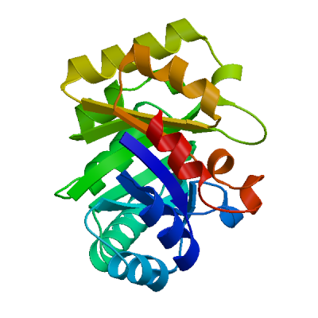
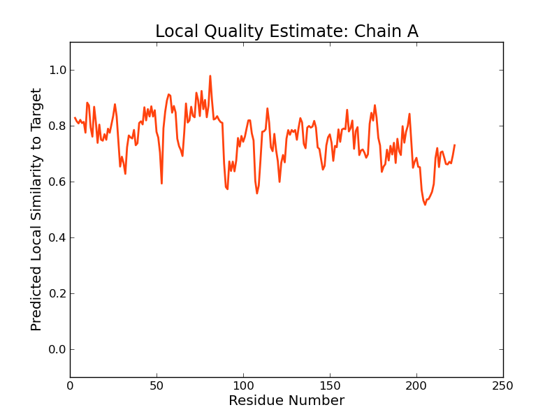
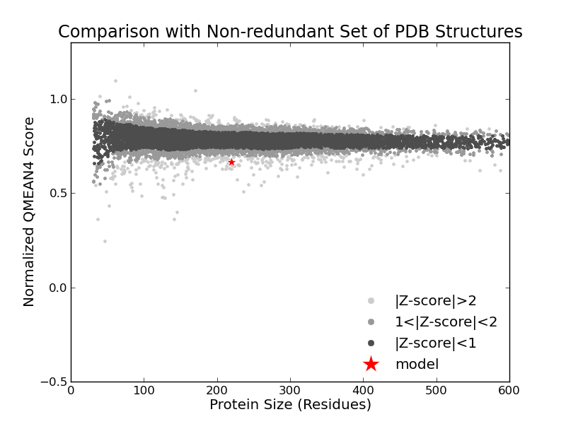
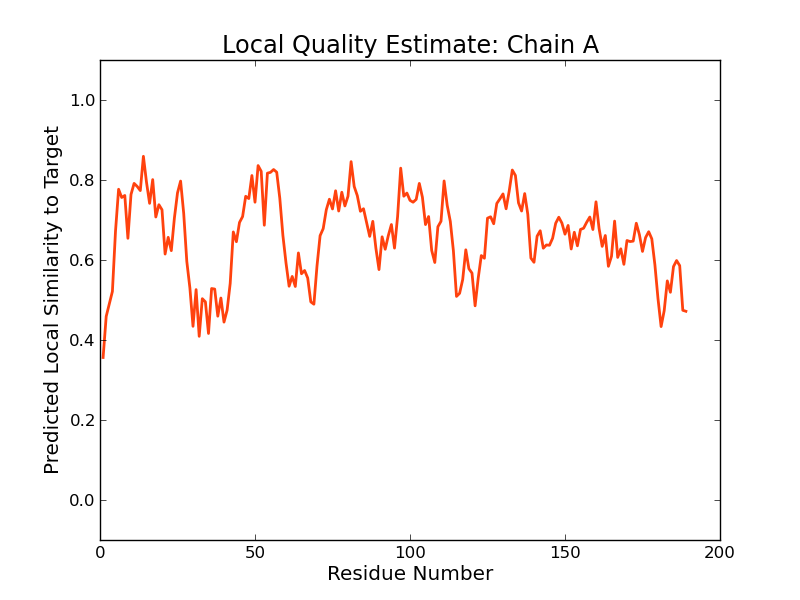
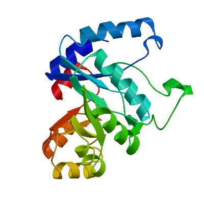
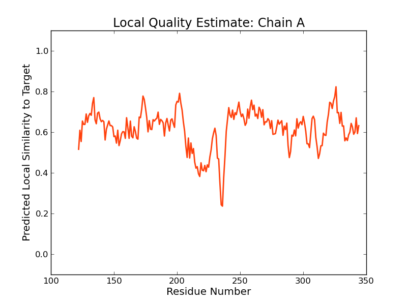

SWISS-MODEL Homology Modelling Report |
Model Building Report
This document lists the results for the homology modelling project "T451DRAFT_1644" submitted to SWISS-MODEL workspace on July 11, 2017, 7:41 p.m..The submitted primary amino acid sequence is given in Table T1.
If you use any results in your research, please cite the relevant publications:
Marco Biasini; Stefan Bienert; Andrew Waterhouse; Konstantin Arnold; Gabriel Studer; Tobias Schmidt; Florian Kiefer; Tiziano Gallo Cassarino; Martino Bertoni; Lorenza Bordoli; Torsten Schwede. (2014). SWISS-MODEL: modelling protein tertiary and quaternary structure using evolutionary information. Nucleic Acids Research (1 July 2014) 42 (W1): W252-W258; doi: 10.1093/nar/gku340.Arnold, K., Bordoli, L., Kopp, J. and Schwede, T. (2006) The SWISS-MODEL workspace: a web-based environment for protein structure homology modelling. Bioinformatics, 22, 195-201.
Benkert, P., Biasini, M. and Schwede, T. (2011) Toward the estimation of the absolute quality of individual protein structure models. Bioinformatics, 27, 343-350
Results
The SWISS-MODEL template library (SMTL version 2017-07-06, PDB release 2017-06-30) was searched with Blast (Altschul et al., 1997) and HHBlits (Remmert, et al., 2011) for evolutionary related structures matching the target sequence in Table T1. For details on the template search, see Materials and Methods. Overall 2304 templates were found (Table T2).
Models
The following models were built (see Materials and Methods "Model Building"):
Model #01 | File | Built with | Oligo-State | Ligands | GMQE | QMEAN |
|---|---|---|---|---|---|---|
|  | PDB | ProMod3 Version 1.0.2. | MONOMER (matching prediction) | None | 0.47 | -2.87 |
|  |  |
| Template | Seq Identity | Oligo-state | Found by | Method | Resolution | Seq Similarity | Range | Coverage | Description |
|---|---|---|---|---|---|---|---|---|---|
| 4rc1.1.C | 31.82 | homo-hexamer | HHblits | X-ray | 2.40Å | 0.35 | 0.63 | UPF0264 protein MJ1099 |
| Ligand | Added to Model | Description |
|---|---|---|
| PO4 | ✕ - Not biologically relevant. | PHOSPHATE ION |
| PO4 | ✕ - Not biologically relevant. | PHOSPHATE ION |
| PO4 | ✕ - Not biologically relevant. | PHOSPHATE ION |
| PO4 | ✕ - Not biologically relevant. | PHOSPHATE ION |
Target MTGMLASVNSVEEALQALSASVDIIDLKQPALGALGALETDLVKNIVDAIGGRCPVSATVGDLPMQPEIVYQAVKAMAET
4rc1.1.C --ILLVSPIDVEEAKEAIAGGADIIDVKNPKEGSLGANFPWMIKAIREVTPKDLLVSATVGDVPYKPGTISLAAVGAAIS
Target GVDYIKIGFFPGGDWQGTLEKLAALTQ------QNLALIAVLFADTQ-----PDFAVIDLLKNAGFKGVMLDTMNKKNGS
4rc1.1.C GADYIKVGLYGVKNYYQAVELMKNVVRAVKDIDENKIVVAAGYADAYRVGAVEPLIVPKIARDAGCDVAMLDTAIKDGKT
Target LTQVMTKTDIAQFVRLAKDRSMLCGLAGSLRLDDIAELMPYQPNYLGFRGALCLDHNRTA-QLNRSSIMQIKQAIEHHQT
4rc1.1.C LFDFQSKEILAEFVDEAHSYGLKCALAGSIKKEHIPILKEIGTDIVGVRGAACKGGDRNNGRIDRELVKELKEL------
Target ENTENRILIADDSEINRLILANMLELNGYTVDAAADGAEALQFISENHYKFALIDLSMPIMSGLEMVRILRKQHNPLKTA
4rc1.1.C --------------------------------------------------------------------------------
Target AISTFTVDNQKTGALDAGFDYCLTRPIDEEQLMALLNLH
4rc1.1.C ---------------------------------------
Model #02 | File | Built with | Oligo-State | Ligands | GMQE | QMEAN |
|---|---|---|---|---|---|---|
 | PDB | ProMod3 Version 1.0.2. | MONOMER (matching prediction) | None | 0.26 | -4.44 |
|  |
| Template | Seq Identity | Oligo-state | Found by | Method | Resolution | Seq Similarity | Range | Coverage | Description |
|---|---|---|---|---|---|---|---|---|---|
| 1x7i.1.A | 18.75 | homo-dimer | HHblits | X-ray | 1.70Å | 0.29 | 1 - 189 | 0.51 | Copper homeostasis protein cutC |
| Ligand | Added to Model | Description |
|---|---|---|
| CA | ✕ - Binding site not conserved. | CALCIUM ION |
Target MTGMLASVNSVEEALQALSASVDIIDLKQPALGALGALE--TDLVKNIVDAIGGRCPVSA----TVGDLPMQPEIVY---
1x7i.1.A MALLEICCYSMECALTAQQNGADRVELCA--APKEGGLTPSLGVLKSVRQRVT--IPVHPIIRPRGGDFCYSDGEFAAIL
Target QAVKAMAETGVDYIKIGFFPG--GDWQGTLEKLAALTQQNLAL-IAVLFADT-QPDFAVIDLLKNAGFKGVMLDTMNKKN
1x7i.1.A EDVRTVRELGFPGLVTGVLDVDGNVDMPRMEKIMAAAG-PLAVTFHRAF-DMCANPLYTLNNLAELGIARVL-TSGQKS-
Target GSLTQVMTKTDIAQFVRLAKDRSMLCGLAGSLRLDDIAELMPYQPNYLGFRGALCLDHNRTAQLNRSSIMQIKQAIEHHQ
1x7i.1.A -DALQG--LSKIMELIAHRDA-PI-IMAGAGVRAENLHHFLD--------------------------------------
Target TENTENRILIADDSEINRLILANMLELNGYTVDAAADGAEALQFISENHYKFALIDLSMPIMSGLEMVRILRKQHNPLKT
1x7i.1.A --------------------------------------------------------------------------------
Target AAISTFTVDNQKTGALDAGFDYCLTRPIDEEQLMALLNLH
1x7i.1.A ----------------------------------------
Model #03 | File | Built with | Oligo-State | Ligands | GMQE | QMEAN |
|---|---|---|---|---|---|---|
|  | PDB | ProMod3 Version 1.0.2. | MONOMER | None | 0.24 | -6.45 |
|  |
| Template | Seq Identity | Oligo-state | Found by | Method | Resolution | Seq Similarity | Range | Coverage | Description |
|---|---|---|---|---|---|---|---|---|---|
| 2htm.1.A | 11.76 | hetero-oligomer | HHblits | X-ray | 2.30Å | 0.27 | 122 - 344 | 0.54 | Thiazole biosynthesis protein thiG |
Target MTGMLASVNSVEEALQALSASVDIIDLKQPALGALGALETDLVKNIVDAIGGRCPVSATVGDLPMQPEIVYQAVKAMAET
2htm.1.A --------------------------------------------------------------------------------
Target GVDYIKIGFFPGGDWQGTLEKLAALTQQNLALIAVLFADTQPDFAVIDLLKNAGFKGVMLDTMNKKNGSLTQVMTKTDIA
2htm.1.A -----------------------------------------DFGVMREAIAAAKAEVVTVSVRRVE---L-KAPGHVGLL
Target QFVRLAKDRSMLCGLAGSLRLDDIAELMPYQPNYLGFRGALCLDHNRTAQLNRSSIMQIKQAIEHHQTENTENRILIADD
2htm.1.A EALE---GVRLLPNTAGARTAEEAVRLARLGRLLTGERW-VKLEV------------------------IPDPT-YLLPD
Target SEINRLILANMLELNGYTVD-AAA-DGAEALQFISENHYKFALIDLSMPIM-----SGLEMVRILRKQHNP-LKTAAIST
2htm.1.A PLETLKAAERLIE-EDFLVLPYMGPDLVLAKR-LAALGTATV-MPLAAPIGSGWGVRTRALLELFAREKASLPPVVVDAG
Target FTVDNQKTGALDAGFDYCL-----TRPIDEEQLMALLNLH
2htm.1.A LGLPSHAAEVMELGLDAVLVNTAIAEAQDPPAMAEAF---
Materials and Methods
Template Search
Template search with Blast and HHBlits has been performed against the SWISS-MODEL template library (SMTL, last update: 2017-07-06, last included PDB release: 2017-06-30).
The target sequence was searched with BLAST (Altschul et al., 1997) against the primary amino acid sequence contained in the SMTL. A total of 164 templates were found.
An initial HHblits profile has been built using the procedure outlined in (Remmert, et al., 2011), followed by 1 iteration of HHblits against NR20. The obtained profile has then be searched against all profiles of the SMTL. A total of 2148 templates were found.
Template Selection
For each identified template, the template's quality has been predicted from features of the target-template alignment. The templates with the highest quality have then been selected for model building.
Model Building
Models are built based on the target-template alignment using ProMod3. Coordinates which are conserved between the target and the template are copied from the template to the model. Insertions and deletions are remodelled using a fragment library. Side chains are then rebuilt. Finally, the geometry of the resulting model is regularized by using a force field. In case loop modelling with ProMod3 fails, an alternative model is built with PROMOD-II (Guex, et al., 1997).
Model Quality Estimation
The global and per-residue model quality has been assessed using the QMEAN scoring function (Benkert, et al., 2011) . For improved performance, weights of the individual QMEAN terms have been trained specifically for SWISS-MODEL.
Ligand Modelling
Ligands present in the template structure are transferred by homology to the model when the following criteria are met (Gallo -Casserino, to be published): (a) The ligands are annotated as biologically relevant in the template library, (b) the ligand is in contact with the model, (c) the ligand is not clashing with the protein, (d) the residues in contact with the ligand are conserved between the target and the template. If any of these four criteria is not satisfied, a certain ligand will not be included in the model. The model summary includes information on why and which ligand has not been included.
Oligomeric State Conservation
Homo-oligomeric structure of the target protein is predicted based on the analysis of pairwise interfaces of the identified template structures. For each relevant interface between polypeptide chains (interfaces with more than 10 residue-residue interactions), the QscoreOligomer (Mariani et al., 2011) is predicted from features such as similarity to target and frequency of observing this interface in the identified templates (Kiefer, Bertoni, Biasini, to be published). The prediction is performed with a random forest regressor using these features as input parameters to predict the probability of conservation for each interface. The QscoreOligomer of the whole complex is then calculated as the weight-averaged QscoreOligomer of the interfaces. The oligomeric state of the target is predicted to be the same as in the template when QscoreOligomer is predicted to be higher or equal to 0.5.
References
Altschul, S.F., Madden, T.L., Schaffer, A.A., Zhang, J., Zhang, Z., Miller, W. and Lipman, D.J. (1997) Gapped BLAST and PSI-BLAST: a new generation of protein database search programs. Nucleic Acids Res, 25, 3389-3402.
Remmert, M., Biegert, A., Hauser, A. and Soding, J. (2012) HHblits: lightning-fast iterative protein sequence searching by HMM-HMM alignment. Nat Methods, 9, 173-175.
Guex, N. and Peitsch, M.C. (1997) SWISS-MODEL and the Swiss-PdbViewer: an environment for comparative protein modeling. Electrophoresis, 18, 2714-2723.
Sali, A. and Blundell, T.L. (1993) Comparative protein modelling by satisfaction of spatial restraints. J Mol Biol, 234, 779-815.
Benkert, P., Biasini, M. and Schwede, T. (2011) Toward the estimation of the absolute quality of individual protein structure models. Bioinformatics, 27, 343-350.
Mariani, V., Kiefer, F., Schmidt, T., Haas, J. and Schwede, T. (2011) Assessment of template based protein structure predictions in CASP9. Proteins, 79 Suppl 10, 37-58.
Table T1:
Primary amino acid sequence for which templates were searched and models were built.
KLAALTQQNLALIAVLFADTQPDFAVIDLLKNAGFKGVMLDTMNKKNGSLTQVMTKTDIAQFVRLAKDRSMLCGLAGSLRLDDIAELMPYQPNYLGFRGA
LCLDHNRTAQLNRSSIMQIKQAIEHHQTENTENRILIADDSEINRLILANMLELNGYTVDAAADGAEALQFISENHYKFALIDLSMPIMSGLEMVRILRK
QHNPLKTAAISTFTVDNQKTGALDAGFDYCLTRPIDEEQLMALLNLH
Table T2:
| Template | Seq Identity | Oligo-state | Found by | Method | Resolution | Seq Similarity | Coverage | Description |
|---|---|---|---|---|---|---|---|---|
| 3sy8.1.A | 11.08 | homo-octamer | HHblits | X-ray | 2.50Å | 0.25 | 0.94 | RocR |
| 3sy8.1.B | 11.08 | homo-octamer | HHblits | X-ray | 2.50Å | 0.25 | 0.94 | RocR |
| 3sy8.1.C | 11.08 | homo-octamer | HHblits | X-ray | 2.50Å | 0.25 | 0.94 | RocR |
| 3sy8.1.D | 11.08 | homo-octamer | HHblits | X-ray | 2.50Å | 0.25 | 0.94 | RocR |
| 4rc1.1.A | 31.82 | homo-hexamer | HHblits | X-ray | 2.40Å | 0.35 | 0.63 | UPF0264 protein MJ1099 |
| 4rc1.1.C | 31.82 | homo-hexamer | HHblits | X-ray | 2.40Å | 0.35 | 0.63 | UPF0264 protein MJ1099 |
| 4rc1.2.A | 31.82 | homo-hexamer | HHblits | X-ray | 2.40Å | 0.35 | 0.63 | UPF0264 protein MJ1099 |
| 4rc1.2.C | 31.82 | homo-hexamer | HHblits | X-ray | 2.40Å | 0.35 | 0.63 | UPF0264 protein MJ1099 |
| 4rc1.2.F | 31.82 | homo-hexamer | HHblits | X-ray | 2.40Å | 0.35 | 0.63 | UPF0264 protein MJ1099 |
| 4rc1.1.A | 33.03 | homo-hexamer | BLAST | X-ray | 2.40Å | 0.36 | 0.63 | UPF0264 protein MJ1099 |
| 4rc1.1.C | 33.03 | homo-hexamer | BLAST | X-ray | 2.40Å | 0.36 | 0.63 | UPF0264 protein MJ1099 |
| 4rc1.2.A | 33.03 | homo-hexamer | BLAST | X-ray | 2.40Å | 0.36 | 0.63 | UPF0264 protein MJ1099 |
| 4rc1.2.C | 33.03 | homo-hexamer | BLAST | X-ray | 2.40Å | 0.36 | 0.63 | UPF0264 protein MJ1099 |
| 4rc1.2.F | 33.03 | homo-hexamer | BLAST | X-ray | 2.40Å | 0.36 | 0.63 | UPF0264 protein MJ1099 |
| 2htm.1.A | 11.76 | hetero-oligomer | HHblits | X-ray | 2.30Å | 0.27 | 0.54 | Thiazole biosynthesis protein thiG |
| 5ey5.1.A | 17.22 | hetero-oligomer | HHblits | X-ray | 1.97Å | 0.29 | 0.52 | LBCATS-a |
| 5ey5.1.C | 17.22 | hetero-oligomer | HHblits | X-ray | 1.97Å | 0.29 | 0.52 | LBCATS-a |
| 2bdq.1.A | 14.84 | homo-dimer | HHblits | X-ray | 2.30Å | 0.28 | 0.52 | copper homeostasis protein CutC |
| 3f4w.1.A | 15.56 | homo-dimer | HHblits | X-ray | 1.65Å | 0.28 | 0.52 | Putative hexulose 6 phosphate synthase |
| 1x7i.1.A | 18.75 | homo-dimer | HHblits | X-ray | 1.70Å | 0.29 | 0.51 | Copper homeostasis protein cutC |
| 1x7i.1.B | 18.75 | homo-dimer | HHblits | X-ray | 1.70Å | 0.29 | 0.51 | Copper homeostasis protein cutC |
| 1twd.1.A | 18.75 | homo-dimer | HHblits | X-ray | 1.70Å | 0.29 | 0.51 | Copper homeostasis protein cutC |
| 1twd.1.B | 18.75 | homo-dimer | HHblits | X-ray | 1.70Å | 0.29 | 0.51 | Copper homeostasis protein cutC |
| 4ml9.1.A | 12.57 | homo-dimer | HHblits | X-ray | 1.84Å | 0.26 | 0.53 | Uncharacterized protein |
| 1y0e.1.A | 13.81 | monomer | HHblits | X-ray | 1.95Å | 0.27 | 0.52 | Putative N-acetylmannosamine-6-phosphate 2-epimerase |
| 1rd5.1.A | 14.69 | monomer | HHblits | X-ray | 2.02Å | 0.28 | 0.51 | Tryptophan synthase alpha chain, chloroplast |
| 1rd5.2.A | 14.69 | monomer | HHblits | X-ray | 2.02Å | 0.28 | 0.51 | Tryptophan synthase alpha chain, chloroplast |
| 5umf.1.A | 12.22 | homo-hexamer | HHblits | X-ray | 1.40Å | 0.27 | 0.52 | Ribulose-phosphate 3-epimerase |
| 3iwp.1.B | 18.29 | homo-tetramer | HHblits | X-ray | 2.50Å | 0.29 | 0.50 | Copper homeostasis protein cutC homolog |
| 3iwp.1.A | 18.29 | homo-tetramer | HHblits | X-ray | 2.50Å | 0.29 | 0.50 | Copper homeostasis protein cutC homolog |
| 3iwp.2.B | 18.29 | homo-tetramer | HHblits | X-ray | 2.50Å | 0.29 | 0.50 | Copper homeostasis protein cutC homolog |
| 3iwp.2.C | 18.29 | homo-tetramer | HHblits | X-ray | 2.50Å | 0.29 | 0.50 | Copper homeostasis protein cutC homolog |
| 3iwp.2.D | 18.29 | homo-tetramer | HHblits | X-ray | 2.50Å | 0.29 | 0.50 | Copper homeostasis protein cutC homolog |
| 3iwp.3.A | 18.29 | homo-tetramer | HHblits | X-ray | 2.50Å | 0.29 | 0.50 | Copper homeostasis protein cutC homolog |
| 3iwp.3.B | 18.29 | homo-tetramer | HHblits | X-ray | 2.50Å | 0.29 | 0.50 | Copper homeostasis protein cutC homolog |
| 3iwp.3.C | 18.29 | homo-tetramer | HHblits | X-ray | 2.50Å | 0.29 | 0.50 | Copper homeostasis protein cutC homolog |
| 3iwp.3.D | 18.29 | homo-tetramer | HHblits | X-ray | 2.50Å | 0.29 | 0.50 | Copper homeostasis protein cutC homolog |
| 3exs.1.A | 11.67 | homo-dimer | HHblits | X-ray | 2.50Å | 0.26 | 0.52 | RmpD (Hexulose-6-phosphate synthase) |
| 3exs.2.B | 11.67 | homo-dimer | HHblits | X-ray | 2.50Å | 0.26 | 0.52 | RmpD (Hexulose-6-phosphate synthase) |
| 3exr.1.A | 11.67 | homo-dimer | HHblits | X-ray | 1.70Å | 0.26 | 0.52 | RmpD (Hexulose-6-phosphate synthase) |
| 3ct7.1.A | 10.61 | homo-hexamer | HHblits | X-ray | 2.50Å | 0.26 | 0.52 | D-allulose-6-phosphate 3-epimerase |
| 3ieb.1.A | 11.67 | homo-dimer | HHblits | X-ray | 2.10Å | 0.26 | 0.52 | Hexulose-6-phosphate synthase SgbH |
| 2fli.1.A | 16.67 | homo-hexamer | HHblits | X-ray | 1.80Å | 0.28 | 0.50 | ribulose-phosphate 3-epimerase |
| 1tqj.1.A | 12.99 | homo-hexamer | HHblits | X-ray | 1.60Å | 0.27 | 0.51 | Ribulose-phosphate 3-epimerase |
| 1h1y.1.A | 14.20 | homo-dimer | HHblits | X-ray | 1.87Å | 0.27 | 0.51 | D-RIBULOSE-5-PHOSPHATE 3-EPIMERASE |
| 1so5.1.A | 13.07 | homo-dimer | HHblits | X-ray | 1.80Å | 0.27 | 0.51 | 3-keto-L-gulonate 6-phosphate decarboxylase |
| 4nu7.1.A | 13.79 | homo-dimer | HHblits | X-ray | 2.05Å | 0.28 | 0.50 | Ribulose-phosphate 3-epimerase |
| 1rpx.1.A | 12.00 | homo-hexamer | HHblits | X-ray | 2.30Å | 0.27 | 0.50 | PROTEIN (RIBULOSE-PHOSPHATE 3-EPIMERASE) |
| 3inp.1.A | 10.73 | homo-12-mer | HHblits | X-ray | 2.05Å | 0.26 | 0.51 | D-ribulose-phosphate 3-epimerase |
| 2e09.1.A | 14.29 | monomer | HHblits | X-ray | 2.40Å | 0.26 | 0.50 | Tryptophan synthase alpha chain |
| 4r9x.1.A | 14.71 | homo-dimer | HHblits | X-ray | 1.85Å | 0.28 | 0.49 | Copper homeostasis protein CutC |
| 4r9x.1.B | 14.71 | homo-dimer | HHblits | X-ray | 1.85Å | 0.28 | 0.49 | Copper homeostasis protein CutC |
| 5g5i.1.A | 14.71 | monomer | HHblits | X-ray | 2.00Å | 0.28 | 0.49 | ? |
| 5abt.1.A | 15.48 | monomer | HHblits | X-ray | 1.65Å | 0.28 | 0.48 | 1-(5-PHOSPHORIBOSYL)-5-[(5-PHOSPHORIBOSYLAMINO) METHYLIDENE AMINO] IMIDAZOLE-4-CARBOXAMIDE ISOMERASE |
| 5g4e.1.A | 14.20 | monomer | HHblits | X-ray | 2.65Å | 0.27 | 0.49 | ? |
| 5g4e.2.A | 14.20 | monomer | HHblits | X-ray | 2.65Å | 0.27 | 0.49 | ? |
| 5l9f.1.A | 14.97 | monomer | HHblits | X-ray | 2.59Å | 0.27 | 0.48 | 1-(5-phosphoribosyl)-5-[(5-phosphoribosylamino)methylideneamino] imidazole-4-carboxamide isomerase |
| 4fx7.1.A | 12.50 | monomer | HHblits | X-ray | 2.08Å | 0.27 | 0.48 | Imidazole glycerol phosphate synthase subunit HisF |
| 1gpw.1.A | 11.24 | hetero-oligomer | HHblits | X-ray | 2.40Å | 0.26 | 0.49 | HISF PROTEIN |
| 1gpw.3.A | 11.24 | hetero-oligomer | HHblits | X-ray | 2.40Å | 0.26 | 0.49 | HISF PROTEIN |
| 1tqx.1.A | 10.71 | monomer | HHblits | X-ray | 2.00Å | 0.26 | 0.48 | D-ribulose-5-phosphate 3-epimerase, putative |
| 1ka9.1.B | 11.83 | hetero-oligomer | HHblits | X-ray | 2.30Å | 0.26 | 0.49 | imidazole glycerol phosphate synthase |
| 1pii.1.A | 14.29 | monomer | HHblits | X-ray | 2.00Å | 0.26 | 0.48 | N-(5'PHOSPHORIBOSYL)ANTHRANILATE ISOMERASE |
| 4wd0.1.A | 16.67 | homo-hexamer | HHblits | X-ray | 1.50Å | 0.28 | 0.47 | 1-(5-phosphoribosyl)-5-[(5-phosphoribosylamino)methylideneamino] imidazole-4-carboxamide isomerase |
| 4x9s.1.A | 14.11 | monomer | HHblits | X-ray | 1.60Å | 0.27 | 0.47 | Phosphoribosyl isomerase A |
| 2y88.1.A | 14.11 | monomer | HHblits | X-ray | 1.33Å | 0.26 | 0.47 | PHOSPHORIBOSYL ISOMERASE A |
| 2y89.1.A | 14.11 | monomer | HHblits | X-ray | 2.50Å | 0.26 | 0.47 | PHOSPHORIBOSYL ISOMERASE A |
| 2cff.1.A | 8.02 | monomer | HHblits | X-ray | 2.50Å | 0.25 | 0.47 | 1-(5-PHOSPHORIBOSYL)-5-[(5-PHOSPHORIBOSYLAMINO) METHYLIDENEAMINO] IMIDAZOLE-4-CARBOXAMIDE ISOMERASE |
| 2cff.2.A | 8.02 | monomer | HHblits | X-ray | 2.50Å | 0.25 | 0.47 | 1-(5-PHOSPHORIBOSYL)-5-[(5-PHOSPHORIBOSYLAMINO) METHYLIDENEAMINO] IMIDAZOLE-4-CARBOXAMIDE ISOMERASE |
| 5h91.1.A | 15.13 | homo-dimer | HHblits | X-ray | 1.77Å | 0.28 | 0.44 | Deoxyribose-phosphate aldolase |
| 4xbs.1.A | 14.67 | homo-dimer | HHblits | X-ray | 2.17Å | 0.28 | 0.43 | Deoxyribose-phosphate aldolase |
| 4xbk.1.A | 14.67 | homo-dimer | HHblits | X-ray | 1.95Å | 0.28 | 0.43 | Deoxyribose-phosphate aldolase |
| 3v5c.1.A | 12.00 | monomer | HHblits | X-ray | 1.53Å | 0.27 | 0.43 | Mandelate racemase/muconate lactonizing protein |
| 3v5f.1.A | 12.00 | monomer | HHblits | X-ray | 2.00Å | 0.27 | 0.43 | Mandelate racemase/muconate lactonizing protein |
| 1thf.1.A | 13.42 | homo-dimer | HHblits | X-ray | 1.45Å | 0.27 | 0.43 | HISF PROTEIN |
| 1gpw.1.A | 13.42 | hetero-oligomer | HHblits | X-ray | 2.40Å | 0.27 | 0.43 | HISF PROTEIN |
| 1gpw.3.A | 13.42 | hetero-oligomer | HHblits | X-ray | 2.40Å | 0.27 | 0.43 | HISF PROTEIN |
| 2wjz.1.A | 13.42 | hetero-oligomer | HHblits | X-ray | 2.60Å | 0.26 | 0.43 | IMIDAZOLE GLYCEROL PHOSPHATE SYNTHASE HISF |
| 3zr4.2.A | 13.42 | hetero-oligomer | HHblits | X-ray | 2.41Å | 0.26 | 0.43 | IMIDAZOLE GLYCEROL PHOSPHATE SYNTHASE SUBUNIT HISF |
| 4e4u.1.A | 13.51 | homo-octamer | HHblits | X-ray | 1.35Å | 0.27 | 0.43 | Mandalate racemase/muconate lactonizing enzyme |
| 4h83.1.A | 12.33 | homo-hexamer | HHblits | X-ray | 2.09Å | 0.27 | 0.42 | Mandelate racemase/muconate lactonizing enzyme |
| 3bjs.1.A | 10.27 | homo-octamer | HHblits | X-ray | 2.70Å | 0.27 | 0.42 | Mandelate racemase/muconate lactonizing enzyme |
| 3msy.1.A | 10.88 | homo-hexamer | HHblits | X-ray | 2.50Å | 0.27 | 0.42 | Mandelate racemase/muconate lactonizing enzyme |
| 3ck5.1.A | 15.17 | homo-octamer | HHblits | X-ray | 2.30Å | 0.28 | 0.42 | Putative racemase |
| 3cyj.1.A | 12.16 | homo-octamer | HHblits | X-ray | 2.30Å | 0.26 | 0.43 | Mandelate racemase/muconate lactonizing enzyme-like protein |
| 3rcy.1.A | 9.46 | homo-octamer | HHblits | X-ray | 1.99Å | 0.26 | 0.43 | Mandelate racemase/muconate lactonizing enzyme-like protein |
| 3ssz.1.A | 12.41 | homo-octamer | HHblits | X-ray | 2.39Å | 0.27 | 0.42 | Mandelate racemase/muconate lactonizing enzyme, N-terminal domain protein |
| 1ojx.1.A | 17.86 | homo-pentamer | HHblits | X-ray | 1.90Å | 0.29 | 0.40 | FRUCTOSE-BISPHOSPHATE ALDOLASE CLASS I |
| 5few.1.A | 17.48 | monomer | HHblits | X-ray | 1.17Å | 0.27 | 0.41 | [FeFe] hydrogenase maturase subunit HydE |
| 5fep.1.A | 18.18 | monomer | HHblits | X-ray | 1.45Å | 0.27 | 0.41 | [FeFe] hydrogenase maturase subunit HydE |
| 4wfs.1.A | 20.00 | monomer | HHblits | X-ray | 2.68Å | 0.29 | 0.40 | tRNA-dihydrouridine(20) synthase [NAD(P)+]-like |
| 4xp7.1.A | 20.00 | monomer | HHblits | X-ray | 1.90Å | 0.29 | 0.40 | tRNA-dihydrouridine(20) synthase [NAD(P)+]-like |
| 4e5t.1.A | 9.52 | homo-octamer | HHblits | X-ray | 2.90Å | 0.25 | 0.42 | Mandelate racemase / muconate lactonizing enzyme, C-terminal domain protein |
| 3no1.1.A | 11.89 | homo-hexamer | HHblits | X-ray | 2.16Å | 0.27 | 0.41 | Mandelate racemase/muconate lactonizing enzyme |
| 4j3z.1.A | 11.64 | homo-octamer | HHblits | X-ray | 2.50Å | 0.25 | 0.42 | Mandelate racemase/muconate lactonizing enzyme |
| 4lrs.1.A | 17.99 | hetero-oligomer | HHblits | X-ray | 1.55Å | 0.29 | 0.40 | 4-hydroxy-2-oxovalerate aldolase |
| 3h12.1.A | 11.11 | homo-octamer | HHblits | X-ray | 1.50Å | 0.26 | 0.41 | mandelate racemase |
| 3op2.1.A | 11.11 | homo-dimer | HHblits | X-ray | 2.00Å | 0.26 | 0.41 | Putative mandelate racemase |
| 1nvm.1.C | 15.11 | hetero-oligomer | HHblits | X-ray | 1.70Å | 0.29 | 0.40 | 4-hydroxy-2-oxovalerate aldolase |
| 1nvm.1.A | 15.11 | hetero-oligomer | HHblits | X-ray | 1.70Å | 0.29 | 0.40 | 4-hydroxy-2-oxovalerate aldolase |
| 2qgy.1.A | 11.19 | homo-dimer | HHblits | X-ray | 1.80Å | 0.27 | 0.41 | Enolase from the environmental genome shotgun sequencing of the Sargasso Sea |
| 2hxt.1.A | 15.38 | homo-dimer | HHblits | X-ray | 1.70Å | 0.27 | 0.41 | L-fuconate dehydratase |
| 3ozy.1.A | 11.11 | homo-dimer | HHblits | X-ray | 1.30Å | 0.26 | 0.41 | Putative mandelate racemase |
| 3ozm.4.A | 11.11 | homo-dimer | HHblits | X-ray | 1.60Å | 0.26 | 0.41 | Putative mandelate racemase |
| 3sjn.1.A | 11.81 | homo-octamer | HHblits | X-ray | 1.90Å | 0.26 | 0.41 | Mandelate racemase/muconate lactonizing protein |
| 4a35.1.A | 13.19 | homo-dimer | HHblits | X-ray | 1.74Å | 0.25 | 0.41 | MITOCHONDRIAL ENOLASE SUPERFAMILY MEMBER 1 |
| 1h7x.1.A | 17.39 | homo-dimer | HHblits | X-ray | 2.01Å | 0.29 | 0.40 | DIHYDROPYRIMIDINE DEHYDROGENASE |
| 3gd6.1.A | 15.00 | homo-dimer | HHblits | X-ray | 1.60Å | 0.27 | 0.40 | Muconate cycloisomerase |
| 3es8.1.A | 15.00 | homo-octamer | HHblits | X-ray | 2.20Å | 0.27 | 0.40 | Muconate cycloisomerase |
| 2ekc.1.A | 14.29 | monomer | HHblits | X-ray | 2.00Å | 0.27 | 0.40 | Tryptophan synthase alpha chain |
| 2ekc.2.A | 14.29 | monomer | HHblits | X-ray | 2.00Å | 0.27 | 0.40 | Tryptophan synthase alpha chain |
| 2pmq.1.A | 12.06 | homo-octamer | HHblits | X-ray | 1.72Å | 0.27 | 0.41 | Mandelate racemase/muconate lactonizing enzyme |
| 2hne.1.A | 14.79 | homo-dimer | HHblits | X-ray | 2.00Å | 0.26 | 0.41 | L-fuconate dehydratase |
| 2hne.1.B | 14.79 | homo-dimer | HHblits | X-ray | 2.00Å | 0.26 | 0.41 | L-fuconate dehydratase |
| 3eeg.1.A | 16.55 | homo-dimer | HHblits | X-ray | 2.78Å | 0.28 | 0.40 | 2-isopropylmalate synthase |
| 3eeg.1.B | 16.55 | homo-dimer | HHblits | X-ray | 2.78Å | 0.28 | 0.40 | 2-isopropylmalate synthase |
| 3t4w.1.A | 13.48 | homo-octamer | HHblits | X-ray | 2.52Å | 0.26 | 0.41 | Mandelate racemase/muconate lactonizing enzyme family protein |
| 3og3.1.A | 17.27 | monomer | HHblits | X-ray | 2.08Å | 0.27 | 0.40 | Imidazole glycerol phosphate synthase subunit hisF |
| 4bfa.1.A | 20.74 | monomer | HHblits | X-ray | 1.65Å | 0.29 | 0.39 | TRNA-DIHYDROURIDINE SYNTHASE C |
| 4bf9.1.A | 20.74 | monomer | HHblits | X-ray | 2.60Å | 0.29 | 0.39 | TRNA-DIHYDROURIDINE SYNTHASE C |
| 4kwv.1.A | 12.77 | homo-hexamer | HHblits | X-ray | 2.80Å | 0.26 | 0.41 | Nicotinate-nucleotide pyrophosphorylase [carboxylating] |
| 5ayx.1.A | 12.06 | homo-hexamer | HHblits | X-ray | 2.80Å | 0.26 | 0.41 | Nicotinate-nucleotide pyrophosphorylase [carboxylating] |
| 5ayx.1.B | 12.06 | homo-hexamer | HHblits | X-ray | 2.80Å | 0.26 | 0.41 | Nicotinate-nucleotide pyrophosphorylase [carboxylating] |
| 5ayx.1.C | 12.06 | homo-hexamer | HHblits | X-ray | 2.80Å | 0.26 | 0.41 | Nicotinate-nucleotide pyrophosphorylase [carboxylating] |
| 5ayx.1.D | 12.06 | homo-hexamer | HHblits | X-ray | 2.80Å | 0.26 | 0.41 | Nicotinate-nucleotide pyrophosphorylase [carboxylating] |
| 5ayx.1.E | 12.06 | homo-hexamer | HHblits | X-ray | 2.80Å | 0.26 | 0.41 | Nicotinate-nucleotide pyrophosphorylase [carboxylating] |
| 5ayx.1.F | 12.06 | homo-hexamer | HHblits | X-ray | 2.80Å | 0.26 | 0.41 | Nicotinate-nucleotide pyrophosphorylase [carboxylating] |
| 5kmy.1.A | 14.49 | monomer | HHblits | X-ray | 1.91Å | 0.27 | 0.40 | Tryptophan synthase alpha chain |
| 2jbm.1.A | 12.06 | homo-hexamer | HHblits | X-ray | 2.00Å | 0.26 | 0.41 | NICOTINATE-NUCLEOTIDE PYROPHOSPHORYLASE |
| 4ip4.1.A | 9.79 | homo-dimer | HHblits | X-ray | 2.13Å | 0.25 | 0.41 | Mandelate racemase/muconate lactonizing enzyme-like protein |
| 5ayy.1.A | 12.06 | homo-hexamer | HHblits | X-ray | 3.09Å | 0.26 | 0.41 | Nicotinate-nucleotide pyrophosphorylase [carboxylating] |
| 5ayy.2.A | 12.06 | homo-hexamer | HHblits | X-ray | 3.09Å | 0.26 | 0.41 | Nicotinate-nucleotide pyrophosphorylase [carboxylating] |
| 5ayz.1.A | 12.06 | homo-hexamer | HHblits | X-ray | 2.60Å | 0.26 | 0.41 | Nicotinate-nucleotide pyrophosphorylase [carboxylating] |
| 3w9z.1.A | 21.05 | monomer | HHblits | X-ray | 2.10Å | 0.30 | 0.38 | tRNA-dihydrouridine synthase C |
| 4fx7.1.A | 19.26 | monomer | HHblits | X-ray | 2.08Å | 0.29 | 0.39 | Imidazole glycerol phosphate synthase subunit HisF |
| 3paj.1.A | 18.52 | homo-dimer | HHblits | X-ray | 2.00Å | 0.29 | 0.39 | Nicotinate-nucleotide pyrophosphorylase, carboxylating |
| 3paj.1.B | 18.52 | homo-dimer | HHblits | X-ray | 2.00Å | 0.29 | 0.39 | Nicotinate-nucleotide pyrophosphorylase, carboxylating |
| 3tdn.1.A | 16.06 | homo-dimer | HHblits | X-ray | 1.40Å | 0.27 | 0.39 | FLR SYMMETRIC ALPHA-BETA TIM BARREL |
| 4i9a.1.A | 9.93 | homo-hexamer | HHblits | X-ray | 2.10Å | 0.25 | 0.41 | quinolinate phosphoribosyltransferase |
| 4i9a.1.B | 9.93 | homo-hexamer | HHblits | X-ray | 2.10Å | 0.25 | 0.41 | quinolinate phosphoribosyltransferase |
| 4yco.1.A | 20.45 | monomer | HHblits | X-ray | 2.10Å | 0.30 | 0.38 | tRNA-dihydrouridine synthase C |
| 1sfl.1.A | 16.54 | homo-dimer | HHblits | X-ray | 1.90Å | 0.29 | 0.38 | 3-dehydroquinate dehydratase |
| 1sfl.1.B | 16.54 | homo-dimer | HHblits | X-ray | 1.90Å | 0.29 | 0.38 | 3-dehydroquinate dehydratase |
| 5abt.1.A | 17.29 | monomer | HHblits | X-ray | 1.65Å | 0.29 | 0.38 | 1-(5-PHOSPHORIBOSYL)-5-[(5-PHOSPHORIBOSYLAMINO) METHYLIDENE AMINO] IMIDAZOLE-4-CARBOXAMIDE ISOMERASE |
| 5g5i.1.A | 16.54 | monomer | HHblits | X-ray | 2.00Å | 0.29 | 0.38 | ? |
| 5l9f.1.A | 16.54 | monomer | HHblits | X-ray | 2.59Å | 0.29 | 0.38 | 1-(5-phosphoribosyl)-5-[(5-phosphoribosylamino)methylideneamino] imidazole-4-carboxamide isomerase |
| 1sfj.1.A | 15.79 | homo-dimer | HHblits | X-ray | 2.40Å | 0.29 | 0.38 | 3-dehydroquinate dehydratase |
| 2ayz.1.A | 31.67 | monomer | BLAST | NMR | NA | 0.36 | 0.35 | Sensor kinase protein rcsC |
| 2ayx.1.A | 31.67 | monomer | BLAST | NMR | NA | 0.36 | 0.35 | Sensor kinase protein rcsC |
| 1gt8.1.A | 18.32 | homo-dimer | HHblits | X-ray | 3.30Å | 0.29 | 0.38 | DIHYDROPYRIMIDINE DEHYDROGENASE |
| 1gth.1.A | 18.32 | homo-dimer | HHblits | X-ray | 2.25Å | 0.29 | 0.38 | DIHYDROPYRIMIDINE DEHYDROGENASE |
| 1h7w.2.A | 18.32 | homo-dimer | HHblits | X-ray | 1.90Å | 0.29 | 0.38 | DIHYDROPYRIMIDINE DEHYDROGENASE |
| 2yce.1.A | 19.38 | homo-pentamer | HHblits | X-ray | 1.93Å | 0.30 | 0.37 | FRUCTOSE-BISPHOSPHATE ALDOLASE CLASS 1 |
| 5l6u.1.A | 15.91 | monomer | HHblits | X-ray | 1.60Å | 0.29 | 0.38 | HisA |
| 5ac8.1.A | 16.67 | monomer | HHblits | X-ray | 1.70Å | 0.28 | 0.38 | ? |
| 2w6r.1.A | 13.24 | monomer | HHblits | X-ray | 2.10Å | 0.26 | 0.39 | IMIDAZOLE GLYCEROL PHOSPHATE SYNTHASE SUBUNIT HISF |
| 1w8s.1.A | 19.38 | homo-pentamer | HHblits | X-ray | 1.85Å | 0.30 | 0.37 | FRUCTOSE-BISPHOSPHATE ALDOLASE CLASS I |
| 5g1y.1.A | 14.29 | monomer | HHblits | X-ray | 1.80Å | 0.28 | 0.38 | ? |
| 5a5w.1.A | 14.29 | monomer | HHblits | X-ray | 1.60Å | 0.28 | 0.38 | ? |
| 5g2i.1.A | 17.56 | monomer | HHblits | X-ray | 1.60Å | 0.29 | 0.38 | ? |
| 5g4e.1.A | 14.29 | monomer | HHblits | X-ray | 2.65Å | 0.27 | 0.38 | ? |
| 5g4e.2.A | 14.29 | monomer | HHblits | X-ray | 2.65Å | 0.27 | 0.38 | ? |
| 3pb2.1.A | 13.74 | homo-tetramer | HHblits | X-ray | 1.90Å | 0.29 | 0.38 | Dihydrodipicolinate synthase |
| 2yzr.1.A | 15.67 | homo-12-mer | HHblits | X-ray | 2.30Å | 0.27 | 0.39 | Pyridoxal biosynthesis lyase pdxS |
| 3iiv.1.A | 15.04 | monomer | HHblits | X-ray | 1.80Å | 0.27 | 0.38 | KE7 KE7_R7_1/3H |
| 3iiv.2.A | 15.04 | monomer | HHblits | X-ray | 1.80Å | 0.27 | 0.38 | KE7 KE7_R7_1/3H |
| 2p10.1.A | 16.28 | homo-hexamer | HHblits | X-ray | 2.15Å | 0.30 | 0.37 | Mll9387 protein |
| 5d33.1.A | 15.91 | homo-dimer | HHblits | X-ray | 1.59Å | 0.28 | 0.38 | de novo kemp eliminase KE07 round 7 |
| 5d33.1.B | 15.91 | homo-dimer | HHblits | X-ray | 1.59Å | 0.28 | 0.38 | de novo kemp eliminase KE07 round 7 |
| 4xp7.1.A | 12.12 | monomer | HHblits | X-ray | 1.90Å | 0.28 | 0.38 | tRNA-dihydrouridine(20) synthase [NAD(P)+]-like |
| 5ac6.1.A | 16.03 | monomer | HHblits | X-ray | 1.99Å | 0.28 | 0.38 | ? |
| 5ac7.1.A | 17.83 | monomer | HHblits | X-ray | 1.90Å | 0.29 | 0.37 | ? |
| 5g4w.1.A | 17.83 | monomer | HHblits | X-ray | 2.30Å | 0.29 | 0.37 | HISA |
| 1h5y.1.A | 17.42 | monomer | HHblits | X-ray | 2.00Å | 0.27 | 0.38 | HISF |
| 4p2v.1.B | 14.39 | homo-10-mer | HHblits | X-ray | 2.51Å | 0.27 | 0.38 | Uncharacterized aldolase LsrF |
| 4p2v.1.A | 14.39 | homo-10-mer | HHblits | X-ray | 2.51Å | 0.27 | 0.38 | Uncharacterized aldolase LsrF |
| 4p2v.1.C | 14.39 | homo-10-mer | HHblits | X-ray | 2.51Å | 0.27 | 0.38 | Uncharacterized aldolase LsrF |
| 4p2v.1.D | 14.39 | homo-10-mer | HHblits | X-ray | 2.51Å | 0.27 | 0.38 | Uncharacterized aldolase LsrF |
| 4p2v.1.F | 14.39 | homo-10-mer | HHblits | X-ray | 2.51Å | 0.27 | 0.38 | Uncharacterized aldolase LsrF |
| 4p2v.1.G | 14.39 | homo-10-mer | HHblits | X-ray | 2.51Å | 0.27 | 0.38 | Uncharacterized aldolase LsrF |
| 4p2v.1.H | 14.39 | homo-10-mer | HHblits | X-ray | 2.51Å | 0.27 | 0.38 | Uncharacterized aldolase LsrF |
| 4p2v.1.J | 14.39 | homo-10-mer | HHblits | X-ray | 2.51Å | 0.27 | 0.38 | Uncharacterized aldolase LsrF |
| 1vhn.1.A | 17.56 | monomer | HHblits | X-ray | 1.59Å | 0.28 | 0.38 | putative flavin oxidoreductase |
| 5d38.1.A | 15.27 | homo-dimer | HHblits | X-ray | 1.43Å | 0.28 | 0.38 | De novo kemp eliminase KE07 round 7-2 |
| 5d38.1.B | 15.27 | homo-dimer | HHblits | X-ray | 1.43Å | 0.28 | 0.38 | De novo kemp eliminase KE07 round 7-2 |
| 3glc.1.A | 16.03 | homo-10-mer | HHblits | X-ray | 2.50Å | 0.28 | 0.38 | Aldolase lsrF |
| 5g2h.1.A | 17.19 | homo-dimer | HHblits | X-ray | 1.90Å | 0.29 | 0.37 | ? |
| 2qjg.1.A | 19.69 | homo-10-mer | HHblits | X-ray | 2.60Å | 0.30 | 0.37 | Putative aldolase MJ0400 |
| 3qfw.1.A | 15.27 | homo-dimer | HHblits | X-ray | 1.79Å | 0.27 | 0.38 | Ribulose-1,5-bisphosphate carboxylase/oxygenase large subunit |
| 4z08.1.A | 14.50 | monomer | HHblits | X-ray | 1.80Å | 0.27 | 0.38 | de novo designed kemp eliminase KE07 |
| 2rkx.1.A | 14.50 | monomer | HHblits | X-ray | 2.25Å | 0.27 | 0.38 | Cyclase subunit of imidazoleglycerol_evolvedcerolphosphate synthase |
| 3gkf.1.A | 15.27 | homo-10-mer | HHblits | X-ray | 2.90Å | 0.27 | 0.38 | Aldolase lsrF |
| 4x2r.1.A | 13.74 | monomer | HHblits | X-ray | 1.05Å | 0.27 | 0.38 | 1-(5-phosphoribosyl)-5-[(5-phosphoribosylamino)methylideneamino] imidazole-4-carboxamide isomerase |
| 4axk.1.A | 11.45 | monomer | HHblits | X-ray | 2.25Å | 0.27 | 0.38 | 1-(5-PHOSPHORIBOSYL)-5-((5'-PHOSPHORIBOSYLAMINO) METHYLIDENEAMINO)IMIDAZOLE-4-CARBOXAMIDE ISOMERASE |
| 4axk.2.A | 11.45 | monomer | HHblits | X-ray | 2.25Å | 0.27 | 0.38 | 1-(5-PHOSPHORIBOSYL)-5-((5'-PHOSPHORIBOSYLAMINO) METHYLIDENEAMINO)IMIDAZOLE-4-CARBOXAMIDE ISOMERASE |
| 2o7s.1.A | 14.73 | monomer | HHblits | X-ray | 1.78Å | 0.28 | 0.37 | Bifunctional 3-dehydroquinate dehydratase/shikimate dehydrogenase |
| 1vzw.1.A | 14.50 | monomer | HHblits | X-ray | 1.80Å | 0.27 | 0.38 | PHOSPHORIBOSYL ISOMERASE A |
| 2vep.1.A | 14.50 | monomer | HHblits | X-ray | 1.80Å | 0.27 | 0.38 | PHOSPHORIBOSYL ISOMERASE A |
| 1ydo.1.A | 12.03 | homo-dimer | HHblits | X-ray | 2.71Å | 0.26 | 0.38 | HMG-CoA Lyase |
| 4moz.1.A | 16.15 | homo-pentamer | HHblits | X-ray | 2.15Å | 0.27 | 0.37 | Fructose-bisphosphate aldolase |
| 5d37.1.A | 17.97 | homo-dimer | HHblits | X-ray | 2.04Å | 0.29 | 0.37 | De novo kemp eliminase KE07 round 7 |
| 5d37.1.B | 17.97 | homo-dimer | HHblits | X-ray | 2.04Å | 0.29 | 0.37 | De novo kemp eliminase KE07 round 7 |
| 1ka9.1.B | 15.50 | hetero-oligomer | HHblits | X-ray | 2.30Å | 0.28 | 0.37 | imidazole glycerol phosphate synthase |
| 3lld.1.A | 17.32 | homo-dimer | HHblits | X-ray | 1.45Å | 0.29 | 0.37 | Orotidine 5'-phosphate decarboxylase |
| 3iio.1.A | 17.19 | monomer | HHblits | X-ray | 2.25Å | 0.28 | 0.37 | KE07 |
| 1h5y.1.A | 17.19 | monomer | HHblits | X-ray | 2.00Å | 0.28 | 0.37 | HISF |
| 2ayx.1.A | 31.90 | monomer | HHblits | NMR | NA | 0.36 | 0.33 | Sensor kinase protein rcsC |
| 2ayz.1.A | 31.90 | monomer | HHblits | NMR | NA | 0.36 | 0.33 | Sensor kinase protein rcsC |
| 5d32.1.A | 17.19 | homo-dimer | HHblits | X-ray | 2.10Å | 0.28 | 0.37 | De novo kemp eliminase KE07 round 6 |
| 4evz.1.A | 15.63 | monomer | HHblits | X-ray | 1.46Å | 0.28 | 0.37 | HisF-LUCA |
| 5ab3.1.A | 16.54 | monomer | HHblits | X-ray | 1.80Å | 0.29 | 0.37 | 1-(5-PHOSPHORIBOSYL)-5-[(5-PHOSPHORIBOSYLAMINO)METHYLIDEN AMINO]IMIDAZOLE-4-CARBOXAMIDE ISOMERASE |
| 5d2y.1.A | 15.50 | monomer | HHblits | X-ray | 1.98Å | 0.28 | 0.37 | De novo designed kemp eliminase KE07 |
| 4wd0.1.A | 13.95 | homo-hexamer | HHblits | X-ray | 1.50Å | 0.28 | 0.37 | 1-(5-phosphoribosyl)-5-[(5-phosphoribosylamino)methylideneamino] imidazole-4-carboxamide isomerase |
| 2y88.1.A | 13.95 | monomer | HHblits | X-ray | 1.33Å | 0.28 | 0.37 | PHOSPHORIBOSYL ISOMERASE A |
| 2y89.1.A | 13.95 | monomer | HHblits | X-ray | 2.50Å | 0.28 | 0.37 | PHOSPHORIBOSYL ISOMERASE A |
| 1jub.1.A | 9.85 | homo-dimer | HHblits | X-ray | 1.40Å | 0.26 | 0.38 | dihydroorotate dehydrogenase A |
| 4euk.1.A | 27.59 | hetero-oligomer | HHblits | X-ray | 1.95Å | 0.36 | 0.33 | Histidine kinase 5 |
| 1aj0.1.A | 22.76 | monomer | HHblits | X-ray | 2.00Å | 0.31 | 0.35 | DIHYDROPTEROATE SYNTHASE |
| 5ahe.1.A | 16.54 | monomer | HHblits | X-ray | 1.70Å | 0.29 | 0.37 | ? |
| 3khj.1.A | 27.50 | homo-tetramer | HHblits | X-ray | 2.80Å | 0.33 | 0.35 | Inosine-5-monophosphate dehydrogenase |
| 3khj.1.B | 27.50 | homo-tetramer | HHblits | X-ray | 2.80Å | 0.33 | 0.35 | Inosine-5-monophosphate dehydrogenase |
| 3khj.1.C | 27.50 | homo-tetramer | HHblits | X-ray | 2.80Å | 0.33 | 0.35 | Inosine-5-monophosphate dehydrogenase |
| 4lui.1.A | 17.32 | homo-dimer | HHblits | X-ray | 1.60Å | 0.29 | 0.37 | Orotidine 5'-phosphate decarboxylase |
| 4luj.1.A | 17.32 | homo-dimer | HHblits | X-ray | 1.60Å | 0.29 | 0.37 | Orotidine 5'-phosphate decarboxylase |
| 3h24.1.A | 19.51 | homo-dimer | HHblits | X-ray | 2.50Å | 0.31 | 0.35 | Dihydropteroate synthase |
| 3tyd.1.A | 19.51 | homo-dimer | HHblits | X-ray | 2.50Å | 0.31 | 0.35 | Dihydropteroate synthase |
| 2a0n.1.A | 13.85 | monomer | HHblits | X-ray | 1.64Å | 0.27 | 0.37 | Imidazole glycerol phosphate synthase subunit hisF |
| 5g2w.1.A | 16.67 | monomer | HHblits | X-ray | 2.10Å | 0.29 | 0.36 | ? |
| 3iip.1.A | 17.32 | monomer | HHblits | X-ray | 2.30Å | 0.28 | 0.37 | KE7 R6 3/7F |
| 4q32.1.A | 29.41 | homo-tetramer | HHblits | X-ray | 2.79Å | 0.34 | 0.34 | Inosine-5'-monophosphate dehydrogenase |
| 4q33.1.D | 29.41 | homo-tetramer | HHblits | X-ray | 2.88Å | 0.34 | 0.34 | Inosine-5'-monophosphate dehydrogenase |
| 5uwx.1.D | 29.41 | homo-tetramer | HHblits | X-ray | 1.85Å | 0.34 | 0.34 | Inosine-5'-monophosphate dehydrogenase,Inosine-5'-monophosphate dehydrogenase |
| 5uze.1.D | 29.41 | homo-tetramer | HHblits | X-ray | 2.27Å | 0.34 | 0.34 | Inosine-5'-monophosphate dehydrogenase,Inosine-5'-monophosphate dehydrogenase |
| 5uze.1.A | 29.41 | homo-tetramer | HHblits | X-ray | 2.27Å | 0.34 | 0.34 | Inosine-5'-monophosphate dehydrogenase,Inosine-5'-monophosphate dehydrogenase |
| 5uzs.1.B | 29.41 | homo-tetramer | HHblits | X-ray | 2.37Å | 0.34 | 0.34 | Inosine-5'-monophosphate dehydrogenase |
| 5vsv.1.C | 29.41 | homo-tetramer | HHblits | X-ray | 2.21Å | 0.34 | 0.34 | Inosine-5'-monophosphate dehydrogenase |
| 5vsv.1.D | 29.41 | homo-tetramer | HHblits | X-ray | 2.21Å | 0.34 | 0.34 | Inosine-5'-monophosphate dehydrogenase |
| 4avf.1.A | 25.83 | homo-tetramer | HHblits | X-ray | 2.23Å | 0.33 | 0.35 | INOSINE-5'-MONOPHOSPHATE DEHYDROGENASE |
| 4e38.1.A | 19.69 | homo-trimer | HHblits | X-ray | 1.64Å | 0.28 | 0.37 | Keto-hydroxyglutarate-aldolase/keto-deoxy-phosphogluconate aldolase |
| 4e38.1.C | 19.69 | homo-trimer | HHblits | X-ray | 1.64Å | 0.28 | 0.37 | Keto-hydroxyglutarate-aldolase/keto-deoxy-phosphogluconate aldolase |
| 5ahn.1.A | 25.00 | homo-tetramer | HHblits | X-ray | 1.65Å | 0.33 | 0.35 | INOSINE-5'-MONOPHOSPHATE DEHYDROGENASE |
| 4wzh.1.A | 13.08 | homo-dimer | HHblits | X-ray | 2.12Å | 0.26 | 0.37 | Dihydroorotate dehydrogenase |
| 5g1t.1.A | 16.80 | monomer | HHblits | X-ray | 1.70Å | 0.29 | 0.36 | ? |
| 2c6q.1.A | 24.59 | homo-tetramer | HHblits | X-ray | 1.70Å | 0.31 | 0.35 | GMP REDUCTASE 2 |
| 2bzn.2.B | 24.59 | homo-tetramer | HHblits | X-ray | 2.15Å | 0.31 | 0.35 | GMP REDUCTASE 2 |
| 1ys6.1.A | 31.03 | homo-dimer | HHblits | X-ray | 1.77Å | 0.35 | 0.33 | Transcriptional regulatory protein prrA |
| 1ys6.1.B | 31.03 | homo-dimer | HHblits | X-ray | 1.77Å | 0.35 | 0.33 | Transcriptional regulatory protein prrA |
| 2b4g.1.A | 11.54 | homo-dimer | HHblits | X-ray | 1.95Å | 0.26 | 0.37 | dihydroorotate dehydrogenase |
| 3tjx.1.A | 13.08 | homo-dimer | HHblits | X-ray | 1.64Å | 0.26 | 0.37 | Dihydroorotate dehydrogenase |
| 3v5o.1.A | 18.55 | homo-dimer | HHblits | X-ray | 2.50Å | 0.30 | 0.36 | Dihydropteroate synthase |
| 4qm1.1.A | 26.45 | homo-tetramer | HHblits | X-ray | 2.80Å | 0.32 | 0.35 | Inosine-5'-monophosphate dehydrogenase |
| 4my8.1.A | 26.45 | homo-tetramer | HHblits | X-ray | 2.29Å | 0.32 | 0.35 | Inosine-5'-monophosphate dehydrogenase |
| 4qm1.1.B | 26.45 | homo-tetramer | HHblits | X-ray | 2.80Å | 0.32 | 0.35 | Inosine-5'-monophosphate dehydrogenase |
| 5uuv.1.C | 26.45 | homo-tetramer | HHblits | X-ray | 2.75Å | 0.32 | 0.35 | Inosine-5'-monophosphate dehydrogenase |
| 5uuw.2.D | 26.45 | homo-tetramer | HHblits | X-ray | 2.34Å | 0.32 | 0.35 | Inosine-5'-monophosphate dehydrogenase |
| 5uuw.2.A | 26.45 | homo-tetramer | HHblits | X-ray | 2.34Å | 0.32 | 0.35 | Inosine-5'-monophosphate dehydrogenase |
| 4my1.1.C | 26.45 | homo-tetramer | HHblits | X-ray | 2.60Å | 0.32 | 0.35 | Inosine-5'-monophosphate dehydrogenase |
| 4myx.2.C | 26.45 | homo-tetramer | HHblits | X-ray | 2.70Å | 0.32 | 0.35 | Inosine-5'-monophosphate dehydrogenase |
| 3c3n.1.A | 9.16 | homo-tetramer | HHblits | X-ray | 2.20Å | 0.26 | 0.38 | Dihydroorotate dehydrogenase |
| 4fo4.1.A | 20.33 | homo-tetramer | HHblits | X-ray | 2.03Å | 0.30 | 0.35 | Inosine 5'-monophosphate dehydrogenase |
| 4x2r.1.A | 19.05 | monomer | HHblits | X-ray | 1.05Å | 0.29 | 0.36 | 1-(5-phosphoribosyl)-5-[(5-phosphoribosylamino)methylideneamino] imidazole-4-carboxamide isomerase |
| 3tq0.1.A | 13.08 | homo-dimer | HHblits | X-ray | 1.90Å | 0.26 | 0.37 | Dihydroorotate dehydrogenase |
| 3gye.1.A | 13.08 | homo-dimer | HHblits | X-ray | 2.00Å | 0.26 | 0.37 | Dihydroorotate dehydrogenase, putative |
| 1vys.1.A | 14.29 | monomer | HHblits | X-ray | 1.80Å | 0.29 | 0.36 | PENTAERYTHRITOL TETRANITRATE REDUCTASE |
| 2y85.1.A | 13.39 | monomer | HHblits | X-ray | 2.40Å | 0.28 | 0.37 | PHOSPHORIBOSYL ISOMERASE A |
| 3zs4.1.A | 13.39 | monomer | HHblits | X-ray | 1.90Å | 0.28 | 0.37 | PHOSPHORIBOSYL ISOMERASE A |
| 3p8j.1.A | 14.29 | monomer | HHblits | X-ray | 1.00Å | 0.28 | 0.36 | Pentaerythritol tetranitrate reductase |
| 1vyp.1.A | 14.29 | monomer | HHblits | X-ray | 1.27Å | 0.28 | 0.36 | PENTAERYTHRITOL TETRANITRATE REDUCTASE |
| 3tro.1.A | 13.08 | homo-dimer | HHblits | X-ray | 1.86Å | 0.26 | 0.37 | Dihydroorotate dehydrogenase |
| 5g2h.1.A | 14.96 | homo-dimer | HHblits | X-ray | 1.90Å | 0.28 | 0.37 | ? |
| 3w88.1.A | 9.16 | homo-dimer | HHblits | X-ray | 1.40Å | 0.25 | 0.38 | Dihydroorotate dehydrogenase (fumarate) |
| 5ea9.1.A | 9.16 | homo-dimer | HHblits | X-ray | 1.71Å | 0.25 | 0.38 | Dihydroorotate dehydrogenase (fumarate) |
| 3r0j.1.A | 29.66 | homo-dimer | BLAST | X-ray | 2.50Å | 0.34 | 0.34 | POSSIBLE TWO COMPONENT SYSTEM RESPONSE TRANSCRIPTIONAL POSITIVE REGULATOR PHOP |
| 3r0j.1.B | 29.66 | homo-dimer | BLAST | X-ray | 2.50Å | 0.34 | 0.34 | POSSIBLE TWO COMPONENT SYSTEM RESPONSE TRANSCRIPTIONAL POSITIVE REGULATOR PHOP |
| 5ed4.2.A | 29.66 | homo-dimer | BLAST | X-ray | 2.40Å | 0.34 | 0.34 | Response regulator |
| 5ed4.2.B | 29.66 | homo-dimer | BLAST | X-ray | 2.40Å | 0.34 | 0.34 | Response regulator |
| 5ed4.1.B | 29.66 | homo-dimer | BLAST | X-ray | 2.40Å | 0.34 | 0.34 | Response regulator |
| 5ed4.1.A | 29.66 | homo-dimer | BLAST | X-ray | 2.40Å | 0.34 | 0.34 | Response regulator |
| 4fez.1.A | 20.49 | homo-tetramer | HHblits | X-ray | 2.16Å | 0.31 | 0.35 | Inosine-5'-monophosphate dehydrogenase |
| 3iio.1.A | 10.00 | monomer | HHblits | X-ray | 2.25Å | 0.26 | 0.37 | KE07 |
| 3c61.1.A | 12.31 | homo-dimer | HHblits | X-ray | 1.80Å | 0.26 | 0.37 | Dihydroorotate dehydrogenase |
| 2ftp.1.A | 13.95 | homo-dimer | HHblits | X-ray | 2.40Å | 0.26 | 0.37 | hydroxymethylglutaryl-CoA lyase |
| 2x30.1.A | 14.17 | monomer | HHblits | X-ray | 1.95Å | 0.28 | 0.37 | PHOSPHORIBOSYL ISOMERASE A |
| 1vh7.1.A | 14.06 | monomer | HHblits | X-ray | 1.90Å | 0.27 | 0.37 | Imidazole glycerol phosphate synthase subunit hisF |
| 1lrt.1.A | 22.13 | homo-tetramer | HHblits | X-ray | 2.20Å | 0.31 | 0.35 | INOSINE-5'-MONOPHOSPHATE DEHYDROGENASE |
| 5lgx.1.A | 14.40 | monomer | HHblits | X-ray | 1.50Å | 0.29 | 0.36 | Pentaerythritol tetranitrate reductase |
| 2r25.1.B | 26.96 | hetero-oligomer | HHblits | X-ray | 1.70Å | 0.35 | 0.33 | Osmosensing histidine protein kinase SLN1 |
| 3olv.1.A | 30.43 | monomer | BLAST | X-ray | 1.70Å | 0.35 | 0.33 | Chemotaxis protein CheY |
| 5ahe.1.A | 15.08 | monomer | HHblits | X-ray | 1.70Å | 0.28 | 0.36 | ? |
| 4hb7.1.A | 21.14 | homo-dimer | HHblits | X-ray | 1.95Å | 0.30 | 0.35 | Dihydropteroate synthase |
| 2w79.1.A | 12.40 | monomer | HHblits | X-ray | 1.85Å | 0.26 | 0.37 | 1-(5-PHOSPHORIBOSYL)-5-[(5-PHOSPHORIBOSYLAMINO) METHYLIDENEAMINO] IMIDAZOLE-4-CARBOXAMIDE ISOMERASE |
| 2w79.2.A | 12.40 | monomer | HHblits | X-ray | 1.85Å | 0.26 | 0.37 | 1-(5-PHOSPHORIBOSYL)-5-[(5-PHOSPHORIBOSYLAMINO) METHYLIDENEAMINO] IMIDAZOLE-4-CARBOXAMIDE ISOMERASE |
| 3p84.1.A | 13.49 | monomer | HHblits | X-ray | 1.10Å | 0.28 | 0.36 | Pentaerythritol tetranitrate reductase |
| 2a0n.1.A | 10.85 | monomer | HHblits | X-ray | 1.64Å | 0.26 | 0.37 | Imidazole glycerol phosphate synthase subunit hisF |
| 3p62.1.A | 14.40 | monomer | HHblits | X-ray | 1.40Å | 0.29 | 0.36 | Pentaerythritol tetranitrate reductase |
| 4x9s.1.A | 14.73 | monomer | HHblits | X-ray | 1.60Å | 0.26 | 0.37 | Phosphoribosyl isomerase A |
| 1pvn.1.A | 21.31 | homo-tetramer | HHblits | X-ray | 2.00Å | 0.31 | 0.35 | Inosine-5'-monophosphate dehydrogenase |
| 3ffw.1.A | 28.45 | monomer | BLAST | X-ray | 2.00Å | 0.34 | 0.33 | Chemotaxis protein cheY |
| 2aba.1.A | 13.49 | monomer | HHblits | X-ray | 1.05Å | 0.28 | 0.36 | pentaerythritol tetranitrate reductase |
| 5dn1.1.A | 15.08 | monomer | HHblits | X-ray | 1.95Å | 0.28 | 0.36 | Phosphoribosyl isomerase A |
| 3k13.1.A | 18.40 | monomer | HHblits | X-ray | 2.00Å | 0.29 | 0.36 | 5-methyltetrahydrofolate-homocysteine methyltransferase |
| 1qo2.1.A | 14.84 | monomer | HHblits | X-ray | 1.85Å | 0.27 | 0.37 | ? |
| 1qo2.2.A | 14.84 | monomer | HHblits | X-ray | 1.85Å | 0.27 | 0.37 | ? |
| 4ixh.1.A | 28.21 | homo-tetramer | HHblits | X-ray | 2.11Å | 0.34 | 0.34 | Inosine-5'-monophosphate dehydrogenase |
| 5jq9.1.A | 21.95 | homo-dimer | HHblits | X-ray | 2.10Å | 0.30 | 0.35 | Dihydropteroate synthase |
| 4gj1.1.A | 14.17 | monomer | HHblits | X-ray | 2.15Å | 0.27 | 0.37 | 1-(5-phosphoribosyl)-5-[(5-phosphoribosylamino)methylideneamino] imidazole-4-carboxamide isomerase |
| 3rvn.1.A | 28.45 | monomer | BLAST | X-ray | 2.25Å | 0.34 | 0.33 | Chemotaxis protein CheY |
| 3rvo.1.A | 28.45 | monomer | BLAST | X-ray | 1.55Å | 0.34 | 0.33 | Chemotaxis protein CheY |
| 2djx.1.A | 9.23 | homo-dimer | HHblits | X-ray | 1.58Å | 0.25 | 0.37 | Dihydroorotate Dehydrogenase |
| 1vhn.1.A | 10.69 | monomer | HHblits | X-ray | 1.59Å | 0.25 | 0.38 | putative flavin oxidoreductase |
| 5umg.1.A | 21.14 | homo-dimer | HHblits | X-ray | 2.60Å | 0.30 | 0.35 | Dihydropteroate synthase |
| 5d33.1.A | 10.08 | homo-dimer | HHblits | X-ray | 1.59Å | 0.26 | 0.37 | de novo kemp eliminase KE07 round 7 |
| 5d33.1.B | 10.08 | homo-dimer | HHblits | X-ray | 1.59Å | 0.26 | 0.37 | de novo kemp eliminase KE07 round 7 |
| 2e6a.1.A | 9.23 | homo-dimer | HHblits | X-ray | 1.64Å | 0.25 | 0.37 | Dihydroorotate dehydrogenase |
| 3tzf.1.A | 21.95 | homo-dimer | HHblits | X-ray | 2.10Å | 0.30 | 0.35 | 7,8-dihydropteroate synthase |
| 3tzn.1.B | 21.95 | homo-dimer | HHblits | X-ray | 2.08Å | 0.30 | 0.35 | 7,8-dihydropteroate synthase |
| 3tzn.1.A | 21.95 | homo-dimer | HHblits | X-ray | 2.08Å | 0.30 | 0.35 | 7,8-dihydropteroate synthase |
| 3tyu.1.B | 21.95 | homo-dimer | HHblits | X-ray | 2.70Å | 0.30 | 0.35 | 7,8-dihydropteroate synthase |
| 4uth.1.A | 15.75 | homo-dimer | HHblits | X-ray | 1.25Å | 0.27 | 0.37 | XENOBIOTIC REDUCTASE |
| 5upy.1.A | 22.50 | homo-tetramer | HHblits | X-ray | 2.35Å | 0.31 | 0.35 | Inosine-5'-monophosphate dehydrogenase |
| 3w1x.1.A | 8.46 | homo-dimer | HHblits | X-ray | 1.45Å | 0.25 | 0.37 | Dihydroorotate dehydrogenase (fumarate) |
| 3w1a.1.A | 8.46 | homo-dimer | HHblits | X-ray | 1.42Å | 0.25 | 0.37 | Dihydroorotate dehydrogenase (fumarate) |
| 1oxk.4.B | 27.19 | hetero-oligomer | HHblits | X-ray | 2.10Å | 0.35 | 0.33 | SLN1 |
| 1oxb.1.B | 27.19 | hetero-oligomer | HHblits | X-ray | 2.30Å | 0.35 | 0.33 | SLN1 |
| 4u28.1.A | 15.87 | monomer | HHblits | X-ray | 1.33Å | 0.28 | 0.36 | Phosphoribosyl isomerase A |
| 3n14.1.A | 15.75 | homo-dimer | HHblits | X-ray | 1.90Å | 0.27 | 0.37 | Xenobiotic reductase A |
| 4hnr.1.A | 30.43 | monomer | BLAST | X-ray | 1.90Å | 0.35 | 0.33 | Chemotaxis protein CheY |
| 1ymv.1.A | 28.45 | monomer | HHblits | X-ray | 1.90Å | 0.34 | 0.33 | CHEY |
| 4fxs.1.A | 20.83 | homo-tetramer | HHblits | X-ray | 2.24Å | 0.31 | 0.35 | Inosine-5'-monophosphate dehydrogenase |
| 5ac6.1.A | 14.40 | monomer | HHblits | X-ray | 1.99Å | 0.28 | 0.36 | ? |
| 5upx.1.A | 23.53 | homo-tetramer | HHblits | X-ray | 1.85Å | 0.32 | 0.34 | Inosine-5'-monophosphate dehydrogenase |
| 3rvr.1.A | 28.45 | monomer | HHblits | X-ray | 2.10Å | 0.34 | 0.33 | Chemotaxis protein CheY |
| 3rvl.2.A | 28.45 | monomer | HHblits | X-ray | 1.55Å | 0.34 | 0.33 | Chemotaxis protein CheY |
| 3rvm.1.A | 28.45 | monomer | HHblits | X-ray | 1.45Å | 0.34 | 0.33 | Chemotaxis protein CheY |
| 3rvl.1.A | 28.45 | monomer | HHblits | X-ray | 1.55Å | 0.34 | 0.33 | Chemotaxis protein CheY |
| 1cye.1.A | 28.45 | monomer | HHblits | NMR | NA | 0.34 | 0.33 | CHEY |
| 3rvp.1.A | 28.45 | monomer | HHblits | X-ray | 2.40Å | 0.34 | 0.33 | Chemotaxis protein CheY |
| 3rvq.1.A | 28.45 | monomer | HHblits | X-ray | 1.15Å | 0.34 | 0.33 | Chemotaxis protein CheY |
| 2cff.1.A | 13.39 | monomer | HHblits | X-ray | 2.50Å | 0.27 | 0.37 | 1-(5-PHOSPHORIBOSYL)-5-[(5-PHOSPHORIBOSYLAMINO) METHYLIDENEAMINO] IMIDAZOLE-4-CARBOXAMIDE ISOMERASE |
| 2cff.2.A | 13.39 | monomer | HHblits | X-ray | 2.50Å | 0.27 | 0.37 | 1-(5-PHOSPHORIBOSYL)-5-[(5-PHOSPHORIBOSYLAMINO) METHYLIDENEAMINO] IMIDAZOLE-4-CARBOXAMIDE ISOMERASE |
| 3ng3.1.A | 18.70 | homo-tetramer | HHblits | X-ray | 2.15Å | 0.29 | 0.35 | Deoxyribose-phosphate aldolase |
| 3m6m.1.D | 28.45 | hetero-oligomer | HHblits | X-ray | 2.50Å | 0.34 | 0.33 | Sensory/regulatory protein rpfC |
| 1vrd.1.A | 23.93 | homo-tetramer | HHblits | X-ray | 2.18Å | 0.33 | 0.34 | inosine-5'-monophosphate dehydrogenase |
| 3ffw.1.A | 28.70 | monomer | HHblits | X-ray | 2.00Å | 0.34 | 0.33 | Chemotaxis protein cheY |
| 3rvn.1.A | 28.70 | monomer | HHblits | X-ray | 2.25Å | 0.34 | 0.33 | Chemotaxis protein CheY |
| 3rvo.1.A | 28.70 | monomer | HHblits | X-ray | 1.55Å | 0.34 | 0.33 | Chemotaxis protein CheY |
| 2h8z.1.A | 14.96 | homo-dimer | HHblits | X-ray | 1.42Å | 0.27 | 0.37 | Xenobiotic reductase A |
| 2wjz.1.A | 13.60 | hetero-oligomer | HHblits | X-ray | 2.60Å | 0.28 | 0.36 | IMIDAZOLE GLYCEROL PHOSPHATE SYNTHASE HISF |
| 3zr4.2.A | 13.60 | hetero-oligomer | HHblits | X-ray | 2.41Å | 0.28 | 0.36 | IMIDAZOLE GLYCEROL PHOSPHATE SYNTHASE SUBUNIT HISF |
| 3olw.1.A | 29.57 | monomer | HHblits | X-ray | 2.30Å | 0.34 | 0.33 | Chemotaxis protein CheY |
| 5dn1.1.A | 15.20 | monomer | HHblits | X-ray | 1.95Å | 0.28 | 0.36 | Phosphoribosyl isomerase A |
| 4u28.1.A | 15.20 | monomer | HHblits | X-ray | 1.33Å | 0.28 | 0.36 | Phosphoribosyl isomerase A |
| 3f7n.1.A | 28.70 | monomer | HHblits | X-ray | 2.00Å | 0.34 | 0.33 | Chemotaxis protein cheY |
| 3l5m.1.B | 14.96 | homo-dimer | HHblits | X-ray | 1.10Å | 0.26 | 0.37 | Xenobiotic reductase A |
| 1ymu.1.A | 28.70 | homo-dimer | HHblits | X-ray | 2.30Å | 0.34 | 0.33 | CHEY |
| 1ymu.1.B | 28.70 | homo-dimer | HHblits | X-ray | 2.30Å | 0.34 | 0.33 | CHEY |
| 3fft.1.A | 28.70 | monomer | HHblits | X-ray | 2.21Å | 0.34 | 0.33 | Chemotaxis protein cheY |
| 3ffx.1.A | 28.70 | monomer | HHblits | X-ray | 2.01Å | 0.34 | 0.33 | Chemotaxis protein cheY |
| 2y85.1.A | 16.00 | monomer | HHblits | X-ray | 2.40Å | 0.28 | 0.36 | PHOSPHORIBOSYL ISOMERASE A |
| 3zs4.1.A | 16.00 | monomer | HHblits | X-ray | 1.90Å | 0.28 | 0.36 | PHOSPHORIBOSYL ISOMERASE A |
| 1ad1.1.A | 19.51 | homo-dimer | HHblits | X-ray | 2.20Å | 0.29 | 0.35 | DIHYDROPTEROATE SYNTHETASE |
| 1ad1.1.B | 19.51 | homo-dimer | HHblits | X-ray | 2.20Å | 0.29 | 0.35 | DIHYDROPTEROATE SYNTHETASE |
| 3fgz.1.A | 28.70 | monomer | HHblits | X-ray | 2.00Å | 0.34 | 0.33 | Chemotaxis protein cheY |
| 1zdm.1.A | 28.70 | monomer | HHblits | X-ray | 2.40Å | 0.34 | 0.33 | Chemotaxis protein cheY |
| 1djm.1.A | 28.70 | monomer | HHblits | NMR | NA | 0.34 | 0.33 | CHEMOTAXIS PROTEIN Y |
| 3oo1.2.A | 28.70 | monomer | HHblits | X-ray | 1.70Å | 0.34 | 0.33 | Chemotaxis protein CheY |
| 3oo1.1.A | 28.70 | monomer | HHblits | X-ray | 1.70Å | 0.34 | 0.33 | Chemotaxis protein CheY |
| 3oo0.2.A | 28.70 | monomer | HHblits | X-ray | 1.55Å | 0.34 | 0.33 | Chemotaxis protein CheY |
| 3olx.1.A | 28.70 | monomer | HHblits | X-ray | 2.10Å | 0.34 | 0.33 | Chemotaxis protein CheY |
| 1d4z.1.A | 28.70 | monomer | HHblits | X-ray | 1.90Å | 0.34 | 0.33 | CHEMOTAXIS PROTEIN CHEY |
| 4ot7.1.A | 11.90 | monomer | HHblits | X-ray | 1.80Å | 0.27 | 0.36 | NADH:flavin oxidoreductase/NADH oxidase |
| 4zyl.1.A | 26.72 | homo-dimer | HHblits | X-ray | 1.80Å | 0.33 | 0.33 | RphyB protein |
| 1vh7.1.A | 12.80 | monomer | HHblits | X-ray | 1.90Å | 0.27 | 0.36 | Imidazole glycerol phosphate synthase subunit hisF |
| 1jbe.1.A | 28.70 | monomer | HHblits | X-ray | 1.08Å | 0.34 | 0.33 | Chemotaxis protein CHEY |
| 5chy.1.A | 28.70 | monomer | HHblits | X-ray | 2.00Å | 0.34 | 0.33 | CHEY |
| 1a0o.1.A | 28.70 | hetero-oligomer | HHblits | X-ray | 2.95Å | 0.34 | 0.33 | CHEY |
| 1f4v.1.A | 28.70 | hetero-oligomer | HHblits | X-ray | 2.22Å | 0.34 | 0.33 | CHEMOTAXIS CHEY PROTEIN |
| 1f4v.2.A | 28.70 | hetero-oligomer | HHblits | X-ray | 2.22Å | 0.34 | 0.33 | CHEMOTAXIS CHEY PROTEIN |
| 1f4v.3.A | 28.70 | hetero-oligomer | HHblits | X-ray | 2.22Å | 0.34 | 0.33 | CHEMOTAXIS CHEY PROTEIN |
| 1fqw.1.A | 28.70 | monomer | HHblits | X-ray | 2.37Å | 0.34 | 0.33 | CHEMOTAXIS CHEY PROTEIN |
| 1cey.1.A | 28.70 | monomer | HHblits | NMR | NA | 0.34 | 0.33 | CHEY |
| 1chn.1.A | 28.70 | monomer | HHblits | X-ray | 1.76Å | 0.34 | 0.33 | CHEY |
| 3chy.1.A | 28.70 | monomer | HHblits | X-ray | 1.66Å | 0.34 | 0.33 | CHEY |
| 1eay.1.A | 28.70 | hetero-oligomer | HHblits | X-ray | 2.00Å | 0.34 | 0.33 | CHEY |
| 1eay.2.A | 28.70 | hetero-oligomer | HHblits | X-ray | 2.00Å | 0.34 | 0.33 | CHEY |
| 2b1j.1.A | 28.70 | hetero-oligomer | HHblits | X-ray | 2.40Å | 0.34 | 0.33 | Chemotaxis protein cheY |
| 1bdj.1.A | 28.70 | hetero-oligomer | HHblits | X-ray | 2.68Å | 0.34 | 0.33 | CHEY |
| 3olv.1.A | 28.70 | monomer | HHblits | X-ray | 1.70Å | 0.34 | 0.33 | Chemotaxis protein CheY |
| 3myy.1.A | 28.70 | homo-dimer | HHblits | X-ray | 2.10Å | 0.34 | 0.33 | Chemotaxis protein cheY |
| 4tx9.1.A | 16.13 | monomer | HHblits | X-ray | 1.60Å | 0.28 | 0.36 | Phosphoribosyl isomerase A |
| 5ahf.1.A | 15.32 | monomer | HHblits | X-ray | 2.20Å | 0.28 | 0.36 | ? |
| 2h8x.1.A | 14.17 | homo-dimer | HHblits | X-ray | 1.50Å | 0.26 | 0.37 | Xenobiotic reductase A |
| 3r0j.1.A | 27.35 | homo-dimer | HHblits | X-ray | 2.50Å | 0.33 | 0.34 | POSSIBLE TWO COMPONENT SYSTEM RESPONSE TRANSCRIPTIONAL POSITIVE REGULATOR PHOP |
| 3r0j.1.B | 27.35 | homo-dimer | HHblits | X-ray | 2.50Å | 0.33 | 0.34 | POSSIBLE TWO COMPONENT SYSTEM RESPONSE TRANSCRIPTIONAL POSITIVE REGULATOR PHOP |
| 5ed4.2.A | 27.35 | homo-dimer | HHblits | X-ray | 2.40Å | 0.33 | 0.34 | Response regulator |
| 5ed4.2.B | 27.35 | homo-dimer | HHblits | X-ray | 2.40Å | 0.33 | 0.34 | Response regulator |
| 5ed4.1.B | 27.35 | homo-dimer | HHblits | X-ray | 2.40Å | 0.33 | 0.34 | Response regulator |
| 5ed4.1.A | 27.35 | homo-dimer | HHblits | X-ray | 2.40Å | 0.33 | 0.34 | Response regulator |
| 3rvj.1.A | 28.70 | monomer | HHblits | X-ray | 2.10Å | 0.34 | 0.33 | Chemotaxis protein CheY |
| 3rvk.1.A | 28.70 | monomer | HHblits | X-ray | 1.16Å | 0.34 | 0.33 | Chemotaxis protein CheY |
| 3oly.1.A | 28.70 | monomer | HHblits | X-ray | 2.05Å | 0.34 | 0.33 | Chemotaxis protein CheY |
| 1to3.1.A | 15.32 | homo-dimer | HHblits | X-ray | 2.70Å | 0.28 | 0.36 | Putative aldolase yihT |
| 1m5t.1.A | 23.68 | monomer | HHblits | X-ray | 1.60Å | 0.35 | 0.33 | cell division response regulator DivK |
| 1mih.1.A | 28.70 | monomer | HHblits | X-ray | 2.70Å | 0.34 | 0.33 | Chemotaxis protein cheY |
| 6chy.1.A | 28.70 | monomer | HHblits | X-ray | 2.33Å | 0.34 | 0.33 | CHEY |
| 1vlz.1.A | 28.70 | homo-dimer | HHblits | X-ray | 2.05Å | 0.34 | 0.33 | CHEY |
| 2gqa.1.A | 16.80 | monomer | HHblits | X-ray | 1.70Å | 0.27 | 0.36 | oxidoreductase, FMN-binding |
| 2fmh.1.A | 27.83 | hetero-oligomer | HHblits | X-ray | 2.00Å | 0.34 | 0.33 | Chemotaxis protein cheY |
| 2fmk.1.A | 27.83 | hetero-oligomer | HHblits | X-ray | 2.00Å | 0.34 | 0.33 | Chemotaxis protein cheY |
| 4awu.1.A | 17.60 | monomer | HHblits | X-ray | 1.69Å | 0.27 | 0.36 | OXIDOREDUCTASE, FMN-BINDING |
| 1zfj.1.A | 26.50 | homo-tetramer | HHblits | X-ray | 1.90Å | 0.32 | 0.34 | INOSINE MONOPHOSPHATE DEHYDROGENASE |
| 3wjs.1.A | 11.90 | monomer | HHblits | X-ray | 3.30Å | 0.27 | 0.36 | NADH oxidase |
| 2pmc.1.A | 27.83 | hetero-oligomer | HHblits | X-ray | 2.69Å | 0.34 | 0.33 | Chemotaxis protein cheY |
| 2che.1.A | 27.83 | monomer | HHblits | X-ray | 1.80Å | 0.34 | 0.33 | CHEY |
| 2pl9.2.A | 27.83 | hetero-oligomer | HHblits | X-ray | 2.60Å | 0.34 | 0.33 | Chemotaxis protein cheY |
| 4dqw.1.A | 25.86 | homo-octamer | HHblits | X-ray | 2.51Å | 0.33 | 0.33 | Inosine-5'-monophosphate dehydrogenase |
| 4dqw.1.B | 25.86 | homo-octamer | HHblits | X-ray | 2.51Å | 0.33 | 0.33 | Inosine-5'-monophosphate dehydrogenase |
| 3c97.1.A | 28.95 | homo-dimer | HHblits | X-ray | 1.70Å | 0.34 | 0.33 | Signal transduction histidine kinase |
| 4c1n.1.B | 9.45 | hetero-oligomer | HHblits | X-ray | 2.53Å | 0.26 | 0.37 | CO DEHYDROGENASE/ACETYL-COA SYNTHASE, IRON-SULFUR PROTEIN |
| 2vp8.1.A | 18.03 | homo-dimer | HHblits | X-ray | 2.64Å | 0.29 | 0.35 | DIHYDROPTEROATE SYNTHASE 2 |
| 2vp8.1.B | 18.03 | homo-dimer | HHblits | X-ray | 2.64Å | 0.29 | 0.35 | DIHYDROPTEROATE SYNTHASE 2 |
| 1udr.1.A | 27.83 | homo-tetramer | HHblits | X-ray | 1.90Å | 0.34 | 0.33 | CHEY PROTEIN |
| 1udr.1.B | 27.83 | homo-tetramer | HHblits | X-ray | 1.90Å | 0.34 | 0.33 | CHEY PROTEIN |
| 4aws.1.A | 16.80 | monomer | HHblits | X-ray | 1.00Å | 0.27 | 0.36 | SYE1 |
| 3zfh.1.A | 25.86 | homo-tetramer | HHblits | X-ray | 2.25Å | 0.33 | 0.33 | INOSINE 5'-MONOPHOSPHATE DEHYDROGENASE |
| 5kbx.1.B | 23.93 | hetero-oligomer | HHblits | X-ray | 2.80Å | 0.32 | 0.34 | Osmolarity two-component system protein SSK1 |
| 2a7r.1.A | 26.27 | homo-tetramer | HHblits | X-ray | 3.00Å | 0.32 | 0.34 | GMP reductase 2 |
| 4hnr.1.A | 29.82 | monomer | HHblits | X-ray | 1.90Å | 0.34 | 0.33 | Chemotaxis protein CheY |
| 4h60.1.A | 29.82 | monomer | HHblits | X-ray | 1.66Å | 0.34 | 0.33 | Chemotaxis protein CheY |
| 4ewn.1.A | 12.90 | monomer | HHblits | X-ray | 1.90Å | 0.28 | 0.36 | Imidazole glycerol phosphate synthase subunit HisF |
| 1s8n.1.A | 26.09 | monomer | HHblits | X-ray | 1.48Å | 0.34 | 0.33 | putative antiterminator |
| 1u8t.3.A | 27.83 | monomer | HHblits | X-ray | 1.50Å | 0.34 | 0.33 | Chemotaxis protein cheY |
| 1u8t.1.A | 27.83 | hetero-oligomer | HHblits | X-ray | 1.50Å | 0.34 | 0.33 | Chemotaxis protein cheY |
| 1ehc.1.A | 27.83 | monomer | HHblits | X-ray | 2.26Å | 0.34 | 0.33 | CHEY |
| 1e6m.1.A | 27.83 | monomer | HHblits | X-ray | 1.70Å | 0.34 | 0.33 | CHEMOTAXIS PROTEIN CHEY |
| 1e6l.1.A | 27.83 | monomer | HHblits | X-ray | 1.90Å | 0.34 | 0.33 | CHEMOTAXIS PROTEIN CHEY |
| 1e6k.1.A | 27.83 | monomer | HHblits | X-ray | 2.00Å | 0.34 | 0.33 | CHEMOTAXIS PROTEIN CHEY |
| 4a3u.1.A | 12.00 | monomer | HHblits | X-ray | 1.70Å | 0.27 | 0.36 | NADH\:FLAVIN OXIDOREDUCTASE/NADH OXIDASE |
| 1c4w.1.A | 27.83 | monomer | HHblits | X-ray | 1.84Å | 0.33 | 0.33 | CHEMOTAXIS PROTEIN CHEY |
| 4ewn.1.A | 14.40 | monomer | HHblits | X-ray | 1.90Å | 0.27 | 0.36 | Imidazole glycerol phosphate synthase subunit HisF |
| 4tx9.1.A | 14.40 | monomer | HHblits | X-ray | 1.60Å | 0.27 | 0.36 | Phosphoribosyl isomerase A |
| 4hnq.1.A | 25.86 | monomer | HHblits | X-ray | 2.40Å | 0.33 | 0.33 | Chemotaxis protein CheY |
| 2y5s.1.A | 19.33 | homo-dimer | HHblits | X-ray | 1.95Å | 0.31 | 0.34 | DIHYDROPTEROATE SYNTHASE |
| 1jub.1.A | 11.02 | homo-dimer | HHblits | X-ray | 1.40Å | 0.26 | 0.37 | dihydroorotate dehydrogenase A |
| 2x30.1.A | 15.32 | monomer | HHblits | X-ray | 1.95Å | 0.27 | 0.36 | PHOSPHORIBOSYL ISOMERASE A |
| 4e7p.1.A | 26.32 | homo-dimer | HHblits | X-ray | 1.89Å | 0.34 | 0.33 | Response regulator |
| 4e7o.1.B | 26.32 | homo-dimer | HHblits | X-ray | 2.20Å | 0.34 | 0.33 | Response regulator |
| 4e7o.1.A | 26.32 | homo-dimer | HHblits | X-ray | 2.20Å | 0.34 | 0.33 | Response regulator |
| 4b5n.1.A | 12.00 | monomer | HHblits | X-ray | 1.10Å | 0.27 | 0.36 | OXIDOREDUCTASE, FMN-BINDING |
| 2r14.1.A | 12.00 | homo-dimer | HHblits | X-ray | 1.40Å | 0.27 | 0.36 | Morphinone reductase |
| 4mjm.1.A | 27.35 | homo-tetramer | HHblits | X-ray | 2.25Å | 0.32 | 0.34 | Inosine-5'-monophosphate dehydrogenase |
| 4mjm.1.B | 27.35 | homo-tetramer | HHblits | X-ray | 2.25Å | 0.32 | 0.34 | Inosine-5'-monophosphate dehydrogenase |
| 4mjm.1.C | 27.35 | homo-tetramer | HHblits | X-ray | 2.25Å | 0.32 | 0.34 | Inosine-5'-monophosphate dehydrogenase |
| 4mjm.1.D | 27.35 | homo-tetramer | HHblits | X-ray | 2.25Å | 0.32 | 0.34 | Inosine-5'-monophosphate dehydrogenase |
| 3mmn.1.A | 27.19 | monomer | HHblits | X-ray | 2.20Å | 0.34 | 0.33 | Histidine kinase homolog |
| 5t3y.1.A | 33.33 | monomer | HHblits | NMR | NA | 0.34 | 0.33 | Two-component system response regulator |
| 2idm.1.A | 27.83 | monomer | HHblits | X-ray | 2.00Å | 0.33 | 0.33 | Chemotaxis protein cheY |
| 2id7.1.A | 27.83 | monomer | HHblits | X-ray | 1.75Å | 0.33 | 0.33 | Chemotaxis protein cheY |
| 5j5r.1.A | 22.22 | homo-tetramer | HHblits | X-ray | 1.60Å | 0.32 | 0.34 | Inosine-5'-monophosphate dehydrogenase,Inosine-5'-monophosphate dehydrogenase |
| 3crn.1.A | 27.19 | homo-dimer | HHblits | X-ray | 1.58Å | 0.34 | 0.33 | Response regulator receiver domain protein, CheY-like |
| 4zmr.1.A | 26.32 | homo-dimer | HHblits | X-ray | 2.00Å | 0.34 | 0.33 | Response regulator |
| 4zmr.1.B | 26.32 | homo-dimer | HHblits | X-ray | 2.00Å | 0.34 | 0.33 | Response regulator |
| 4hye.1.A | 26.32 | homo-dimer | HHblits | X-ray | 1.70Å | 0.34 | 0.33 | Response regulator |
| 4hye.1.B | 26.32 | homo-dimer | HHblits | X-ray | 1.70Å | 0.34 | 0.33 | Response regulator |
| 3kyj.1.B | 25.44 | hetero-oligomer | HHblits | X-ray | 1.40Å | 0.34 | 0.33 | CheY6 protein |
| 3h1e.1.A | 29.82 | monomer | HHblits | X-ray | 2.40Å | 0.34 | 0.33 | Chemotaxis protein cheY homolog |
| 3to5.1.A | 26.96 | monomer | HHblits | X-ray | 1.65Å | 0.33 | 0.33 | CheY homolog |
| 3i42.1.A | 30.97 | homo-dimer | HHblits | X-ray | 2.15Å | 0.35 | 0.33 | Response regulator receiver domain protein (CheY-like) |
| 1zy2.1.A | 25.44 | homo-dimer | HHblits | X-ray | 3.03Å | 0.34 | 0.33 | transcriptional regulator NtrC1 |
| 1ny5.1.A | 25.44 | homo-dimer | HHblits | X-ray | 2.40Å | 0.34 | 0.33 | transcriptional regulator (NtrC family) |
| 1ny5.1.B | 25.44 | homo-dimer | HHblits | X-ray | 2.40Å | 0.34 | 0.33 | transcriptional regulator (NtrC family) |
| 4l4u.1.A | 25.44 | homo-dimer | HHblits | X-ray | 2.20Å | 0.34 | 0.33 | Transcriptional regulator (NtrC family) |
| 3b2n.1.A | 23.68 | monomer | HHblits | X-ray | 2.04Å | 0.34 | 0.33 | Uncharacterized protein Q99UF4 |
| 4lx8.1.A | 26.96 | monomer | HHblits | X-ray | 2.20Å | 0.33 | 0.33 | Chemotaxis protein CheY |
| 4hns.1.A | 26.96 | monomer | HHblits | X-ray | 2.10Å | 0.33 | 0.33 | Chemotaxis protein CheY |
| 3mf4.1.A | 25.00 | homo-dimer | HHblits | X-ray | 1.80Å | 0.32 | 0.33 | Two-component system response regulator/GGDEF domain protein |
| 3mf4.1.B | 25.00 | homo-dimer | HHblits | X-ray | 1.80Å | 0.32 | 0.33 | Two-component system response regulator/GGDEF domain protein |
| 1ab5.1.A | 28.07 | monomer | HHblits | X-ray | 2.40Å | 0.34 | 0.33 | CHEY |
| 1ab5.2.A | 28.07 | monomer | HHblits | X-ray | 2.40Å | 0.34 | 0.33 | CHEY |
| 1s8n.1.A | 30.36 | monomer | BLAST | X-ray | 1.48Å | 0.35 | 0.32 | putative antiterminator |
| 3grc.1.A | 26.96 | monomer | HHblits | X-ray | 2.21Å | 0.33 | 0.33 | Sensor protein, Kinase |
| 3grc.2.A | 26.96 | monomer | HHblits | X-ray | 2.21Å | 0.33 | 0.33 | Sensor protein, Kinase |
| 3grc.3.A | 26.96 | monomer | HHblits | X-ray | 2.21Å | 0.33 | 0.33 | Sensor protein, Kinase |
| 3grc.4.A | 26.96 | monomer | HHblits | X-ray | 2.21Å | 0.33 | 0.33 | Sensor protein, Kinase |
| 2hxu.1.A | 15.08 | homo-dimer | HHblits | X-ray | 1.80Å | 0.26 | 0.36 | L-fuconate dehydratase |
| 1ab6.1.A | 28.07 | monomer | HHblits | X-ray | 2.20Å | 0.34 | 0.33 | CHEMOTAXIS PROTEIN CHEY |
| 1ab6.2.A | 28.07 | monomer | HHblits | X-ray | 2.20Å | 0.34 | 0.33 | CHEMOTAXIS PROTEIN CHEY |
| 3gt7.1.A | 25.00 | monomer | HHblits | X-ray | 2.30Å | 0.32 | 0.33 | Sensor protein |
| 3tdn.1.A | 13.82 | homo-dimer | HHblits | X-ray | 1.40Å | 0.28 | 0.35 | FLR SYMMETRIC ALPHA-BETA TIM BARREL |
| 3t8y.1.A | 24.35 | monomer | HHblits | X-ray | 1.90Å | 0.33 | 0.33 | Chemotaxis response regulator protein-glutamate methylesterase |
| 3t8y.2.A | 24.35 | monomer | HHblits | X-ray | 1.90Å | 0.33 | 0.33 | Chemotaxis response regulator protein-glutamate methylesterase |
| 1vzw.1.A | 13.71 | monomer | HHblits | X-ray | 1.80Å | 0.27 | 0.36 | PHOSPHORIBOSYL ISOMERASE A |
| 2vep.1.A | 13.71 | monomer | HHblits | X-ray | 1.80Å | 0.27 | 0.36 | PHOSPHORIBOSYL ISOMERASE A |
| 5usw.1.A | 21.85 | homo-dimer | HHblits | X-ray | 1.64Å | 0.30 | 0.34 | Dihydropteroate synthase |
| 5usw.1.B | 21.85 | homo-dimer | HHblits | X-ray | 1.64Å | 0.30 | 0.34 | Dihydropteroate synthase |
| 2ble.1.A | 24.58 | homo-tetramer | HHblits | X-ray | 1.90Å | 0.31 | 0.34 | GMP REDUCTASE I |
| 1p6u.1.A | 23.48 | monomer | HHblits | NMR | NA | 0.33 | 0.33 | CheY2 |
| 1p6q.1.A | 23.48 | monomer | HHblits | NMR | NA | 0.33 | 0.33 | CheY2 |
| 3h1g.1.A | 28.95 | monomer | HHblits | X-ray | 1.70Å | 0.34 | 0.33 | Chemotaxis protein cheY homolog |
| 3grc.1.A | 37.04 | monomer | BLAST | X-ray | 2.21Å | 0.38 | 0.31 | Sensor protein, Kinase |
| 3grc.2.A | 37.04 | monomer | BLAST | X-ray | 2.21Å | 0.38 | 0.31 | Sensor protein, Kinase |
| 3grc.3.A | 37.04 | monomer | BLAST | X-ray | 2.21Å | 0.38 | 0.31 | Sensor protein, Kinase |
| 3grc.4.A | 37.04 | monomer | BLAST | X-ray | 2.21Å | 0.38 | 0.31 | Sensor protein, Kinase |
| 3q9s.1.A | 28.70 | monomer | HHblits | X-ray | 2.40Å | 0.33 | 0.33 | DNA-binding response regulator |
| 1hey.1.A | 25.22 | monomer | HHblits | X-ray | 2.24Å | 0.33 | 0.33 | CHEY |
| 3tr9.1.A | 21.85 | homo-tetramer | HHblits | X-ray | 1.89Å | 0.30 | 0.34 | Dihydropteroate synthase |
| 3tr9.1.D | 21.85 | homo-tetramer | HHblits | X-ray | 1.89Å | 0.30 | 0.34 | Dihydropteroate synthase |
| 5vis.1.A | 21.85 | homo-dimer | HHblits | X-ray | 1.73Å | 0.30 | 0.34 | Dihydropteroate Synthase |
| 3iiv.1.A | 11.20 | monomer | HHblits | X-ray | 1.80Å | 0.26 | 0.36 | KE7 KE7_R7_1/3H |
| 3iiv.2.A | 11.20 | monomer | HHblits | X-ray | 1.80Å | 0.26 | 0.36 | KE7 KE7_R7_1/3H |
| 4h60.1.A | 30.36 | monomer | BLAST | X-ray | 1.66Å | 0.35 | 0.32 | Chemotaxis protein CheY |
| 4iga.1.A | 25.44 | hetero-oligomer | HHblits | X-ray | 1.73Å | 0.33 | 0.33 | Chemotaxis protein CheY |
| 3tmy.1.A | 25.44 | monomer | HHblits | X-ray | 2.20Å | 0.33 | 0.33 | CHEY PROTEIN |
| 1tmy.1.A | 25.44 | monomer | HHblits | X-ray | 1.90Å | 0.33 | 0.33 | CHEY PROTEIN |
| 3kyi.1.B | 23.68 | hetero-oligomer | HHblits | X-ray | 2.80Å | 0.33 | 0.33 | CheY6 protein |
| 3h1f.1.A | 28.95 | monomer | HHblits | X-ray | 2.20Å | 0.33 | 0.33 | Chemotaxis protein cheY homolog |
| 4uhs.1.A | 26.79 | monomer | HHblits | X-ray | 5.00Å | 0.35 | 0.32 | TRANSCRIPTIONAL REGULATORY PROTEIN CPXR |
| 4uhj.2.A | 26.79 | homo-dimer | HHblits | X-ray | 1.90Å | 0.35 | 0.32 | TRANSCRIPTIONAL REGULATORY PROTEIN CPXR |
| 3iip.1.A | 11.20 | monomer | HHblits | X-ray | 2.30Å | 0.26 | 0.36 | KE7 R6 3/7F |
| 2dza.1.A | 21.01 | homo-dimer | HHblits | X-ray | 1.90Å | 0.30 | 0.34 | Dihydropteroate synthase |
| 2dza.1.B | 21.01 | homo-dimer | HHblits | X-ray | 1.90Å | 0.30 | 0.34 | Dihydropteroate synthase |
| 2dzb.1.B | 21.01 | homo-dimer | HHblits | X-ray | 1.90Å | 0.30 | 0.34 | Dihydropteroate synthase |
| 1w25.1.A | 29.82 | homo-dimer | HHblits | X-ray | 2.70Å | 0.33 | 0.33 | STALKED-CELL DIFFERENTIATION CONTROLLING PROTEIN |
| 2v0n.1.A | 29.82 | homo-dimer | HHblits | X-ray | 2.71Å | 0.33 | 0.33 | RESPONSE REGULATOR PLED |
| 2v0n.1.B | 29.82 | homo-dimer | HHblits | X-ray | 2.71Å | 0.33 | 0.33 | RESPONSE REGULATOR PLED |
| 2wb4.1.A | 29.82 | homo-dimer | HHblits | X-ray | 2.80Å | 0.33 | 0.33 | DIGUANYLATE CYCLASE |
| 2wb4.1.B | 29.82 | homo-dimer | HHblits | X-ray | 2.80Å | 0.33 | 0.33 | DIGUANYLATE CYCLASE |
| 1xm3.1.A | 18.85 | homo-tetramer | HHblits | X-ray | 1.80Å | 0.28 | 0.35 | Thiazole biosynthesis protein thiG |
| 1thf.1.A | 12.10 | homo-dimer | HHblits | X-ray | 1.45Å | 0.27 | 0.36 | HISF PROTEIN |
| 5ep0.1.A | 23.48 | monomer | HHblits | X-ray | 1.60Å | 0.33 | 0.33 | Putative repressor protein luxO |
| 3f6p.1.A | 28.32 | monomer | HHblits | X-ray | 1.95Å | 0.34 | 0.33 | Transcriptional regulatory protein yycF |
| 2zwm.1.A | 28.32 | homo-dimer | HHblits | X-ray | 2.04Å | 0.34 | 0.33 | Transcriptional regulatory protein yycF |
| 1u0s.1.A | 24.56 | hetero-oligomer | HHblits | X-ray | 1.90Å | 0.33 | 0.33 | Chemotaxis protein cheY |
| 3ilh.1.A | 18.97 | monomer | HHblits | X-ray | 2.59Å | 0.32 | 0.33 | Two component response regulator |
| 3eod.1.A | 25.22 | monomer | HHblits | X-ray | 1.75Å | 0.32 | 0.33 | Protein hnr |
| 2pkx.1.A | 28.32 | homo-dimer | HHblits | X-ray | 2.54Å | 0.34 | 0.33 | Transcriptional regulatory protein phoP |
| 2pl1.1.A | 28.32 | homo-dimer | HHblits | X-ray | 1.90Å | 0.34 | 0.33 | Transcriptional regulatory protein phoP |
| 4axk.1.A | 14.63 | monomer | HHblits | X-ray | 2.25Å | 0.27 | 0.35 | 1-(5-PHOSPHORIBOSYL)-5-((5'-PHOSPHORIBOSYLAMINO) METHYLIDENEAMINO)IMIDAZOLE-4-CARBOXAMIDE ISOMERASE |
| 4axk.2.A | 14.63 | monomer | HHblits | X-ray | 2.25Å | 0.27 | 0.35 | 1-(5-PHOSPHORIBOSYL)-5-((5'-PHOSPHORIBOSYLAMINO) METHYLIDENEAMINO)IMIDAZOLE-4-CARBOXAMIDE ISOMERASE |
| 5te9.1.A | 17.95 | homo-dimer | HHblits | X-ray | 2.40Å | 0.31 | 0.34 | Response regulator receiver protein |
| 1rnl.1.A | 25.00 | monomer | HHblits | X-ray | 2.40Å | 0.32 | 0.33 | NITRATE/NITRITE RESPONSE REGULATOR PROTEIN NARL |
| 1a04.1.A | 25.00 | monomer | HHblits | X-ray | 2.20Å | 0.32 | 0.33 | NITRATE/NITRITE RESPONSE REGULATOR PROTEIN NARL |
| 3cz5.1.A | 25.22 | monomer | HHblits | X-ray | 2.70Å | 0.32 | 0.33 | Two-component response regulator, LuxR family |
| 3cz5.4.A | 25.22 | monomer | HHblits | X-ray | 2.70Å | 0.32 | 0.33 | Two-component response regulator, LuxR family |
| 1xhe.1.A | 29.20 | homo-dimer | HHblits | X-ray | 2.50Å | 0.34 | 0.33 | Aerobic respiration control protein arcA |
| 1vc4.1.A | 14.63 | monomer | HHblits | X-ray | 1.80Å | 0.27 | 0.35 | Indole-3-Glycerol Phosphate Synthase |
| 1vc4.2.A | 14.63 | monomer | HHblits | X-ray | 1.80Å | 0.27 | 0.35 | Indole-3-Glycerol Phosphate Synthase |
| 3lte.2.B | 27.19 | homo-dimer | HHblits | X-ray | 2.00Å | 0.33 | 0.33 | Response regulator |
| 3lte.1.B | 27.19 | homo-dimer | HHblits | X-ray | 2.00Å | 0.33 | 0.33 | Response regulator |
| 3lte.1.A | 27.19 | homo-dimer | HHblits | X-ray | 2.00Å | 0.33 | 0.33 | Response regulator |
| 3lte.3.A | 27.19 | homo-dimer | HHblits | X-ray | 2.00Å | 0.33 | 0.33 | Response regulator |
| 3lte.5.A | 27.19 | homo-dimer | HHblits | X-ray | 2.00Å | 0.33 | 0.33 | Response regulator |
| 3lte.6.A | 27.19 | homo-dimer | HHblits | X-ray | 2.00Å | 0.33 | 0.33 | Response regulator |
| 3lte.11.A | 27.19 | homo-dimer | HHblits | X-ray | 2.00Å | 0.33 | 0.33 | Response regulator |
| 3lte.12.B | 27.19 | homo-dimer | HHblits | X-ray | 2.00Å | 0.33 | 0.33 | Response regulator |
| 1tyg.1.B | 16.26 | hetero-oligomer | HHblits | X-ray | 3.15Å | 0.27 | 0.35 | Thiazole biosynthesis protein thiG |
| 3rqi.1.A | 26.09 | homo-dimer | HHblits | X-ray | 1.70Å | 0.32 | 0.33 | Response regulator protein |
| 3tsd.2.A | 26.09 | homo-tetramer | HHblits | X-ray | 2.65Å | 0.32 | 0.33 | Inosine-5'-monophosphate dehydrogenase |
| 3tsd.1.A | 26.09 | homo-tetramer | HHblits | X-ray | 2.65Å | 0.32 | 0.33 | Inosine-5'-monophosphate dehydrogenase |
| 3usb.1.B | 26.09 | homo-tetramer | HHblits | X-ray | 2.38Å | 0.32 | 0.33 | Inosine-5'-monophosphate dehydrogenase |
| 3usb.3.A | 26.09 | homo-octamer | HHblits | X-ray | 2.38Å | 0.32 | 0.33 | Inosine-5'-monophosphate dehydrogenase |
| 4s38.1.A | 15.57 | homo-dimer | HHblits | X-ray | 1.40Å | 0.28 | 0.35 | 4-hydroxy-3-methylbut-2-en-1-yl diphosphate synthase |
| 4iga.1.A | 25.66 | hetero-oligomer | BLAST | X-ray | 1.73Å | 0.34 | 0.33 | Chemotaxis protein CheY |
| 3tmy.1.A | 25.66 | monomer | BLAST | X-ray | 2.20Å | 0.34 | 0.33 | CHEY PROTEIN |
| 1tmy.1.A | 25.66 | monomer | BLAST | X-ray | 1.90Å | 0.34 | 0.33 | CHEY PROTEIN |
| 1u0s.1.A | 25.66 | hetero-oligomer | BLAST | X-ray | 1.90Å | 0.34 | 0.33 | Chemotaxis protein cheY |
| 2gwr.1.A | 25.44 | monomer | HHblits | X-ray | 2.10Å | 0.33 | 0.33 | DNA-binding response regulator mtrA |
| 1mvo.1.A | 27.43 | homo-dimer | HHblits | X-ray | 1.60Å | 0.34 | 0.33 | PhoP response regulator |
| 2jba.1.B | 22.81 | hetero-oligomer | HHblits | X-ray | 1.45Å | 0.33 | 0.33 | PHOSPHATE REGULON TRANSCRIPTIONAL REGULATORY PROTEIN PHOB |
| 3dge.1.B | 23.68 | hetero-oligomer | HHblits | X-ray | 2.80Å | 0.33 | 0.33 | Response regulator |
| 3gl9.2.A | 23.68 | monomer | HHblits | X-ray | 1.80Å | 0.33 | 0.33 | Response regulator |
| 3gl9.1.A | 23.68 | monomer | HHblits | X-ray | 1.80Å | 0.33 | 0.33 | Response regulator |
| 3dgf.1.A | 23.68 | monomer | HHblits | X-ray | 2.00Å | 0.33 | 0.33 | Response regulator |
| 2iss.1.A | 18.18 | hetero-oligomer | HHblits | X-ray | 2.90Å | 0.28 | 0.35 | Pyridoxal biosynthesis lyase pdxS |
| 3hdv.1.A | 25.22 | homo-tetramer | HHblits | X-ray | 2.09Å | 0.32 | 0.33 | Response regulator |
| 3hdv.1.C | 25.22 | homo-tetramer | HHblits | X-ray | 2.09Å | 0.32 | 0.33 | Response regulator |
| 3hdv.1.D | 25.22 | homo-tetramer | HHblits | X-ray | 2.09Å | 0.32 | 0.33 | Response regulator |
| 4jdy.1.A | 16.39 | homo-12-mer | HHblits | X-ray | 1.80Å | 0.27 | 0.35 | Pyridoxal biosynthesis lyase PdxS |
| 4o0q.1.A | 15.00 | homo-dimer | HHblits | X-ray | 1.92Å | 0.29 | 0.35 | Dihydropteroate synthase DHPS |
| 2a9o.1.A | 27.43 | monomer | HHblits | X-ray | 1.65Å | 0.33 | 0.33 | Response regulator |
| 2a9q.1.A | 27.43 | monomer | HHblits | X-ray | 2.90Å | 0.33 | 0.33 | Response regulator |
| 1nxs.1.A | 27.43 | homo-dimer | HHblits | X-ray | 1.92Å | 0.33 | 0.33 | DNA-binding response regulator |
| 4wzh.1.A | 13.71 | homo-dimer | HHblits | X-ray | 2.12Å | 0.26 | 0.36 | Dihydroorotate dehydrogenase |
| 5dbu.2.A | 20.34 | homo-dimer | HHblits | X-ray | 2.80Å | 0.30 | 0.34 | Deoxyribose-phosphate aldolase |
| 5dbu.1.B | 20.34 | homo-dimer | HHblits | X-ray | 2.80Å | 0.30 | 0.34 | Deoxyribose-phosphate aldolase |
| 5dbu.1.A | 20.34 | homo-dimer | HHblits | X-ray | 2.80Å | 0.30 | 0.34 | Deoxyribose-phosphate aldolase |
| 5dbu.3.B | 20.34 | homo-dimer | HHblits | X-ray | 2.80Å | 0.30 | 0.34 | Deoxyribose-phosphate aldolase |
| 5dbu.4.A | 20.34 | homo-dimer | HHblits | X-ray | 2.80Å | 0.30 | 0.34 | Deoxyribose-phosphate aldolase |
| 4s04.1.A | 23.68 | homo-dimer | HHblits | X-ray | 3.20Å | 0.33 | 0.33 | DNA-binding transcriptional regulator BasR |
| 4s04.1.B | 23.68 | homo-dimer | HHblits | X-ray | 3.20Å | 0.33 | 0.33 | DNA-binding transcriptional regulator BasR |
| 4s04.2.A | 23.68 | homo-dimer | HHblits | X-ray | 3.20Å | 0.33 | 0.33 | DNA-binding transcriptional regulator BasR |
| 4s04.2.B | 23.68 | homo-dimer | HHblits | X-ray | 3.20Å | 0.33 | 0.33 | DNA-binding transcriptional regulator BasR |
| 4s05.1.A | 23.68 | homo-dimer | HHblits | X-ray | 3.80Å | 0.33 | 0.33 | DNA-binding transcriptional regulator BasR |
| 4s05.1.B | 23.68 | homo-dimer | HHblits | X-ray | 3.80Å | 0.33 | 0.33 | DNA-binding transcriptional regulator BasR |
| 1dcf.1.A | 20.00 | homo-dimer | HHblits | X-ray | 2.50Å | 0.32 | 0.33 | ETR1 PROTEIN |
| 4g9p.1.A | 14.75 | homo-dimer | HHblits | X-ray | 1.55Å | 0.27 | 0.35 | 4-hydroxy-3-methylbut-2-en-1-yl diphosphate synthase |
| 2y0f.1.B | 14.75 | homo-dimer | HHblits | X-ray | 2.50Å | 0.27 | 0.35 | 4-HYDROXY-3-METHYLBUT-2-EN-1-YL DIPHOSPHATE SYNTHASE |
| 2y0f.2.A | 14.75 | homo-dimer | HHblits | X-ray | 2.50Å | 0.27 | 0.35 | 4-HYDROXY-3-METHYLBUT-2-EN-1-YL DIPHOSPHATE SYNTHASE |
| 2y0f.2.B | 14.75 | homo-dimer | HHblits | X-ray | 2.50Å | 0.27 | 0.35 | 4-HYDROXY-3-METHYLBUT-2-EN-1-YL DIPHOSPHATE SYNTHASE |
| 2y0f.1.A | 14.75 | homo-dimer | HHblits | X-ray | 2.50Å | 0.27 | 0.35 | 4-HYDROXY-3-METHYLBUT-2-EN-1-YL DIPHOSPHATE SYNTHASE |
| 4qyw.1.A | 23.68 | monomer | HHblits | X-ray | 1.60Å | 0.33 | 0.33 | Chemotaxis protein CheY |
| 3cg4.1.A | 18.97 | monomer | HHblits | X-ray | 1.61Å | 0.31 | 0.33 | Response regulator receiver domain protein (CheY-like) |
| 2zay.1.A | 20.69 | monomer | HHblits | X-ray | 2.00Å | 0.31 | 0.33 | Response regulator receiver protein |
| 2zay.2.A | 20.69 | monomer | HHblits | X-ray | 2.00Å | 0.31 | 0.33 | Response regulator receiver protein |
| 1jr1.1.A | 17.80 | homo-tetramer | HHblits | X-ray | 2.60Å | 0.30 | 0.34 | Inosine-5'-Monophosphate Dehydrogenase 2 |
| 1jr1.2.A | 17.80 | homo-tetramer | HHblits | X-ray | 2.60Å | 0.30 | 0.34 | Inosine-5'-Monophosphate Dehydrogenase 2 |
| 3eqz.1.A | 30.63 | homo-tetramer | BLAST | X-ray | 2.15Å | 0.35 | 0.32 | Response regulator |
| 3eqz.1.C | 30.63 | homo-tetramer | BLAST | X-ray | 2.15Å | 0.35 | 0.32 | Response regulator |
| 3t6k.1.A | 25.22 | monomer | HHblits | X-ray | 1.86Å | 0.32 | 0.33 | Response regulator receiver |
| 3t6k.2.A | 25.22 | monomer | HHblits | X-ray | 1.86Å | 0.32 | 0.33 | Response regulator receiver |
| 3heb.1.A | 17.39 | homo-dimer | HHblits | X-ray | 2.40Å | 0.32 | 0.33 | Response regulator receiver domain protein (CheY) |
| 4evz.1.A | 13.93 | monomer | HHblits | X-ray | 1.46Å | 0.27 | 0.35 | HisF-LUCA |
| 3a0u.1.A | 25.89 | monomer | HHblits | X-ray | 1.66Å | 0.34 | 0.32 | Response regulator |
| 3a0r.1.B | 25.89 | hetero-oligomer | HHblits | X-ray | 3.80Å | 0.34 | 0.32 | Response regulator |
| 3a10.1.A | 25.89 | monomer | HHblits | X-ray | 1.63Å | 0.34 | 0.32 | Response regulator |
| 4jas.1.B | 22.81 | hetero-oligomer | HHblits | X-ray | 3.00Å | 0.33 | 0.33 | Response regulator |
| 4ja2.1.A | 22.81 | monomer | HHblits | X-ray | 1.79Å | 0.33 | 0.33 | Response regulator |
| 4jav.1.D | 22.81 | hetero-oligomer | HHblits | X-ray | 3.10Å | 0.33 | 0.33 | Response regulator |
| 3hzh.1.A | 21.74 | hetero-oligomer | HHblits | X-ray | 1.96Å | 0.32 | 0.33 | Chemotaxis response regulator (CheY-3) |
| 3kht.1.A | 16.38 | monomer | HHblits | X-ray | 2.10Å | 0.31 | 0.33 | Response regulator |
| 2jba.1.A | 23.89 | hetero-oligomer | BLAST | X-ray | 1.45Å | 0.33 | 0.33 | PHOSPHATE REGULON TRANSCRIPTIONAL REGULATORY PROTEIN PHOB |
| 5d32.1.A | 10.48 | homo-dimer | HHblits | X-ray | 2.10Å | 0.26 | 0.36 | De novo kemp eliminase KE07 round 6 |
| 2jba.1.A | 23.89 | hetero-oligomer | HHblits | X-ray | 1.45Å | 0.33 | 0.33 | PHOSPHATE REGULON TRANSCRIPTIONAL REGULATORY PROTEIN PHOB |
| 4if4.1.A | 25.44 | homo-tetramer | HHblits | X-ray | 2.35Å | 0.32 | 0.33 | Response regulator protein VraR |
| 4gvp.4.A | 25.44 | monomer | HHblits | X-ray | 2.03Å | 0.32 | 0.33 | Response regulator protein vraR |
| 4gvp.1.A | 25.44 | monomer | HHblits | X-ray | 2.03Å | 0.32 | 0.33 | Response regulator protein vraR |
| 4if4.1.C | 25.44 | homo-tetramer | HHblits | X-ray | 2.35Å | 0.32 | 0.33 | Response regulator protein VraR |
| 3eul.1.A | 25.00 | monomer | HHblits | X-ray | 1.90Å | 0.31 | 0.33 | POSSIBLE NITRATE/NITRITE RESPONSE TRANSCRIPTIONAL REGULATORY PROTEIN NARL (DNA-binding response regulator, LuxR family) |
| 3nhz.1.A | 25.66 | monomer | HHblits | X-ray | 2.50Å | 0.33 | 0.33 | Two component system transcriptional regulator mtrA |
| 2jba.1.B | 23.01 | hetero-oligomer | BLAST | X-ray | 1.45Å | 0.33 | 0.33 | PHOSPHATE REGULON TRANSCRIPTIONAL REGULATORY PROTEIN PHOB |
| 4qpj.1.C | 25.44 | hetero-oligomer | HHblits | X-ray | 2.74Å | 0.32 | 0.33 | Cell cycle response regulator CtrA |
| 4qpj.1.D | 25.44 | hetero-oligomer | HHblits | X-ray | 2.74Å | 0.32 | 0.33 | Cell cycle response regulator CtrA |
| 2qsj.1.A | 27.19 | homo-dimer | HHblits | X-ray | 2.10Å | 0.32 | 0.33 | DNA-binding response regulator, LuxR family |
| 2jvi.1.A | 20.18 | monomer | HHblits | NMR | NA | 0.32 | 0.33 | Sporulation initiation phosphotransferase F |
| 1qmp.1.A | 22.81 | monomer | HHblits | X-ray | 2.00Å | 0.32 | 0.33 | SPO0A |
| 1dz3.1.A | 22.81 | homo-dimer | HHblits | X-ray | 1.65Å | 0.32 | 0.33 | STAGE 0 SPORULATION PROTEIN A |
| 4xwu.1.A | 17.80 | homo-tetramer | HHblits | X-ray | 1.75Å | 0.30 | 0.34 | Inosine-5'-monophosphate dehydrogenase,Inosine-5'-monophosphate dehydrogenase |
| 1zh4.1.A | 28.32 | homo-dimer | HHblits | X-ray | 2.20Å | 0.33 | 0.33 | KDP operon transcriptional regulatory protein kdpE |
| 1zh2.1.B | 28.32 | homo-dimer | HHblits | X-ray | 2.00Å | 0.33 | 0.33 | KDP operon transcriptional regulatory protein kdpE |
| 1f51.1.C | 20.18 | hetero-oligomer | HHblits | X-ray | 3.00Å | 0.32 | 0.33 | SPORULATION INITIATION PHOSPHOTRANSFERASE F |
| 1f51.1.D | 20.18 | hetero-oligomer | HHblits | X-ray | 3.00Å | 0.32 | 0.33 | SPORULATION INITIATION PHOSPHOTRANSFERASE F |
| 1f51.2.C | 20.18 | hetero-oligomer | HHblits | X-ray | 3.00Å | 0.32 | 0.33 | SPORULATION INITIATION PHOSPHOTRANSFERASE F |
| 1f51.2.D | 20.18 | hetero-oligomer | HHblits | X-ray | 3.00Å | 0.32 | 0.33 | SPORULATION INITIATION PHOSPHOTRANSFERASE F |
| 1srr.1.A | 20.18 | homo-dimer | HHblits | X-ray | 1.90Å | 0.32 | 0.33 | SPORULATION RESPONSE REGULATORY PROTEIN |
| 1srr.2.A | 20.18 | homo-dimer | HHblits | X-ray | 1.90Å | 0.32 | 0.33 | SPORULATION RESPONSE REGULATORY PROTEIN |
| 1srr.2.B | 20.18 | homo-dimer | HHblits | X-ray | 1.90Å | 0.32 | 0.33 | SPORULATION RESPONSE REGULATORY PROTEIN |
| 2ftk.1.C | 20.18 | hetero-oligomer | HHblits | X-ray | 3.05Å | 0.32 | 0.33 | Sporulation initiation phosphotransferase F |
| 2ftk.2.C | 20.18 | hetero-oligomer | HHblits | X-ray | 3.05Å | 0.32 | 0.33 | Sporulation initiation phosphotransferase F |
| 2jvj.1.A | 20.18 | monomer | HHblits | NMR | NA | 0.32 | 0.33 | Sporulation initiation phosphotransferase F |
| 3f7a.1.A | 28.07 | homo-dimer | HHblits | X-ray | 4.31Å | 0.32 | 0.33 | Probable two-component response regulator |
| 3f7a.1.B | 28.07 | homo-dimer | HHblits | X-ray | 4.31Å | 0.32 | 0.33 | Probable two-component response regulator |
| 3eq2.1.A | 28.07 | homo-dimer | HHblits | X-ray | 3.40Å | 0.32 | 0.33 | Probable two-component response regulator |
| 3eq2.1.B | 28.07 | homo-dimer | HHblits | X-ray | 3.40Å | 0.32 | 0.33 | Probable two-component response regulator |
| 5ic5.1.A | 20.18 | homo-dimer | HHblits | X-ray | 1.90Å | 0.32 | 0.33 | Candidate response regulator, CheY |
| 3cfy.1.A | 20.00 | monomer | HHblits | X-ray | 2.50Å | 0.32 | 0.33 | Putative LuxO repressor protein |
| 1eye.1.A | 15.83 | homo-dimer | HHblits | X-ray | 1.70Å | 0.28 | 0.35 | DIHYDROPTEROATE SYNTHASE I |
| 4n6e.1.A | 10.57 | hetero-oligomer | HHblits | X-ray | 2.60Å | 0.26 | 0.35 | Putative thiosugar synthase |
| 4n6f.1.A | 10.57 | homo-dimer | HHblits | X-ray | 2.25Å | 0.26 | 0.35 | Putative thiosugar synthase |
| 4n6f.1.B | 10.57 | homo-dimer | HHblits | X-ray | 2.25Å | 0.26 | 0.35 | Putative thiosugar synthase |
| 3jte.1.A | 22.81 | monomer | HHblits | X-ray | 1.90Å | 0.32 | 0.33 | Response regulator receiver protein |
| 1fsp.1.A | 20.18 | monomer | HHblits | NMR | NA | 0.32 | 0.33 | STAGE 0 SPORULATION PROTEIN F |
| 1pux.1.A | 20.18 | monomer | HHblits | NMR | NA | 0.32 | 0.33 | Sporulation initiation phosphotransferase F |
| 2fsp.1.A | 20.18 | monomer | HHblits | NMR | NA | 0.32 | 0.33 | STAGE 0 SPORULATION PROTEIN F |
| 1nat.1.A | 20.18 | monomer | HHblits | X-ray | 2.45Å | 0.32 | 0.33 | SPORULATION RESPONSE REGULATORY PROTEIN |
| 3q15.1.B | 20.18 | hetero-oligomer | HHblits | X-ray | 2.19Å | 0.32 | 0.33 | Sporulation initiation phosphotransferase F |
| 3q15.2.B | 20.18 | hetero-oligomer | HHblits | X-ray | 2.19Å | 0.32 | 0.33 | Sporulation initiation phosphotransferase F |
| 1zes.1.A | 23.01 | homo-dimer | HHblits | X-ray | 1.90Å | 0.33 | 0.33 | Phosphate regulon transcriptional regulatory protein phoB |
| 2iyn.3.A | 23.01 | monomer | HHblits | X-ray | 2.08Å | 0.33 | 0.33 | PHOSPHATE REGULON TRANSCRIPTIONAL REGULATORY PROTEIN PHOB |
| 1b00.2.A | 23.01 | monomer | HHblits | X-ray | 1.88Å | 0.33 | 0.33 | PHOSPHATE REGULON TRANSCRIPTIONAL REGULATORY PROTEIN PHOB |
| 1b00.1.A | 23.01 | monomer | HHblits | X-ray | 1.88Å | 0.33 | 0.33 | PHOSPHATE REGULON TRANSCRIPTIONAL REGULATORY PROTEIN PHOB |
| 2iyn.2.A | 23.01 | monomer | HHblits | X-ray | 2.08Å | 0.33 | 0.33 | PHOSPHATE REGULON TRANSCRIPTIONAL REGULATORY PROTEIN PHOB |
| 2iyn.1.A | 23.01 | monomer | HHblits | X-ray | 2.08Å | 0.33 | 0.33 | PHOSPHATE REGULON TRANSCRIPTIONAL REGULATORY PROTEIN PHOB |
| 2jvk.1.A | 20.18 | monomer | HHblits | NMR | NA | 0.32 | 0.33 | Sporulation initiation phosphotransferase F |
| 5brj.1.A | 19.13 | homo-dimer | HHblits | X-ray | 1.92Å | 0.31 | 0.33 | Two component response regulator |
| 1d5w.1.A | 25.22 | homo-dimer | HHblits | X-ray | 2.30Å | 0.31 | 0.33 | TRANSCRIPTIONAL REGULATORY PROTEIN FIXJ |
| 1dbw.1.A | 25.22 | monomer | HHblits | X-ray | 1.60Å | 0.31 | 0.33 | TRANSCRIPTIONAL REGULATORY PROTEIN FIXJ |
| 1dck.1.A | 25.22 | monomer | HHblits | X-ray | 2.00Å | 0.31 | 0.33 | TRANSCRIPTIONAL REGULATORY PROTEIN FIXJ |
| 1dcm.1.A | 25.22 | monomer | HHblits | X-ray | 3.00Å | 0.31 | 0.33 | TRANSCRIPTIONAL REGULATORY PROTEIN FIXJ |
| 1dcm.2.A | 25.22 | monomer | HHblits | X-ray | 3.00Å | 0.31 | 0.33 | TRANSCRIPTIONAL REGULATORY PROTEIN FIXJ |
| 1dbw.2.A | 25.22 | monomer | HHblits | X-ray | 1.60Å | 0.31 | 0.33 | TRANSCRIPTIONAL REGULATORY PROTEIN FIXJ |
| 1d5w.2.B | 25.22 | homo-dimer | HHblits | X-ray | 2.30Å | 0.31 | 0.33 | TRANSCRIPTIONAL REGULATORY PROTEIN FIXJ |
| 2ycl.1.B | 12.40 | hetero-oligomer | HHblits | X-ray | 1.95Å | 0.27 | 0.35 | CO DEHYDROGENASE/ACETYL-COA SYNTHASE, IRON-SULFUR PROTEIN |
| 3nnn.1.A | 20.35 | homo-dimer | HHblits | X-ray | 2.20Å | 0.33 | 0.33 | DNA BINDING RESPONSE REGULATOR D |
| 3nnn.1.B | 20.35 | homo-dimer | HHblits | X-ray | 2.20Å | 0.33 | 0.33 | DNA BINDING RESPONSE REGULATOR D |
| 1kgs.1.A | 20.35 | monomer | HHblits | X-ray | 1.50Å | 0.33 | 0.33 | DNA BINDING RESPONSE REGULATOR D |
| 2oqr.1.A | 25.66 | homo-dimer | HHblits | X-ray | 2.03Å | 0.33 | 0.33 | Sensory transduction protein regX3 |
| 2qzj.1.A | 24.56 | monomer | HHblits | X-ray | 2.89Å | 0.32 | 0.33 | Two-component response regulator |
| 3h5i.1.A | 20.87 | homo-trimer | HHblits | X-ray | 1.90Å | 0.31 | 0.33 | Response regulator/sensory box protein/GGDEF domain protein |
| 5t3y.1.A | 35.45 | monomer | BLAST | NMR | NA | 0.35 | 0.32 | Two-component system response regulator |
| 3cu5.1.A | 26.55 | homo-dimer | HHblits | X-ray | 2.60Å | 0.33 | 0.33 | Two component transcriptional regulator, AraC family |
| 3cu5.1.B | 26.55 | homo-dimer | HHblits | X-ray | 2.60Å | 0.33 | 0.33 | Two component transcriptional regulator, AraC family |
| 1k66.1.A | 15.52 | homo-dimer | HHblits | X-ray | 1.75Å | 0.31 | 0.33 | Phytochrome Response Regulator RcpB |
| 1k66.1.B | 15.52 | homo-dimer | HHblits | X-ray | 1.75Å | 0.31 | 0.33 | Phytochrome Response Regulator RcpB |
| 3sy8.1.A | 25.44 | homo-octamer | HHblits | X-ray | 2.50Å | 0.32 | 0.33 | RocR |
| 3sy8.1.B | 25.44 | homo-octamer | HHblits | X-ray | 2.50Å | 0.32 | 0.33 | RocR |
| 3sy8.1.C | 25.44 | homo-octamer | HHblits | X-ray | 2.50Å | 0.32 | 0.33 | RocR |
| 3sy8.1.D | 25.44 | homo-octamer | HHblits | X-ray | 2.50Å | 0.32 | 0.33 | RocR |
| 2jb9.1.A | 21.05 | monomer | HHblits | X-ray | 1.70Å | 0.32 | 0.33 | PHOSPHATE REGULON TRANSCRIPTIONAL REGULATORY PROTEIN PHOB |
| 2jb9.2.A | 21.05 | monomer | HHblits | X-ray | 1.70Å | 0.32 | 0.33 | PHOSPHATE REGULON TRANSCRIPTIONAL REGULATORY PROTEIN PHOB |
| 1dc8.1.A | 22.61 | monomer | HHblits | NMR | NA | 0.31 | 0.33 | NITROGEN REGULATION PROTEIN |
| 1dc7.1.A | 22.61 | monomer | HHblits | NMR | NA | 0.31 | 0.33 | NITROGEN REGULATION PROTEIN |
| 1krx.1.A | 22.61 | monomer | HHblits | NMR | NA | 0.31 | 0.33 | NITROGEN REGULATION PROTEIN NR(I) |
| 1krw.1.A | 22.61 | monomer | HHblits | NMR | NA | 0.31 | 0.33 | NITROGEN REGULATION PROTEIN NR(I) |
| 1j56.1.A | 22.61 | monomer | HHblits | NMR | NA | 0.31 | 0.33 | NITROGEN REGULATION PROTEIN NR(I) |
| 1ntr.1.A | 22.61 | monomer | HHblits | NMR | NA | 0.31 | 0.33 | NTRC RECEIVER DOMAIN |
| 2msk.1.A | 22.61 | monomer | HHblits | NMR | NA | 0.31 | 0.33 | Nitrogen regulation protein NR(I) |
| 2msl.1.A | 22.61 | monomer | HHblits | NMR | NA | 0.31 | 0.33 | Nitrogen regulation protein NR(I) |
| 3noy.1.A | 21.74 | homo-dimer | HHblits | X-ray | 2.70Å | 0.31 | 0.33 | 4-hydroxy-3-methylbut-2-en-1-yl diphosphate synthase |
| 3noy.2.A | 21.74 | homo-dimer | HHblits | X-ray | 2.70Å | 0.31 | 0.33 | 4-hydroxy-3-methylbut-2-en-1-yl diphosphate synthase |
| 3bg5.1.A | 13.11 | homo-tetramer | HHblits | X-ray | 2.80Å | 0.27 | 0.35 | Pyruvate carboxylase |
| 3bg5.1.B | 13.11 | homo-tetramer | HHblits | X-ray | 2.80Å | 0.27 | 0.35 | Pyruvate carboxylase |
| 3bg5.1.C | 13.11 | homo-tetramer | HHblits | X-ray | 2.80Å | 0.27 | 0.35 | Pyruvate carboxylase |
| 3bg5.1.D | 13.11 | homo-tetramer | HHblits | X-ray | 2.80Å | 0.27 | 0.35 | Pyruvate carboxylase |
| 1zgz.1.A | 22.12 | homo-dimer | HHblits | X-ray | 1.80Å | 0.33 | 0.33 | TorCAD operon transcriptional regulatory protein torR |
| 1zgz.1.B | 22.12 | homo-dimer | HHblits | X-ray | 1.80Å | 0.33 | 0.33 | TorCAD operon transcriptional regulatory protein torR |
| 1zgz.2.A | 22.12 | homo-dimer | HHblits | X-ray | 1.80Å | 0.33 | 0.33 | TorCAD operon transcriptional regulatory protein torR |
| 1zgz.2.B | 22.12 | homo-dimer | HHblits | X-ray | 1.80Å | 0.33 | 0.33 | TorCAD operon transcriptional regulatory protein torR |
| 1yxy.1.A | 13.56 | monomer | HHblits | X-ray | 1.60Å | 0.29 | 0.34 | Putative N-acetylmannosamine-6-phosphate 2-epimerase |
| 2qxy.1.A | 21.05 | homo-dimer | HHblits | X-ray | 1.95Å | 0.32 | 0.33 | Response regulator |
| 2qxy.1.B | 21.05 | homo-dimer | HHblits | X-ray | 1.95Å | 0.32 | 0.33 | Response regulator |
| 5wq0.1.A | 20.00 | monomer | HHblits | X-ray | 2.60Å | 0.31 | 0.33 | Stage 0 sporulation protein |
| 5wq0.2.A | 20.00 | monomer | HHblits | X-ray | 2.60Å | 0.31 | 0.33 | Stage 0 sporulation protein |
| 5wq0.3.A | 20.00 | monomer | HHblits | X-ray | 2.60Å | 0.31 | 0.33 | Stage 0 sporulation protein |
| 5wq0.5.A | 20.00 | monomer | HHblits | X-ray | 2.60Å | 0.31 | 0.33 | Stage 0 sporulation protein |
| 5wq0.6.A | 20.00 | monomer | HHblits | X-ray | 2.60Å | 0.31 | 0.33 | Stage 0 sporulation protein |
| 5wq0.7.A | 20.00 | monomer | HHblits | X-ray | 2.60Å | 0.31 | 0.33 | Stage 0 sporulation protein |
| 3og3.1.A | 12.30 | monomer | HHblits | X-ray | 2.08Å | 0.26 | 0.35 | Imidazole glycerol phosphate synthase subunit hisF |
| 5d2y.1.A | 10.57 | monomer | HHblits | X-ray | 1.98Å | 0.26 | 0.35 | De novo designed kemp eliminase KE07 |
| 5epd.1.A | 9.68 | monomer | HHblits | X-ray | 2.10Å | 0.25 | 0.36 | Glycerol trinitrate reductase |
| 3hv2.1.A | 20.69 | homo-dimer | HHblits | X-ray | 1.50Å | 0.30 | 0.33 | Response regulator/HD domain protein |
| 3hv2.1.B | 20.69 | homo-dimer | HHblits | X-ray | 1.50Å | 0.30 | 0.33 | Response regulator/HD domain protein |
| 1jlk.1.A | 16.38 | homo-dimer | HHblits | X-ray | 2.30Å | 0.30 | 0.33 | Response regulator RCP1 |
| 1jlk.1.B | 16.38 | homo-dimer | HHblits | X-ray | 2.30Å | 0.30 | 0.33 | Response regulator RCP1 |
| 1p6u.1.A | 34.29 | monomer | BLAST | NMR | NA | 0.38 | 0.30 | CheY2 |
| 1p6q.1.A | 34.29 | monomer | BLAST | NMR | NA | 0.38 | 0.30 | CheY2 |
| 3w9s.1.A | 24.11 | homo-dimer | HHblits | X-ray | 1.70Å | 0.33 | 0.32 | OmpR family response regulator in two-component regulatory system with BasS |
| 4kfc.1.A | 28.57 | homo-dimer | HHblits | X-ray | 2.53Å | 0.33 | 0.32 | KDP operon transcriptional regulatory protein KdpE |
| 4kfc.1.B | 28.57 | homo-dimer | HHblits | X-ray | 2.53Å | 0.33 | 0.32 | KDP operon transcriptional regulatory protein KdpE |
| 4kny.1.A | 28.57 | homo-dimer | HHblits | X-ray | 2.95Å | 0.33 | 0.32 | KDP operon transcriptional regulatory protein KdpE |
| 4kny.1.B | 28.57 | homo-dimer | HHblits | X-ray | 2.95Å | 0.33 | 0.32 | KDP operon transcriptional regulatory protein KdpE |
| 2rjn.1.A | 16.38 | monomer | HHblits | X-ray | 2.10Å | 0.30 | 0.33 | Response regulator receiver:Metal-dependent phosphohydrolase, HD subdomain |
| 4z08.1.A | 10.57 | monomer | HHblits | X-ray | 1.80Å | 0.26 | 0.35 | de novo designed kemp eliminase KE07 |
| 3r13.1.A | 16.95 | homo-dimer | HHblits | X-ray | 1.83Å | 0.29 | 0.34 | Deoxyribose-phosphate aldolase |
| 3hdg.1.A | 25.22 | homo-dimer | HHblits | X-ray | 2.27Å | 0.31 | 0.33 | uncharacterized protein |
| 3hdg.2.A | 25.22 | homo-dimer | HHblits | X-ray | 2.27Å | 0.31 | 0.33 | uncharacterized protein |
| 1l5z.1.A | 22.61 | homo-dimer | HHblits | X-ray | 2.00Å | 0.31 | 0.33 | C4-DICARBOXYLATE TRANSPORT TRANSCRIPTIONAL REGULATORY PROTEIN DCTD |
| 1l5y.1.B | 22.61 | homo-dimer | HHblits | X-ray | 2.10Å | 0.31 | 0.33 | C4-DICARBOXYLATE TRANSPORT TRANSCRIPTIONAL REGULATORY PROTEIN DCTD |
| 1l5y.1.A | 22.61 | homo-dimer | HHblits | X-ray | 2.10Å | 0.31 | 0.33 | C4-DICARBOXYLATE TRANSPORT TRANSCRIPTIONAL REGULATORY PROTEIN DCTD |
| 1qkk.1.A | 22.61 | homo-dimer | HHblits | X-ray | 1.70Å | 0.31 | 0.33 | C4-DICARBOXYLATE TRANSPORT TRANSCRIPTIONAL REGULATORY PROTEIN |
| 5wq0.4.A | 20.00 | monomer | HHblits | X-ray | 2.60Å | 0.31 | 0.33 | Stage 0 sporulation protein |
| 4b09.1.A | 20.00 | homo-dimer | HHblits | X-ray | 3.30Å | 0.31 | 0.33 | TRANSCRIPTIONAL REGULATORY PROTEIN BAER |
| 4b09.1.B | 20.00 | homo-dimer | HHblits | X-ray | 3.30Å | 0.31 | 0.33 | TRANSCRIPTIONAL REGULATORY PROTEIN BAER |
| 4b09.5.B | 20.00 | homo-dimer | HHblits | X-ray | 3.30Å | 0.31 | 0.33 | TRANSCRIPTIONAL REGULATORY PROTEIN BAER |
| 5hm6.1.A | 23.68 | homo-dimer | HHblits | X-ray | 2.00Å | 0.31 | 0.33 | BfmR |
| 5hm6.1.B | 23.68 | homo-dimer | HHblits | X-ray | 2.00Å | 0.31 | 0.33 | BfmR |
| 5e3j.1.A | 23.68 | homo-dimer | HHblits | X-ray | 2.10Å | 0.31 | 0.33 | Response regulator RstA |
| 4gj1.1.A | 18.64 | monomer | HHblits | X-ray | 2.15Å | 0.29 | 0.34 | 1-(5-phosphoribosyl)-5-[(5-phosphoribosylamino)methylideneamino] imidazole-4-carboxamide isomerase |
| 2yci.1.A | 13.33 | homo-dimer | HHblits | X-ray | 1.78Å | 0.27 | 0.35 | 5-METHYLTETRAHYDROFOLATE CORRINOID/IRON SULFUR PROTEIN METHYLTRANSFERASE |
| 2a9o.1.A | 31.48 | monomer | BLAST | X-ray | 1.65Å | 0.36 | 0.31 | Response regulator |
| 2a9q.1.A | 31.48 | monomer | BLAST | X-ray | 2.90Å | 0.36 | 0.31 | Response regulator |
| 1nxs.1.A | 31.48 | homo-dimer | BLAST | X-ray | 1.92Å | 0.36 | 0.31 | DNA-binding response regulator |
| 1zn2.1.A | 21.74 | monomer | HHblits | X-ray | 2.91Å | 0.31 | 0.33 | response regulatory protein |
| 1yio.1.A | 21.74 | monomer | HHblits | X-ray | 2.20Å | 0.31 | 0.33 | response regulatory protein |
| 3f6p.1.A | 33.33 | monomer | BLAST | X-ray | 1.95Å | 0.38 | 0.30 | Transcriptional regulatory protein yycF |
| 2zwm.1.A | 33.33 | homo-dimer | BLAST | X-ray | 2.04Å | 0.38 | 0.30 | Transcriptional regulatory protein yycF |
| 3c3w.1.A | 22.81 | homo-dimer | HHblits | X-ray | 2.20Å | 0.31 | 0.33 | TWO COMPONENT TRANSCRIPTIONAL REGULATORY PROTEIN DEVR |
| 2ogy.1.A | 12.40 | homo-dimer | HHblits | X-ray | 2.30Å | 0.27 | 0.35 | 5-methyltetrahydrofolate corrinoid/iron sulfur protein methyltransferase |
| 1zh4.1.A | 29.73 | homo-dimer | BLAST | X-ray | 2.20Å | 0.33 | 0.32 | KDP operon transcriptional regulatory protein kdpE |
| 1zh2.1.B | 29.73 | homo-dimer | BLAST | X-ray | 2.00Å | 0.33 | 0.32 | KDP operon transcriptional regulatory protein kdpE |
| 4l85.2.A | 27.68 | homo-dimer | HHblits | X-ray | 2.20Å | 0.33 | 0.32 | KDP operon transcriptional regulatory protein KdpE |
| 4l85.1.B | 27.68 | homo-dimer | HHblits | X-ray | 2.20Å | 0.33 | 0.32 | KDP operon transcriptional regulatory protein KdpE |
| 4l85.1.A | 27.68 | homo-dimer | HHblits | X-ray | 2.20Å | 0.33 | 0.32 | KDP operon transcriptional regulatory protein KdpE |
| 1i3c.1.A | 16.52 | homo-dimer | HHblits | X-ray | 1.90Å | 0.30 | 0.33 | RESPONSE REGULATOR RCP1 |
| 1i3c.1.B | 16.52 | homo-dimer | HHblits | X-ray | 1.90Å | 0.30 | 0.33 | RESPONSE REGULATOR RCP1 |
| 1a2o.1.A | 23.89 | monomer | HHblits | X-ray | 2.40Å | 0.32 | 0.33 | CHEB METHYLESTERASE |
| 1a2o.2.A | 23.89 | monomer | HHblits | X-ray | 2.40Å | 0.32 | 0.33 | CHEB METHYLESTERASE |
| 4d6y.1.A | 22.81 | homo-dimer | HHblits | X-ray | 1.70Å | 0.31 | 0.33 | BACTERIAL REGULATORY, FIS FAMILY PROTEIN |
| 4d6x.2.A | 22.81 | monomer | HHblits | X-ray | 2.11Å | 0.31 | 0.33 | BACTERIAL REGULATORY, FIS FAMILY PROTEIN |
| 4d6x.3.A | 22.81 | monomer | HHblits | X-ray | 2.11Å | 0.31 | 0.33 | BACTERIAL REGULATORY, FIS FAMILY PROTEIN |
| 4d6x.4.A | 22.81 | monomer | HHblits | X-ray | 2.11Å | 0.31 | 0.33 | BACTERIAL REGULATORY, FIS FAMILY PROTEIN |
| 4d6x.1.A | 22.81 | monomer | HHblits | X-ray | 2.11Å | 0.31 | 0.33 | BACTERIAL REGULATORY, FIS FAMILY PROTEIN |
| 5m7n.1.A | 22.81 | homo-dimer | HHblits | X-ray | 2.90Å | 0.31 | 0.33 | Nitrogen assimilation regulatory protein |
| 5m7n.1.B | 22.81 | homo-dimer | HHblits | X-ray | 2.90Å | 0.31 | 0.33 | Nitrogen assimilation regulatory protein |
| 5m7o.1.A | 22.81 | homo-dimer | HHblits | X-ray | 2.20Å | 0.31 | 0.33 | Nitrogen assimilation regulatory protein |
| 5m7o.1.B | 22.81 | homo-dimer | HHblits | X-ray | 2.20Å | 0.31 | 0.33 | Nitrogen assimilation regulatory protein |
| 3g0s.1.A | 13.22 | homo-tetramer | HHblits | X-ray | 1.85Å | 0.26 | 0.35 | Dihydrodipicolinate synthase |
| 3vcr.1.A | 13.93 | homo-trimer | HHblits | X-ray | 1.84Å | 0.26 | 0.35 | putative Kdpg (2-keto-3-deoxy-6-phosphogluconate) aldolase |
| 3ngj.1.A | 16.81 | homo-tetramer | HHblits | X-ray | 1.70Å | 0.28 | 0.34 | Deoxyribose-phosphate aldolase |
| 1mvo.1.A | 28.18 | homo-dimer | BLAST | X-ray | 1.60Å | 0.34 | 0.32 | PhoP response regulator |
| 5tqj.1.A | 20.00 | monomer | HHblits | X-ray | 1.30Å | 0.30 | 0.33 | Response regulator receiver protein |
| 3ciw.1.A | 18.64 | monomer | HHblits | X-ray | 1.35Å | 0.28 | 0.34 | FeFe-Hydrogenase maturase |
| 5hev.1.A | 21.93 | homo-dimer | HHblits | X-ray | 3.19Å | 0.31 | 0.33 | Response regulator protein VraR |
| 5hev.1.B | 21.93 | homo-dimer | HHblits | X-ray | 3.19Å | 0.31 | 0.33 | Response regulator protein VraR |
| 5hev.2.A | 21.93 | homo-dimer | HHblits | X-ray | 3.19Å | 0.31 | 0.33 | Response regulator protein VraR |
| 5hev.2.B | 21.93 | homo-dimer | HHblits | X-ray | 3.19Å | 0.31 | 0.33 | Response regulator protein VraR |
| 1k68.1.A | 17.54 | homo-dimer | HHblits | X-ray | 1.90Å | 0.31 | 0.33 | Phytochrome Response Regulator RcpA |
| 2jrl.1.A | 22.81 | homo-dimer | HHblits | NMR | NA | 0.31 | 0.33 | Transcriptional regulator (NtrC family) |
| 1zit.1.A | 22.81 | monomer | HHblits | NMR | NA | 0.31 | 0.33 | transcriptional regulator (NtrC family) |
| 3dzd.1.A | 22.81 | homo-dimer | HHblits | X-ray | 2.40Å | 0.31 | 0.33 | Transcriptional regulator (NtrC family) |
| 3dzd.1.B | 22.81 | homo-dimer | HHblits | X-ray | 2.40Å | 0.31 | 0.33 | Transcriptional regulator (NtrC family) |
| 3crn.1.A | 28.44 | homo-dimer | BLAST | X-ray | 1.58Å | 0.34 | 0.31 | Response regulator receiver domain protein, CheY-like |
| 5tcf.1.A | 16.67 | hetero-oligomer | HHblits | X-ray | 2.46Å | 0.27 | 0.35 | Tryptophan synthase alpha chain |
| 1y0e.1.A | 16.95 | monomer | HHblits | X-ray | 1.95Å | 0.28 | 0.34 | Putative N-acetylmannosamine-6-phosphate 2-epimerase |
| 3nhz.1.A | 28.44 | monomer | BLAST | X-ray | 2.50Å | 0.34 | 0.31 | Two component system transcriptional regulator mtrA |
| 2gwr.1.A | 28.44 | monomer | BLAST | X-ray | 2.10Å | 0.34 | 0.31 | DNA-binding response regulator mtrA |
| 2yck.1.A | 13.45 | homo-dimer | HHblits | X-ray | 2.15Å | 0.28 | 0.34 | 5-METHYLTETRAHYDROFOLATE CORRINOID/IRON SULFUR PROTEIN METHYLTRANSFERASE |
| 3c3m.1.A | 20.18 | homo-dimer | HHblits | X-ray | 1.70Å | 0.31 | 0.33 | Response regulator receiver protein |
| 4jyd.1.A | 18.64 | monomer | HHblits | X-ray | 1.71Å | 0.28 | 0.34 | FEFE-HYDROGENASE MATURASE |
| 4qpj.1.C | 30.00 | hetero-oligomer | BLAST | X-ray | 2.74Å | 0.34 | 0.32 | Cell cycle response regulator CtrA |
| 4qpj.1.D | 30.00 | hetero-oligomer | BLAST | X-ray | 2.74Å | 0.34 | 0.32 | Cell cycle response regulator CtrA |
| 5ey5.1.A | 17.09 | hetero-oligomer | HHblits | X-ray | 1.97Å | 0.29 | 0.34 | LBCATS-a |
| 5ey5.1.C | 17.09 | hetero-oligomer | HHblits | X-ray | 1.97Å | 0.29 | 0.34 | LBCATS-a |
| 3noy.1.A | 15.38 | homo-dimer | HHblits | X-ray | 2.70Å | 0.29 | 0.34 | 4-hydroxy-3-methylbut-2-en-1-yl diphosphate synthase |
| 3noy.2.A | 15.38 | homo-dimer | HHblits | X-ray | 2.70Å | 0.29 | 0.34 | 4-hydroxy-3-methylbut-2-en-1-yl diphosphate synthase |
| 4dje.1.A | 12.50 | hetero-oligomer | HHblits | X-ray | 3.50Å | 0.27 | 0.35 | 5-methyltetrahydrofolate corrinoid/iron sulfur protein methyltransferase |
| 4djd.1.B | 12.50 | hetero-oligomer | HHblits | X-ray | 2.38Å | 0.27 | 0.35 | 5-methyltetrahydrofolate corrinoid/iron sulfur protein methyltransferase |
| 3n53.1.A | 21.24 | monomer | HHblits | X-ray | 2.20Å | 0.31 | 0.33 | Response regulator receiver modulated diguanylate cyclase |
| 3n53.2.A | 21.24 | monomer | HHblits | X-ray | 2.20Å | 0.31 | 0.33 | Response regulator receiver modulated diguanylate cyclase |
| 5iun.3.D | 23.89 | hetero-oligomer | HHblits | X-ray | 2.79Å | 0.31 | 0.33 | Transcriptional regulatory protein DesR |
| 4le1.2.A | 23.89 | monomer | HHblits | X-ray | 1.95Å | 0.31 | 0.33 | Transcriptional regulatory protein DesR |
| 4le2.1.A | 23.89 | homo-dimer | HHblits | X-ray | 2.54Å | 0.31 | 0.33 | Transcriptional regulatory protein DesR |
| 4le0.1.A | 23.89 | homo-dimer | HHblits | X-ray | 2.27Å | 0.31 | 0.33 | Transcriptional regulatory protein DesR |
| 4le1.1.A | 23.89 | monomer | HHblits | X-ray | 1.95Å | 0.31 | 0.33 | Transcriptional regulatory protein DesR |
| 5iun.1.C | 23.89 | hetero-oligomer | HHblits | X-ray | 2.79Å | 0.31 | 0.33 | Transcriptional regulatory protein DesR |
| 4ldz.1.A | 23.89 | homo-dimer | HHblits | X-ray | 2.31Å | 0.31 | 0.33 | Transcriptional regulatory protein DesR |
| 4ldz.1.B | 23.89 | homo-dimer | HHblits | X-ray | 2.31Å | 0.31 | 0.33 | Transcriptional regulatory protein DesR |
| 3di0.1.A | 17.95 | homo-dimer | HHblits | X-ray | 2.38Å | 0.29 | 0.34 | Dihydrodipicolinate synthase |
| 1f6y.1.A | 12.50 | homo-dimer | HHblits | X-ray | 2.20Å | 0.27 | 0.35 | 5-METHYLTETRAHYDROFOLATE CORRINOID/IRON SULFUR PROTEIN METHYLTRANSFERASE |
| 3cnb.1.A | 18.10 | monomer | HHblits | X-ray | 2.00Å | 0.29 | 0.33 | DNA-binding response regulator, merR family |
| 4mwa.1.A | 15.38 | homo-tetramer | HHblits | X-ray | 1.85Å | 0.29 | 0.34 | 4-hydroxy-3-methylbut-2-en-1-yl diphosphate synthase |
| 4mwa.1.B | 15.38 | homo-tetramer | HHblits | X-ray | 1.85Å | 0.29 | 0.34 | 4-hydroxy-3-methylbut-2-en-1-yl diphosphate synthase |
| 4mwa.1.C | 15.38 | homo-tetramer | HHblits | X-ray | 1.85Å | 0.29 | 0.34 | 4-hydroxy-3-methylbut-2-en-1-yl diphosphate synthase |
| 4mwa.1.D | 15.38 | homo-tetramer | HHblits | X-ray | 1.85Å | 0.29 | 0.34 | 4-hydroxy-3-methylbut-2-en-1-yl diphosphate synthase |
| 4mwa.2.B | 15.38 | homo-tetramer | HHblits | X-ray | 1.85Å | 0.29 | 0.34 | 4-hydroxy-3-methylbut-2-en-1-yl diphosphate synthase |
| 4mwa.2.D | 15.38 | homo-tetramer | HHblits | X-ray | 1.85Å | 0.29 | 0.34 | 4-hydroxy-3-methylbut-2-en-1-yl diphosphate synthase |
| 5d38.1.A | 9.92 | homo-dimer | HHblits | X-ray | 1.43Å | 0.26 | 0.35 | De novo kemp eliminase KE07 round 7-2 |
| 5d38.1.B | 9.92 | homo-dimer | HHblits | X-ray | 1.43Å | 0.26 | 0.35 | De novo kemp eliminase KE07 round 7-2 |
| 4q7e.1.A | 20.18 | homo-dimer | HHblits | X-ray | 1.44Å | 0.31 | 0.33 | Response regulator of a two component regulatory system |
| 4q7e.1.B | 20.18 | homo-dimer | HHblits | X-ray | 1.44Å | 0.31 | 0.33 | Response regulator of a two component regulatory system |
| 2qv0.1.A | 14.91 | homo-dimer | HHblits | X-ray | 2.40Å | 0.30 | 0.33 | Protein mrkE |
| 5d37.1.A | 10.83 | homo-dimer | HHblits | X-ray | 2.04Å | 0.26 | 0.35 | De novo kemp eliminase KE07 round 7 |
| 5d37.1.B | 10.83 | homo-dimer | HHblits | X-ray | 2.04Å | 0.26 | 0.35 | De novo kemp eliminase KE07 round 7 |
| 2nt3.1.A | 21.05 | monomer | HHblits | X-ray | 1.30Å | 0.30 | 0.33 | Response regulator homolog |
| 4dad.1.A | 19.66 | homo-dimer | HHblits | X-ray | 2.50Å | 0.28 | 0.34 | Putative pilus assembly-related protein |
| 4utu.1.A | 14.88 | homo-dimer | HHblits | X-ray | 1.45Å | 0.26 | 0.35 | N-ACETYLMANNOSAMINE-6-PHOSPHATE 2-EPIMERASE |
| 3i5a.1.A | 23.48 | homo-tetramer | HHblits | X-ray | 2.80Å | 0.30 | 0.33 | Response regulator/GGDEF domain protein |
| 1w25.1.A | 33.64 | homo-dimer | BLAST | X-ray | 2.70Å | 0.35 | 0.31 | STALKED-CELL DIFFERENTIATION CONTROLLING PROTEIN |
| 2v0n.1.A | 33.64 | homo-dimer | BLAST | X-ray | 2.71Å | 0.35 | 0.31 | RESPONSE REGULATOR PLED |
| 2v0n.1.B | 33.64 | homo-dimer | BLAST | X-ray | 2.71Å | 0.35 | 0.31 | RESPONSE REGULATOR PLED |
| 2wb4.1.A | 33.64 | homo-dimer | BLAST | X-ray | 2.80Å | 0.35 | 0.31 | DIGUANYLATE CYCLASE |
| 2wb4.1.B | 33.64 | homo-dimer | BLAST | X-ray | 2.80Å | 0.35 | 0.31 | DIGUANYLATE CYCLASE |
| 2nt4.1.A | 21.05 | monomer | HHblits | X-ray | 1.02Å | 0.30 | 0.33 | Response regulator homolog |
| 5f64.1.A | 18.42 | homo-dimer | HHblits | X-ray | 2.71Å | 0.30 | 0.33 | Positive transcription regulator EvgA |
| 5f64.2.B | 18.42 | homo-dimer | HHblits | X-ray | 2.71Å | 0.30 | 0.33 | Positive transcription regulator EvgA |
| 3kcn.1.A | 23.01 | homo-dimer | HHblits | X-ray | 2.45Å | 0.31 | 0.33 | Adenylate cyclase homolog |
| 3kcn.1.B | 23.01 | homo-dimer | HHblits | X-ray | 2.45Å | 0.31 | 0.33 | Adenylate cyclase homolog |
| 4g97.1.A | 19.47 | monomer | HHblits | X-ray | 2.05Å | 0.31 | 0.33 | Response regulator receiver |
| 3dge.1.B | 26.85 | hetero-oligomer | BLAST | X-ray | 2.80Å | 0.34 | 0.31 | Response regulator |
| 3gl9.2.A | 26.85 | monomer | BLAST | X-ray | 1.80Å | 0.34 | 0.31 | Response regulator |
| 3gl9.1.A | 26.85 | monomer | BLAST | X-ray | 1.80Å | 0.34 | 0.31 | Response regulator |
| 3dgf.1.A | 26.85 | monomer | BLAST | X-ray | 2.00Å | 0.34 | 0.31 | Response regulator |
| 4ahq.1.A | 17.24 | homo-tetramer | HHblits | X-ray | 1.95Å | 0.29 | 0.33 | N-ACETYLNEURAMINATE LYASE |
| 4ahq.1.B | 17.24 | homo-tetramer | HHblits | X-ray | 1.95Å | 0.29 | 0.33 | N-ACETYLNEURAMINATE LYASE |
| 2dzw.1.A | 13.45 | monomer | HHblits | X-ray | 2.40Å | 0.27 | 0.34 | Tryptophan synthase alpha chain |
| 3c97.1.A | 33.98 | homo-dimer | BLAST | X-ray | 1.70Å | 0.38 | 0.30 | Signal transduction histidine kinase |
| 2rdm.1.A | 21.24 | homo-hexamer | HHblits | X-ray | 1.76Å | 0.31 | 0.33 | Response regulator receiver protein |
| 2rdm.1.B | 21.24 | homo-hexamer | HHblits | X-ray | 1.76Å | 0.31 | 0.33 | Response regulator receiver protein |
| 2rdm.1.C | 21.24 | homo-hexamer | HHblits | X-ray | 1.76Å | 0.31 | 0.33 | Response regulator receiver protein |
| 5lwk.1.A | 20.18 | homo-dimer | HHblits | X-ray | 2.11Å | 0.30 | 0.33 | Transcriptional regulatory protein |
| 2qvg.1.A | 19.64 | monomer | HHblits | X-ray | 1.50Å | 0.31 | 0.32 | Two component response regulator |
| 4n4q.1.A | 17.09 | homo-tetramer | HHblits | X-ray | 2.00Å | 0.28 | 0.34 | Acylneuraminate lyase |
| 3w9s.1.A | 28.04 | homo-dimer | BLAST | X-ray | 1.70Å | 0.35 | 0.31 | OmpR family response regulator in two-component regulatory system with BasS |
| 3eqz.1.A | 25.23 | homo-tetramer | HHblits | X-ray | 2.15Å | 0.32 | 0.32 | Response regulator |
| 3eqz.1.C | 25.23 | homo-tetramer | HHblits | X-ray | 2.15Å | 0.32 | 0.32 | Response regulator |
| 2vui.1.A | 21.24 | homo-dimer | HHblits | X-ray | 2.90Å | 0.31 | 0.33 | HYDROGENASE TRANSCRIPTIONAL REGULATORY PROTEIN HUPR1 |
| 2jk1.1.A | 21.24 | homo-dimer | HHblits | X-ray | 2.10Å | 0.31 | 0.33 | HYDROGENASE TRANSCRIPTIONAL REGULATORY PROTEIN HUPR1 |
| 4jas.1.B | 25.93 | hetero-oligomer | BLAST | X-ray | 3.00Å | 0.34 | 0.31 | Response regulator |
| 4ja2.1.A | 25.93 | monomer | BLAST | X-ray | 1.79Å | 0.34 | 0.31 | Response regulator |
| 4jav.1.D | 25.93 | hetero-oligomer | BLAST | X-ray | 3.10Å | 0.34 | 0.31 | Response regulator |
| 2rkx.1.A | 10.83 | monomer | HHblits | X-ray | 2.25Å | 0.26 | 0.35 | Cyclase subunit of imidazoleglycerol_evolvedcerolphosphate synthase |
| 3nhm.1.A | 23.01 | monomer | HHblits | X-ray | 2.19Å | 0.30 | 0.33 | Response regulator |
| 3bre.1.A | 21.93 | homo-dimer | HHblits | X-ray | 2.40Å | 0.30 | 0.33 | Probable two-component response regulator |
| 3bre.1.B | 21.93 | homo-dimer | HHblits | X-ray | 2.40Å | 0.30 | 0.33 | Probable two-component response regulator |
| 1p2f.1.A | 21.62 | monomer | HHblits | X-ray | 1.80Å | 0.32 | 0.32 | Response Regulator |
| 1xxx.1.A | 16.24 | homo-tetramer | HHblits | X-ray | 2.28Å | 0.28 | 0.34 | Dihydrodipicolinate synthase |
| 3f6c.1.A | 18.58 | homo-dimer | HHblits | X-ray | 1.45Å | 0.30 | 0.33 | Positive transcription regulator evgA |
| 2vuh.1.A | 20.35 | homo-dimer | HHblits | X-ray | 2.50Å | 0.30 | 0.33 | HYDROGENASE TRANSCRIPTIONAL REGULATORY PROTEIN HUPR1 |
| 1wau.1.A | 12.40 | homo-trimer | HHblits | X-ray | 2.80Å | 0.25 | 0.35 | KHG/KDPG ALDOLASE |
| 5i4c.1.A | 17.39 | homo-dimer | HHblits | X-ray | 2.00Å | 0.29 | 0.33 | Transcriptional regulatory protein RcsB |
| 5lnt.1.A | 15.25 | homo-12-mer | HHblits | X-ray | 2.32Å | 0.27 | 0.34 | Pyridoxal 5'-phosphate synthase subunit PDX1.1 |
| 5dcl.1.A | 23.01 | homo-dimer | HHblits | X-ray | 1.41Å | 0.30 | 0.33 | PhoB family transcriptional regulator |
| 5dcl.1.B | 23.01 | homo-dimer | HHblits | X-ray | 1.41Å | 0.30 | 0.33 | PhoB family transcriptional regulator |
| 1wbh.1.A | 12.40 | homo-trimer | HHblits | X-ray | 1.55Å | 0.25 | 0.35 | KHG/KDPG ALDOLASE |
| 5lwl.1.A | 19.30 | homo-dimer | HHblits | X-ray | 3.10Å | 0.30 | 0.33 | Transcriptional regulatory protein |
| 4dn6.1.A | 19.83 | homo-dimer | HHblits | X-ray | 2.80Å | 0.28 | 0.33 | Putative pilus assembly protein CpaE |
| 3bo9.1.A | 15.52 | homo-dimer | HHblits | X-ray | 2.71Å | 0.28 | 0.33 | Putative nitroalkan dioxygenase |
| 2i6f.1.A | 21.24 | monomer | HHblits | X-ray | 1.90Å | 0.30 | 0.33 | Response regulator FrzS |
| 1fwr.1.A | 11.57 | homo-trimer | HHblits | X-ray | 2.70Å | 0.25 | 0.35 | KDPG ALDOLASE |
| 3cg0.1.C | 20.87 | homo-tetramer | HHblits | X-ray | 2.15Å | 0.29 | 0.33 | Response regulator receiver modulated diguanylate cyclase with PAS/PAC sensor |
| 3cg0.1.B | 20.87 | homo-tetramer | HHblits | X-ray | 2.15Å | 0.29 | 0.33 | Response regulator receiver modulated diguanylate cyclase with PAS/PAC sensor |
| 3cg0.1.A | 20.87 | homo-tetramer | HHblits | X-ray | 2.15Å | 0.29 | 0.33 | Response regulator receiver modulated diguanylate cyclase with PAS/PAC sensor |
| 3cg0.1.D | 20.87 | homo-tetramer | HHblits | X-ray | 2.15Å | 0.29 | 0.33 | Response regulator receiver modulated diguanylate cyclase with PAS/PAC sensor |
| 4nic.1.A | 21.24 | homo-dimer | HHblits | X-ray | 3.18Å | 0.30 | 0.33 | DNA-binding transcriptional regulator RstA |
| 4nic.2.A | 21.24 | homo-dimer | HHblits | X-ray | 3.18Å | 0.30 | 0.33 | DNA-binding transcriptional regulator RstA |
| 4nic.2.B | 21.24 | homo-dimer | HHblits | X-ray | 3.18Å | 0.30 | 0.33 | DNA-binding transcriptional regulator RstA |
| 1xl9.1.A | 17.54 | homo-tetramer | HHblits | X-ray | 2.23Å | 0.29 | 0.33 | dihydrodipicolinate synthase |
| 2wb4.1.A | 22.32 | homo-dimer | HHblits | X-ray | 2.80Å | 0.31 | 0.32 | DIGUANYLATE CYCLASE |
| 2wb4.1.B | 22.32 | homo-dimer | HHblits | X-ray | 2.80Å | 0.31 | 0.32 | DIGUANYLATE CYCLASE |
| 4qic.1.A | 17.86 | hetero-oligomer | HHblits | X-ray | 2.05Å | 0.31 | 0.32 | Sensory transduction regulatory protein, Anti-anti-sigma factor PhyR |
| 3daq.1.A | 20.35 | homo-dimer | HHblits | X-ray | 1.45Å | 0.30 | 0.33 | Dihydrodipicolinate synthase |
| 3n0r.1.A | 19.64 | monomer | HHblits | X-ray | 1.25Å | 0.30 | 0.32 | Response regulator |
| 4qcc.1.A | 19.30 | homo-24-mer | HHblits | X-ray | 7.08Å | 0.29 | 0.33 | 2-dehydro-3-deoxy-6-phosphogalactonate aldolase, peptidyl-prolyl cis-trans isomerase chimera |
| 3kto.1.A | 17.39 | homo-trimer | HHblits | X-ray | 1.98Å | 0.28 | 0.33 | Response regulator receiver protein |
| 4hnq.1.A | 27.62 | monomer | BLAST | X-ray | 2.40Å | 0.35 | 0.30 | Chemotaxis protein CheY |
| 1xhe.1.A | 35.92 | homo-dimer | BLAST | X-ray | 2.50Å | 0.37 | 0.30 | Aerobic respiration control protein arcA |
| 2qr3.1.A | 15.79 | monomer | HHblits | X-ray | 1.80Å | 0.29 | 0.33 | Two-component system response regulator |
| 2n9u.1.A | 16.96 | monomer | HHblits | NMR | NA | 0.30 | 0.32 | Response regulator |
| 1w25.1.A | 23.42 | homo-dimer | HHblits | X-ray | 2.70Å | 0.31 | 0.32 | STALKED-CELL DIFFERENTIATION CONTROLLING PROTEIN |
| 2v0n.1.A | 23.42 | homo-dimer | HHblits | X-ray | 2.71Å | 0.31 | 0.32 | RESPONSE REGULATOR PLED |
| 2v0n.1.B | 23.42 | homo-dimer | HHblits | X-ray | 2.71Å | 0.31 | 0.32 | RESPONSE REGULATOR PLED |
| 4lzl.1.A | 16.67 | monomer | HHblits | X-ray | 1.55Å | 0.29 | 0.33 | Response regulator |
| 3o63.1.A | 18.26 | homo-dimer | HHblits | X-ray | 2.35Å | 0.28 | 0.33 | Probable thiamine-phosphate pyrophosphorylase |
| 1s5t.1.A | 13.56 | homo-tetramer | HHblits | X-ray | 2.30Å | 0.26 | 0.34 | Dihydrodipicolinate synthase |
| 4xlt.1.A | 20.18 | homo-trimer | HHblits | X-ray | 2.30Å | 0.28 | 0.33 | Response regulator receiver protein |
| 1wdw.1.A | 11.97 | hetero-oligomer | HHblits | X-ray | 3.00Å | 0.26 | 0.34 | Tryptophan synthase alpha chain |
| 1geq.1.A | 11.97 | monomer | HHblits | X-ray | 2.00Å | 0.26 | 0.34 | TRYPTOPHAN SYNTHASE ALPHA-SUBUNIT |
| 4bwl.1.A | 10.17 | homo-tetramer | HHblits | X-ray | 2.00Å | 0.26 | 0.34 | N-ACETYLNEURAMINATE LYASE |
| 3a5f.1.A | 16.67 | homo-tetramer | HHblits | X-ray | 1.19Å | 0.28 | 0.33 | Dihydrodipicolinate synthase |
| 2ats.1.A | 13.68 | homo-dimer | HHblits | X-ray | 1.90Å | 0.26 | 0.34 | dihydrodipicolinate synthase |
| 3pb0.1.A | 13.04 | monomer | HHblits | X-ray | 2.00Å | 0.27 | 0.33 | Dihydrodipicolinate synthase |
| 3pb0.2.A | 13.04 | monomer | HHblits | X-ray | 2.00Å | 0.27 | 0.33 | Dihydrodipicolinate synthase |
| 2pur.1.A | 13.68 | homo-tetramer | HHblits | X-ray | 1.70Å | 0.26 | 0.34 | Dihydrodipicolinate synthase |
| 4utt.1.A | 14.41 | hetero-oligomer | HHblits | X-ray | 1.71Å | 0.25 | 0.34 | PUTATIVE N-ACETYLMANNOSAMINE-6-PHOSPHATE 2-EPIMERASE |
| 4utt.1.B | 14.41 | hetero-oligomer | HHblits | X-ray | 1.71Å | 0.25 | 0.34 | PUTATIVE N-ACETYLMANNOSAMINE-6-PHOSPHATE 2-EPIMERASE |
| 3nns.1.A | 19.09 | homo-dimer | HHblits | X-ray | 1.90Å | 0.31 | 0.32 | DNA BINDING RESPONSE REGULATOR B |
| 3nns.1.B | 19.09 | homo-dimer | HHblits | X-ray | 1.90Å | 0.31 | 0.32 | DNA BINDING RESPONSE REGULATOR B |
| 3t6k.1.A | 36.27 | monomer | BLAST | X-ray | 1.86Å | 0.37 | 0.29 | Response regulator receiver |
| 3t6k.2.A | 36.27 | monomer | BLAST | X-ray | 1.86Å | 0.37 | 0.29 | Response regulator receiver |
| 3mf4.1.A | 22.73 | homo-dimer | HHblits | X-ray | 1.80Å | 0.31 | 0.32 | Two-component system response regulator/GGDEF domain protein |
| 3mf4.1.B | 22.73 | homo-dimer | HHblits | X-ray | 1.80Å | 0.31 | 0.32 | Two-component system response regulator/GGDEF domain protein |
| 2v81.1.A | 17.54 | homo-trimer | HHblits | X-ray | 2.40Å | 0.28 | 0.33 | 2-DEHYDRO-3-DEOXY-6-PHOSPHOGALACTONATE ALDOLASE |
| 3snk.1.A | 13.91 | monomer | HHblits | X-ray | 2.02Å | 0.27 | 0.33 | Response regulator CheY-like protein |
| 3igs.1.A | 15.38 | monomer | HHblits | X-ray | 1.50Å | 0.26 | 0.34 | N-acetylmannosamine-6-phosphate 2-epimerase 2 |
| 3igs.2.A | 15.38 | monomer | HHblits | X-ray | 1.50Å | 0.26 | 0.34 | N-acetylmannosamine-6-phosphate 2-epimerase 2 |
| 3gt7.1.A | 30.77 | monomer | BLAST | X-ray | 2.30Å | 0.35 | 0.30 | Sensor protein |
| 4yn8.1.A | 22.94 | monomer | HHblits | X-ray | 1.80Å | 0.31 | 0.31 | Response regulator ChrA |
| 3i42.1.A | 32.04 | homo-dimer | BLAST | X-ray | 2.15Å | 0.36 | 0.30 | Response regulator receiver domain protein (CheY-like) |
| 3lua.1.A | 13.04 | monomer | HHblits | X-ray | 2.40Å | 0.27 | 0.33 | Response regulator receiver protein |
| 2ojp.1.A | 13.79 | homo-dimer | HHblits | X-ray | 1.70Å | 0.26 | 0.33 | Dihydrodipicolinate synthase |
| 4mld.1.A | 12.28 | homo-dimer | HHblits | X-ray | 2.88Å | 0.28 | 0.33 | Response regulator |
| 4mld.1.B | 12.28 | homo-dimer | HHblits | X-ray | 2.88Å | 0.28 | 0.33 | Response regulator |
| 4mld.2.A | 12.28 | homo-dimer | HHblits | X-ray | 2.88Å | 0.28 | 0.33 | Response regulator |
| 4mld.2.B | 12.28 | homo-dimer | HHblits | X-ray | 2.88Å | 0.28 | 0.33 | Response regulator |
| 4n0p.1.A | 10.26 | monomer | HHblits | X-ray | 1.75Å | 0.25 | 0.34 | Pilus assembly protein CpaE |
| 4n0p.2.A | 10.26 | monomer | HHblits | X-ray | 1.75Å | 0.25 | 0.34 | Pilus assembly protein CpaE |
| 4n0p.5.A | 10.26 | monomer | HHblits | X-ray | 1.75Å | 0.25 | 0.34 | Pilus assembly protein CpaE |
| 1s5v.1.A | 13.79 | homo-tetramer | HHblits | X-ray | 2.35Å | 0.26 | 0.33 | Dihydrodipicolinate synthase |
| 3e96.1.A | 16.67 | homo-dimer | HHblits | X-ray | 1.80Å | 0.27 | 0.33 | Dihydrodipicolinate synthase |
| 4ml3.1.A | 12.28 | homo-dimer | HHblits | X-ray | 3.15Å | 0.27 | 0.33 | Response regulator |
| 4ml3.1.B | 12.28 | homo-dimer | HHblits | X-ray | 3.15Å | 0.27 | 0.33 | Response regulator |
| 4ml3.2.A | 12.28 | homo-dimer | HHblits | X-ray | 3.15Å | 0.27 | 0.33 | Response regulator |
| 4ml3.2.B | 12.28 | homo-dimer | HHblits | X-ray | 3.15Å | 0.27 | 0.33 | Response regulator |
| 3lcx.1.A | 11.21 | homo-tetramer | HHblits | X-ray | 1.98Å | 0.26 | 0.33 | N-acetylneuraminate lyase |
| 1m5t.1.A | 28.71 | monomer | BLAST | X-ray | 1.60Å | 0.37 | 0.29 | cell division response regulator DivK |
| 4qwv.1.A | 25.47 | monomer | HHblits | X-ray | 2.45Å | 0.33 | 0.31 | High-affinity leucine-specific transport system periplasmic binding protein, Chemotaxis protein CheY |
| 2hqo.1.A | 14.55 | homo-dimer | HHblits | NMR | NA | 0.30 | 0.32 | Putative TRANSCRIPTIONAL REGULATOR |
| 2hqo.1.B | 14.55 | homo-dimer | HHblits | NMR | NA | 0.30 | 0.32 | Putative TRANSCRIPTIONAL REGULATOR |
| 2hqr.1.A | 14.55 | homo-dimer | HHblits | NMR | NA | 0.30 | 0.32 | Putative TRANSCRIPTIONAL REGULATOR |
| 2hqr.1.B | 14.55 | homo-dimer | HHblits | NMR | NA | 0.30 | 0.32 | Putative TRANSCRIPTIONAL REGULATOR |
| 3cpr.1.A | 18.18 | homo-tetramer | HHblits | X-ray | 2.20Å | 0.30 | 0.32 | Dihydrodipicolinate synthetase |
| 4cbv.1.A | 12.28 | homo-dimer | HHblits | X-ray | 3.39Å | 0.27 | 0.33 | COME |
| 4cbv.1.B | 12.28 | homo-dimer | HHblits | X-ray | 3.39Å | 0.27 | 0.33 | COME |
| 4cbv.2.A | 12.28 | homo-dimer | HHblits | X-ray | 3.39Å | 0.27 | 0.33 | COME |
| 4cbv.2.B | 12.28 | homo-dimer | HHblits | X-ray | 3.39Å | 0.27 | 0.33 | COME |
| 4cbv.3.A | 12.28 | homo-dimer | HHblits | X-ray | 3.39Å | 0.27 | 0.33 | COME |
| 4cbv.3.B | 12.28 | homo-dimer | HHblits | X-ray | 3.39Å | 0.27 | 0.33 | COME |
| 5im5.1.P | 17.54 | hetero-oligomer | HHblits | X-ray | 3.70Å | 0.27 | 0.33 | Designed Keto-hydroxyglutarate-aldolase/keto-deoxy-phosphogluconate aldolase |
| 3lcl.1.A | 11.21 | homo-tetramer | HHblits | X-ray | 1.83Å | 0.26 | 0.33 | N-acetylneuraminate lyase |
| 4lda.1.A | 20.18 | monomer | HHblits | X-ray | 2.40Å | 0.27 | 0.33 | TadZ |
| 4lda.3.A | 20.18 | monomer | HHblits | X-ray | 2.40Å | 0.27 | 0.33 | TadZ |
| 4lda.4.A | 20.18 | monomer | HHblits | X-ray | 2.40Å | 0.27 | 0.33 | TadZ |
| 4lda.5.A | 20.18 | monomer | HHblits | X-ray | 2.40Å | 0.27 | 0.33 | TadZ |
| 4r3u.1.B | 13.04 | hetero-oligomer | HHblits | X-ray | 2.50Å | 0.26 | 0.33 | 2-hydroxyisobutyryl-CoA mutase small subunit |
| 3qze.1.A | 17.12 | homo-dimer | HHblits | X-ray | 1.59Å | 0.29 | 0.32 | Dihydrodipicolinate synthase |
| 1o5k.1.A | 13.39 | homo-tetramer | HHblits | X-ray | 1.80Å | 0.28 | 0.32 | Dihydrodipicolinate synthase |
| 2j48.1.A | 20.72 | monomer | HHblits | NMR | NA | 0.29 | 0.32 | TWO-COMPONENT SENSOR KINASE |
| 3eod.1.A | 26.67 | monomer | BLAST | X-ray | 1.75Å | 0.33 | 0.30 | Protein hnr |
| 5c55.1.A | 16.67 | homo-tetramer | HHblits | X-ray | 1.70Å | 0.27 | 0.33 | Dihydrodipicolinate synthase/N-acetylneuraminate lyase |
| 5gvh.1.A | 15.32 | homo-dimer | HHblits | X-ray | 2.29Å | 0.29 | 0.32 | Enoyl-[acyl-carrier-protein] reductase [FMN] |
| 5c54.1.A | 17.70 | homo-tetramer | HHblits | X-ray | 1.60Å | 0.27 | 0.33 | Dihydrodipicolinate synthase/N-acetylneuraminate lyase |
| 4uui.1.A | 11.40 | homo-tetramer | HHblits | X-ray | 1.79Å | 0.27 | 0.33 | N-ACETYLNEURAMINATE LYASE |
| 1vhc.1.A | 17.86 | homo-trimer | HHblits | X-ray | 1.89Å | 0.28 | 0.32 | Putative KHG/KDPG aldolase |
| 1fdy.1.A | 10.43 | homo-tetramer | HHblits | X-ray | 2.45Å | 0.26 | 0.33 | N-ACETYLNEURAMINATE LYASE |
| 2pln.1.A | 14.68 | homo-dimer | HHblits | X-ray | 1.80Å | 0.30 | 0.31 | Response regulator |
| 2yxb.1.A | 8.62 | monomer | HHblits | X-ray | 1.80Å | 0.25 | 0.33 | Coenzyme B12-dependent mutase |
| 2gjl.1.A | 16.81 | monomer | HHblits | X-ray | 2.00Å | 0.27 | 0.33 | hypothetical protein PA1024 |
| 3pb2.1.A | 13.51 | homo-tetramer | HHblits | X-ray | 1.90Å | 0.29 | 0.32 | Dihydrodipicolinate synthase |
| 4myr.1.A | 13.16 | monomer | HHblits | X-ray | 2.72Å | 0.27 | 0.33 | CpaE2 pilus assembly protein |
| 1nal.1.A | 11.30 | homo-tetramer | HHblits | X-ray | 2.20Å | 0.26 | 0.33 | N-ACETYLNEURAMINATE LYASE |
| 5lky.1.A | 17.12 | homo-tetramer | HHblits | X-ray | 1.70Å | 0.29 | 0.32 | N-acetylneuraminate lyase |
| 2a6l.1.A | 14.91 | homo-tetramer | HHblits | X-ray | 2.05Å | 0.27 | 0.33 | Dihydrodipicolinate synthase |
| 2a4a.1.A | 15.18 | monomer | HHblits | X-ray | 1.84Å | 0.28 | 0.32 | deoxyribose-phosphate aldolase |
| 1mxs.1.A | 15.04 | homo-trimer | HHblits | X-ray | 2.20Å | 0.27 | 0.33 | KDPG Aldolase |
| 3bw4.1.A | 20.91 | homo-dimer | HHblits | X-ray | 2.20Å | 0.29 | 0.32 | 2-nitropropane dioxygenase |
| 3bw2.1.A | 20.91 | homo-dimer | HHblits | X-ray | 2.10Å | 0.29 | 0.32 | 2-nitropropane dioxygenase |
| 5kp9.1.A | 18.92 | homo-60-mer | HHblits | EM | NA | 0.29 | 0.32 | EPN-01* |
| 1o4u.1.A | 11.40 | homo-dimer | HHblits | X-ray | 2.50Å | 0.26 | 0.33 | Type II quinolic acid phosphoribosyltransferase |
| 1i9c.1.A | 12.17 | hetero-oligomer | HHblits | X-ray | 1.90Å | 0.26 | 0.33 | GLUTAMATE MUTASE |
| 2q2e.1.B | 11.40 | hetero-oligomer | HHblits | X-ray | 4.00Å | 0.26 | 0.33 | Type 2 DNA topoisomerase 6 subunit B |
| 1wa3.1.A | 14.04 | homo-trimer | HHblits | X-ray | 1.90Å | 0.26 | 0.33 | 2-KETO-3-DEOXY-6-PHOSPHOGLUCONATE ALDOLASE |
| 1fq0.1.A | 12.07 | homo-trimer | HHblits | X-ray | 2.10Å | 0.25 | 0.33 | KDPG ALDOLASE |
| 1eua.1.C | 12.07 | homo-trimer | HHblits | X-ray | 1.95Å | 0.25 | 0.33 | KDPG ALDOLASE |
| 4icn.1.A | 18.58 | homo-dimer | HHblits | X-ray | 2.50Å | 0.27 | 0.33 | DIHYDRODIPICOLINATE SYNTHASE |
| 4icn.1.B | 18.58 | homo-dimer | HHblits | X-ray | 2.50Å | 0.27 | 0.33 | DIHYDRODIPICOLINATE SYNTHASE |
| 2lpm.1.A | 19.27 | monomer | HHblits | NMR | NA | 0.30 | 0.31 | Two-component response regulator |
| 2m98.1.A | 19.27 | monomer | HHblits | NMR | NA | 0.30 | 0.31 | Two-component response regulator |
| 2yw4.1.A | 16.81 | homo-trimer | HHblits | X-ray | 2.53Å | 0.27 | 0.33 | 4-hydroxy-2-oxoglutarate aldolase/2-deydro-3-deoxyphosphogluconate aldolase |
| 1cb7.1.A | 12.17 | hetero-oligomer | HHblits | X-ray | 2.00Å | 0.25 | 0.33 | PROTEIN (GLUTAMATE MUTASE) |
| 1b1a.1.A | 12.17 | monomer | HHblits | NMR | NA | 0.25 | 0.33 | GLUTAMATE MUTASE |
| 2lle.1.A | 16.07 | monomer | HHblits | NMR | NA | 0.27 | 0.32 | Chemotaxis protein CheY, Imidazole glycerol phosphate synthase subunit HisF chimera |
| 5j5d.1.A | 16.07 | homo-tetramer | HHblits | X-ray | 2.40Å | 0.27 | 0.32 | 4-hydroxy-tetrahydrodipicolinate synthase |
| 1yad.1.A | 14.16 | homo-dimer | HHblits | X-ray | 2.10Å | 0.27 | 0.33 | Regulatory protein tenI |
| 3h1e.1.A | 34.00 | monomer | BLAST | X-ray | 2.40Å | 0.36 | 0.29 | Chemotaxis protein cheY homolog |
| 3h1g.1.A | 34.00 | monomer | BLAST | X-ray | 1.70Å | 0.36 | 0.29 | Chemotaxis protein cheY homolog |
| 4iql.1.A | 17.86 | homo-dimer | HHblits | X-ray | 1.94Å | 0.27 | 0.32 | Enoyl-(Acyl-carrier-protein) reductase II |
| 4qit.1.A | 21.10 | homo-dimer | HHblits | X-ray | 1.40Å | 0.29 | 0.31 | Nitronate monooxygenase family protein |
| 1be1.1.A | 11.40 | monomer | HHblits | NMR | NA | 0.26 | 0.33 | GLUTAMATE MUTASE |
| 1id8.1.A | 11.40 | monomer | HHblits | NMR | NA | 0.26 | 0.33 | METHYLASPARTATE MUTASE S CHAIN |
| 1fmf.1.A | 11.40 | monomer | HHblits | NMR | NA | 0.26 | 0.33 | METHYLASPARTATE MUTASE S CHAIN |
| 3bic.1.A | 12.28 | monomer | HHblits | X-ray | 2.60Å | 0.26 | 0.33 | Methylmalonyl-CoA mutase, mitochondrial precursor |
| 2xij.1.A | 12.28 | homo-dimer | HHblits | X-ray | 1.95Å | 0.26 | 0.33 | METHYLMALONYL-COA MUTASE, MITOCHONDRIAL |
| 2xiq.2.A | 12.28 | monomer | HHblits | X-ray | 1.95Å | 0.26 | 0.33 | METHYLMALONYL-COA MUTASE, MITOCHONDRIAL |
| 5hup.1.A | 14.04 | homo-hexamer | HHblits | X-ray | 3.42Å | 0.26 | 0.33 | Nicotinate-nucleotide pyrophosphorylase (Carboxylating) |
| 3f7a.1.A | 30.10 | homo-dimer | BLAST | X-ray | 4.31Å | 0.34 | 0.30 | Probable two-component response regulator |
| 3f7a.1.B | 30.10 | homo-dimer | BLAST | X-ray | 4.31Å | 0.34 | 0.30 | Probable two-component response regulator |
| 3eq2.1.A | 30.10 | homo-dimer | BLAST | X-ray | 3.40Å | 0.34 | 0.30 | Probable two-component response regulator |
| 3eq2.1.B | 30.10 | homo-dimer | BLAST | X-ray | 3.40Å | 0.34 | 0.30 | Probable two-component response regulator |
| 2ehh.1.A | 16.07 | homo-tetramer | HHblits | X-ray | 1.90Å | 0.27 | 0.32 | Dihydrodipicolinate synthase |
| 2wkj.1.A | 11.61 | homo-tetramer | HHblits | X-ray | 1.45Å | 0.27 | 0.32 | N-ACETYLNEURAMINATE LYASE |
| 5hul.1.A | 14.16 | homo-hexamer | HHblits | X-ray | 2.86Å | 0.26 | 0.33 | Quinolinate phosphoribosyltransferase |
| 5huo.1.B | 14.16 | homo-hexamer | HHblits | X-ray | 2.80Å | 0.26 | 0.33 | Nicotinate-nucleotide diphosphorylase (Carboxylating) |
| 4o1h.1.A | 18.02 | homo-dimer | HHblits | X-ray | 2.80Å | 0.28 | 0.32 | Transcription regulator GlnR |
| 4o1h.1.B | 18.02 | homo-dimer | HHblits | X-ray | 2.80Å | 0.28 | 0.32 | Transcription regulator GlnR |
| 4o1h.2.A | 18.02 | homo-dimer | HHblits | X-ray | 2.80Å | 0.28 | 0.32 | Transcription regulator GlnR |
| 4o1h.2.B | 18.02 | homo-dimer | HHblits | X-ray | 2.80Å | 0.28 | 0.32 | Transcription regulator GlnR |
| 1hl2.1.A | 12.50 | homo-tetramer | HHblits | X-ray | 1.80Å | 0.27 | 0.32 | N-ACETYLNEURAMINATE LYASE SUBUNIT |
| 4o1i.1.A | 19.09 | homo-dimer | HHblits | X-ray | 2.80Å | 0.28 | 0.32 | Transcriptional regulatory protein |
| 4o1i.1.B | 19.09 | homo-dimer | HHblits | X-ray | 2.80Å | 0.28 | 0.32 | Transcriptional regulatory protein |
| 1e1c.1.A | 14.91 | hetero-oligomer | HHblits | X-ray | 2.62Å | 0.25 | 0.33 | METHYLMALONYL-COA MUTASE ALPHA CHAIN |
| 1req.1.A | 14.91 | hetero-oligomer | HHblits | X-ray | 2.00Å | 0.25 | 0.33 | METHYLMALONYL-COA MUTASE |
| 2req.1.A | 14.91 | hetero-oligomer | HHblits | X-ray | 2.50Å | 0.25 | 0.33 | METHYLMALONYL-COA MUTASE |
| 5req.1.A | 14.91 | hetero-oligomer | HHblits | X-ray | 2.20Å | 0.25 | 0.33 | PROTEIN (METHYLMALONYL-COA MUTASE ALPHA-SUBUNIT) |
| 2wnz.1.A | 11.61 | homo-tetramer | HHblits | X-ray | 1.85Å | 0.27 | 0.32 | N-ACETYLNEURAMINATE LYASE |
| 3b4u.1.A | 15.93 | homo-dimer | HHblits | X-ray | 1.20Å | 0.26 | 0.33 | Dihydrodipicolinate synthase |
| 2msw.1.A | 14.41 | monomer | HHblits | NMR | NA | 0.27 | 0.32 | Response regulator/sensor histidine kinase |
| 2wnn.1.A | 11.71 | homo-tetramer | HHblits | X-ray | 1.65Å | 0.27 | 0.32 | N-ACETYLNEURAMINATE LYASE |
| 2req.1.B | 13.51 | hetero-oligomer | HHblits | X-ray | 2.50Å | 0.27 | 0.32 | METHYLMALONYL-COA MUTASE |
| 4qiu.1.A | 18.18 | homo-dimer | HHblits | X-ray | 1.40Å | 0.28 | 0.32 | Nitronate monooxygenase family protein |
| 5ieb.1.A | 16.36 | monomer | HHblits | NMR | NA | 0.28 | 0.32 | Sensory transduction regulatory protein |
| 5iej.1.A | 16.36 | monomer | HHblits | NMR | NA | 0.28 | 0.32 | SdrG |
| 4wxm.1.A | 18.92 | homo-dimer | HHblits | X-ray | 2.30Å | 0.27 | 0.32 | Transcriptional regulator FleQ |
| 4wxm.1.B | 18.92 | homo-dimer | HHblits | X-ray | 2.30Å | 0.27 | 0.32 | Transcriptional regulator FleQ |
| 4wxm.3.A | 18.92 | homo-dimer | HHblits | X-ray | 2.30Å | 0.27 | 0.32 | Transcriptional regulator FleQ |
| 3bw3.1.A | 19.27 | homo-dimer | HHblits | X-ray | 2.20Å | 0.29 | 0.31 | 2-nitropropane dioxygenase |
| 2vyc.1.A | 13.27 | homo-10-mer | HHblits | X-ray | 2.40Å | 0.26 | 0.33 | BIODEGRADATIVE ARGININE DECARBOXYLASE |
| 3kln.1.A | 12.17 | monomer | HHblits | X-ray | 3.08Å | 0.24 | 0.33 | Transcriptional regulator, LuxR family |
| 3nav.1.A | 17.76 | homo-dimer | HHblits | X-ray | 2.10Å | 0.30 | 0.31 | Tryptophan synthase alpha chain |
| 3nav.1.B | 17.76 | homo-dimer | HHblits | X-ray | 2.10Å | 0.30 | 0.31 | Tryptophan synthase alpha chain |
| 1vlw.1.A | 13.39 | monomer | HHblits | X-ray | 2.30Å | 0.26 | 0.32 | 2-dehydro-3-deoxyphosphogluconate aldolase/4-hydroxy-2-oxoglutarate aldolase |
| 2b7n.1.A | 11.40 | homo-hexamer | HHblits | X-ray | 2.30Å | 0.25 | 0.33 | Probable nicotinate-nucleotide pyrophosphorylase |
| 3cwo.1.A | 16.36 | homo-dimer | HHblits | X-ray | 3.10Å | 0.28 | 0.32 | beta/alpha-barrel protein based on 1THF and 1TMY |
| 1zy2.1.A | 33.33 | homo-dimer | BLAST | X-ray | 3.03Å | 0.38 | 0.28 | transcriptional regulator NtrC1 |
| 5kzm.1.A | 14.95 | hetero-oligomer | HHblits | X-ray | 2.80Å | 0.30 | 0.31 | Tryptophan synthase alpha chain |
| 1wxj.1.A | 26.42 | monomer | HHblits | X-ray | 1.70Å | 0.30 | 0.31 | tryptophan synthase alpha chain |
| 4bk9.1.A | 17.12 | homo-trimer | HHblits | X-ray | 2.77Å | 0.26 | 0.32 | 2-DEHYDRO-3-DEOXYPHOSPHOGLUCONATE ALDOLASE/4-HYDROXY-2-OXO GLUTARATE ALDOLASE |
| 4q4k.1.A | 18.52 | homo-dimer | HHblits | X-ray | 1.44Å | 0.28 | 0.31 | Nitronate Monooxygenase |
| 4qis.1.A | 18.52 | homo-dimer | HHblits | X-ray | 1.91Å | 0.28 | 0.31 | Nitronate monooxygenase family protein |
| 2b4a.1.A | 13.89 | monomer | HHblits | X-ray | 2.42Å | 0.28 | 0.31 | BH3024 |
| 4dje.1.C | 14.02 | hetero-oligomer | HHblits | X-ray | 3.50Å | 0.29 | 0.31 | Corrinoid/iron-sulfur protein large subunit |
| 4dje.1.E | 14.02 | hetero-oligomer | HHblits | X-ray | 3.50Å | 0.29 | 0.31 | Corrinoid/iron-sulfur protein large subunit |
| 4djd.1.C | 14.02 | hetero-oligomer | HHblits | X-ray | 2.38Å | 0.29 | 0.31 | Corrinoid/iron-sulfur protein large subunit |
| 4djd.1.E | 14.02 | hetero-oligomer | HHblits | X-ray | 2.38Å | 0.29 | 0.31 | Corrinoid/iron-sulfur protein large subunit |
| 4djf.1.E | 14.02 | hetero-oligomer | HHblits | X-ray | 3.03Å | 0.29 | 0.31 | Corrinoid/iron-sulfur protein large subunit |
| 3vnd.1.A | 17.92 | monomer | HHblits | X-ray | 2.60Å | 0.30 | 0.31 | Tryptophan synthase alpha chain |
| 4mwa.1.A | 20.95 | homo-tetramer | HHblits | X-ray | 1.85Å | 0.30 | 0.30 | 4-hydroxy-3-methylbut-2-en-1-yl diphosphate synthase |
| 4mwa.1.B | 20.95 | homo-tetramer | HHblits | X-ray | 1.85Å | 0.30 | 0.30 | 4-hydroxy-3-methylbut-2-en-1-yl diphosphate synthase |
| 4mwa.1.C | 20.95 | homo-tetramer | HHblits | X-ray | 1.85Å | 0.30 | 0.30 | 4-hydroxy-3-methylbut-2-en-1-yl diphosphate synthase |
| 4mwa.1.D | 20.95 | homo-tetramer | HHblits | X-ray | 1.85Å | 0.30 | 0.30 | 4-hydroxy-3-methylbut-2-en-1-yl diphosphate synthase |
| 4mwa.2.B | 20.95 | homo-tetramer | HHblits | X-ray | 1.85Å | 0.30 | 0.30 | 4-hydroxy-3-methylbut-2-en-1-yl diphosphate synthase |
| 4mwa.2.D | 20.95 | homo-tetramer | HHblits | X-ray | 1.85Å | 0.30 | 0.30 | 4-hydroxy-3-methylbut-2-en-1-yl diphosphate synthase |
| 4e7p.1.A | 29.59 | homo-dimer | BLAST | X-ray | 1.89Å | 0.36 | 0.28 | Response regulator |
| 4e7o.1.B | 29.59 | homo-dimer | BLAST | X-ray | 2.20Å | 0.36 | 0.28 | Response regulator |
| 4e7o.1.A | 29.59 | homo-dimer | BLAST | X-ray | 2.20Å | 0.36 | 0.28 | Response regulator |
| 4zmr.1.A | 29.59 | homo-dimer | BLAST | X-ray | 2.00Å | 0.36 | 0.28 | Response regulator |
| 4zmr.1.B | 29.59 | homo-dimer | BLAST | X-ray | 2.00Å | 0.36 | 0.28 | Response regulator |
| 4hye.1.A | 29.59 | homo-dimer | BLAST | X-ray | 1.70Å | 0.36 | 0.28 | Response regulator |
| 4hye.1.B | 29.59 | homo-dimer | BLAST | X-ray | 1.70Å | 0.36 | 0.28 | Response regulator |
| 1qo0.1.C | 13.51 | hetero-oligomer | HHblits | X-ray | 2.25Å | 0.26 | 0.32 | AMIR |
| 1qo0.1.D | 13.51 | hetero-oligomer | HHblits | X-ray | 2.25Å | 0.26 | 0.32 | AMIR |
| 1vcv.1.A | 18.10 | homo-dimer | HHblits | X-ray | 2.00Å | 0.30 | 0.30 | Probable deoxyribose-phosphate aldolase |
| 2y7f.1.A | 14.68 | homo-tetramer | HHblits | X-ray | 1.75Å | 0.27 | 0.31 | 3-KETO-5-AMINOHEXANOATE CLEAVAGE ENZYME |
| 2y7d.1.A | 14.68 | homo-tetramer | HHblits | X-ray | 1.59Å | 0.27 | 0.31 | 3-KETO-5-AMINOHEXANOATE CLEAVAGE ENZYME |
| 3r13.1.A | 19.05 | homo-dimer | HHblits | X-ray | 1.83Å | 0.30 | 0.30 | Deoxyribose-phosphate aldolase |
| 2ycl.1.A | 14.95 | hetero-oligomer | HHblits | X-ray | 1.95Å | 0.28 | 0.31 | CARBON MONOXIDE DEHYDROGENASE CORRINOID/IRON-SULFUR PROTEIN, GAMMA SUBUNIT |
| 2h9a.1.A | 14.95 | hetero-oligomer | HHblits | X-ray | 1.90Å | 0.28 | 0.31 | Carbon monoxide dehydrogenase corrinoid/iron-sulfur protein, gamma subunit |
| 1sfl.1.A | 12.04 | homo-dimer | HHblits | X-ray | 1.90Å | 0.28 | 0.31 | 3-dehydroquinate dehydratase |
| 1sfl.1.B | 12.04 | homo-dimer | HHblits | X-ray | 1.90Å | 0.28 | 0.31 | 3-dehydroquinate dehydratase |
| 3q2d.1.A | 15.09 | monomer | HHblits | X-ray | 2.19Å | 0.29 | 0.31 | Deoxyribose phosphate aldolase |
| 3nqv.1.A | 15.09 | monomer | HHblits | X-ray | 1.70Å | 0.29 | 0.31 | deoxyribose phosphate aldolase |
| 3nr0.1.A | 15.09 | monomer | HHblits | X-ray | 2.19Å | 0.29 | 0.31 | deoxyribose phosphate aldolase |
| 5k9x.1.A | 17.14 | monomer | HHblits | X-ray | 2.02Å | 0.29 | 0.30 | Tryptophan synthase alpha chain |
| 5dbu.2.A | 19.05 | homo-dimer | HHblits | X-ray | 2.80Å | 0.29 | 0.30 | Deoxyribose-phosphate aldolase |
| 5dbu.1.B | 19.05 | homo-dimer | HHblits | X-ray | 2.80Å | 0.29 | 0.30 | Deoxyribose-phosphate aldolase |
| 5dbu.1.A | 19.05 | homo-dimer | HHblits | X-ray | 2.80Å | 0.29 | 0.30 | Deoxyribose-phosphate aldolase |
| 5dbu.3.B | 19.05 | homo-dimer | HHblits | X-ray | 2.80Å | 0.29 | 0.30 | Deoxyribose-phosphate aldolase |
| 5dbu.4.A | 19.05 | homo-dimer | HHblits | X-ray | 2.80Å | 0.29 | 0.30 | Deoxyribose-phosphate aldolase |
| 4c1n.3.A | 15.09 | hetero-oligomer | HHblits | X-ray | 2.53Å | 0.28 | 0.31 | CARBON MONOXIDE DEHYDROGENASE CORRINOID/IRON-SULFUR PROTEIN, GAMMA SUBUNIT |
| 4c1n.2.A | 15.09 | hetero-oligomer | HHblits | X-ray | 2.53Å | 0.28 | 0.31 | CARBON MONOXIDE DEHYDROGENASE CORRINOID/IRON-SULFUR PROTEIN, GAMMA SUBUNIT |
| 4c1n.1.A | 15.09 | hetero-oligomer | HHblits | X-ray | 2.53Å | 0.28 | 0.31 | CARBON MONOXIDE DEHYDROGENASE CORRINOID/IRON-SULFUR PROTEIN, GAMMA SUBUNIT |
| 2l82.1.A | 16.04 | monomer | HHblits | NMR | NA | 0.28 | 0.31 | DESIGNED PROTEIN OR32 |
| 2lci.1.A | 17.48 | monomer | HHblits | NMR | NA | 0.31 | 0.30 | Protein OR36 |
| 3l0g.1.A | 9.26 | homo-tetramer | HHblits | X-ray | 2.05Å | 0.27 | 0.31 | Nicotinate-nucleotide pyrophosphorylase |
| 5tch.1.A | 18.87 | hetero-oligomer | HHblits | X-ray | 2.35Å | 0.28 | 0.31 | Tryptophan synthase alpha chain |
| 3eeg.1.A | 16.67 | homo-dimer | HHblits | X-ray | 2.78Å | 0.26 | 0.31 | 2-isopropylmalate synthase |
| 3eeg.1.B | 16.67 | homo-dimer | HHblits | X-ray | 2.78Å | 0.26 | 0.31 | 2-isopropylmalate synthase |
| 2lr0.1.A | 16.50 | monomer | HHblits | NMR | NA | 0.30 | 0.30 | P-loop ntpase fold |
| 3lot.1.A | 11.93 | homo-tetramer | HHblits | X-ray | 1.89Å | 0.26 | 0.31 | uncharacterized protein |
| 5jyu.1.A | 19.23 | monomer | HHblits | NMR | NA | 0.29 | 0.30 | Two-component sensor histidine kinase |
| 5jyv.1.A | 19.23 | hetero-oligomer | HHblits | NMR | NA | 0.29 | 0.30 | Two-component sensor histidine kinase |
| 2lrh.1.A | 17.48 | monomer | HHblits | NMR | NA | 0.30 | 0.30 | De novo designed protein |
| 5eky.1.A | 14.29 | monomer | HHblits | X-ray | 1.10Å | 0.28 | 0.30 | Deoxyribose-phosphate aldolase |
| 3ndo.1.A | 17.14 | homo-dimer | HHblits | X-ray | 1.25Å | 0.28 | 0.30 | Deoxyribose-phosphate aldolase |
| 5dbt.1.A | 17.14 | homo-dimer | HHblits | X-ray | 2.81Å | 0.28 | 0.30 | Deoxyribose-phosphate aldolase |
| 3nq8.1.A | 14.29 | monomer | HHblits | X-ray | 1.40Å | 0.28 | 0.30 | deoxyribose phosphate aldolase |
| 5c2x.1.A | 14.29 | homo-dimer | HHblits | X-ray | 2.11Å | 0.28 | 0.30 | Deoxyribose-phosphate aldolase |
| 3npu.1.A | 14.29 | monomer | HHblits | X-ray | 2.25Å | 0.28 | 0.30 | deoxyribose phosphate aldolase |
| 3npv.1.A | 14.29 | monomer | HHblits | X-ray | 1.48Å | 0.28 | 0.30 | deoxyribose phosphate aldolase |
| 1jcl.1.A | 14.29 | monomer | HHblits | X-ray | 1.05Å | 0.28 | 0.30 | DEOXYRIBOSE-PHOSPHATE ALDOLASE |
| 1jcj.1.A | 14.29 | monomer | HHblits | X-ray | 1.10Å | 0.28 | 0.30 | DEOXYRIBOSE-PHOSPHATE ALDOLASE |
| 3nq2.1.A | 14.29 | monomer | HHblits | X-ray | 2.02Å | 0.28 | 0.30 | deoxyribose phosphate aldolase |
| 3npx.1.A | 14.29 | monomer | HHblits | X-ray | 1.79Å | 0.28 | 0.30 | deoxyribose phosphate aldolase |
| 3npw.1.A | 14.29 | monomer | HHblits | X-ray | 2.14Å | 0.28 | 0.30 | deoxyribose phosphate aldolase |
| 3ng3.1.A | 17.14 | homo-tetramer | HHblits | X-ray | 2.15Å | 0.28 | 0.30 | Deoxyribose-phosphate aldolase |
| 5dbt.1.A | 20.39 | homo-dimer | HHblits | X-ray | 2.81Å | 0.30 | 0.30 | Deoxyribose-phosphate aldolase |
| 1ys6.1.A | 32.63 | homo-dimer | BLAST | X-ray | 1.77Å | 0.36 | 0.27 | Transcriptional regulatory protein prrA |
| 1ys6.1.B | 32.63 | homo-dimer | BLAST | X-ray | 1.77Å | 0.36 | 0.27 | Transcriptional regulatory protein prrA |
| 1ktn.1.A | 14.29 | homo-dimer | HHblits | X-ray | 1.40Å | 0.28 | 0.30 | 2-deoxyribose-5-phosphate aldolase |
| 1n7k.1.A | 12.26 | homo-tetramer | HHblits | X-ray | 2.00Å | 0.27 | 0.31 | deoxyribose-phosphate aldolase |
| 2mr6.1.A | 13.08 | monomer | HHblits | NMR | NA | 0.27 | 0.31 | De novo designed Protein OR462 |
| 3pxi.1.B | 17.14 | hetero-oligomer | HHblits | X-ray | 6.93Å | 0.28 | 0.30 | Negative regulator of genetic competence ClpC/MecB |
| 3pxi.1.D | 17.14 | hetero-oligomer | HHblits | X-ray | 6.93Å | 0.28 | 0.30 | Negative regulator of genetic competence ClpC/MecB |
| 3pxi.1.F | 17.14 | hetero-oligomer | HHblits | X-ray | 6.93Å | 0.28 | 0.30 | Negative regulator of genetic competence ClpC/MecB |
| 2o7s.1.A | 17.48 | monomer | HHblits | X-ray | 1.78Å | 0.29 | 0.30 | Bifunctional 3-dehydroquinate dehydratase/shikimate dehydrogenase |
| 3oa3.1.A | 16.35 | monomer | HHblits | X-ray | 1.60Å | 0.29 | 0.30 | aldolase |
| 5c6m.1.A | 14.29 | homo-dimer | HHblits | X-ray | 1.76Å | 0.28 | 0.30 | Deoxyribose-phosphate aldolase |
| 3dz1.1.A | 11.93 | homo-tetramer | HHblits | X-ray | 1.87Å | 0.25 | 0.31 | Dihydrodipicolinate synthase |
| 1ub3.1.A | 21.57 | homo-tetramer | HHblits | X-ray | 1.40Å | 0.30 | 0.29 | Aldolase protein |
| 3ngj.1.A | 15.38 | homo-tetramer | HHblits | X-ray | 1.70Å | 0.28 | 0.30 | Deoxyribose-phosphate aldolase |
| 3no5.1.A | 10.09 | homo-dimer | HHblits | X-ray | 1.90Å | 0.24 | 0.31 | Uncharacterized protein |
| 1sfj.1.A | 11.43 | homo-dimer | HHblits | X-ray | 2.40Å | 0.27 | 0.30 | 3-dehydroquinate dehydratase |
| 3qyq.1.A | 13.21 | homo-dimer | HHblits | X-ray | 1.80Å | 0.26 | 0.31 | Deoxyribose-phosphate aldolase, putative |
| 3qyq.1.B | 13.21 | homo-dimer | HHblits | X-ray | 1.80Å | 0.26 | 0.31 | Deoxyribose-phosphate aldolase, putative |
| 3qyq.2.A | 13.21 | homo-dimer | HHblits | X-ray | 1.80Å | 0.26 | 0.31 | Deoxyribose-phosphate aldolase, putative |
| 3qyq.2.B | 13.21 | homo-dimer | HHblits | X-ray | 1.80Å | 0.26 | 0.31 | Deoxyribose-phosphate aldolase, putative |
| 4eiv.1.A | 13.21 | homo-dimer | HHblits | X-ray | 1.37Å | 0.26 | 0.31 | Deoxyribose-phosphate aldolase |
| 2l69.1.A | 13.33 | monomer | HHblits | NMR | NA | 0.27 | 0.30 | Rossmann 2x3 fold protein |
| 3q7s.1.A | 18.81 | homo-dimer | HHblits | X-ray | 2.10Å | 0.30 | 0.29 | Transcriptional regulatory protein |
| 3q7s.1.B | 18.81 | homo-dimer | HHblits | X-ray | 2.10Å | 0.30 | 0.29 | Transcriptional regulatory protein |
| 3q7t.1.A | 18.81 | homo-dimer | HHblits | X-ray | 2.15Å | 0.30 | 0.29 | Transcriptional regulatory protein |
| 3q7t.1.B | 18.81 | homo-dimer | HHblits | X-ray | 2.15Å | 0.30 | 0.29 | Transcriptional regulatory protein |
| 1r30.1.A | 15.38 | homo-dimer | HHblits | X-ray | 3.40Å | 0.27 | 0.30 | Biotin synthase |
| 3fa5.1.A | 10.09 | homo-dimer | HHblits | X-ray | 1.90Å | 0.24 | 0.31 | protein of unknown function (DUF849) |
| 3chv.1.A | 9.26 | homo-dimer | HHblits | X-ray | 1.45Å | 0.24 | 0.31 | Prokaryotic domain of unknown function (DUF849) with a TIM barrel fold |
| 1ub3.1.A | 11.43 | homo-tetramer | HHblits | X-ray | 1.40Å | 0.26 | 0.30 | Aldolase protein |
| 1mzh.1.A | 19.80 | homo-dimer | HHblits | X-ray | 2.00Å | 0.29 | 0.29 | Deoxyribose-phosphate aldolase |
| 1mzh.1.B | 19.80 | homo-dimer | HHblits | X-ray | 2.00Å | 0.29 | 0.29 | Deoxyribose-phosphate aldolase |
| 4j29.1.A | 15.38 | homo-dimer | HHblits | X-ray | 2.10Å | 0.27 | 0.30 | Engineered Protein OR258 |
| 5gaj.1.A | 15.38 | monomer | HHblits | NMR | NA | 0.27 | 0.30 | DE NOVO DESIGNED PROTEIN OR258 |
| 1vcv.1.A | 12.75 | homo-dimer | HHblits | X-ray | 2.00Å | 0.28 | 0.29 | Probable deoxyribose-phosphate aldolase |
| 2mr5.1.A | 15.38 | monomer | HHblits | NMR | NA | 0.27 | 0.30 | De novo designed Protein OR457 |
| 2xci.1.A | 11.21 | homo-dimer | HHblits | X-ray | 2.00Å | 0.24 | 0.31 | 3-DEOXY-D-MANNO-2-OCTULOSONIC ACID TRANSFERASE |
| 1mzh.1.A | 12.62 | homo-dimer | HHblits | X-ray | 2.00Å | 0.27 | 0.30 | Deoxyribose-phosphate aldolase |
| 1mzh.1.B | 12.62 | homo-dimer | HHblits | X-ray | 2.00Å | 0.27 | 0.30 | Deoxyribose-phosphate aldolase |
| 4jdy.1.A | 20.62 | homo-12-mer | HHblits | X-ray | 1.80Å | 0.31 | 0.28 | Pyridoxal biosynthesis lyase PdxS |
| 3nm1.1.A | 18.00 | homo-hexamer | HHblits | X-ray | 3.21Å | 0.28 | 0.29 | Thiamine biosynthetic bifunctional enzyme |
| 1xi3.1.A | 26.60 | homo-dimer | HHblits | X-ray | 1.70Å | 0.33 | 0.27 | Thiamine phosphate pyrophosphorylase |
| 4hh1.1.A | 16.00 | monomer | HHblits | X-ray | 3.50Å | 0.28 | 0.29 | AppA protein |
| 4hh1.2.A | 16.00 | monomer | HHblits | X-ray | 3.50Å | 0.28 | 0.29 | AppA protein |
| 4tv5.1.A | 16.16 | homo-hexamer | HHblits | X-ray | 1.85Å | 0.29 | 0.29 | 2-dehydro-3-deoxyglucarate aldolase |
| 4hh0.1.A | 15.00 | monomer | HHblits | X-ray | 2.60Å | 0.28 | 0.29 | AppA protein |
| 4hh0.2.A | 15.00 | monomer | HHblits | X-ray | 2.60Å | 0.28 | 0.29 | AppA protein |
| 3qvq.1.A | 7.77 | homo-dimer | HHblits | X-ray | 1.60Å | 0.25 | 0.30 | Phosphodiesterase Olei02445 |
| 3ble.1.A | 12.75 | homo-dimer | HHblits | X-ray | 2.00Å | 0.26 | 0.29 | Citramalate synthase from Leptospira interrogans |
| 4ads.1.A | 19.79 | hetero-oligomer | HHblits | X-ray | 3.61Å | 0.30 | 0.28 | PYRIDOXINE BIOSYNTHETIC ENZYME PDX1 HOMOLOGUE, PUTATIVE |
| 3nq7.1.A | 22.11 | homo-dimer | HHblits | X-ray | 1.44Å | 0.31 | 0.27 | Orotidine 5'-phosphate decarboxylase |
| 5nc8.1.A | 19.39 | homo-dimer | HHblits | X-ray | 3.09Å | 0.29 | 0.28 | Potassium efflux system protein |
| 5nc8.1.B | 19.39 | homo-dimer | HHblits | X-ray | 3.09Å | 0.29 | 0.28 | Potassium efflux system protein |
| 1lol.1.A | 21.05 | homo-dimer | HHblits | X-ray | 1.90Å | 0.31 | 0.27 | orotidine 5'-monophosphate decarboxylase |
| 1lol.1.B | 21.05 | homo-dimer | HHblits | X-ray | 1.90Å | 0.31 | 0.27 | orotidine 5'-monophosphate decarboxylase |
| 3nl2.1.A | 19.59 | homo-hexamer | HHblits | X-ray | 3.08Å | 0.29 | 0.28 | Thiamine biosynthetic bifunctional enzyme |
| 1to3.1.A | 15.63 | homo-dimer | HHblits | X-ray | 2.70Å | 0.30 | 0.28 | Putative aldolase yihT |
| 2zz3.1.A | 21.05 | homo-dimer | HHblits | X-ray | 1.80Å | 0.31 | 0.27 | Orotidine 5'-phosphate decarboxylase |
| 3lhv.1.A | 21.05 | homo-dimer | HHblits | X-ray | 1.35Å | 0.31 | 0.27 | Orotidine 5'-phosphate decarboxylase |
| 3llf.1.A | 21.05 | homo-dimer | HHblits | X-ray | 1.30Å | 0.31 | 0.27 | Orotidine 5'-phosphate decarboxylase |
| 3nq6.1.A | 21.05 | homo-dimer | HHblits | X-ray | 1.49Å | 0.31 | 0.27 | Orotidine 5'-phosphate decarboxylase |
| 1ktn.1.A | 22.11 | homo-dimer | HHblits | X-ray | 1.40Å | 0.31 | 0.27 | 2-deoxyribose-5-phosphate aldolase |
| 3cwo.1.A | 23.66 | homo-dimer | HHblits | X-ray | 3.10Å | 0.32 | 0.27 | beta/alpha-barrel protein based on 1THF and 1TMY |
| 1km4.1.A | 21.05 | homo-dimer | HHblits | X-ray | 1.50Å | 0.30 | 0.27 | OROTIDINE 5'-PHOSPHATE DECARBOXYLASE |
| 2zz2.1.A | 21.05 | homo-dimer | HHblits | X-ray | 1.53Å | 0.30 | 0.27 | Orotidine 5'-phosphate decarboxylase |
| 2zbt.1.A | 21.05 | homo-12-mer | HHblits | X-ray | 1.65Å | 0.30 | 0.27 | Pyridoxal biosynthesis lyase pdxS |
| 3sj3.1.A | 21.05 | homo-dimer | HHblits | X-ray | 1.26Å | 0.30 | 0.27 | Orotidine 5'-phosphate decarboxylase |
| 1los.1.A | 21.05 | homo-dimer | HHblits | X-ray | 1.90Å | 0.30 | 0.27 | orotidine monophosphate decarboxylase |
| 1los.2.A | 21.05 | homo-dimer | HHblits | X-ray | 1.90Å | 0.30 | 0.27 | orotidine monophosphate decarboxylase |
| 3nqg.1.A | 21.05 | homo-dimer | HHblits | X-ray | 1.42Å | 0.30 | 0.27 | Orotidine 5'-phosphate decarboxylase |
| 3m5y.1.A | 21.05 | homo-dimer | HHblits | X-ray | 1.45Å | 0.30 | 0.27 | Orotidine 5'-phosphate decarboxylase |
| 3m1z.1.A | 21.05 | homo-dimer | HHblits | X-ray | 1.42Å | 0.30 | 0.27 | Orotidine 5'-phosphate decarboxylase |
| 1x1z.1.A | 21.05 | homo-dimer | HHblits | X-ray | 1.45Å | 0.30 | 0.27 | Orotidine 5'-phosphate decarboxylase |
| 3sec.1.A | 21.05 | homo-dimer | HHblits | X-ray | 1.70Å | 0.30 | 0.27 | Orotidine 5'-phosphate decarboxylase |
| 1tjr.1.A | 21.05 | monomer | HHblits | X-ray | 2.30Å | 0.30 | 0.27 | BX1 |
| 3qmt.1.A | 12.12 | homo-dimer | HHblits | X-ray | 1.32Å | 0.27 | 0.29 | Orotidine 5'-phosphate decarboxylase |
| 1km5.1.A | 20.00 | homo-dimer | HHblits | X-ray | 1.50Å | 0.30 | 0.27 | OROTIDINE 5'-PHOSPHATE DECARBOXYLASE |
| 2zz4.1.A | 20.00 | homo-dimer | HHblits | X-ray | 1.67Å | 0.30 | 0.27 | Orotidine 5'-phosphate decarboxylase |
| 1km3.1.A | 21.05 | homo-dimer | HHblits | X-ray | 1.50Å | 0.30 | 0.27 | OROTIDINE 5'-PHOSPHATE DECARBOXYLASE |
| 5c6m.1.A | 25.53 | homo-dimer | HHblits | X-ray | 1.76Å | 0.31 | 0.27 | Deoxyribose-phosphate aldolase |
| 4lrs.1.A | 17.17 | hetero-oligomer | HHblits | X-ray | 1.55Å | 0.27 | 0.29 | 4-hydroxy-2-oxovalerate aldolase |
| 3fkq.1.A | 8.82 | homo-dimer | HHblits | X-ray | 2.10Å | 0.25 | 0.29 | NtrC-like two-domain protein |
| 4fb7.1.A | 23.40 | monomer | HHblits | X-ray | 1.30Å | 0.31 | 0.27 | Indole-3-glycerol phosphate synthase |
| 1km6.1.A | 21.28 | homo-dimer | HHblits | X-ray | 1.50Å | 0.31 | 0.27 | OROTIDINE 5'-PHOSPHATE DECARBOXYLASE |
| 1yad.1.A | 24.73 | homo-dimer | HHblits | X-ray | 2.10Å | 0.32 | 0.27 | Regulatory protein tenI |
| 3lhu.1.A | 21.28 | homo-dimer | HHblits | X-ray | 1.60Å | 0.31 | 0.27 | Orotidine 5'-phosphate decarboxylase |
| 3lv6.1.A | 21.28 | homo-dimer | HHblits | X-ray | 1.45Å | 0.31 | 0.27 | Orotidine 5'-phosphate decarboxylase |
| 1klz.1.A | 21.28 | homo-dimer | HHblits | X-ray | 1.50Å | 0.31 | 0.27 | OROTIDINE 5'-PHOSPHATE DECARBOXYLASE |
| 3g24.1.A | 21.28 | homo-dimer | HHblits | X-ray | 1.50Å | 0.31 | 0.27 | Orotidine 5'-phosphate decarboxylase |
| 3g1y.1.A | 21.28 | homo-dimer | HHblits | X-ray | 1.40Å | 0.31 | 0.27 | Orotidine 5'-phosphate decarboxylase |
| 1dv7.1.A | 21.28 | homo-dimer | HHblits | X-ray | 1.80Å | 0.31 | 0.27 | OROTIDINE 5'-PHOSPHATE DECARBOXYLASE |
| 3qms.1.A | 21.28 | homo-dimer | HHblits | X-ray | 1.32Å | 0.31 | 0.27 | Orotidine 5'-phosphate decarboxylase |
| 3g1d.1.A | 21.28 | homo-dimer | HHblits | X-ray | 1.50Å | 0.31 | 0.27 | Orotidine 5'-phosphate decarboxylase |
| 3g18.1.A | 21.28 | homo-dimer | HHblits | X-ray | 1.60Å | 0.31 | 0.27 | Orotidine 5'-phosphate decarboxylase |
| 3g1h.5.A | 21.28 | homo-dimer | HHblits | X-ray | 2.30Å | 0.31 | 0.27 | Orotidine 5'-phosphate decarboxylase |
| 3g1f.3.A | 21.28 | homo-dimer | HHblits | X-ray | 2.50Å | 0.31 | 0.27 | Orotidine 5'-phosphate decarboxylase |
| 3g1f.3.B | 21.28 | homo-dimer | HHblits | X-ray | 2.50Å | 0.31 | 0.27 | Orotidine 5'-phosphate decarboxylase |
| 4lc8.1.A | 21.28 | homo-dimer | HHblits | X-ray | 1.32Å | 0.31 | 0.27 | Orotidine 5'-phosphate decarboxylase |
| 3p60.1.A | 21.28 | homo-dimer | HHblits | X-ray | 1.40Å | 0.31 | 0.27 | Orotidine 5'-monophosphate decarboxylase |
| 3m5x.1.A | 21.28 | homo-dimer | HHblits | X-ray | 1.40Å | 0.31 | 0.27 | Orotidine 5'-phosphate decarboxylase |
| 3lts.1.A | 21.28 | homo-dimer | HHblits | X-ray | 1.43Å | 0.31 | 0.27 | Orotidine 5'-phosphate decarboxylase |
| 3m41.1.A | 21.28 | homo-dimer | HHblits | X-ray | 1.40Å | 0.31 | 0.27 | Orotidine 5'-phosphate decarboxylase |
| 3lhw.1.A | 21.28 | homo-dimer | HHblits | X-ray | 1.35Å | 0.31 | 0.27 | Orotidine 5'-phosphate decarboxylase |
| 3qez.1.A | 21.28 | homo-dimer | HHblits | X-ray | 1.54Å | 0.31 | 0.27 | Orotidine 5'-phosphate decarboxylase |
| 4gc4.1.A | 21.28 | homo-dimer | HHblits | X-ray | 1.42Å | 0.31 | 0.27 | Orotidine 5'-phosphate decarboxylase |
| 4fxr.1.A | 21.28 | homo-dimer | HHblits | X-ray | 1.71Å | 0.31 | 0.27 | Orotidine 5'-phosphate decarboxylase |
| 3qf0.1.A | 21.28 | homo-dimer | HHblits | X-ray | 1.34Å | 0.31 | 0.27 | Orotidine 5'-phosphate decarboxylase |
| 3pc0.1.A | 21.28 | homo-dimer | HHblits | X-ray | 1.30Å | 0.31 | 0.27 | Orotidine 5'-monophosphate decarboxylase |
| 4fx8.1.A | 21.28 | homo-dimer | HHblits | X-ray | 1.94Å | 0.31 | 0.27 | Orotidine 5'-phosphate decarboxylase |
| 4fx8.1.B | 21.28 | homo-dimer | HHblits | X-ray | 1.94Å | 0.31 | 0.27 | Orotidine 5'-phosphate decarboxylase |
| 1km1.1.A | 21.28 | homo-dimer | HHblits | X-ray | 1.60Å | 0.31 | 0.27 | OROTIDINE 5'-PHOSPHATE DECARBOXYLASE |
| 3pbu.1.A | 21.28 | homo-dimer | HHblits | X-ray | 1.30Å | 0.31 | 0.27 | Orotidine 5'-monophosphate decarboxylase |
| 3ndo.1.A | 19.15 | homo-dimer | HHblits | X-ray | 1.25Å | 0.31 | 0.27 | Deoxyribose-phosphate aldolase |
| 3rlu.1.A | 21.28 | homo-dimer | HHblits | X-ray | 1.49Å | 0.31 | 0.27 | Orotidine 5'-phosphate decarboxylase |
| 3pbv.1.A | 21.28 | homo-dimer | HHblits | X-ray | 1.30Å | 0.31 | 0.27 | Orotidine 5'-monophosphate decarboxylase |
| 4tv6.1.A | 15.46 | homo-hexamer | HHblits | X-ray | 2.60Å | 0.28 | 0.28 | 2-dehydro-3-deoxyglucarate aldolase |
| 1wq5.1.A | 20.00 | monomer | HHblits | X-ray | 2.30Å | 0.30 | 0.27 | Tryptophan synthase alpha chain |
| 1wq5.2.A | 20.00 | monomer | HHblits | X-ray | 2.30Å | 0.30 | 0.27 | Tryptophan synthase alpha chain |
| 1v7y.2.A | 20.00 | monomer | HHblits | X-ray | 2.50Å | 0.30 | 0.27 | Tryptophan synthase alpha chain |
| 3qmt.1.A | 21.28 | homo-dimer | HHblits | X-ray | 1.32Å | 0.30 | 0.27 | Orotidine 5'-phosphate decarboxylase |
| 1dvj.1.A | 21.28 | monomer | HHblits | X-ray | 1.50Å | 0.30 | 0.27 | OROTIDINE 5'-PHOSPHATE DECARBOXYLASE |
| 1km0.1.A | 21.28 | homo-dimer | HHblits | X-ray | 1.70Å | 0.30 | 0.27 | OROTIDINE 5'-PHOSPHATE DECARBOXYLASE |
| 1km0.1.B | 21.28 | homo-dimer | HHblits | X-ray | 1.70Å | 0.30 | 0.27 | OROTIDINE 5'-PHOSPHATE DECARBOXYLASE |
| 5umf.1.A | 14.74 | homo-hexamer | HHblits | X-ray | 1.40Å | 0.30 | 0.27 | Ribulose-phosphate 3-epimerase |
| 1jcl.1.A | 18.95 | monomer | HHblits | X-ray | 1.05Å | 0.30 | 0.27 | DEOXYRIBOSE-PHOSPHATE ALDOLASE |
| 4fx6.1.A | 21.28 | homo-dimer | HHblits | X-ray | 1.53Å | 0.30 | 0.27 | Orotidine 5'-phosphate decarboxylase |
| 3pby.1.A | 21.28 | homo-dimer | HHblits | X-ray | 1.30Å | 0.30 | 0.27 | Orotidine 5'-monophosphate decarboxylase |
| 3lv5.1.A | 21.28 | homo-dimer | HHblits | X-ray | 1.44Å | 0.30 | 0.27 | Orotidine 5'-phosphate decarboxylase |
| 3m5z.1.A | 21.28 | homo-dimer | HHblits | X-ray | 1.35Å | 0.30 | 0.27 | Orotidine 5'-phosphate decarboxylase |
| 3lty.1.A | 21.28 | homo-dimer | HHblits | X-ray | 1.50Å | 0.30 | 0.27 | Orotidine 5'-phosphate decarboxylase |
| 3v1p.1.A | 21.28 | homo-dimer | HHblits | X-ray | 1.37Å | 0.30 | 0.27 | Orotidine 5'-phosphate decarboxylase |
| 3p61.1.A | 21.28 | homo-dimer | HHblits | X-ray | 1.40Å | 0.30 | 0.27 | Orotidine 5'-monophosphate decarboxylase |
| 3qmr.1.A | 21.28 | homo-dimer | HHblits | X-ray | 1.32Å | 0.30 | 0.27 | Orotidine 5'-phosphate decarboxylase |
| 3p5y.1.A | 21.28 | homo-dimer | HHblits | X-ray | 1.60Å | 0.30 | 0.27 | Orotidine 5'-phosphate decarboxylase |
| 1km2.1.A | 21.28 | homo-dimer | HHblits | X-ray | 1.50Å | 0.30 | 0.27 | OROTIDINE 5'-PHOSPHATE DECARBOXYLASE |
| 1kly.1.A | 21.28 | homo-dimer | HHblits | X-ray | 1.50Å | 0.30 | 0.27 | OROTIDINE 5'-PHOSPHATE DECARBOXYLASE |
| 3p5z.1.A | 21.28 | homo-dimer | HHblits | X-ray | 1.30Å | 0.30 | 0.27 | Orotidine 5'-monophosphate decarboxylase |
| 3g1v.1.A | 20.21 | homo-dimer | HHblits | X-ray | 1.30Å | 0.30 | 0.27 | Orotidine 5'-phosphate decarboxylase |
| 3li0.1.A | 20.21 | homo-dimer | HHblits | X-ray | 1.50Å | 0.30 | 0.27 | Orotidine 5'-phosphate decarboxylase |
| 1loq.1.A | 20.21 | homo-dimer | HHblits | X-ray | 1.50Å | 0.30 | 0.27 | orotidine 5'-monophosphate decarboxylase |
| 2zz5.1.A | 21.51 | homo-dimer | HHblits | X-ray | 1.56Å | 0.31 | 0.27 | Orotidine 5'-phosphate decarboxylase |
| 3m44.1.A | 21.51 | homo-dimer | HHblits | X-ray | 1.40Å | 0.31 | 0.27 | Orotidine 5'-phosphate decarboxylase |
| 3lhz.1.A | 21.51 | homo-dimer | HHblits | X-ray | 1.40Å | 0.31 | 0.27 | Orotidine 5'-phosphate decarboxylase |
| 3pbw.1.A | 21.51 | homo-dimer | HHblits | X-ray | 1.30Å | 0.31 | 0.27 | Orotidine 5'-monophosphate decarboxylase |
| 5c2x.1.A | 20.21 | homo-dimer | HHblits | X-ray | 2.11Å | 0.30 | 0.27 | Deoxyribose-phosphate aldolase |
| 3nqa.1.A | 20.21 | homo-dimer | HHblits | X-ray | 1.39Å | 0.30 | 0.27 | Orotidine 5'-phosphate decarboxylase |
| 3t78.1.A | 21.28 | monomer | HHblits | X-ray | 1.60Å | 0.30 | 0.27 | Indole-3-glycerol phosphate synthase |
| 3qja.1.A | 21.28 | monomer | HHblits | X-ray | 1.29Å | 0.30 | 0.27 | Indole-3-glycerol phosphate synthase |
| 3siz.1.A | 21.51 | homo-dimer | HHblits | X-ray | 1.32Å | 0.31 | 0.27 | Orotidine 5'-phosphate decarboxylase |
| 4lc6.1.A | 21.51 | homo-dimer | HHblits | X-ray | 1.32Å | 0.31 | 0.27 | Orotidine 5'-phosphate decarboxylase |
| 3m43.1.A | 21.51 | homo-dimer | HHblits | X-ray | 1.30Å | 0.31 | 0.27 | Orotidine 5'-phosphate decarboxylase |
| 3lhy.1.A | 21.51 | homo-dimer | HHblits | X-ray | 1.40Å | 0.31 | 0.27 | Orotidine 5'-phosphate decarboxylase |
| 3nq8.1.A | 17.89 | monomer | HHblits | X-ray | 1.40Å | 0.29 | 0.27 | deoxyribose phosphate aldolase |
| 3nr0.1.A | 17.89 | monomer | HHblits | X-ray | 2.19Å | 0.29 | 0.27 | deoxyribose phosphate aldolase |
| 1w8s.1.A | 23.40 | homo-pentamer | HHblits | X-ray | 1.85Å | 0.30 | 0.27 | FRUCTOSE-BISPHOSPHATE ALDOLASE CLASS I |
| 3npx.1.A | 16.84 | monomer | HHblits | X-ray | 1.79Å | 0.29 | 0.27 | deoxyribose phosphate aldolase |
| 3m47.1.A | 21.51 | homo-dimer | HHblits | X-ray | 1.20Å | 0.31 | 0.27 | Orotidine 5'-phosphate decarboxylase |
| 3li1.1.A | 21.51 | homo-dimer | HHblits | X-ray | 1.35Å | 0.31 | 0.27 | Orotidine 5'-phosphate decarboxylase |
| 1jcj.1.A | 19.15 | monomer | HHblits | X-ray | 1.10Å | 0.30 | 0.27 | DEOXYRIBOSE-PHOSPHATE ALDOLASE |
| 2h6r.1.A | 18.28 | homo-tetramer | HHblits | X-ray | 2.30Å | 0.30 | 0.27 | Triosephosphate isomerase |
| 2h6r.1.B | 18.28 | homo-tetramer | HHblits | X-ray | 2.30Å | 0.30 | 0.27 | Triosephosphate isomerase |
| 2h6r.1.C | 18.28 | homo-tetramer | HHblits | X-ray | 2.30Å | 0.30 | 0.27 | Triosephosphate isomerase |
| 2h6r.2.B | 18.28 | homo-tetramer | HHblits | X-ray | 2.30Å | 0.30 | 0.27 | Triosephosphate isomerase |
| 3npu.1.A | 16.84 | monomer | HHblits | X-ray | 2.25Å | 0.29 | 0.27 | deoxyribose phosphate aldolase |
| 3npv.1.A | 16.84 | monomer | HHblits | X-ray | 1.48Å | 0.29 | 0.27 | deoxyribose phosphate aldolase |
| 3o63.1.A | 17.89 | homo-dimer | HHblits | X-ray | 2.35Å | 0.29 | 0.27 | Probable thiamine-phosphate pyrophosphorylase |
| 3q2d.1.A | 16.84 | monomer | HHblits | X-ray | 2.19Å | 0.29 | 0.27 | Deoxyribose phosphate aldolase |
| 1rpx.1.A | 15.05 | homo-hexamer | HHblits | X-ray | 2.30Å | 0.30 | 0.27 | PROTEIN (RIBULOSE-PHOSPHATE 3-EPIMERASE) |
| 3npw.1.A | 16.84 | monomer | HHblits | X-ray | 2.14Å | 0.28 | 0.27 | deoxyribose phosphate aldolase |
| 3lht.1.A | 21.74 | homo-dimer | HHblits | X-ray | 1.35Å | 0.31 | 0.27 | Orotidine 5'-phosphate decarboxylase |
| 4fb7.1.A | 15.31 | monomer | HHblits | X-ray | 1.30Å | 0.26 | 0.28 | Indole-3-glycerol phosphate synthase |
| 4xbs.1.A | 16.13 | homo-dimer | HHblits | X-ray | 2.17Å | 0.30 | 0.27 | Deoxyribose-phosphate aldolase |
| 4lw7.1.A | 21.74 | homo-dimer | HHblits | X-ray | 1.42Å | 0.31 | 0.27 | Orotidine 5'-phosphate decarboxylase |
| 3nq2.1.A | 14.74 | monomer | HHblits | X-ray | 2.02Å | 0.28 | 0.27 | deoxyribose phosphate aldolase |
| 2l82.1.A | 12.37 | monomer | HHblits | NMR | NA | 0.27 | 0.28 | DESIGNED PROTEIN OR32 |
| 3t78.1.A | 15.31 | monomer | HHblits | X-ray | 1.60Å | 0.26 | 0.28 | Indole-3-glycerol phosphate synthase |
| 3qja.1.A | 15.31 | monomer | HHblits | X-ray | 1.29Å | 0.26 | 0.28 | Indole-3-glycerol phosphate synthase |
| 3c85.1.A | 17.89 | homo-dimer | HHblits | X-ray | 1.90Å | 0.28 | 0.27 | Putative glutathione-regulated potassium-efflux system protein KefB |
| 3c85.1.B | 17.89 | homo-dimer | HHblits | X-ray | 1.90Å | 0.28 | 0.27 | Putative glutathione-regulated potassium-efflux system protein KefB |
| 3c85.2.A | 17.89 | homo-dimer | HHblits | X-ray | 1.90Å | 0.28 | 0.27 | Putative glutathione-regulated potassium-efflux system protein KefB |
| 3c85.2.B | 17.89 | homo-dimer | HHblits | X-ray | 1.90Å | 0.28 | 0.27 | Putative glutathione-regulated potassium-efflux system protein KefB |
| 3o15.1.A | 16.13 | monomer | HHblits | X-ray | 1.95Å | 0.30 | 0.27 | Thiamine-phosphate pyrophosphorylase |
| 4mf4.1.A | 14.14 | homo-hexamer | HHblits | X-ray | 2.00Å | 0.25 | 0.29 | HpcH/HpaI aldolase/citrate lyase family protein |
| 5lnt.1.A | 20.43 | homo-12-mer | HHblits | X-ray | 2.32Å | 0.30 | 0.27 | Pyridoxal 5'-phosphate synthase subunit PDX1.1 |
| 4b5w.1.A | 11.22 | homo-hexamer | HHblits | X-ray | 1.79Å | 0.25 | 0.28 | 4-HYDROXY-2-OXO-HEPTANE-1,7-DIOATE ALDOLASE |
| 4b5w.1.B | 11.22 | homo-hexamer | HHblits | X-ray | 1.79Å | 0.25 | 0.28 | 4-HYDROXY-2-OXO-HEPTANE-1,7-DIOATE ALDOLASE |
| 4b5w.1.E | 11.22 | homo-hexamer | HHblits | X-ray | 1.79Å | 0.25 | 0.28 | 4-HYDROXY-2-OXO-HEPTANE-1,7-DIOATE ALDOLASE |
| 5h91.1.A | 15.05 | homo-dimer | HHblits | X-ray | 1.77Å | 0.29 | 0.27 | Deoxyribose-phosphate aldolase |
| 3nqv.1.A | 15.79 | monomer | HHblits | X-ray | 1.70Å | 0.28 | 0.27 | deoxyribose phosphate aldolase |
| 2v5j.1.A | 11.22 | homo-hexamer | HHblits | X-ray | 1.60Å | 0.25 | 0.28 | 2,4-DIHYDROXYHEPT-2-ENE-1,7-DIOIC ACID ALDOLASE |
| 4xbk.1.A | 15.05 | homo-dimer | HHblits | X-ray | 1.95Å | 0.29 | 0.27 | Deoxyribose-phosphate aldolase |
| 4b5t.1.A | 11.22 | homo-hexamer | HHblits | X-ray | 1.92Å | 0.25 | 0.28 | 4-HYDROXY-2-OXO-HEPTANE-1,7-DIOATE ALDOLASE |
| 3oa3.1.A | 19.35 | monomer | HHblits | X-ray | 1.60Å | 0.29 | 0.27 | aldolase |
| 3ct7.1.A | 13.68 | homo-hexamer | HHblits | X-ray | 2.50Å | 0.28 | 0.27 | D-allulose-6-phosphate 3-epimerase |
| 2yce.1.A | 25.00 | homo-pentamer | HHblits | X-ray | 1.93Å | 0.30 | 0.27 | FRUCTOSE-BISPHOSPHATE ALDOLASE CLASS 1 |
| 3qyq.1.A | 18.09 | homo-dimer | HHblits | X-ray | 1.80Å | 0.28 | 0.27 | Deoxyribose-phosphate aldolase, putative |
| 3qyq.1.B | 18.09 | homo-dimer | HHblits | X-ray | 1.80Å | 0.28 | 0.27 | Deoxyribose-phosphate aldolase, putative |
| 3qyq.2.A | 18.09 | homo-dimer | HHblits | X-ray | 1.80Å | 0.28 | 0.27 | Deoxyribose-phosphate aldolase, putative |
| 3qyq.2.B | 18.09 | homo-dimer | HHblits | X-ray | 1.80Å | 0.28 | 0.27 | Deoxyribose-phosphate aldolase, putative |
| 4eiv.1.A | 18.09 | homo-dimer | HHblits | X-ray | 1.37Å | 0.28 | 0.27 | Deoxyribose-phosphate aldolase |
| 1ojx.1.A | 23.91 | homo-pentamer | HHblits | X-ray | 1.90Å | 0.30 | 0.27 | FRUCTOSE-BISPHOSPHATE ALDOLASE CLASS I |
| 1tqj.1.A | 14.89 | homo-hexamer | HHblits | X-ray | 1.60Å | 0.28 | 0.27 | Ribulose-phosphate 3-epimerase |
| 2vwt.1.A | 13.27 | homo-hexamer | HHblits | X-ray | 1.93Å | 0.25 | 0.28 | YFAU, 2-KETO-3-DEOXY SUGAR ALDOLASE |
| 2vws.1.C | 13.27 | homo-hexamer | HHblits | X-ray | 1.39Å | 0.25 | 0.28 | YFAU, 2-KETO-3-DEOXY SUGAR ALDOLASE |
| 1g6c.1.A | 15.22 | monomer | HHblits | X-ray | 1.40Å | 0.30 | 0.27 | THIAMIN PHOSPHATE SYNTHASE |
| 1g4e.2.A | 15.22 | monomer | HHblits | X-ray | 1.60Å | 0.30 | 0.27 | THIAMIN PHOSPHATE SYNTHASE |
| 1g67.1.A | 15.22 | monomer | HHblits | X-ray | 1.40Å | 0.30 | 0.27 | THIAMIN PHOSPHATE SYNTHASE |
| 3o16.1.A | 16.30 | monomer | HHblits | X-ray | 2.10Å | 0.30 | 0.27 | Thiamine-phosphate pyrophosphorylase |
| 1g69.1.A | 15.22 | monomer | HHblits | X-ray | 1.50Å | 0.30 | 0.27 | THIAMIN PHOSPHATE SYNTHASE |
| 1g4t.1.A | 16.30 | monomer | HHblits | X-ray | 1.55Å | 0.30 | 0.27 | THIAMIN PHOSPHATE SYNTHASE |
| 1g4s.1.A | 15.22 | monomer | HHblits | X-ray | 1.70Å | 0.30 | 0.27 | THIAMIN PHOSPHATE SYNTHASE |
| 1g4p.2.A | 15.22 | monomer | HHblits | X-ray | 2.50Å | 0.30 | 0.27 | THIAMIN PHOSPHATE SYNTHASE |
| 4b5x.1.A | 10.20 | homo-hexamer | HHblits | X-ray | 1.80Å | 0.25 | 0.28 | 4-HYDROXY-2-OXO-HEPTANE-1,7-DIOATE ALDOLASE |
| 4ijb.1.A | 14.14 | monomer | HHblits | X-ray | 1.74Å | 0.24 | 0.29 | Engineered Protein OR288 |
| 5eky.1.A | 15.96 | monomer | HHblits | X-ray | 1.10Å | 0.28 | 0.27 | Deoxyribose-phosphate aldolase |
| 1tyg.1.B | 17.20 | hetero-oligomer | HHblits | X-ray | 3.15Å | 0.29 | 0.27 | Thiazole biosynthesis protein thiG |
| 4ml9.1.A | 21.98 | homo-dimer | HHblits | X-ray | 1.84Å | 0.30 | 0.26 | Uncharacterized protein |
| 1dxf.1.A | 9.00 | homo-hexamer | HHblits | X-ray | 2.60Å | 0.23 | 0.29 | 2-DEHYDRO-3-DEOXY-GALACTARATE ALDOLASE |
| 2fli.1.A | 17.39 | homo-hexamer | HHblits | X-ray | 1.80Å | 0.29 | 0.27 | ribulose-phosphate 3-epimerase |
| 2a4a.1.A | 12.77 | monomer | HHblits | X-ray | 1.84Å | 0.28 | 0.27 | deoxyribose-phosphate aldolase |
| 4es4.1.A | 12.63 | hetero-oligomer | HHblits | X-ray | 2.90Å | 0.27 | 0.27 | Putative cyclic di-GMP regulator CdgR |
| 3inp.1.A | 18.68 | homo-12-mer | HHblits | X-ray | 2.05Å | 0.30 | 0.26 | D-ribulose-phosphate 3-epimerase |
| 2ayx.1.A | 13.68 | monomer | HHblits | NMR | NA | 0.27 | 0.27 | Sensor kinase protein rcsC |
| 2qjg.1.A | 20.00 | homo-10-mer | HHblits | X-ray | 2.60Å | 0.31 | 0.26 | Putative aldolase MJ0400 |
| 4moz.1.A | 15.05 | homo-pentamer | HHblits | X-ray | 2.15Å | 0.28 | 0.27 | Fructose-bisphosphate aldolase |
| 2z1b.1.A | 23.86 | homo-dimer | HHblits | X-ray | 3.30Å | 0.32 | 0.25 | Delta-aminolevulinic acid dehydratase |
| 2z1b.2.A | 23.86 | homo-dimer | HHblits | X-ray | 3.30Å | 0.32 | 0.25 | Delta-aminolevulinic acid dehydratase |
| 2z1b.2.B | 23.86 | homo-dimer | HHblits | X-ray | 3.30Å | 0.32 | 0.25 | Delta-aminolevulinic acid dehydratase |
| 2z1b.3.A | 23.86 | homo-dimer | HHblits | X-ray | 3.30Å | 0.32 | 0.25 | Delta-aminolevulinic acid dehydratase |
| 4bk9.1.A | 17.39 | homo-trimer | HHblits | X-ray | 2.77Å | 0.29 | 0.27 | 2-DEHYDRO-3-DEOXYPHOSPHOGLUCONATE ALDOLASE/4-HYDROXY-2-OXO GLUTARATE ALDOLASE |
| 1hg3.1.A | 16.30 | homo-tetramer | HHblits | X-ray | 2.70Å | 0.29 | 0.27 | TRIOSEPHOSPHATE ISOMERASE |
| 1xm3.1.A | 18.48 | homo-tetramer | HHblits | X-ray | 1.80Å | 0.29 | 0.27 | Thiazole biosynthesis protein thiG |
| 4utu.1.A | 16.67 | homo-dimer | HHblits | X-ray | 1.45Å | 0.30 | 0.26 | N-ACETYLMANNOSAMINE-6-PHOSPHATE 2-EPIMERASE |
| 4ijb.1.A | 15.96 | monomer | HHblits | X-ray | 1.74Å | 0.27 | 0.27 | Engineered Protein OR288 |
| 1j5t.1.A | 17.58 | monomer | HHblits | X-ray | 3.00Å | 0.29 | 0.26 | INDOLE-3-GLYCEROL PHOSPHATE SYNTHASE |
| 1i4n.1.A | 17.58 | monomer | HHblits | X-ray | 2.50Å | 0.29 | 0.26 | INDOLE-3-GLYCEROL PHOSPHATE SYNTHASE |
| 1vc4.1.A | 18.68 | monomer | HHblits | X-ray | 1.80Å | 0.29 | 0.26 | Indole-3-Glycerol Phosphate Synthase |
| 1vc4.2.A | 18.68 | monomer | HHblits | X-ray | 1.80Å | 0.29 | 0.26 | Indole-3-Glycerol Phosphate Synthase |
| 4utt.1.A | 16.67 | hetero-oligomer | HHblits | X-ray | 1.71Å | 0.30 | 0.26 | PUTATIVE N-ACETYLMANNOSAMINE-6-PHOSPHATE 2-EPIMERASE |
| 4utt.1.B | 16.67 | hetero-oligomer | HHblits | X-ray | 1.71Å | 0.30 | 0.26 | PUTATIVE N-ACETYLMANNOSAMINE-6-PHOSPHATE 2-EPIMERASE |
| 1e51.1.A | 21.59 | homo-octamer | HHblits | X-ray | 2.83Å | 0.32 | 0.25 | DELTA-AMINOLEVULINIC ACID DEHYDRATASE |
| 5hnr.1.H | 21.59 | homo-octamer | HHblits | X-ray | 2.83Å | 0.32 | 0.25 | Delta-aminolevulinic acid dehydratase |
| 5hms.1.F | 21.59 | homo-octamer | HHblits | X-ray | 2.80Å | 0.32 | 0.25 | Delta-aminolevulinic acid dehydratase |
| 1pv8.1.A | 21.59 | homo-hexamer | HHblits | X-ray | 2.20Å | 0.32 | 0.25 | Delta-aminolevulinic acid dehydratase |
| 3tsm.1.A | 15.05 | homo-dimer | HHblits | X-ray | 2.15Å | 0.27 | 0.27 | Indole-3-glycerol phosphate synthase |
| 4qcc.1.A | 18.89 | homo-24-mer | HHblits | X-ray | 7.08Å | 0.30 | 0.26 | 2-dehydro-3-deoxy-6-phosphogalactonate aldolase, peptidyl-prolyl cis-trans isomerase chimera |
| 3tlq.1.A | 11.58 | monomer | HHblits | X-ray | 1.91Å | 0.26 | 0.27 | Regulatory protein YdiV |
| 3tlq.2.A | 11.58 | monomer | HHblits | X-ray | 1.91Å | 0.26 | 0.27 | Regulatory protein YdiV |
| 1n7k.1.A | 20.00 | homo-tetramer | HHblits | X-ray | 2.00Å | 0.30 | 0.26 | deoxyribose-phosphate aldolase |
| 3a0r.1.B | 32.93 | hetero-oligomer | BLAST | X-ray | 3.80Å | 0.37 | 0.24 | Response regulator |
| 3a10.1.A | 32.93 | monomer | BLAST | X-ray | 1.63Å | 0.37 | 0.24 | Response regulator |
| 3a0u.1.A | 32.93 | monomer | BLAST | X-ray | 1.66Å | 0.37 | 0.24 | Response regulator |
| 4lt9.1.A | 13.54 | monomer | HHblits | X-ray | 2.15Å | 0.24 | 0.28 | Engineered Protein OR404 |
| 4lt9.1.A | 15.22 | monomer | HHblits | X-ray | 2.15Å | 0.28 | 0.27 | Engineered Protein OR404 |
| 5c8d.1.A | 11.70 | homo-tetramer | HHblits | X-ray | 2.80Å | 0.26 | 0.27 | Light-dependent transcriptional regulator CarH |
| 5c8d.1.B | 11.70 | homo-tetramer | HHblits | X-ray | 2.80Å | 0.26 | 0.27 | Light-dependent transcriptional regulator CarH |
| 5c8d.1.D | 11.70 | homo-tetramer | HHblits | X-ray | 2.80Å | 0.26 | 0.27 | Light-dependent transcriptional regulator CarH |
| 5c8d.2.B | 11.70 | homo-tetramer | HHblits | X-ray | 2.80Å | 0.26 | 0.27 | Light-dependent transcriptional regulator CarH |
| 5c8d.2.D | 11.70 | homo-tetramer | HHblits | X-ray | 2.80Å | 0.26 | 0.27 | Light-dependent transcriptional regulator CarH |
| 5c8e.1.A | 11.70 | homo-tetramer | HHblits | X-ray | 3.89Å | 0.26 | 0.27 | Light-dependent transcriptional regulator CarH |
| 5c8e.1.B | 11.70 | homo-tetramer | HHblits | X-ray | 3.89Å | 0.26 | 0.27 | Light-dependent transcriptional regulator CarH |
| 5c8e.1.C | 11.70 | homo-tetramer | HHblits | X-ray | 3.89Å | 0.26 | 0.27 | Light-dependent transcriptional regulator CarH |
| 5c8f.1.A | 11.70 | monomer | HHblits | X-ray | 2.65Å | 0.26 | 0.27 | Light-dependent transcriptional regulator CarH |
| 3f4w.1.A | 16.67 | homo-dimer | HHblits | X-ray | 1.65Å | 0.29 | 0.26 | Putative hexulose 6 phosphate synthase |
| 1id1.1.A | 9.38 | homo-dimer | HHblits | X-ray | 2.40Å | 0.24 | 0.28 | PUTATIVE POTASSIUM CHANNEL PROTEIN |
| 2htm.1.A | 14.29 | hetero-oligomer | HHblits | X-ray | 2.30Å | 0.28 | 0.26 | Thiazole biosynthesis protein thiG |
| 1tqx.1.A | 15.38 | monomer | HHblits | X-ray | 2.00Å | 0.28 | 0.26 | D-ribulose-5-phosphate 3-epimerase, putative |
| 4r9x.1.A | 13.04 | homo-dimer | HHblits | X-ray | 1.85Å | 0.27 | 0.27 | Copper homeostasis protein CutC |
| 4r9x.1.B | 13.04 | homo-dimer | HHblits | X-ray | 1.85Å | 0.27 | 0.27 | Copper homeostasis protein CutC |
| 4a29.1.A | 14.13 | monomer | HHblits | X-ray | 1.10Å | 0.27 | 0.27 | ENGINEERED RETRO-ALDOL ENZYME RA95.0 |
| 4ou1.1.A | 15.22 | monomer | HHblits | X-ray | 1.25Å | 0.27 | 0.27 | Retro-aldolase, design RA114 |
| 4pek.1.A | 15.22 | monomer | HHblits | X-ray | 1.60Å | 0.27 | 0.27 | Retro-aldolase |
| 1jcm.1.A | 15.56 | monomer | HHblits | X-ray | 2.10Å | 0.29 | 0.26 | INDOLE-3-GLYCEROL-PHOSPHATE SYNTHASE |
| 3tsm.1.A | 13.68 | homo-dimer | HHblits | X-ray | 2.15Å | 0.25 | 0.27 | Indole-3-glycerol phosphate synthase |
| 3whp.1.A | 10.64 | monomer | HHblits | X-ray | 2.52Å | 0.25 | 0.27 | Probable transcriptional regulator |
| 3tc6.1.A | 14.89 | monomer | HHblits | X-ray | 1.60Å | 0.25 | 0.27 | Indole-3-glycerol phosphate synthase |
| 4nu7.1.A | 18.68 | homo-dimer | HHblits | X-ray | 2.05Å | 0.28 | 0.26 | Ribulose-phosphate 3-epimerase |
| 4ou1.1.A | 13.68 | monomer | HHblits | X-ray | 1.25Å | 0.24 | 0.27 | Retro-aldolase, design RA114 |
| 4pek.1.A | 13.68 | monomer | HHblits | X-ray | 1.60Å | 0.24 | 0.27 | Retro-aldolase |
| 1ylv.1.A | 22.73 | homo-octamer | HHblits | X-ray | 2.15Å | 0.30 | 0.25 | PROTEIN (5-AMINOLAEVULINIC ACID DEHYDRATASE) |
| 1aw5.1.A | 23.86 | homo-octamer | HHblits | X-ray | 2.30Å | 0.30 | 0.25 | 5-AMINOLEVULINATE DEHYDRATASE |
| 1s5w.1.A | 16.48 | homo-tetramer | HHblits | X-ray | 2.32Å | 0.28 | 0.26 | Dihydrodipicolinate synthase |
| 1h7o.1.A | 22.73 | homo-octamer | HHblits | X-ray | 1.75Å | 0.30 | 0.25 | 5-AMINOLAEVULINIC ACID DEHYDRATASE |
| 1gjp.1.A | 22.73 | homo-octamer | HHblits | X-ray | 1.80Å | 0.30 | 0.25 | 5-AMINOLAEVULINIC ACID DEHYDRATASE |
| 1h7n.1.A | 22.73 | homo-octamer | HHblits | X-ray | 1.60Å | 0.30 | 0.25 | 5-AMINOLAEVULINIC ACID DEHYDRATASE |
| 1qnv.1.A | 22.73 | homo-octamer | HHblits | X-ray | 2.50Å | 0.30 | 0.25 | 5-AMINOLAEVULINIC ACID DEHYDRATASE |
| 1h7r.1.A | 22.73 | homo-octamer | HHblits | X-ray | 2.00Å | 0.30 | 0.25 | 5-AMINOLAEVULINIC ACID DEHYDRATASE |
| 5c8a.1.A | 10.75 | homo-tetramer | HHblits | X-ray | 2.15Å | 0.26 | 0.27 | Light-dependent transcriptional regulator CarH |
| 3ud6.1.A | 12.63 | monomer | HHblits | X-ray | 2.09Å | 0.24 | 0.27 | RETRO-ALDOLASE |
| 3b2n.1.A | 31.65 | monomer | BLAST | X-ray | 2.04Å | 0.38 | 0.23 | Uncharacterized protein Q99UF4 |
| 3i7s.1.A | 16.48 | homo-dimer | HHblits | X-ray | 2.30Å | 0.27 | 0.26 | Dihydrodipicolinate synthase |
| 4n6e.1.A | 13.33 | hetero-oligomer | HHblits | X-ray | 2.60Å | 0.28 | 0.26 | Putative thiosugar synthase |
| 4n6f.1.A | 13.33 | homo-dimer | HHblits | X-ray | 2.25Å | 0.28 | 0.26 | Putative thiosugar synthase |
| 4n6f.1.B | 13.33 | homo-dimer | HHblits | X-ray | 2.25Å | 0.28 | 0.26 | Putative thiosugar synthase |
| 3qa9.1.A | 15.38 | monomer | HHblits | X-ray | 1.90Å | 0.27 | 0.26 | CoA binding domain protein |
| 3tc7.1.A | 13.83 | monomer | HHblits | X-ray | 1.50Å | 0.25 | 0.27 | Indole-3-glycerol phosphate synthase |
| 3nz1.1.A | 14.29 | monomer | HHblits | X-ray | 1.56Å | 0.27 | 0.26 | Indole-3-glycerol phosphate synthase |
| 3nyz.1.A | 14.29 | monomer | HHblits | X-ray | 1.51Å | 0.27 | 0.26 | Indole-3-glycerol phosphate synthase |
| 3nyz.2.A | 14.29 | monomer | HHblits | X-ray | 1.51Å | 0.27 | 0.26 | Indole-3-glycerol phosphate synthase |
| 3nxf.1.A | 13.04 | monomer | HHblits | X-ray | 2.40Å | 0.26 | 0.27 | Retro-Aldolase |
| 4iww.1.A | 14.29 | monomer | HHblits | X-ray | 2.30Å | 0.27 | 0.26 | Unnatural Amino Acid Mediated Metalloprotein |
| 4ix0.1.A | 14.29 | monomer | HHblits | X-ray | 2.50Å | 0.27 | 0.26 | Unnatural Amino Acid Mediated Metalloprotein |
| 3tc7.1.A | 15.56 | monomer | HHblits | X-ray | 1.50Å | 0.27 | 0.26 | Indole-3-glycerol phosphate synthase |
| 3ud6.1.A | 13.19 | monomer | HHblits | X-ray | 2.09Å | 0.26 | 0.26 | RETRO-ALDOLASE |
| 4lny.1.A | 11.96 | monomer | HHblits | X-ray | 1.93Å | 0.26 | 0.27 | Engineered Protein OR422 |
| 3ieb.1.A | 14.13 | homo-dimer | HHblits | X-ray | 2.10Å | 0.25 | 0.27 | Hexulose-6-phosphate synthase SgbH |
| 3tc6.1.A | 14.44 | monomer | HHblits | X-ray | 1.60Å | 0.27 | 0.26 | Indole-3-glycerol phosphate synthase |
| 5an7.1.A | 12.09 | monomer | HHblits | X-ray | 1.10Å | 0.26 | 0.26 | RA95.5-8F |
| 1hg3.1.A | 13.33 | homo-tetramer | HHblits | X-ray | 2.70Å | 0.27 | 0.26 | TRIOSEPHOSPHATE ISOMERASE |
| 4yco.1.A | 12.22 | monomer | HHblits | X-ray | 2.10Å | 0.27 | 0.26 | tRNA-dihydrouridine synthase C |
| 3w9z.1.A | 12.22 | monomer | HHblits | X-ray | 2.10Å | 0.27 | 0.26 | tRNA-dihydrouridine synthase C |
| 2h6r.1.A | 13.19 | homo-tetramer | HHblits | X-ray | 2.30Å | 0.26 | 0.26 | Triosephosphate isomerase |
| 2h6r.1.B | 13.19 | homo-tetramer | HHblits | X-ray | 2.30Å | 0.26 | 0.26 | Triosephosphate isomerase |
| 2h6r.1.C | 13.19 | homo-tetramer | HHblits | X-ray | 2.30Å | 0.26 | 0.26 | Triosephosphate isomerase |
| 2h6r.2.B | 13.19 | homo-tetramer | HHblits | X-ray | 2.30Å | 0.26 | 0.26 | Triosephosphate isomerase |
| 2nli.1.A | 17.78 | homo-octamer | HHblits | X-ray | 1.59Å | 0.27 | 0.26 | Lactate oxidase |
| 1so6.1.A | 11.11 | homo-dimer | HHblits | X-ray | 1.90Å | 0.27 | 0.26 | 3-keto-L-gulonate 6-phosphate decarboxylase |
| 2nzl.1.A | 15.91 | monomer | HHblits | X-ray | 1.35Å | 0.29 | 0.25 | Hydroxyacid oxidase 1 |
| 4a29.1.A | 13.98 | monomer | HHblits | X-ray | 1.10Å | 0.24 | 0.27 | ENGINEERED RETRO-ALDOL ENZYME RA95.0 |
| 3d0c.1.A | 21.18 | homo-dimer | HHblits | X-ray | 1.90Å | 0.31 | 0.24 | Dihydrodipicolinate synthase |
| 3sgz.1.A | 13.33 | homo-tetramer | HHblits | X-ray | 1.35Å | 0.27 | 0.26 | Hydroxyacid oxidase 2 |
| 1wv2.1.A | 13.19 | homo-dimer | HHblits | X-ray | 2.90Å | 0.26 | 0.26 | Thiazole biosynthesis protein thiG |
| 3nxf.1.A | 12.90 | monomer | HHblits | X-ray | 2.40Å | 0.24 | 0.27 | Retro-Aldolase |
| 4pa8.1.A | 12.09 | monomer | HHblits | X-ray | 1.20Å | 0.26 | 0.26 | retro-aldolase |
| 2w0u.1.A | 15.91 | homo-tetramer | HHblits | X-ray | 2.84Å | 0.28 | 0.25 | HYDROXYACID OXIDASE 1 |
| 1vlw.1.A | 15.91 | monomer | HHblits | X-ray | 2.30Å | 0.28 | 0.25 | 2-dehydro-3-deoxyphosphogluconate aldolase/4-hydroxy-2-oxoglutarate aldolase |
| 1so5.1.A | 11.96 | homo-dimer | HHblits | X-ray | 1.80Å | 0.25 | 0.27 | 3-keto-L-gulonate 6-phosphate decarboxylase |
| 3ajx.1.A | 13.48 | homo-dimer | HHblits | X-ray | 1.60Å | 0.27 | 0.26 | 3-hexulose-6-phosphate synthase |
| 5k7j.1.A | 14.61 | monomer | HHblits | X-ray | 1.39Å | 0.27 | 0.26 | Indole-3-glycerol phosphate synthase |
| 3uy8.1.A | 13.48 | monomer | HHblits | X-ray | 2.41Å | 0.27 | 0.26 | Kemp eliminase KE59 R5_11/5F |
| 2lle.1.A | 21.18 | monomer | HHblits | NMR | NA | 0.31 | 0.24 | Chemotaxis protein CheY, Imidazole glycerol phosphate synthase subunit HisF chimera |
| 1jul.1.A | 13.48 | monomer | HHblits | X-ray | 2.00Å | 0.27 | 0.26 | INDOLE-3-GLYCEROL PHOSPHATE SYNTHASE |
| 3uyc.1.A | 12.36 | monomer | HHblits | X-ray | 2.20Å | 0.27 | 0.26 | Kemp eliminase KE59 R8_2/7A |
| 4a2r.1.A | 14.13 | monomer | HHblits | X-ray | 1.30Å | 0.24 | 0.27 | INDOLE-3-GLYCEROL PHOSPHATE SYNTHASE |
| 1a53.1.A | 13.48 | monomer | HHblits | X-ray | 2.00Å | 0.27 | 0.26 | INDOLE-3-GLYCEROLPHOSPHATE SYNTHASE |
| 3hoj.1.A | 13.48 | monomer | HHblits | X-ray | 2.20Å | 0.27 | 0.26 | RETROALDOLASE-22 |
| 2lvb.1.A | 14.77 | monomer | HHblits | NMR | NA | 0.28 | 0.25 | DE NOVO DESIGNED PFK fold PROTEIN |
| 2rdt.1.A | 16.09 | homo-tetramer | HHblits | X-ray | 1.95Å | 0.29 | 0.25 | Hydroxyacid oxidase 1 |
| 1wa3.1.A | 16.09 | homo-trimer | HHblits | X-ray | 1.90Å | 0.29 | 0.25 | 2-KETO-3-DEOXY-6-PHOSPHOGLUCONATE ALDOLASE |
| 2lnd.1.A | 14.77 | monomer | HHblits | NMR | NA | 0.28 | 0.25 | DE NOVO DESIGNED PROTEIN, PFK fold |
| 3nz1.1.A | 13.04 | monomer | HHblits | X-ray | 1.56Å | 0.24 | 0.27 | Indole-3-glycerol phosphate synthase |
| 3nyz.1.A | 13.04 | monomer | HHblits | X-ray | 1.51Å | 0.24 | 0.27 | Indole-3-glycerol phosphate synthase |
| 3nyz.2.A | 13.04 | monomer | HHblits | X-ray | 1.51Å | 0.24 | 0.27 | Indole-3-glycerol phosphate synthase |
| 4ah7.1.A | 14.77 | homo-tetramer | HHblits | X-ray | 2.30Å | 0.27 | 0.25 | N-ACETYLNEURAMINATE LYASE |
| 4ah7.1.B | 14.77 | homo-tetramer | HHblits | X-ray | 2.30Å | 0.27 | 0.25 | N-ACETYLNEURAMINATE LYASE |
| 3rlv.1.A | 21.43 | homo-dimer | HHblits | X-ray | 1.42Å | 0.31 | 0.24 | Orotidine 5'-phosphate decarboxylase |
| 5an7.1.A | 13.19 | monomer | HHblits | X-ray | 1.10Å | 0.25 | 0.26 | RA95.5-8F |
| 2zfa.1.A | 18.18 | homo-octamer | HHblits | X-ray | 1.81Å | 0.27 | 0.25 | Lactate oxidase |
| 2e77.1.A | 18.18 | homo-tetramer | HHblits | X-ray | 1.90Å | 0.27 | 0.25 | Lactate oxidase |
| 1i4n.1.A | 9.78 | monomer | HHblits | X-ray | 2.50Å | 0.24 | 0.27 | INDOLE-3-GLYCEROL PHOSPHATE SYNTHASE |
| 4bfa.1.A | 12.50 | monomer | HHblits | X-ray | 1.65Å | 0.27 | 0.25 | TRNA-DIHYDROURIDINE SYNTHASE C |
| 4bf9.1.A | 12.50 | monomer | HHblits | X-ray | 2.60Å | 0.27 | 0.25 | TRNA-DIHYDROURIDINE SYNTHASE C |
| 2c3z.1.A | 13.64 | monomer | HHblits | X-ray | 2.80Å | 0.27 | 0.25 | INDOLE-3-GLYCEROL PHOSPHATE SYNTHASE |
| 4a2s.1.A | 14.29 | monomer | HHblits | X-ray | 1.40Å | 0.24 | 0.26 | INDOLE-3-GLYCEROL PHOSPHATE SYNTHASE |
| 1so6.1.A | 12.09 | homo-dimer | HHblits | X-ray | 1.90Å | 0.24 | 0.26 | 3-keto-L-gulonate 6-phosphate decarboxylase |
| 4a2r.1.A | 12.50 | monomer | HHblits | X-ray | 1.30Å | 0.27 | 0.25 | INDOLE-3-GLYCEROL PHOSPHATE SYNTHASE |
| 1x7i.1.A | 14.77 | homo-dimer | HHblits | X-ray | 1.70Å | 0.26 | 0.25 | Copper homeostasis protein cutC |
| 1x7i.1.B | 14.77 | homo-dimer | HHblits | X-ray | 1.70Å | 0.26 | 0.25 | Copper homeostasis protein cutC |
| 1twd.1.A | 14.77 | homo-dimer | HHblits | X-ray | 1.70Å | 0.26 | 0.25 | Copper homeostasis protein cutC |
| 1twd.1.B | 14.77 | homo-dimer | HHblits | X-ray | 1.70Å | 0.26 | 0.25 | Copper homeostasis protein cutC |
| 2cze.1.A | 16.87 | homo-dimer | HHblits | X-ray | 1.85Å | 0.31 | 0.24 | Orotidine 5'-phosphate decarboxylase |
| 2cze.1.B | 16.87 | homo-dimer | HHblits | X-ray | 1.85Å | 0.31 | 0.24 | Orotidine 5'-phosphate decarboxylase |
| 2cz5.1.A | 16.87 | homo-dimer | HHblits | X-ray | 1.85Å | 0.31 | 0.24 | Orotidine 5'-phosphate decarboxylase |
| 2cz5.1.B | 16.87 | homo-dimer | HHblits | X-ray | 1.85Å | 0.31 | 0.24 | Orotidine 5'-phosphate decarboxylase |
| 2czf.1.A | 16.87 | homo-dimer | HHblits | X-ray | 1.85Å | 0.31 | 0.24 | Orotidine 5'-phosphate decarboxylase |
| 2czf.1.B | 16.87 | homo-dimer | HHblits | X-ray | 1.85Å | 0.31 | 0.24 | Orotidine 5'-phosphate decarboxylase |
| 2czd.1.A | 16.87 | homo-dimer | HHblits | X-ray | 1.60Å | 0.31 | 0.24 | Orotidine 5'-phosphate decarboxylase |
| 2czd.1.B | 16.87 | homo-dimer | HHblits | X-ray | 1.60Å | 0.31 | 0.24 | Orotidine 5'-phosphate decarboxylase |
| 3uxd.1.A | 17.44 | monomer | HHblits | X-ray | 1.80Å | 0.28 | 0.25 | Kemp eliminase KE59 R1 7/10H |
| 1j5t.1.A | 9.89 | monomer | HHblits | X-ray | 3.00Å | 0.23 | 0.26 | INDOLE-3-GLYCEROL PHOSPHATE SYNTHASE |
| 4a2s.1.A | 12.50 | monomer | HHblits | X-ray | 1.40Å | 0.26 | 0.25 | INDOLE-3-GLYCEROL PHOSPHATE SYNTHASE |
| 5afd.1.A | 12.50 | homo-tetramer | HHblits | X-ray | 1.65Å | 0.26 | 0.25 | N-ACETYLNEURAMINATE LYASE |
| 4q37.2.A | 13.64 | homo-dimer | HHblits | X-ray | 3.19Å | 0.25 | 0.25 | Radical SAM protein |
| 4q37.1.B | 13.64 | homo-dimer | HHblits | X-ray | 3.19Å | 0.25 | 0.25 | Radical SAM protein |
| 4q37.1.A | 13.64 | homo-dimer | HHblits | X-ray | 3.19Å | 0.25 | 0.25 | Radical SAM protein |
| 4q37.3.A | 13.64 | homo-dimer | HHblits | X-ray | 3.19Å | 0.25 | 0.25 | Radical SAM protein |
| 4q37.4.A | 13.64 | homo-dimer | HHblits | X-ray | 3.19Å | 0.25 | 0.25 | Radical SAM protein |
| 4q37.4.B | 13.64 | homo-dimer | HHblits | X-ray | 3.19Å | 0.25 | 0.25 | Radical SAM protein |
| 3qw4.1.B | 10.11 | homo-tetramer | HHblits | X-ray | 3.00Å | 0.24 | 0.26 | UMP synthase |
| 3qw4.1.A | 10.11 | homo-tetramer | HHblits | X-ray | 3.00Å | 0.24 | 0.26 | UMP synthase |
| 1gt8.1.A | 12.64 | homo-dimer | HHblits | X-ray | 3.30Å | 0.26 | 0.25 | DIHYDROPYRIMIDINE DEHYDROGENASE |
| 1gth.1.A | 12.64 | homo-dimer | HHblits | X-ray | 2.25Å | 0.26 | 0.25 | DIHYDROPYRIMIDINE DEHYDROGENASE |
| 1h7w.2.A | 12.64 | homo-dimer | HHblits | X-ray | 1.90Å | 0.26 | 0.25 | DIHYDROPYRIMIDINE DEHYDROGENASE |
| 1vcf.1.A | 14.94 | homo-octamer | HHblits | X-ray | 2.60Å | 0.26 | 0.25 | isopentenyl-diphosphate delta-isomerase |
| 3dh7.1.A | 14.94 | homo-tetramer | HHblits | X-ray | 2.97Å | 0.26 | 0.25 | Isopentenyl-diphosphate delta-isomerase |
| 3dh7.1.B | 14.94 | homo-tetramer | HHblits | X-ray | 2.97Å | 0.26 | 0.25 | Isopentenyl-diphosphate delta-isomerase |
| 3kzp.1.A | 12.79 | homo-dimer | HHblits | X-ray | 2.00Å | 0.27 | 0.25 | Putative diguanylate cyclase/phosphodiesterase |
| 4iql.1.A | 27.85 | homo-dimer | HHblits | X-ray | 1.94Å | 0.33 | 0.23 | Enoyl-(Acyl-carrier-protein) reductase II |
| 3m6m.1.D | 36.49 | hetero-oligomer | BLAST | X-ray | 2.50Å | 0.38 | 0.21 | Sensory/regulatory protein rpfC |
| 1wv2.1.A | 12.94 | homo-dimer | HHblits | X-ray | 2.90Å | 0.27 | 0.24 | Thiazole biosynthesis protein thiG |
| 4rz4.1.A | 19.51 | homo-10-mer | HHblits | X-ray | 1.75Å | 0.29 | 0.24 | Fructose-6-phosphate aldolase 1 |
| 1g67.1.A | 17.28 | monomer | HHblits | X-ray | 1.40Å | 0.30 | 0.23 | THIAMIN PHOSPHATE SYNTHASE |
| 1g6c.1.A | 17.28 | monomer | HHblits | X-ray | 1.40Å | 0.30 | 0.23 | THIAMIN PHOSPHATE SYNTHASE |
| 1g4e.2.A | 17.28 | monomer | HHblits | X-ray | 1.60Å | 0.30 | 0.23 | THIAMIN PHOSPHATE SYNTHASE |
| 2z6j.1.A | 24.05 | homo-dimer | HHblits | X-ray | 2.30Å | 0.32 | 0.23 | Trans-2-enoyl-ACP reductase II |
| 5lsm.1.A | 24.05 | homo-dimer | HHblits | X-ray | 2.50Å | 0.32 | 0.23 | FMN-dependent nitronate monooxygenase |
| 3ru6.1.A | 18.29 | homo-dimer | HHblits | X-ray | 1.80Å | 0.29 | 0.24 | Orotidine 5'-phosphate decarboxylase |
| 1h7x.1.A | 11.76 | homo-dimer | HHblits | X-ray | 2.01Å | 0.26 | 0.24 | DIHYDROPYRIMIDINE DEHYDROGENASE |
| 4euk.1.A | 33.80 | hetero-oligomer | BLAST | X-ray | 1.95Å | 0.40 | 0.20 | Histidine kinase 5 |
| 3bw2.1.A | 22.78 | homo-dimer | HHblits | X-ray | 2.10Å | 0.31 | 0.23 | 2-nitropropane dioxygenase |
| 3bw3.1.A | 22.78 | homo-dimer | HHblits | X-ray | 2.20Å | 0.31 | 0.23 | 2-nitropropane dioxygenase |
| 1g4t.1.A | 17.50 | monomer | HHblits | X-ray | 1.55Å | 0.30 | 0.23 | THIAMIN PHOSPHATE SYNTHASE |
| 4qis.1.A | 22.78 | homo-dimer | HHblits | X-ray | 1.91Å | 0.31 | 0.23 | Nitronate monooxygenase family protein |
| 4qit.1.A | 22.78 | homo-dimer | HHblits | X-ray | 1.40Å | 0.31 | 0.23 | Nitronate monooxygenase family protein |
| 4q4k.1.A | 22.78 | homo-dimer | HHblits | X-ray | 1.44Å | 0.31 | 0.23 | Nitronate Monooxygenase |
| 5gvh.1.A | 21.52 | homo-dimer | HHblits | X-ray | 2.29Å | 0.31 | 0.23 | Enoyl-[acyl-carrier-protein] reductase [FMN] |
| 3bw4.1.A | 23.08 | homo-dimer | HHblits | X-ray | 2.20Å | 0.32 | 0.22 | 2-nitropropane dioxygenase |
| 2gjl.1.A | 21.52 | monomer | HHblits | X-ray | 2.00Å | 0.31 | 0.23 | hypothetical protein PA1024 |
| 4qiu.1.A | 22.78 | homo-dimer | HHblits | X-ray | 1.40Å | 0.30 | 0.23 | Nitronate monooxygenase family protein |
| 3uyc.1.A | 12.94 | monomer | HHblits | X-ray | 2.20Å | 0.25 | 0.24 | Kemp eliminase KE59 R8_2/7A |
| 3gkf.1.A | 13.41 | homo-10-mer | HHblits | X-ray | 2.90Å | 0.27 | 0.24 | Aldolase lsrF |
| 1h1y.1.A | 14.81 | homo-dimer | HHblits | X-ray | 1.87Å | 0.28 | 0.23 | D-RIBULOSE-5-PHOSPHATE 3-EPIMERASE |
| 4p2v.1.B | 13.41 | homo-10-mer | HHblits | X-ray | 2.51Å | 0.27 | 0.24 | Uncharacterized aldolase LsrF |
| 4p2v.1.A | 13.41 | homo-10-mer | HHblits | X-ray | 2.51Å | 0.27 | 0.24 | Uncharacterized aldolase LsrF |
| 4p2v.1.C | 13.41 | homo-10-mer | HHblits | X-ray | 2.51Å | 0.27 | 0.24 | Uncharacterized aldolase LsrF |
| 4p2v.1.D | 13.41 | homo-10-mer | HHblits | X-ray | 2.51Å | 0.27 | 0.24 | Uncharacterized aldolase LsrF |
| 4p2v.1.F | 13.41 | homo-10-mer | HHblits | X-ray | 2.51Å | 0.27 | 0.24 | Uncharacterized aldolase LsrF |
| 4p2v.1.G | 13.41 | homo-10-mer | HHblits | X-ray | 2.51Å | 0.27 | 0.24 | Uncharacterized aldolase LsrF |
| 4p2v.1.H | 13.41 | homo-10-mer | HHblits | X-ray | 2.51Å | 0.27 | 0.24 | Uncharacterized aldolase LsrF |
| 4p2v.1.J | 13.41 | homo-10-mer | HHblits | X-ray | 2.51Å | 0.27 | 0.24 | Uncharacterized aldolase LsrF |
| 3glc.1.A | 13.41 | homo-10-mer | HHblits | X-ray | 2.50Å | 0.27 | 0.24 | Aldolase lsrF |
| 1x1o.1.A | 38.03 | homo-hexamer | HHblits | X-ray | 1.90Å | 0.38 | 0.20 | nicotinate-nucleotide pyrophosphorylase |
| 1x1o.1.B | 38.03 | homo-hexamer | HHblits | X-ray | 1.90Å | 0.38 | 0.20 | nicotinate-nucleotide pyrophosphorylase |
| 1x1o.1.C | 38.03 | homo-hexamer | HHblits | X-ray | 1.90Å | 0.38 | 0.20 | nicotinate-nucleotide pyrophosphorylase |
| 5gvj.1.A | 20.25 | homo-dimer | HHblits | X-ray | 1.90Å | 0.30 | 0.23 | Enoyl-[acyl-carrier-protein] reductase [FMN] |
| 1g4s.1.A | 17.72 | monomer | HHblits | X-ray | 1.70Å | 0.30 | 0.23 | THIAMIN PHOSPHATE SYNTHASE |
| 1g4p.2.A | 17.72 | monomer | HHblits | X-ray | 2.50Å | 0.30 | 0.23 | THIAMIN PHOSPHATE SYNTHASE |
| 3uy8.1.A | 12.94 | monomer | HHblits | X-ray | 2.41Å | 0.24 | 0.24 | Kemp eliminase KE59 R5_11/5F |
| 2c6q.1.A | 23.38 | homo-tetramer | HHblits | X-ray | 1.70Å | 0.32 | 0.22 | GMP REDUCTASE 2 |
| 2bzn.2.B | 23.38 | homo-tetramer | HHblits | X-ray | 2.15Å | 0.32 | 0.22 | GMP REDUCTASE 2 |
| 3uy7.1.A | 13.10 | monomer | HHblits | X-ray | 1.45Å | 0.25 | 0.24 | Kemp eliminase KE59 R1 7/10H |
| 1jul.1.A | 15.48 | monomer | HHblits | X-ray | 2.00Å | 0.25 | 0.24 | INDOLE-3-GLYCEROL PHOSPHATE SYNTHASE |
| 1a53.1.A | 15.48 | monomer | HHblits | X-ray | 2.00Å | 0.25 | 0.24 | INDOLE-3-GLYCEROLPHOSPHATE SYNTHASE |
| 2c3z.1.A | 15.48 | monomer | HHblits | X-ray | 2.80Å | 0.25 | 0.24 | INDOLE-3-GLYCEROL PHOSPHATE SYNTHASE |
| 4iww.1.A | 15.48 | monomer | HHblits | X-ray | 2.30Å | 0.25 | 0.24 | Unnatural Amino Acid Mediated Metalloprotein |
| 4ix0.1.A | 15.48 | monomer | HHblits | X-ray | 2.50Å | 0.25 | 0.24 | Unnatural Amino Acid Mediated Metalloprotein |
| 5ahn.1.A | 17.95 | homo-tetramer | HHblits | X-ray | 1.65Å | 0.30 | 0.22 | INOSINE-5'-MONOPHOSPHATE DEHYDROGENASE |
| 3uxd.1.A | 13.10 | monomer | HHblits | X-ray | 1.80Å | 0.25 | 0.24 | Kemp eliminase KE59 R1 7/10H |
| 3bo9.1.A | 20.51 | homo-dimer | HHblits | X-ray | 2.71Å | 0.30 | 0.22 | Putative nitroalkan dioxygenase |
| 5k7j.1.A | 14.29 | monomer | HHblits | X-ray | 1.39Å | 0.24 | 0.24 | Indole-3-glycerol phosphate synthase |
| 2a7r.1.A | 25.33 | homo-tetramer | HHblits | X-ray | 3.00Å | 0.33 | 0.22 | GMP reductase 2 |
| 3ksm.1.A | 14.81 | homo-dimer | HHblits | X-ray | 1.90Å | 0.27 | 0.23 | ABC-type sugar transport system, periplasmic component |
| 5ebu.1.A | 20.78 | homo-tetramer | HHblits | X-ray | 2.60Å | 0.31 | 0.22 | L-lactate oxidase |
| 1yxy.1.A | 22.37 | monomer | HHblits | X-ray | 1.60Å | 0.32 | 0.22 | Putative N-acetylmannosamine-6-phosphate 2-epimerase |
| 3uy7.1.A | 18.99 | monomer | HHblits | X-ray | 1.45Å | 0.29 | 0.23 | Kemp eliminase KE59 R1 7/10H |
| 1ymv.1.A | 35.71 | monomer | BLAST | X-ray | 1.90Å | 0.38 | 0.20 | CHEY |
| 1ymu.1.A | 35.71 | homo-dimer | BLAST | X-ray | 2.30Å | 0.38 | 0.20 | CHEY |
| 1ymu.1.B | 35.71 | homo-dimer | BLAST | X-ray | 2.30Å | 0.38 | 0.20 | CHEY |
| 3fft.1.A | 35.71 | monomer | BLAST | X-ray | 2.21Å | 0.38 | 0.20 | Chemotaxis protein cheY |
| 3hoj.1.A | 13.10 | monomer | HHblits | X-ray | 2.20Å | 0.24 | 0.24 | RETROALDOLASE-22 |
| 1eep.1.A | 20.78 | homo-tetramer | HHblits | X-ray | 2.40Å | 0.31 | 0.22 | INOSINE 5'-MONOPHOSPHATE DEHYDROGENASE |
| 2ble.1.A | 22.37 | homo-tetramer | HHblits | X-ray | 1.90Å | 0.32 | 0.22 | GMP REDUCTASE I |
| 3uzj.1.A | 13.25 | monomer | HHblits | X-ray | 1.69Å | 0.25 | 0.24 | Kemp eliminase KE59 R13 3/11H |
| 4pa8.1.A | 14.46 | monomer | HHblits | X-ray | 1.20Å | 0.25 | 0.24 | retro-aldolase |
| 1qap.1.A | 32.39 | homo-dimer | HHblits | X-ray | 2.80Å | 0.37 | 0.20 | QUINOLINIC ACID PHOSPHORIBOSYLTRANSFERASE |
| 1qap.1.B | 32.39 | homo-dimer | HHblits | X-ray | 2.80Å | 0.37 | 0.20 | QUINOLINIC ACID PHOSPHORIBOSYLTRANSFERASE |
| 3zfh.1.A | 18.18 | homo-tetramer | HHblits | X-ray | 2.25Å | 0.31 | 0.22 | INOSINE 5'-MONOPHOSPHATE DEHYDROGENASE |
| 3igs.1.A | 25.00 | monomer | HHblits | X-ray | 1.50Å | 0.32 | 0.22 | N-acetylmannosamine-6-phosphate 2-epimerase 2 |
| 3igs.2.A | 25.00 | monomer | HHblits | X-ray | 1.50Å | 0.32 | 0.22 | N-acetylmannosamine-6-phosphate 2-epimerase 2 |
| 3ffx.1.A | 35.71 | monomer | BLAST | X-ray | 2.01Å | 0.38 | 0.20 | Chemotaxis protein cheY |
| 3fgz.1.A | 35.71 | monomer | BLAST | X-ray | 2.00Å | 0.38 | 0.20 | Chemotaxis protein cheY |
| 3f7n.1.A | 35.71 | monomer | BLAST | X-ray | 2.00Å | 0.38 | 0.20 | Chemotaxis protein cheY |
| 5chy.1.A | 35.71 | monomer | BLAST | X-ray | 2.00Å | 0.38 | 0.20 | CHEY |
| 3myy.1.A | 35.71 | homo-dimer | BLAST | X-ray | 2.10Å | 0.38 | 0.20 | Chemotaxis protein cheY |
| 6chy.1.A | 35.71 | monomer | BLAST | X-ray | 2.33Å | 0.38 | 0.20 | CHEY |
| 1d4z.1.A | 35.71 | monomer | BLAST | X-ray | 1.90Å | 0.38 | 0.20 | CHEMOTAXIS PROTEIN CHEY |
| 1a0o.1.A | 35.71 | hetero-oligomer | BLAST | X-ray | 2.95Å | 0.38 | 0.20 | CHEY |
| 1f4v.1.A | 35.71 | hetero-oligomer | BLAST | X-ray | 2.22Å | 0.38 | 0.20 | CHEMOTAXIS CHEY PROTEIN |
| 1f4v.2.A | 35.71 | hetero-oligomer | BLAST | X-ray | 2.22Å | 0.38 | 0.20 | CHEMOTAXIS CHEY PROTEIN |
| 1f4v.3.A | 35.71 | hetero-oligomer | BLAST | X-ray | 2.22Å | 0.38 | 0.20 | CHEMOTAXIS CHEY PROTEIN |
| 1fqw.1.A | 35.71 | monomer | BLAST | X-ray | 2.37Å | 0.38 | 0.20 | CHEMOTAXIS CHEY PROTEIN |
| 1cey.1.A | 35.71 | monomer | BLAST | NMR | NA | 0.38 | 0.20 | CHEY |
| 1chn.1.A | 35.71 | monomer | BLAST | X-ray | 1.76Å | 0.38 | 0.20 | CHEY |
| 3chy.1.A | 35.71 | monomer | BLAST | X-ray | 1.66Å | 0.38 | 0.20 | CHEY |
| 1eay.1.A | 35.71 | hetero-oligomer | BLAST | X-ray | 2.00Å | 0.38 | 0.20 | CHEY |
| 1eay.2.A | 35.71 | hetero-oligomer | BLAST | X-ray | 2.00Å | 0.38 | 0.20 | CHEY |
| 2b1j.1.A | 35.71 | hetero-oligomer | BLAST | X-ray | 2.40Å | 0.38 | 0.20 | Chemotaxis protein cheY |
| 1bdj.1.A | 35.71 | hetero-oligomer | BLAST | X-ray | 2.68Å | 0.38 | 0.20 | CHEY |
| 1cye.1.A | 35.71 | monomer | BLAST | NMR | NA | 0.38 | 0.20 | CHEY |
| 3olw.1.A | 35.71 | monomer | BLAST | X-ray | 2.30Å | 0.38 | 0.20 | Chemotaxis protein CheY |
| 3oo1.2.A | 35.71 | monomer | BLAST | X-ray | 1.70Å | 0.38 | 0.20 | Chemotaxis protein CheY |
| 3oo1.1.A | 35.71 | monomer | BLAST | X-ray | 1.70Å | 0.38 | 0.20 | Chemotaxis protein CheY |
| 3oo0.2.A | 35.71 | monomer | BLAST | X-ray | 1.55Å | 0.38 | 0.20 | Chemotaxis protein CheY |
| 3olx.1.A | 35.71 | monomer | BLAST | X-ray | 2.10Å | 0.38 | 0.20 | Chemotaxis protein CheY |
| 1zdm.1.A | 35.71 | monomer | BLAST | X-ray | 2.40Å | 0.38 | 0.20 | Chemotaxis protein cheY |
| 1djm.1.A | 35.71 | monomer | BLAST | NMR | NA | 0.38 | 0.20 | CHEMOTAXIS PROTEIN Y |
| 1udr.1.A | 35.71 | homo-tetramer | BLAST | X-ray | 1.90Å | 0.38 | 0.20 | CHEY PROTEIN |
| 1udr.1.B | 35.71 | homo-tetramer | BLAST | X-ray | 1.90Å | 0.38 | 0.20 | CHEY PROTEIN |
| 3oly.1.A | 35.71 | monomer | BLAST | X-ray | 2.05Å | 0.38 | 0.20 | Chemotaxis protein CheY |
| 1jbe.1.A | 35.71 | monomer | BLAST | X-ray | 1.08Å | 0.38 | 0.20 | Chemotaxis protein CHEY |
| 1vlz.1.A | 35.71 | homo-dimer | BLAST | X-ray | 2.05Å | 0.38 | 0.20 | CHEY |
| 3rvj.1.A | 35.71 | monomer | BLAST | X-ray | 2.10Å | 0.38 | 0.20 | Chemotaxis protein CheY |
| 3rvk.1.A | 35.71 | monomer | BLAST | X-ray | 1.16Å | 0.38 | 0.20 | Chemotaxis protein CheY |
| 3rvp.1.A | 35.71 | monomer | BLAST | X-ray | 2.40Å | 0.38 | 0.20 | Chemotaxis protein CheY |
| 3rvq.1.A | 35.71 | monomer | BLAST | X-ray | 1.15Å | 0.38 | 0.20 | Chemotaxis protein CheY |
| 3rvr.1.A | 35.71 | monomer | BLAST | X-ray | 2.10Å | 0.38 | 0.20 | Chemotaxis protein CheY |
| 3rvl.2.A | 35.71 | monomer | BLAST | X-ray | 1.55Å | 0.38 | 0.20 | Chemotaxis protein CheY |
| 3rvm.1.A | 35.71 | monomer | BLAST | X-ray | 1.45Å | 0.38 | 0.20 | Chemotaxis protein CheY |
| 3rvl.1.A | 35.71 | monomer | BLAST | X-ray | 1.55Å | 0.38 | 0.20 | Chemotaxis protein CheY |
| 4lny.1.A | 14.46 | monomer | HHblits | X-ray | 1.93Å | 0.25 | 0.24 | Engineered Protein OR422 |
| 4mz1.1.A | 17.95 | homo-tetramer | HHblits | X-ray | 2.40Å | 0.29 | 0.22 | Inosine-5'-monophosphate dehydrogenase |
| 4wxy.1.F | 25.68 | hetero-oligomer | HHblits | X-ray | 2.70Å | 0.34 | 0.21 | Pyridoxal biosynthesis lyase PdxS |
| 4wy0.1.F | 25.68 | hetero-oligomer | HHblits | X-ray | 2.30Å | 0.34 | 0.21 | Pyridoxal biosynthesis lyase PdxS |
| 5urq.2.D | 19.48 | homo-tetramer | HHblits | X-ray | 2.70Å | 0.30 | 0.22 | Inosine-5'-monophosphate dehydrogenase |
| 5uqg.2.D | 19.48 | homo-tetramer | HHblits | X-ray | 2.03Å | 0.30 | 0.22 | Inosine-5'-monophosphate dehydrogenase |
| 4mz8.2.A | 19.48 | homo-tetramer | HHblits | X-ray | 2.50Å | 0.30 | 0.22 | Inosine-5'-monophosphate dehydrogenase |
| 4mz8.2.B | 19.48 | homo-tetramer | HHblits | X-ray | 2.50Å | 0.30 | 0.22 | Inosine-5'-monophosphate dehydrogenase |
| 4avf.1.A | 18.18 | homo-tetramer | HHblits | X-ray | 2.23Å | 0.30 | 0.22 | INOSINE-5'-MONOPHOSPHATE DEHYDROGENASE |
| 4dqw.1.A | 18.18 | homo-octamer | HHblits | X-ray | 2.51Å | 0.30 | 0.22 | Inosine-5'-monophosphate dehydrogenase |
| 4dqw.1.B | 18.18 | homo-octamer | HHblits | X-ray | 2.51Å | 0.30 | 0.22 | Inosine-5'-monophosphate dehydrogenase |
| 1mih.1.A | 35.71 | monomer | BLAST | X-ray | 2.70Å | 0.38 | 0.20 | Chemotaxis protein cheY |
| 1jr1.1.A | 19.48 | homo-tetramer | HHblits | X-ray | 2.60Å | 0.30 | 0.22 | Inosine-5'-Monophosphate Dehydrogenase 2 |
| 1jr1.2.A | 19.48 | homo-tetramer | HHblits | X-ray | 2.60Å | 0.30 | 0.22 | Inosine-5'-Monophosphate Dehydrogenase 2 |
| 1b3o.1.A | 19.48 | homo-tetramer | HHblits | X-ray | 2.90Å | 0.30 | 0.22 | PROTEIN (INOSINE MONOPHOSPHATE DEHYDROGENASE 2) |
| 2pmc.1.A | 34.29 | hetero-oligomer | BLAST | X-ray | 2.69Å | 0.38 | 0.20 | Chemotaxis protein cheY |
| 2che.1.A | 34.29 | monomer | BLAST | X-ray | 1.80Å | 0.38 | 0.20 | CHEY |
| 2pl9.2.A | 34.29 | hetero-oligomer | BLAST | X-ray | 2.60Å | 0.38 | 0.20 | Chemotaxis protein cheY |
| 2fmh.1.A | 34.29 | hetero-oligomer | BLAST | X-ray | 2.00Å | 0.38 | 0.20 | Chemotaxis protein cheY |
| 2fmk.1.A | 34.29 | hetero-oligomer | BLAST | X-ray | 2.00Å | 0.38 | 0.20 | Chemotaxis protein cheY |
| 5ahl.1.A | 18.18 | homo-octamer | HHblits | X-ray | 1.95Å | 0.30 | 0.22 | INOSINE-5'-MONOPHOSPHATE DEHYDROGENASE |
| 5ahm.1.A | 18.18 | homo-octamer | HHblits | X-ray | 1.74Å | 0.30 | 0.22 | INOSINE-5'-MONOPHOSPHATE DEHYDROGENASE |
| 1u8t.3.A | 34.29 | monomer | BLAST | X-ray | 1.50Å | 0.37 | 0.20 | Chemotaxis protein cheY |
| 1u8t.1.A | 34.29 | hetero-oligomer | BLAST | X-ray | 1.50Å | 0.37 | 0.20 | Chemotaxis protein cheY |
| 1ehc.1.A | 34.29 | monomer | BLAST | X-ray | 2.26Å | 0.37 | 0.20 | CHEY |
| 1jcn.1.A | 19.48 | homo-tetramer | HHblits | X-ray | 2.50Å | 0.30 | 0.22 | INOSINE MONOPHOSPHATE DEHYDROGENASE I |
| 2j6x.1.B | 21.05 | homo-tetramer | HHblits | X-ray | 2.10Å | 0.31 | 0.22 | LACTATE OXIDASE |
| 2j6x.1.A | 21.05 | homo-tetramer | HHblits | X-ray | 2.10Å | 0.31 | 0.22 | LACTATE OXIDASE |
| 4yxf.1.A | 16.46 | homo-dimer | HHblits | X-ray | 2.70Å | 0.28 | 0.23 | MupS |
| 4i5g.1.A | 13.75 | homo-tetramer | HHblits | X-ray | 2.30Å | 0.27 | 0.23 | Alclohol dehydrogenase/short-chain dehydrogenase |
| 1e6m.1.A | 34.29 | monomer | BLAST | X-ray | 1.70Å | 0.37 | 0.20 | CHEMOTAXIS PROTEIN CHEY |
| 1e6l.1.A | 34.29 | monomer | BLAST | X-ray | 1.90Å | 0.37 | 0.20 | CHEMOTAXIS PROTEIN CHEY |
| 2idm.1.A | 34.29 | monomer | BLAST | X-ray | 2.00Å | 0.37 | 0.20 | Chemotaxis protein cheY |
| 1c4w.1.A | 34.29 | monomer | BLAST | X-ray | 1.84Å | 0.37 | 0.20 | CHEMOTAXIS PROTEIN CHEY |
| 2id7.1.A | 34.29 | monomer | BLAST | X-ray | 1.75Å | 0.37 | 0.20 | Chemotaxis protein cheY |
| 5upx.1.A | 16.88 | homo-tetramer | HHblits | X-ray | 1.85Å | 0.30 | 0.22 | Inosine-5'-monophosphate dehydrogenase |
| 5upy.1.A | 16.88 | homo-tetramer | HHblits | X-ray | 2.35Å | 0.30 | 0.22 | Inosine-5'-monophosphate dehydrogenase |
| 5tc3.1.A | 19.48 | homo-octamer | HHblits | X-ray | 2.46Å | 0.30 | 0.22 | Inosine-5'-monophosphate dehydrogenase |
| 5mcp.1.E | 19.48 | homo-octamer | HHblits | X-ray | 2.40Å | 0.30 | 0.22 | Inosine-5'-monophosphate dehydrogenase |
| 5mcp.1.H | 19.48 | homo-octamer | HHblits | X-ray | 2.40Å | 0.30 | 0.22 | Inosine-5'-monophosphate dehydrogenase |
| 5mcp.1.A | 19.48 | homo-octamer | HHblits | X-ray | 2.40Å | 0.30 | 0.22 | Inosine-5'-monophosphate dehydrogenase |
| 4wxz.1.A | 25.68 | homo-12-mer | HHblits | X-ray | 2.70Å | 0.33 | 0.21 | Pyridoxal biosynthesis lyase PdxS |
| 4fo4.1.A | 18.18 | homo-tetramer | HHblits | X-ray | 2.03Å | 0.30 | 0.22 | Inosine 5'-monophosphate dehydrogenase |
| 4qm1.1.A | 16.88 | homo-tetramer | HHblits | X-ray | 2.80Å | 0.30 | 0.22 | Inosine-5'-monophosphate dehydrogenase |
| 4my8.1.A | 16.88 | homo-tetramer | HHblits | X-ray | 2.29Å | 0.30 | 0.22 | Inosine-5'-monophosphate dehydrogenase |
| 4qm1.1.B | 16.88 | homo-tetramer | HHblits | X-ray | 2.80Å | 0.30 | 0.22 | Inosine-5'-monophosphate dehydrogenase |
| 5uuv.1.C | 16.88 | homo-tetramer | HHblits | X-ray | 2.75Å | 0.30 | 0.22 | Inosine-5'-monophosphate dehydrogenase |
| 5uuw.2.D | 16.88 | homo-tetramer | HHblits | X-ray | 2.34Å | 0.30 | 0.22 | Inosine-5'-monophosphate dehydrogenase |
| 5uuw.2.A | 16.88 | homo-tetramer | HHblits | X-ray | 2.34Å | 0.30 | 0.22 | Inosine-5'-monophosphate dehydrogenase |
| 4my1.1.C | 16.88 | homo-tetramer | HHblits | X-ray | 2.60Å | 0.30 | 0.22 | Inosine-5'-monophosphate dehydrogenase |
| 4myx.2.C | 16.88 | homo-tetramer | HHblits | X-ray | 2.70Å | 0.30 | 0.22 | Inosine-5'-monophosphate dehydrogenase |
| 1ydn.1.A | 12.50 | monomer | HHblits | X-ray | 2.30Å | 0.27 | 0.23 | HYDROXYMETHYLGLUTARYL-COA LYASE |
| 2v81.1.A | 22.67 | homo-trimer | HHblits | X-ray | 2.40Å | 0.32 | 0.22 | 2-DEHYDRO-3-DEOXY-6-PHOSPHOGALACTONATE ALDOLASE |
| 4fez.1.A | 18.18 | homo-tetramer | HHblits | X-ray | 2.16Å | 0.29 | 0.22 | Inosine-5'-monophosphate dehydrogenase |
| 4i5f.1.A | 12.50 | homo-tetramer | HHblits | X-ray | 2.10Å | 0.26 | 0.23 | Alclohol dehydrogenase/short-chain dehydrogenase |
| 5ac8.1.A | 6.10 | monomer | HHblits | X-ray | 1.70Å | 0.24 | 0.24 | ? |
| 5a5w.1.A | 6.10 | monomer | HHblits | X-ray | 1.60Å | 0.24 | 0.24 | ? |
| 1vrd.1.A | 15.58 | homo-tetramer | HHblits | X-ray | 2.18Å | 0.29 | 0.22 | inosine-5'-monophosphate dehydrogenase |
| 5j5r.1.A | 21.05 | homo-tetramer | HHblits | X-ray | 1.60Å | 0.30 | 0.22 | Inosine-5'-monophosphate dehydrogenase,Inosine-5'-monophosphate dehydrogenase |
| 4mjm.1.A | 16.88 | homo-tetramer | HHblits | X-ray | 2.25Å | 0.29 | 0.22 | Inosine-5'-monophosphate dehydrogenase |
| 4mjm.1.B | 16.88 | homo-tetramer | HHblits | X-ray | 2.25Å | 0.29 | 0.22 | Inosine-5'-monophosphate dehydrogenase |
| 4mjm.1.C | 16.88 | homo-tetramer | HHblits | X-ray | 2.25Å | 0.29 | 0.22 | Inosine-5'-monophosphate dehydrogenase |
| 4mjm.1.D | 16.88 | homo-tetramer | HHblits | X-ray | 2.25Å | 0.29 | 0.22 | Inosine-5'-monophosphate dehydrogenase |
| 4af0.1.A | 19.74 | homo-tetramer | HHblits | X-ray | 2.20Å | 0.30 | 0.22 | INOSINE-5'-MONOPHOSPHATE DEHYDROGENASE |
| 4yl2.1.A | 21.33 | homo-tetramer | HHblits | X-ray | 1.90Å | 0.31 | 0.22 | Lactate oxidase |
| 4zqm.1.A | 21.05 | homo-tetramer | HHblits | X-ray | 1.60Å | 0.30 | 0.22 | Inosine-5'-monophosphate dehydrogenase,Inosine-5'-monophosphate dehydrogenase |
| 4zqp.1.A | 21.05 | homo-tetramer | HHblits | X-ray | 1.90Å | 0.30 | 0.22 | Inosine-5'-monophosphate dehydrogenase,Inosine-5'-monophosphate dehydrogenase |
| 4zqr.1.A | 21.05 | homo-tetramer | HHblits | X-ray | 1.69Å | 0.30 | 0.22 | Inosine-5'-monophosphate dehydrogenase,Inosine-5'-monophosphate dehydrogenase |
| 4rje.1.A | 21.33 | homo-tetramer | HHblits | X-ray | 1.65Å | 0.31 | 0.22 | Lactate oxidase |
| 1me9.1.A | 19.48 | homo-tetramer | HHblits | X-ray | 2.20Å | 0.29 | 0.22 | INOSINE-5'-MONOPHOSPHATE DEHYDROGENASE |
| 1meh.1.A | 19.48 | homo-tetramer | HHblits | X-ray | 1.95Å | 0.29 | 0.22 | INOSINE-5'-MONOPHOSPHATE DEHYDROGENASE |
| 1zfj.1.A | 14.29 | homo-tetramer | HHblits | X-ray | 1.90Å | 0.29 | 0.22 | INOSINE MONOPHOSPHATE DEHYDROGENASE |
| 5ahl.1.A | 28.17 | homo-octamer | HHblits | X-ray | 1.95Å | 0.35 | 0.20 | INOSINE-5'-MONOPHOSPHATE DEHYDROGENASE |
| 5ahm.1.A | 28.17 | homo-octamer | HHblits | X-ray | 1.74Å | 0.35 | 0.20 | INOSINE-5'-MONOPHOSPHATE DEHYDROGENASE |
| 4ixh.1.A | 16.88 | homo-tetramer | HHblits | X-ray | 2.11Å | 0.29 | 0.22 | Inosine-5'-monophosphate dehydrogenase |
| 4pn3.1.A | 13.75 | homo-tetramer | HHblits | X-ray | 2.15Å | 0.26 | 0.23 | 3-hydroxyacyl-CoA dehydrogenase |
| 4xwu.1.A | 19.74 | homo-tetramer | HHblits | X-ray | 1.75Å | 0.30 | 0.22 | Inosine-5'-monophosphate dehydrogenase,Inosine-5'-monophosphate dehydrogenase |
| 4z87.1.A | 19.74 | homo-octamer | HHblits | X-ray | 2.25Å | 0.30 | 0.22 | Inosine-5'-monophosphate dehydrogenase |
| 1m1b.1.A | 11.39 | homo-tetramer | HHblits | X-ray | 2.25Å | 0.27 | 0.23 | PHOSPHOENOLPYRUVATE PHOSPHOMUTASE |
| 1s2v.1.A | 11.39 | homo-tetramer | HHblits | X-ray | 2.10Å | 0.27 | 0.23 | Phosphoenolpyruvate phosphomutase |
| 1s2w.1.A | 11.39 | monomer | HHblits | X-ray | 1.69Å | 0.27 | 0.23 | Phosphoenolpyruvate phosphomutase |
| 3paj.1.A | 29.17 | homo-dimer | HHblits | X-ray | 2.00Å | 0.34 | 0.21 | Nicotinate-nucleotide pyrophosphorylase, carboxylating |
| 3paj.1.B | 29.17 | homo-dimer | HHblits | X-ray | 2.00Å | 0.34 | 0.21 | Nicotinate-nucleotide pyrophosphorylase, carboxylating |
| 1ab6.1.A | 36.76 | monomer | BLAST | X-ray | 2.20Å | 0.39 | 0.20 | CHEMOTAXIS PROTEIN CHEY |
| 1ab6.2.A | 36.76 | monomer | BLAST | X-ray | 2.20Å | 0.39 | 0.20 | CHEMOTAXIS PROTEIN CHEY |
| 3grp.1.A | 6.25 | homo-tetramer | HHblits | X-ray | 2.09Å | 0.26 | 0.23 | 3-oxoacyl-(Acyl carrierprotein) reductase |
| 3grp.1.B | 6.25 | homo-tetramer | HHblits | X-ray | 2.09Å | 0.26 | 0.23 | 3-oxoacyl-(Acyl carrierprotein) reductase |
| 2vef.1.A | 14.10 | monomer | HHblits | X-ray | 1.80Å | 0.28 | 0.22 | DIHYDROPTEROATE SYNTHASE |
| 2vef.2.A | 14.10 | monomer | HHblits | X-ray | 1.80Å | 0.28 | 0.22 | DIHYDROPTEROATE SYNTHASE |
| 4a35.1.A | 15.19 | homo-dimer | HHblits | X-ray | 1.74Å | 0.27 | 0.23 | MITOCHONDRIAL ENOLASE SUPERFAMILY MEMBER 1 |
| 4fxs.1.A | 16.88 | homo-tetramer | HHblits | X-ray | 2.24Å | 0.29 | 0.22 | Inosine-5'-monophosphate dehydrogenase |
| 3exs.1.A | 16.05 | homo-dimer | HHblits | X-ray | 2.50Å | 0.25 | 0.23 | RmpD (Hexulose-6-phosphate synthase) |
| 3exs.2.B | 16.05 | homo-dimer | HHblits | X-ray | 2.50Å | 0.25 | 0.23 | RmpD (Hexulose-6-phosphate synthase) |
| 3exr.1.A | 16.05 | homo-dimer | HHblits | X-ray | 1.70Å | 0.25 | 0.23 | RmpD (Hexulose-6-phosphate synthase) |
| 1ab5.1.A | 36.76 | monomer | BLAST | X-ray | 2.40Å | 0.38 | 0.20 | CHEY |
| 1ab5.2.A | 36.76 | monomer | BLAST | X-ray | 2.40Å | 0.38 | 0.20 | CHEY |
| 3q58.1.A | 20.27 | homo-dimer | HHblits | X-ray | 1.80Å | 0.32 | 0.21 | N-acetylmannosamine-6-phosphate 2-epimerase |
| 3q58.1.B | 20.27 | homo-dimer | HHblits | X-ray | 1.80Å | 0.32 | 0.21 | N-acetylmannosamine-6-phosphate 2-epimerase |
| 3uzj.1.A | 11.39 | monomer | HHblits | X-ray | 1.69Å | 0.27 | 0.23 | Kemp eliminase KE59 R13 3/11H |
| 4q32.1.A | 16.88 | homo-tetramer | HHblits | X-ray | 2.79Å | 0.29 | 0.22 | Inosine-5'-monophosphate dehydrogenase |
| 4q33.1.D | 16.88 | homo-tetramer | HHblits | X-ray | 2.88Å | 0.29 | 0.22 | Inosine-5'-monophosphate dehydrogenase |
| 5uwx.1.D | 16.88 | homo-tetramer | HHblits | X-ray | 1.85Å | 0.29 | 0.22 | Inosine-5'-monophosphate dehydrogenase,Inosine-5'-monophosphate dehydrogenase |
| 5uze.1.D | 16.88 | homo-tetramer | HHblits | X-ray | 2.27Å | 0.29 | 0.22 | Inosine-5'-monophosphate dehydrogenase,Inosine-5'-monophosphate dehydrogenase |
| 5uze.1.A | 16.88 | homo-tetramer | HHblits | X-ray | 2.27Å | 0.29 | 0.22 | Inosine-5'-monophosphate dehydrogenase,Inosine-5'-monophosphate dehydrogenase |
| 5uzs.1.B | 16.88 | homo-tetramer | HHblits | X-ray | 2.37Å | 0.29 | 0.22 | Inosine-5'-monophosphate dehydrogenase |
| 5vsv.1.C | 16.88 | homo-tetramer | HHblits | X-ray | 2.21Å | 0.29 | 0.22 | Inosine-5'-monophosphate dehydrogenase |
| 5vsv.1.D | 16.88 | homo-tetramer | HHblits | X-ray | 2.21Å | 0.29 | 0.22 | Inosine-5'-monophosphate dehydrogenase |
| 1lrt.1.A | 19.48 | homo-tetramer | HHblits | X-ray | 2.20Å | 0.29 | 0.22 | INOSINE-5'-MONOPHOSPHATE DEHYDROGENASE |
| 1pvn.1.A | 19.48 | homo-tetramer | HHblits | X-ray | 2.00Å | 0.29 | 0.22 | Inosine-5'-monophosphate dehydrogenase |
| 4i5d.1.A | 15.19 | homo-tetramer | HHblits | X-ray | 2.40Å | 0.26 | 0.23 | Alclohol dehydrogenase/short-chain dehydrogenase |
| 4wxz.1.A | 16.25 | homo-12-mer | HHblits | X-ray | 2.70Å | 0.26 | 0.23 | Pyridoxal biosynthesis lyase PdxS |
| 5hul.1.A | 23.61 | homo-hexamer | HHblits | X-ray | 2.86Å | 0.34 | 0.21 | Quinolinate phosphoribosyltransferase |
| 5huo.1.B | 23.61 | homo-hexamer | HHblits | X-ray | 2.80Å | 0.34 | 0.21 | Nicotinate-nucleotide diphosphorylase (Carboxylating) |
| 5ab3.1.A | 6.17 | monomer | HHblits | X-ray | 1.80Å | 0.24 | 0.23 | 1-(5-PHOSPHORIBOSYL)-5-[(5-PHOSPHORIBOSYLAMINO)METHYLIDEN AMINO]IMIDAZOLE-4-CARBOXAMIDE ISOMERASE |
| 5g2i.1.A | 6.17 | monomer | HHblits | X-ray | 1.60Å | 0.24 | 0.23 | ? |
| 5g2w.1.A | 6.17 | monomer | HHblits | X-ray | 2.10Å | 0.24 | 0.23 | ? |
| 5g1y.1.A | 6.17 | monomer | HHblits | X-ray | 1.80Å | 0.24 | 0.23 | ? |
| 2w0u.1.A | 20.00 | homo-tetramer | HHblits | X-ray | 2.84Å | 0.30 | 0.22 | HYDROXYACID OXIDASE 1 |
| 4qnw.1.A | 14.67 | monomer | HHblits | X-ray | 1.80Å | 0.30 | 0.22 | Chanoclavine-I aldehyde reductase |
| 5gvj.1.A | 12.66 | homo-dimer | HHblits | X-ray | 1.90Å | 0.26 | 0.23 | Enoyl-[acyl-carrier-protein] reductase [FMN] |
| 2nzl.1.A | 18.42 | monomer | HHblits | X-ray | 1.35Å | 0.29 | 0.22 | Hydroxyacid oxidase 1 |
| 3ru6.1.A | 14.10 | homo-dimer | HHblits | X-ray | 1.80Å | 0.27 | 0.22 | Orotidine 5'-phosphate decarboxylase |
| 2f6u.1.A | 17.33 | homo-dimer | HHblits | X-ray | 1.55Å | 0.30 | 0.22 | (S)-3-O-Geranylgeranylglyceryl Phosphate Synthase |
| 2f6x.1.A | 17.33 | homo-dimer | HHblits | X-ray | 2.00Å | 0.30 | 0.22 | (S)-3-O-Geranylgeranylglyceryl Phosphate Synthase |
| 5g1t.1.A | 6.17 | monomer | HHblits | X-ray | 1.70Å | 0.24 | 0.23 | ? |
| 2yzr.1.A | 29.58 | homo-12-mer | HHblits | X-ray | 2.30Å | 0.34 | 0.20 | Pyridoxal biosynthesis lyase pdxS |
| 5hup.1.A | 23.61 | homo-hexamer | HHblits | X-ray | 3.42Å | 0.33 | 0.21 | Nicotinate-nucleotide pyrophosphorylase (Carboxylating) |
| 3mp3.1.A | 13.92 | homo-dimer | HHblits | X-ray | 2.40Å | 0.26 | 0.23 | Hydroxymethylglutaryl-CoA lyase |
| 3mp3.1.B | 13.92 | homo-dimer | HHblits | X-ray | 2.40Å | 0.26 | 0.23 | Hydroxymethylglutaryl-CoA lyase |
| 2rdt.1.A | 20.00 | homo-tetramer | HHblits | X-ray | 1.95Å | 0.30 | 0.22 | Hydroxyacid oxidase 1 |
| 3khj.1.A | 17.11 | homo-tetramer | HHblits | X-ray | 2.80Å | 0.29 | 0.22 | Inosine-5-monophosphate dehydrogenase |
| 3khj.1.B | 17.11 | homo-tetramer | HHblits | X-ray | 2.80Å | 0.29 | 0.22 | Inosine-5-monophosphate dehydrogenase |
| 3khj.1.C | 17.11 | homo-tetramer | HHblits | X-ray | 2.80Å | 0.29 | 0.22 | Inosine-5-monophosphate dehydrogenase |
| 2nli.1.A | 23.29 | homo-octamer | HHblits | X-ray | 1.59Å | 0.32 | 0.21 | Lactate oxidase |
| 1tb3.1.A | 21.05 | homo-tetramer | HHblits | X-ray | 2.30Å | 0.29 | 0.22 | Hydroxyacid oxidase 3 |
| 1m2e.1.A | 12.66 | monomer | HHblits | NMR | NA | 0.26 | 0.23 | KaiA |
| 1m2f.1.A | 12.66 | monomer | HHblits | NMR | NA | 0.26 | 0.23 | KaiA |
| 5c5e.1.A | 12.66 | hetero-oligomer | HHblits | X-ray | 2.82Å | 0.26 | 0.23 | Circadian clock protein KaiA |
| 5c5e.1.C | 12.66 | hetero-oligomer | HHblits | X-ray | 2.82Å | 0.26 | 0.23 | Circadian clock protein KaiA |
| 1r8j.1.A | 12.66 | homo-dimer | HHblits | X-ray | 2.03Å | 0.26 | 0.23 | KaiA |
| 1r8j.1.B | 12.66 | homo-dimer | HHblits | X-ray | 2.03Å | 0.26 | 0.23 | KaiA |
| 1uwv.1.A | 12.82 | monomer | HHblits | X-ray | 1.95Å | 0.27 | 0.22 | 23S RRNA (URACIL-5-)-METHYLTRANSFERASE RUMA |
| 2bh2.1.A | 12.82 | monomer | HHblits | X-ray | 2.15Å | 0.27 | 0.22 | 23S RRNA (URACIL-5-)-METHYLTRANSFERASE RUMA |
| 2bh2.2.A | 12.82 | monomer | HHblits | X-ray | 2.15Å | 0.27 | 0.22 | 23S RRNA (URACIL-5-)-METHYLTRANSFERASE RUMA |
| 3gnn.1.A | 28.17 | homo-dimer | HHblits | X-ray | 2.25Å | 0.34 | 0.20 | Nicotinate-nucleotide pyrophosphorylase |
| 3gnn.1.B | 28.17 | homo-dimer | HHblits | X-ray | 2.25Å | 0.34 | 0.20 | Nicotinate-nucleotide pyrophosphorylase |
| 5g4k.1.A | 12.66 | hetero-oligomer | HHblits | X-ray | 1.74Å | 0.26 | 0.23 | OXIDOREDUCTASE, SHORT CHAIN DEHYDROGENASE/REDUCTASE FAMILY PROTEIN |
| 4eso.1.A | 8.75 | homo-tetramer | HHblits | X-ray | 1.91Å | 0.25 | 0.23 | Putative oxidoreductase |
| 4eso.1.C | 8.75 | homo-tetramer | HHblits | X-ray | 1.91Å | 0.25 | 0.23 | Putative oxidoreductase |
| 5jla.1.A | 14.10 | homo-tetramer | HHblits | X-ray | 1.45Å | 0.27 | 0.22 | Putative short-chain dehydrogenase/reductase |
| 3g85.1.A | 15.38 | monomer | HHblits | X-ray | 1.84Å | 0.27 | 0.22 | Transcriptional regulator (LacI family) |
| 3p19.1.A | 14.10 | homo-tetramer | HHblits | X-ray | 2.05Å | 0.27 | 0.22 | Putative blue fluorescent protein |
| 4zqm.1.A | 23.94 | homo-tetramer | HHblits | X-ray | 1.60Å | 0.34 | 0.20 | Inosine-5'-monophosphate dehydrogenase,Inosine-5'-monophosphate dehydrogenase |
| 4zqp.1.A | 23.94 | homo-tetramer | HHblits | X-ray | 1.90Å | 0.34 | 0.20 | Inosine-5'-monophosphate dehydrogenase,Inosine-5'-monophosphate dehydrogenase |
| 4zqr.1.A | 23.94 | homo-tetramer | HHblits | X-ray | 1.69Å | 0.34 | 0.20 | Inosine-5'-monophosphate dehydrogenase,Inosine-5'-monophosphate dehydrogenase |
| 1vqt.1.A | 7.69 | homo-dimer | HHblits | X-ray | 2.00Å | 0.27 | 0.22 | Orotidine 5'-phosphate decarboxylase |
| 1ydo.1.A | 10.26 | homo-dimer | HHblits | X-ray | 2.71Å | 0.27 | 0.22 | HMG-CoA Lyase |
| 3tqv.1.A | 25.35 | homo-dimer | HHblits | X-ray | 2.62Å | 0.34 | 0.20 | Nicotinate-nucleotide pyrophosphorylase |
| 3k9c.1.A | 8.75 | homo-dimer | HHblits | X-ray | 2.14Å | 0.25 | 0.23 | Transcriptional regulator, LacI family protein |
| 1eep.1.A | 27.14 | homo-tetramer | HHblits | X-ray | 2.40Å | 0.35 | 0.20 | INOSINE 5'-MONOPHOSPHATE DEHYDROGENASE |
| 5l6u.1.A | 6.25 | monomer | HHblits | X-ray | 1.60Å | 0.24 | 0.23 | HisA |
| 5ac7.1.A | 6.25 | monomer | HHblits | X-ray | 1.90Å | 0.24 | 0.23 | ? |
| 5g4w.1.A | 6.25 | monomer | HHblits | X-ray | 2.30Å | 0.24 | 0.23 | HISA |
| 3tsd.2.A | 17.33 | homo-tetramer | HHblits | X-ray | 2.65Å | 0.29 | 0.22 | Inosine-5'-monophosphate dehydrogenase |
| 3tsd.1.A | 17.33 | homo-tetramer | HHblits | X-ray | 2.65Å | 0.29 | 0.22 | Inosine-5'-monophosphate dehydrogenase |
| 3usb.1.B | 17.33 | homo-tetramer | HHblits | X-ray | 2.38Å | 0.29 | 0.22 | Inosine-5'-monophosphate dehydrogenase |
| 3usb.3.A | 17.33 | homo-octamer | HHblits | X-ray | 2.38Å | 0.29 | 0.22 | Inosine-5'-monophosphate dehydrogenase |
| 2ekc.1.A | 17.57 | monomer | HHblits | X-ray | 2.00Å | 0.30 | 0.21 | Tryptophan synthase alpha chain |
| 2ekc.2.A | 17.57 | monomer | HHblits | X-ray | 2.00Å | 0.30 | 0.21 | Tryptophan synthase alpha chain |
| 4nbu.1.A | 14.10 | homo-tetramer | HHblits | X-ray | 1.34Å | 0.26 | 0.22 | 3-oxoacyl-(Acyl-carrier-protein) reductase |
| 3l0g.1.A | 28.57 | homo-tetramer | HHblits | X-ray | 2.05Å | 0.35 | 0.20 | Nicotinate-nucleotide pyrophosphorylase |
| 2zfa.1.A | 23.29 | homo-octamer | HHblits | X-ray | 1.81Å | 0.31 | 0.21 | Lactate oxidase |
| 2e77.1.A | 23.29 | homo-tetramer | HHblits | X-ray | 1.90Å | 0.31 | 0.21 | Lactate oxidase |
| 5ahf.1.A | 6.25 | monomer | HHblits | X-ray | 2.20Å | 0.24 | 0.23 | ? |
| 4mz1.1.A | 31.88 | homo-tetramer | HHblits | X-ray | 2.40Å | 0.36 | 0.20 | Inosine-5'-monophosphate dehydrogenase |
| 1al7.1.A | 24.32 | homo-tetramer | HHblits | X-ray | 2.60Å | 0.30 | 0.21 | GLYCOLATE OXIDASE |
| 1al8.1.A | 24.32 | homo-tetramer | HHblits | X-ray | 2.20Å | 0.30 | 0.21 | GLYCOLATE OXIDASE |
| 1gox.1.A | 24.32 | homo-tetramer | HHblits | X-ray | 2.00Å | 0.30 | 0.21 | (S)-2-HYDROXY-ACID OXIDASE, PEROXISOMAL |
| 3e49.1.A | 13.33 | homo-tetramer | HHblits | X-ray | 1.75Å | 0.29 | 0.22 | uncharacterized protein DUF849 with a TIM barrel fold |
| 3ewb.1.A | 12.99 | homo-dimer | HHblits | X-ray | 2.10Å | 0.27 | 0.22 | 2-isopropylmalate synthase |
| 5ics.1.B | 6.25 | homo-tetramer | HHblits | X-ray | 1.52Å | 0.24 | 0.23 | 17-beta-hydroxysteroid dehydrogenase 14 |
| 5ics.1.A | 6.25 | homo-tetramer | HHblits | X-ray | 1.52Å | 0.24 | 0.23 | 17-beta-hydroxysteroid dehydrogenase 14 |
| 4g86.1.A | 12.82 | homo-dimer | HHblits | X-ray | 2.39Å | 0.26 | 0.22 | Circadian clock protein kaiA |
| 4g86.1.B | 12.82 | homo-dimer | HHblits | X-ray | 2.39Å | 0.26 | 0.22 | Circadian clock protein kaiA |
| 5im5.1.P | 20.27 | hetero-oligomer | HHblits | X-ray | 3.70Å | 0.30 | 0.21 | Designed Keto-hydroxyglutarate-aldolase/keto-deoxy-phosphogluconate aldolase |
| 3sr7.1.A | 15.79 | homo-tetramer | HHblits | X-ray | 2.04Å | 0.28 | 0.22 | Isopentenyl-diphosphate delta-isomerase |
| 1gyl.1.A | 24.32 | homo-octamer | HHblits | X-ray | 3.00Å | 0.30 | 0.21 | GLYCOLATE OXIDASE |
| 1gyl.1.B | 24.32 | homo-octamer | HHblits | X-ray | 3.00Å | 0.30 | 0.21 | GLYCOLATE OXIDASE |
| 5urq.2.D | 30.43 | homo-tetramer | HHblits | X-ray | 2.70Å | 0.35 | 0.20 | Inosine-5'-monophosphate dehydrogenase |
| 5uqg.2.D | 30.43 | homo-tetramer | HHblits | X-ray | 2.03Å | 0.35 | 0.20 | Inosine-5'-monophosphate dehydrogenase |
| 4mz8.2.A | 30.43 | homo-tetramer | HHblits | X-ray | 2.50Å | 0.35 | 0.20 | Inosine-5'-monophosphate dehydrogenase |
| 4mz8.2.B | 30.43 | homo-tetramer | HHblits | X-ray | 2.50Å | 0.35 | 0.20 | Inosine-5'-monophosphate dehydrogenase |
| 1yde.1.A | 6.25 | homo-tetramer | HHblits | X-ray | 2.40Å | 0.24 | 0.23 | Retinal dehydrogenase/reductase 3 |
| 1yde.1.B | 6.25 | homo-tetramer | HHblits | X-ray | 2.40Å | 0.24 | 0.23 | Retinal dehydrogenase/reductase 3 |
| 3hut.1.A | 11.84 | monomer | HHblits | X-ray | 1.93Å | 0.28 | 0.22 | putative branched-chain amino acid ABC transporter |
| 2ftp.1.A | 7.69 | homo-dimer | HHblits | X-ray | 2.40Å | 0.25 | 0.22 | hydroxymethylglutaryl-CoA lyase |
| 2b7n.1.A | 28.17 | homo-hexamer | HHblits | X-ray | 2.30Å | 0.33 | 0.20 | Probable nicotinate-nucleotide pyrophosphorylase |
| 3r2g.1.A | 20.55 | monomer | HHblits | X-ray | 1.94Å | 0.31 | 0.21 | Inosine 5'-monophosphate dehydrogenase |
| 4e38.1.A | 21.92 | homo-trimer | HHblits | X-ray | 1.64Å | 0.31 | 0.21 | Keto-hydroxyglutarate-aldolase/keto-deoxy-phosphogluconate aldolase |
| 4e38.1.C | 21.92 | homo-trimer | HHblits | X-ray | 1.64Å | 0.31 | 0.21 | Keto-hydroxyglutarate-aldolase/keto-deoxy-phosphogluconate aldolase |
| 4fgs.1.A | 8.86 | homo-tetramer | HHblits | X-ray | 1.76Å | 0.24 | 0.23 | Probable dehydrogenase protein |
| 4naf.1.A | 17.57 | hetero-oligomer | HHblits | X-ray | 1.90Å | 0.29 | 0.21 | Heptaprenylglyceryl phosphate synthase |
| 3mp4.1.A | 18.92 | homo-dimer | HHblits | X-ray | 2.20Å | 0.29 | 0.21 | Hydroxymethylglutaryl-CoA lyase |
| 3mp5.1.B | 18.92 | homo-dimer | HHblits | X-ray | 2.25Å | 0.29 | 0.21 | Hydroxymethylglutaryl-CoA lyase |
| 3mp3.1.A | 18.92 | homo-dimer | HHblits | X-ray | 2.40Å | 0.29 | 0.21 | Hydroxymethylglutaryl-CoA lyase |
| 3mp3.1.B | 18.92 | homo-dimer | HHblits | X-ray | 2.40Å | 0.29 | 0.21 | Hydroxymethylglutaryl-CoA lyase |
| 2lta.1.A | 13.16 | monomer | HHblits | NMR | NA | 0.27 | 0.22 | De novo designed protein |
| 1viz.1.A | 17.57 | monomer | HHblits | X-ray | 1.85Å | 0.29 | 0.21 | PcrB protein homolog |
| 3sgz.1.A | 21.62 | homo-tetramer | HHblits | X-ray | 1.35Å | 0.29 | 0.21 | Hydroxyacid oxidase 2 |
| 1o4u.1.A | 29.58 | homo-dimer | HHblits | X-ray | 2.50Å | 0.32 | 0.20 | Type II quinolic acid phosphoribosyltransferase |
| 5ayx.1.A | 19.44 | homo-hexamer | HHblits | X-ray | 2.80Å | 0.31 | 0.21 | Nicotinate-nucleotide pyrophosphorylase [carboxylating] |
| 5ayx.1.B | 19.44 | homo-hexamer | HHblits | X-ray | 2.80Å | 0.31 | 0.21 | Nicotinate-nucleotide pyrophosphorylase [carboxylating] |
| 5ayx.1.C | 19.44 | homo-hexamer | HHblits | X-ray | 2.80Å | 0.31 | 0.21 | Nicotinate-nucleotide pyrophosphorylase [carboxylating] |
| 5ayx.1.D | 19.44 | homo-hexamer | HHblits | X-ray | 2.80Å | 0.31 | 0.21 | Nicotinate-nucleotide pyrophosphorylase [carboxylating] |
| 5ayx.1.E | 19.44 | homo-hexamer | HHblits | X-ray | 2.80Å | 0.31 | 0.21 | Nicotinate-nucleotide pyrophosphorylase [carboxylating] |
| 5ayx.1.F | 19.44 | homo-hexamer | HHblits | X-ray | 2.80Å | 0.31 | 0.21 | Nicotinate-nucleotide pyrophosphorylase [carboxylating] |
| 3sr7.1.A | 16.44 | homo-tetramer | HHblits | X-ray | 2.04Å | 0.30 | 0.21 | Isopentenyl-diphosphate delta-isomerase |
| 1qpo.1.A | 25.35 | homo-dimer | HHblits | X-ray | 2.40Å | 0.32 | 0.20 | QUINOLINATE ACID PHOSPHORIBOSYL TRANSFERASE |
| 1kbj.1.A | 16.22 | homo-tetramer | HHblits | X-ray | 2.50Å | 0.29 | 0.21 | CYTOCHROME B2 |
| 5en4.1.A | 6.33 | homo-tetramer | HHblits | X-ray | 1.52Å | 0.24 | 0.23 | 17-beta-hydroxysteroid dehydrogenase 14 |
| 2a85.1.A | 19.18 | homo-tetramer | HHblits | X-ray | 2.50Å | 0.30 | 0.21 | L(+)-mandelate dehydrogenase |
| 3rmj.1.A | 16.00 | homo-dimer | HHblits | X-ray | 1.95Å | 0.28 | 0.22 | 2-isopropylmalate synthase |
| 5hs6.1.A | 6.33 | homo-tetramer | HHblits | X-ray | 2.02Å | 0.24 | 0.23 | 17-beta-hydroxysteroid dehydrogenase 14 |
| 3r2g.1.A | 21.92 | monomer | HHblits | X-ray | 1.94Å | 0.29 | 0.21 | Inosine 5'-monophosphate dehydrogenase |
| 3mp4.1.A | 11.69 | homo-dimer | HHblits | X-ray | 2.20Å | 0.25 | 0.22 | Hydroxymethylglutaryl-CoA lyase |
| 3mp5.1.B | 11.69 | homo-dimer | HHblits | X-ray | 2.25Å | 0.25 | 0.22 | Hydroxymethylglutaryl-CoA lyase |
| 1nvm.1.C | 13.16 | hetero-oligomer | HHblits | X-ray | 1.70Å | 0.26 | 0.22 | 4-hydroxy-2-oxovalerate aldolase |
| 1nvm.1.A | 13.16 | hetero-oligomer | HHblits | X-ray | 1.70Å | 0.26 | 0.22 | 4-hydroxy-2-oxovalerate aldolase |
| 5ayy.1.A | 19.72 | homo-hexamer | HHblits | X-ray | 3.09Å | 0.31 | 0.20 | Nicotinate-nucleotide pyrophosphorylase [carboxylating] |
| 5ayy.2.A | 19.72 | homo-hexamer | HHblits | X-ray | 3.09Å | 0.31 | 0.20 | Nicotinate-nucleotide pyrophosphorylase [carboxylating] |
| 5ayz.1.A | 19.72 | homo-hexamer | HHblits | X-ray | 2.60Å | 0.31 | 0.20 | Nicotinate-nucleotide pyrophosphorylase [carboxylating] |
| 4i9a.1.A | 21.13 | homo-hexamer | HHblits | X-ray | 2.10Å | 0.31 | 0.20 | quinolinate phosphoribosyltransferase |
| 4i9a.1.B | 21.13 | homo-hexamer | HHblits | X-ray | 2.10Å | 0.31 | 0.20 | quinolinate phosphoribosyltransferase |
| 2lxn.1.A | 17.33 | monomer | HHblits | NMR | NA | 0.27 | 0.22 | GMP synthase [glutamine-hydrolyzing] subunit A |
| 4nae.1.A | 17.81 | hetero-oligomer | HHblits | X-ray | 2.00Å | 0.29 | 0.21 | Heptaprenylglyceryl phosphate synthase |
| 4kwv.1.A | 19.72 | homo-hexamer | HHblits | X-ray | 2.80Å | 0.31 | 0.20 | Nicotinate-nucleotide pyrophosphorylase [carboxylating] |
| 3bg5.1.A | 16.22 | homo-tetramer | HHblits | X-ray | 2.80Å | 0.28 | 0.21 | Pyruvate carboxylase |
| 3bg5.1.B | 16.22 | homo-tetramer | HHblits | X-ray | 2.80Å | 0.28 | 0.21 | Pyruvate carboxylase |
| 3bg5.1.C | 16.22 | homo-tetramer | HHblits | X-ray | 2.80Å | 0.28 | 0.21 | Pyruvate carboxylase |
| 3bg5.1.D | 16.22 | homo-tetramer | HHblits | X-ray | 2.80Å | 0.28 | 0.21 | Pyruvate carboxylase |
| 1f51.1.C | 30.30 | hetero-oligomer | BLAST | X-ray | 3.00Å | 0.37 | 0.19 | SPORULATION INITIATION PHOSPHOTRANSFERASE F |
| 1f51.1.D | 30.30 | hetero-oligomer | BLAST | X-ray | 3.00Å | 0.37 | 0.19 | SPORULATION INITIATION PHOSPHOTRANSFERASE F |
| 1f51.2.C | 30.30 | hetero-oligomer | BLAST | X-ray | 3.00Å | 0.37 | 0.19 | SPORULATION INITIATION PHOSPHOTRANSFERASE F |
| 1f51.2.D | 30.30 | hetero-oligomer | BLAST | X-ray | 3.00Å | 0.37 | 0.19 | SPORULATION INITIATION PHOSPHOTRANSFERASE F |
| 1srr.1.A | 30.30 | homo-dimer | BLAST | X-ray | 1.90Å | 0.37 | 0.19 | SPORULATION RESPONSE REGULATORY PROTEIN |
| 1srr.2.A | 30.30 | homo-dimer | BLAST | X-ray | 1.90Å | 0.37 | 0.19 | SPORULATION RESPONSE REGULATORY PROTEIN |
| 1srr.2.B | 30.30 | homo-dimer | BLAST | X-ray | 1.90Å | 0.37 | 0.19 | SPORULATION RESPONSE REGULATORY PROTEIN |
| 2ftk.1.C | 30.30 | hetero-oligomer | BLAST | X-ray | 3.05Å | 0.37 | 0.19 | Sporulation initiation phosphotransferase F |
| 2ftk.2.C | 30.30 | hetero-oligomer | BLAST | X-ray | 3.05Å | 0.37 | 0.19 | Sporulation initiation phosphotransferase F |
| 1z16.1.A | 13.16 | monomer | HHblits | X-ray | 1.72Å | 0.26 | 0.22 | Leu/Ile/Val-binding protein |
| 1z15.1.A | 13.16 | monomer | HHblits | X-ray | 1.70Å | 0.26 | 0.22 | Leu/Ile/Val-binding protein |
| 3k13.1.A | 13.33 | monomer | HHblits | X-ray | 2.00Å | 0.27 | 0.22 | 5-methyltetrahydrofolate-homocysteine methyltransferase |
| 1wbh.1.A | 15.07 | homo-trimer | HHblits | X-ray | 1.55Å | 0.29 | 0.21 | KHG/KDPG ALDOLASE |
| 1me9.1.A | 21.74 | homo-tetramer | HHblits | X-ray | 2.20Å | 0.33 | 0.20 | INOSINE-5'-MONOPHOSPHATE DEHYDROGENASE |
| 1meh.1.A | 21.74 | homo-tetramer | HHblits | X-ray | 1.95Å | 0.33 | 0.20 | INOSINE-5'-MONOPHOSPHATE DEHYDROGENASE |
| 4jej.1.A | 19.72 | homo-dimer | HHblits | X-ray | 1.52Å | 0.31 | 0.20 | Geranylgeranylglyceryl phosphate synthase |
| 1fq0.1.A | 15.07 | homo-trimer | HHblits | X-ray | 2.10Å | 0.29 | 0.21 | KDPG ALDOLASE |
| 1eua.1.C | 15.07 | homo-trimer | HHblits | X-ray | 1.95Å | 0.29 | 0.21 | KDPG ALDOLASE |
| 5tch.1.A | 16.44 | hetero-oligomer | HHblits | X-ray | 2.35Å | 0.29 | 0.21 | Tryptophan synthase alpha chain |
| 5kp9.1.A | 18.06 | homo-60-mer | HHblits | EM | NA | 0.30 | 0.21 | EPN-01* |
| 1usi.1.A | 14.67 | monomer | HHblits | X-ray | 1.80Å | 0.26 | 0.22 | LEUCINE-SPECIFIC BINDING PROTEIN |
| 1usg.1.A | 14.67 | homo-dimer | HHblits | X-ray | 1.53Å | 0.26 | 0.22 | LEUCINE-SPECIFIC BINDING PROTEIN |
| 3chv.1.A | 15.07 | homo-dimer | HHblits | X-ray | 1.45Å | 0.28 | 0.21 | Prokaryotic domain of unknown function (DUF849) with a TIM barrel fold |
| 2jbm.1.A | 20.00 | homo-hexamer | HHblits | X-ray | 2.00Å | 0.32 | 0.20 | NICOTINATE-NUCLEOTIDE PYROPHOSPHORYLASE |
| 5hjl.1.A | 12.33 | homo-dimer | HHblits | X-ray | 3.00Å | 0.28 | 0.21 | Tagatose 1,6-diphosphate aldolase |
| 1qcw.1.A | 15.07 | homo-tetramer | HHblits | X-ray | 2.75Å | 0.28 | 0.21 | FLAVOCYTOCHROME B2 |
| 1e6k.1.A | 33.85 | monomer | BLAST | X-ray | 2.00Å | 0.37 | 0.19 | CHEMOTAXIS PROTEIN CHEY |
| 1wau.1.A | 15.07 | homo-trimer | HHblits | X-ray | 2.80Å | 0.28 | 0.21 | KHG/KDPG ALDOLASE |
| 2liv.1.A | 13.33 | monomer | HHblits | X-ray | 2.40Å | 0.26 | 0.22 | LEUCINE |
| 3c2e.1.A | 18.06 | homo-hexamer | HHblits | X-ray | 1.90Å | 0.29 | 0.21 | Nicotinate-nucleotide pyrophosphorylase |
| 3c2v.1.A | 18.06 | homo-hexamer | HHblits | X-ray | 2.29Å | 0.29 | 0.21 | Nicotinate-nucleotide pyrophosphorylase |
| 3c2f.1.A | 18.06 | homo-hexamer | HHblits | X-ray | 2.35Å | 0.29 | 0.21 | Nicotinate-nucleotide pyrophosphorylase |
| 3c2r.1.A | 18.06 | homo-hexamer | HHblits | X-ray | 2.40Å | 0.29 | 0.21 | Nicotinate-nucleotide pyrophosphorylase |
| 1fwr.1.A | 13.70 | homo-trimer | HHblits | X-ray | 2.70Å | 0.28 | 0.21 | KDPG ALDOLASE |
| 4n02.1.A | 12.16 | homo-tetramer | HHblits | X-ray | 1.40Å | 0.27 | 0.21 | Isopentenyl-diphosphate delta-isomerase |
| 4n0q.1.A | 7.79 | monomer | HHblits | X-ray | 2.30Å | 0.23 | 0.22 | Leu/Ile/Val-binding protein homolog 3 |
| 4obb.1.A | 12.00 | monomer | HHblits | X-ray | 1.53Å | 0.25 | 0.22 | Amino acid/amide ABC transporter substrate-binding protein, HAAT family |
| 4nv3.1.A | 12.00 | monomer | HHblits | X-ray | 1.09Å | 0.25 | 0.22 | Amino acid/amide ABC transporter substrate-binding protein, HAAT family |
| 4wfs.1.A | 15.28 | monomer | HHblits | X-ray | 2.68Å | 0.28 | 0.21 | tRNA-dihydrouridine(20) synthase [NAD(P)+]-like |
| 2yw4.1.A | 16.44 | homo-trimer | HHblits | X-ray | 2.53Å | 0.27 | 0.21 | 4-hydroxy-2-oxoglutarate aldolase/2-deydro-3-deoxyphosphogluconate aldolase |
| 4ov4.1.A | 16.44 | homo-dimer | HHblits | X-ray | 2.00Å | 0.27 | 0.21 | 2-isopropylmalate synthase |
| 1b3o.1.A | 20.00 | homo-tetramer | HHblits | X-ray | 2.90Å | 0.30 | 0.20 | PROTEIN (INOSINE MONOPHOSPHATE DEHYDROGENASE 2) |
| 3td9.1.A | 14.47 | homo-dimer | HHblits | X-ray | 1.90Å | 0.24 | 0.22 | Branched chain amino acid ABC transporter, periplasmic amino acid-binding protein |
| 3vcr.1.A | 17.81 | homo-trimer | HHblits | X-ray | 1.84Å | 0.27 | 0.21 | putative Kdpg (2-keto-3-deoxy-6-phosphogluconate) aldolase |
| 1ydn.1.A | 6.67 | monomer | HHblits | X-ray | 2.30Å | 0.25 | 0.22 | HYDROXYMETHYLGLUTARYL-COA LYASE |
| 1mxs.1.A | 14.86 | homo-trimer | HHblits | X-ray | 2.20Å | 0.26 | 0.21 | KDPG Aldolase |
| 3no5.1.A | 12.33 | homo-dimer | HHblits | X-ray | 1.90Å | 0.27 | 0.21 | Uncharacterized protein |
| 3geg.1.A | 3.85 | homo-tetramer | HHblits | X-ray | 2.10Å | 0.22 | 0.22 | Short-chain dehydrogenase/reductase SDR |
| 1p0n.1.A | 18.06 | homo-octamer | HHblits | X-ray | 2.80Å | 0.28 | 0.21 | Isopentenyl-diphosphate delta-isomerase |
| 2z6j.1.A | 10.81 | homo-dimer | HHblits | X-ray | 2.30Å | 0.26 | 0.21 | Trans-2-enoyl-ACP reductase II |
| 4af0.1.A | 18.84 | homo-tetramer | HHblits | X-ray | 2.20Å | 0.31 | 0.20 | INOSINE-5'-MONOPHOSPHATE DEHYDROGENASE |
| 4nae.1.B | 18.57 | hetero-oligomer | HHblits | X-ray | 2.00Å | 0.30 | 0.20 | Heptaprenylglyceryl phosphate synthase |
| 1vhc.1.A | 16.90 | homo-trimer | HHblits | X-ray | 1.89Å | 0.28 | 0.20 | Putative KHG/KDPG aldolase |
| 4to8.1.A | 17.39 | homo-dimer | HHblits | X-ray | 2.10Å | 0.31 | 0.20 | Fructose-1,6-bisphosphate aldolase, class II |
| 4qnw.1.A | 15.07 | monomer | HHblits | X-ray | 1.80Å | 0.26 | 0.21 | Chanoclavine-I aldehyde reductase |
| 3ewb.1.A | 10.96 | homo-dimer | HHblits | X-ray | 2.10Å | 0.26 | 0.21 | 2-isopropylmalate synthase |
| 3ble.1.A | 13.51 | homo-dimer | HHblits | X-ray | 2.00Å | 0.25 | 0.21 | Citramalate synthase from Leptospira interrogans |
| 3rmj.1.A | 10.81 | homo-dimer | HHblits | X-ray | 1.95Å | 0.25 | 0.21 | 2-isopropylmalate synthase |
| 1qo0.1.A | 12.86 | hetero-oligomer | HHblits | X-ray | 2.25Å | 0.29 | 0.20 | AMIC |
| 1pea.1.A | 12.86 | homo-dimer | HHblits | X-ray | 2.10Å | 0.29 | 0.20 | AMIDASE OPERON |
| 4z87.1.A | 17.91 | homo-octamer | HHblits | X-ray | 2.25Å | 0.32 | 0.19 | Inosine-5'-monophosphate dehydrogenase |
| 1jcn.1.A | 22.06 | homo-tetramer | HHblits | X-ray | 2.50Å | 0.30 | 0.20 | INOSINE MONOPHOSPHATE DEHYDROGENASE I |
| 3q94.1.A | 19.12 | homo-dimer | HHblits | X-ray | 2.30Å | 0.30 | 0.20 | Fructose-bisphosphate aldolase, class II |
| 5tc3.1.A | 17.91 | homo-octamer | HHblits | X-ray | 2.46Å | 0.31 | 0.19 | Inosine-5'-monophosphate dehydrogenase |
| 5mcp.1.E | 17.91 | homo-octamer | HHblits | X-ray | 2.40Å | 0.31 | 0.19 | Inosine-5'-monophosphate dehydrogenase |
| 5mcp.1.H | 17.91 | homo-octamer | HHblits | X-ray | 2.40Å | 0.31 | 0.19 | Inosine-5'-monophosphate dehydrogenase |
| 5mcp.1.A | 17.91 | homo-octamer | HHblits | X-ray | 2.40Å | 0.31 | 0.19 | Inosine-5'-monophosphate dehydrogenase |
| 3o15.1.A | 17.65 | monomer | HHblits | X-ray | 1.95Å | 0.30 | 0.20 | Thiamine-phosphate pyrophosphorylase |
| 1g69.1.A | 17.65 | monomer | HHblits | X-ray | 1.50Å | 0.30 | 0.20 | THIAMIN PHOSPHATE SYNTHASE |
| 4s38.1.A | 20.59 | homo-dimer | HHblits | X-ray | 1.40Å | 0.30 | 0.20 | 4-hydroxy-3-methylbut-2-en-1-yl diphosphate synthase |
| 4g9p.1.A | 20.59 | homo-dimer | HHblits | X-ray | 1.55Å | 0.30 | 0.20 | 4-hydroxy-3-methylbut-2-en-1-yl diphosphate synthase |
| 2y0f.1.B | 20.59 | homo-dimer | HHblits | X-ray | 2.50Å | 0.30 | 0.20 | 4-HYDROXY-3-METHYLBUT-2-EN-1-YL DIPHOSPHATE SYNTHASE |
| 2y0f.2.A | 20.59 | homo-dimer | HHblits | X-ray | 2.50Å | 0.30 | 0.20 | 4-HYDROXY-3-METHYLBUT-2-EN-1-YL DIPHOSPHATE SYNTHASE |
| 2y0f.2.B | 20.59 | homo-dimer | HHblits | X-ray | 2.50Å | 0.30 | 0.20 | 4-HYDROXY-3-METHYLBUT-2-EN-1-YL DIPHOSPHATE SYNTHASE |
| 2y0f.1.A | 20.59 | homo-dimer | HHblits | X-ray | 2.50Å | 0.30 | 0.20 | 4-HYDROXY-3-METHYLBUT-2-EN-1-YL DIPHOSPHATE SYNTHASE |
| 3nav.1.A | 14.71 | homo-dimer | HHblits | X-ray | 2.10Å | 0.30 | 0.20 | Tryptophan synthase alpha chain |
| 3nav.1.B | 14.71 | homo-dimer | HHblits | X-ray | 2.10Å | 0.30 | 0.20 | Tryptophan synthase alpha chain |
| 4af0.2.A | 19.40 | homo-tetramer | HHblits | X-ray | 2.20Å | 0.31 | 0.19 | INOSINE-5'-MONOPHOSPHATE DEHYDROGENASE |
| 3o16.1.A | 17.65 | monomer | HHblits | X-ray | 2.10Å | 0.30 | 0.20 | Thiamine-phosphate pyrophosphorylase |
| 1xi3.1.A | 19.12 | homo-dimer | HHblits | X-ray | 1.70Å | 0.29 | 0.20 | Thiamine phosphate pyrophosphorylase |
| 3gay.1.A | 14.49 | homo-dimer | HHblits | X-ray | 1.80Å | 0.28 | 0.20 | Fructose-bisphosphate aldolase |
| 3gb6.1.A | 13.04 | homo-dimer | HHblits | X-ray | 2.00Å | 0.28 | 0.20 | Fructose-bisphosphate aldolase |
| 1gvf.1.A | 12.86 | homo-tetramer | HHblits | X-ray | 1.45Å | 0.27 | 0.20 | TAGATOSE-BISPHOSPHATE ALDOLASE AGAY |
| 3c56.1.A | 16.18 | homo-dimer | HHblits | X-ray | 2.30Å | 0.29 | 0.20 | Fructose-bisphosphate aldolase |
| 3c4u.1.A | 16.18 | homo-dimer | HHblits | X-ray | 1.83Å | 0.29 | 0.20 | Fructose-bisphosphate aldolase |
| 2isw.1.A | 16.18 | homo-dimer | HHblits | X-ray | 1.75Å | 0.29 | 0.20 | Putative fructose-1,6-bisphosphate aldolase |
| 2isw.1.B | 16.18 | homo-dimer | HHblits | X-ray | 1.75Å | 0.29 | 0.20 | Putative fructose-1,6-bisphosphate aldolase |
| 2isv.1.B | 16.18 | homo-dimer | HHblits | X-ray | 2.30Å | 0.29 | 0.20 | Putative fructose-1,6-bisphosphate aldolase |
| 3iwp.1.B | 15.94 | homo-tetramer | HHblits | X-ray | 2.50Å | 0.27 | 0.20 | Copper homeostasis protein cutC homolog |
| 3iwp.1.A | 15.94 | homo-tetramer | HHblits | X-ray | 2.50Å | 0.27 | 0.20 | Copper homeostasis protein cutC homolog |
| 3iwp.2.B | 15.94 | homo-tetramer | HHblits | X-ray | 2.50Å | 0.27 | 0.20 | Copper homeostasis protein cutC homolog |
| 3iwp.2.C | 15.94 | homo-tetramer | HHblits | X-ray | 2.50Å | 0.27 | 0.20 | Copper homeostasis protein cutC homolog |
| 3iwp.2.D | 15.94 | homo-tetramer | HHblits | X-ray | 2.50Å | 0.27 | 0.20 | Copper homeostasis protein cutC homolog |
| 3iwp.3.A | 15.94 | homo-tetramer | HHblits | X-ray | 2.50Å | 0.27 | 0.20 | Copper homeostasis protein cutC homolog |
| 3iwp.3.B | 15.94 | homo-tetramer | HHblits | X-ray | 2.50Å | 0.27 | 0.20 | Copper homeostasis protein cutC homolog |
| 3iwp.3.C | 15.94 | homo-tetramer | HHblits | X-ray | 2.50Å | 0.27 | 0.20 | Copper homeostasis protein cutC homolog |
| 3iwp.3.D | 15.94 | homo-tetramer | HHblits | X-ray | 2.50Å | 0.27 | 0.20 | Copper homeostasis protein cutC homolog |
| 2vef.1.A | 15.15 | monomer | HHblits | X-ray | 1.80Å | 0.31 | 0.19 | DIHYDROPTEROATE SYNTHASE |
| 2vef.2.A | 15.15 | monomer | HHblits | X-ray | 1.80Å | 0.31 | 0.19 | DIHYDROPTEROATE SYNTHASE |
| 4af0.2.A | 14.93 | homo-tetramer | HHblits | X-ray | 2.20Å | 0.29 | 0.19 | INOSINE-5'-MONOPHOSPHATE DEHYDROGENASE |
| 5fkx.1.A | 19.40 | homo-10-mer | HHblits | EM | 6.10Å | 0.29 | 0.19 | LYSINE DECARBOXYLASE, INDUCIBLE |
| 5fl2.1.A | 19.40 | hetero-oligomer | HHblits | EM | 6.20Å | 0.29 | 0.19 | LYSINE DECARBOXYLASE, INDUCIBLE |
| 3nl2.1.A | 28.57 | homo-hexamer | HHblits | X-ray | 3.08Å | 0.34 | 0.18 | Thiamine biosynthetic bifunctional enzyme |
| 3tfw.1.A | 14.93 | homo-dimer | HHblits | X-ray | 1.88Å | 0.29 | 0.19 | Putative O-methyltransferase |
| 3nm1.1.A | 28.57 | homo-hexamer | HHblits | X-ray | 3.21Å | 0.34 | 0.18 | Thiamine biosynthetic bifunctional enzyme |
| 3gjy.1.A | 7.14 | monomer | HHblits | X-ray | 1.47Å | 0.25 | 0.20 | Spermidine synthase |
| 5fkz.1.A | 16.42 | homo-10-mer | HHblits | EM | 5.50Å | 0.28 | 0.19 | LYSINE DECARBOXYLASE, CONSTITUTIVE |
| 3q16.1.A | 19.70 | homo-10-mer | HHblits | X-ray | 4.10Å | 0.29 | 0.19 | Lysine decarboxylase, inducible |
| 4xg0.1.A | 16.42 | monomer | HHblits | X-ray | 1.70Å | 0.28 | 0.19 | Uncharacterized protein |
| 4xfr.2.A | 16.42 | monomer | HHblits | X-ray | 2.00Å | 0.28 | 0.19 | Uncharacterized protein |
| 4xfr.1.A | 16.42 | monomer | HHblits | X-ray | 2.00Å | 0.28 | 0.19 | Uncharacterized protein |
| 4b5n.1.A | 12.86 | monomer | HHblits | X-ray | 1.10Å | 0.24 | 0.20 | OXIDOREDUCTASE, FMN-BINDING |
| 1s2u.1.A | 13.43 | homo-tetramer | HHblits | X-ray | 2.00Å | 0.27 | 0.19 | Phosphoenolpyruvate phosphomutase |
| 3v5c.1.A | 7.14 | monomer | HHblits | X-ray | 1.53Å | 0.23 | 0.20 | Mandelate racemase/muconate lactonizing protein |
| 3v5f.1.A | 7.14 | monomer | HHblits | X-ray | 2.00Å | 0.23 | 0.20 | Mandelate racemase/muconate lactonizing protein |
| 3c3p.1.A | 17.19 | homo-dimer | HHblits | X-ray | 1.90Å | 0.30 | 0.18 | Methyltransferase |
| 3c3p.1.B | 17.19 | homo-dimer | HHblits | X-ray | 1.90Å | 0.30 | 0.18 | Methyltransferase |
| 2cze.1.A | 13.85 | homo-dimer | HHblits | X-ray | 1.85Å | 0.28 | 0.19 | Orotidine 5'-phosphate decarboxylase |
| 2cze.1.B | 13.85 | homo-dimer | HHblits | X-ray | 1.85Å | 0.28 | 0.19 | Orotidine 5'-phosphate decarboxylase |
| 2cz5.1.A | 13.85 | homo-dimer | HHblits | X-ray | 1.85Å | 0.28 | 0.19 | Orotidine 5'-phosphate decarboxylase |
| 2cz5.1.B | 13.85 | homo-dimer | HHblits | X-ray | 1.85Å | 0.28 | 0.19 | Orotidine 5'-phosphate decarboxylase |
| 2czf.1.A | 13.85 | homo-dimer | HHblits | X-ray | 1.85Å | 0.28 | 0.19 | Orotidine 5'-phosphate decarboxylase |
| 2czf.1.B | 13.85 | homo-dimer | HHblits | X-ray | 1.85Å | 0.28 | 0.19 | Orotidine 5'-phosphate decarboxylase |
| 2czd.1.A | 13.85 | homo-dimer | HHblits | X-ray | 1.60Å | 0.28 | 0.19 | Orotidine 5'-phosphate decarboxylase |
| 2czd.1.B | 13.85 | homo-dimer | HHblits | X-ray | 1.60Å | 0.28 | 0.19 | Orotidine 5'-phosphate decarboxylase |
| 5gwx.1.A | 11.76 | monomer | HHblits | X-ray | 2.21Å | 0.25 | 0.20 | Glycine sarcosine N-methyltransferase |
| 5h02.1.A | 11.76 | monomer | HHblits | X-ray | 1.78Å | 0.25 | 0.20 | Glycine sarcosine N-methyltransferase |
| 2zbt.1.A | 18.18 | homo-12-mer | HHblits | X-ray | 1.65Å | 0.27 | 0.19 | Pyridoxal biosynthesis lyase pdxS |
| 5x7f.1.A | 11.94 | homo-dimer | HHblits | X-ray | 2.00Å | 0.26 | 0.19 | Putative O-methyltransferase Rv1220c |
| 4kdc.1.A | 11.76 | monomer | HHblits | X-ray | 2.09Å | 0.24 | 0.20 | 3-demethylubiquinone-9 3-methyltransferase |
| 1z3c.1.A | 11.76 | monomer | HHblits | X-ray | 2.20Å | 0.24 | 0.20 | mRNA CAPPING ENZYME |
| 1ri4.1.A | 11.76 | monomer | HHblits | X-ray | 2.40Å | 0.24 | 0.20 | mRNA CAPPING ENZYME |
| 1ri2.1.A | 11.76 | monomer | HHblits | X-ray | 2.70Å | 0.24 | 0.20 | mRNA CAPPING ENZYME |
| 4ads.1.A | 15.15 | hetero-oligomer | HHblits | X-ray | 3.61Å | 0.26 | 0.19 | PYRIDOXINE BIOSYNTHETIC ENZYME PDX1 HOMOLOGUE, PUTATIVE |
| 4adt.1.A | 15.15 | homo-12-mer | HHblits | X-ray | 2.42Å | 0.26 | 0.19 | PYRIDOXINE BIOSYNTHETIC ENZYME PDX1 HOMOLOGUE, PUTATIVE |
| 4adu.1.A | 15.15 | homo-12-mer | HHblits | X-ray | 2.44Å | 0.26 | 0.19 | PYRIDOXINE BIOSYNTHETIC ENZYME PDX1 HOMOLOGUE, PUTATIVE |
| 4naf.1.B | 17.19 | hetero-oligomer | HHblits | X-ray | 1.90Å | 0.28 | 0.18 | Heptaprenylglyceryl phosphate synthase |
| 1z0s.1.A | 12.31 | homo-tetramer | HHblits | X-ray | 1.70Å | 0.26 | 0.19 | Probable inorganic polyphosphate/ATP-NAD kinase |
| 1z0z.1.A | 12.31 | homo-tetramer | HHblits | X-ray | 2.85Å | 0.26 | 0.19 | Probable inorganic polyphosphate/ATP-NAD kinase |
| 1z0u.1.A | 12.31 | homo-tetramer | HHblits | X-ray | 2.00Å | 0.26 | 0.19 | Probable inorganic polyphosphate/ATP-NAD kinase |
| 7abp.1.A | 22.58 | monomer | HHblits | X-ray | 1.67Å | 0.30 | 0.18 | L-ARABINOSE-BINDING PROTEIN |
| 1urp.1.A | 10.61 | monomer | HHblits | X-ray | 2.30Å | 0.25 | 0.19 | D-RIBOSE-BINDING PROTEIN |
| 2dri.1.A | 10.61 | monomer | HHblits | X-ray | 1.60Å | 0.25 | 0.19 | D-RIBOSE-BINDING PROTEIN |
| 1dvj.1.A | 14.29 | monomer | HHblits | X-ray | 1.50Å | 0.28 | 0.18 | OROTIDINE 5'-PHOSPHATE DECARBOXYLASE |
| 4aws.1.A | 12.50 | monomer | HHblits | X-ray | 1.00Å | 0.26 | 0.18 | SYE1 |
| 2iss.1.A | 19.05 | hetero-oligomer | HHblits | X-ray | 2.90Å | 0.27 | 0.18 | Pyridoxal biosynthesis lyase pdxS |
| 4awu.1.A | 14.52 | monomer | HHblits | X-ray | 1.69Å | 0.27 | 0.18 | OXIDOREDUCTASE, FMN-BINDING |
| 1vqt.1.A | 18.33 | homo-dimer | HHblits | X-ray | 2.00Å | 0.29 | 0.17 | Orotidine 5'-phosphate decarboxylase |
| 3kts.1.A | 13.33 | monomer | HHblits | X-ray | 2.75Å | 0.27 | 0.17 | Glycerol uptake operon antiterminator regulatory protein |
| 5u7s.1.A | 20.34 | homo-tetramer | HHblits | X-ray | 2.50Å | 0.28 | 0.17 | Fructose-1,6-bisphosphate aldolase |
| 5u7s.1.B | 20.34 | homo-tetramer | HHblits | X-ray | 2.50Å | 0.28 | 0.17 | Fructose-1,6-bisphosphate aldolase |
| 3qez.1.A | 11.67 | homo-dimer | HHblits | X-ray | 1.54Å | 0.27 | 0.17 | Orotidine 5'-phosphate decarboxylase |
| 3sec.1.A | 13.56 | homo-dimer | HHblits | X-ray | 1.70Å | 0.28 | 0.17 | Orotidine 5'-phosphate decarboxylase |
| 5u4n.1.A | 16.95 | homo-dimer | HHblits | X-ray | 1.60Å | 0.28 | 0.17 | Fructose-1 |
| 4wy0.1.A | 26.42 | hetero-oligomer | HHblits | X-ray | 2.30Å | 0.34 | 0.15 | Pyridoxal biosynthesis lyase PdxS |
| 3vk5.1.A | 21.43 | homo-dimer | HHblits | X-ray | 1.39Å | 0.28 | 0.16 | MoeO5 |
| 4jej.1.A | 14.04 | homo-dimer | HHblits | X-ray | 1.52Å | 0.27 | 0.16 | Geranylgeranylglyceryl phosphate synthase |
| 4kpt.1.A | 15.09 | monomer | HHblits | X-ray | 1.40Å | 0.30 | 0.15 | Glutamine ABC transporter permease and substrate binding protein protein |
| 3fem.1.A | 19.23 | homo-hexamer | HHblits | X-ray | 3.02Å | 0.31 | 0.15 | Pyridoxine biosynthesis protein SNZ1 |
| 5idw.1.A | 16.67 | homo-dimer | HHblits | X-ray | 2.00Å | 0.28 | 0.16 | Short-chain dehydrogenase/reductase SDR |
| 3lot.1.A | 24.00 | homo-tetramer | HHblits | X-ray | 1.89Å | 0.33 | 0.14 | uncharacterized protein |
| 3clo.1.A | 12.28 | homo-dimer | HHblits | X-ray | 2.04Å | 0.23 | 0.16 | Transcriptional regulator |
| 3clo.2.A | 12.28 | homo-dimer | HHblits | X-ray | 2.04Å | 0.23 | 0.16 | Transcriptional regulator |
| 4oen.1.A | 13.21 | monomer | HHblits | X-ray | 1.65Å | 0.28 | 0.15 | Second substrate binding domain of putative amino acid ABC transporter |
| 4oen.2.A | 13.21 | monomer | HHblits | X-ray | 1.65Å | 0.28 | 0.15 | Second substrate binding domain of putative amino acid ABC transporter |
| 4la9.1.A | 15.38 | monomer | HHblits | X-ray | 1.30Å | 0.30 | 0.15 | Glutamine ABC transporter permease and substrate binding protein protein |
| 3rht.1.A | 14.81 | homo-dimer | HHblits | X-ray | 1.83Å | 0.27 | 0.16 | (GATase1)-like protein |
| 1lst.1.A | 14.81 | monomer | HHblits | X-ray | 1.80Å | 0.26 | 0.16 | LYSINE, ARGININE, ORNITHINE-BINDING PROTEIN |
| 3e02.1.A | 22.00 | homo-tetramer | HHblits | X-ray | 1.90Å | 0.32 | 0.14 | uncharacterized protein DUF849 |
| 1x1o.1.A | 20.75 | homo-hexamer | HHblits | X-ray | 1.90Å | 0.28 | 0.15 | nicotinate-nucleotide pyrophosphorylase |
| 1x1o.1.B | 20.75 | homo-hexamer | HHblits | X-ray | 1.90Å | 0.28 | 0.15 | nicotinate-nucleotide pyrophosphorylase |
| 1x1o.1.C | 20.75 | homo-hexamer | HHblits | X-ray | 1.90Å | 0.28 | 0.15 | nicotinate-nucleotide pyrophosphorylase |
| 2f6u.1.A | 9.09 | homo-dimer | HHblits | X-ray | 1.55Å | 0.24 | 0.16 | (S)-3-O-Geranylgeranylglyceryl Phosphate Synthase |
| 2f6x.1.A | 9.09 | homo-dimer | HHblits | X-ray | 2.00Å | 0.24 | 0.16 | (S)-3-O-Geranylgeranylglyceryl Phosphate Synthase |
| 3msy.1.A | 15.09 | homo-hexamer | HHblits | X-ray | 2.50Å | 0.27 | 0.15 | Mandelate racemase/muconate lactonizing enzyme |
| 5l3s.1.A | 9.26 | hetero-oligomer | HHblits | X-ray | 1.90Å | 0.26 | 0.16 | Signal recognition particle 54 kDa protein |
| 5l3s.4.A | 9.26 | hetero-oligomer | HHblits | X-ray | 1.90Å | 0.26 | 0.16 | Signal recognition particle 54 kDa protein |
| 4naf.1.B | 11.11 | hetero-oligomer | HHblits | X-ray | 1.90Å | 0.26 | 0.16 | Heptaprenylglyceryl phosphate synthase |
| 4naf.1.A | 11.11 | hetero-oligomer | HHblits | X-ray | 1.90Å | 0.26 | 0.16 | Heptaprenylglyceryl phosphate synthase |
| 3vzx.1.A | 5.45 | homo-dimer | HHblits | X-ray | 1.54Å | 0.24 | 0.16 | Heptaprenylglyceryl phosphate synthase |
| 3vzx.1.B | 5.45 | homo-dimer | HHblits | X-ray | 1.54Å | 0.24 | 0.16 | Heptaprenylglyceryl phosphate synthase |
| 1qap.1.A | 15.38 | homo-dimer | HHblits | X-ray | 2.80Å | 0.28 | 0.15 | QUINOLINIC ACID PHOSPHORIBOSYLTRANSFERASE |
| 1qap.1.B | 15.38 | homo-dimer | HHblits | X-ray | 2.80Å | 0.28 | 0.15 | QUINOLINIC ACID PHOSPHORIBOSYLTRANSFERASE |
| 4zef.1.A | 7.41 | monomer | HHblits | X-ray | 1.40Å | 0.25 | 0.16 | Amino acid ABC transporter amino acid-binding/permease |
| 1lah.1.A | 15.09 | monomer | HHblits | X-ray | 2.06Å | 0.27 | 0.15 | LYSINE, ARGININE, ORNITHINE-BINDING PROTEIN |
| 2lao.1.A | 15.09 | monomer | HHblits | X-ray | 1.90Å | 0.27 | 0.15 | LYSINE, ARGININE, ORNITHINE-BINDING PROTEIN |
| 4zv1.1.A | 13.21 | monomer | HHblits | X-ray | 1.52Å | 0.27 | 0.15 | AncQR |
| 4zv2.1.A | 13.21 | monomer | HHblits | X-ray | 1.43Å | 0.27 | 0.15 | AncQR |
| 1rvg.1.B | 17.65 | homo-dimer | HHblits | X-ray | 2.00Å | 0.29 | 0.15 | fructose-1,6-bisphosphate aldolase |
| 1rvg.1.A | 17.65 | homo-dimer | HHblits | X-ray | 2.00Å | 0.29 | 0.15 | fructose-1,6-bisphosphate aldolase |
| 4nae.1.A | 9.26 | hetero-oligomer | HHblits | X-ray | 2.00Å | 0.25 | 0.16 | Heptaprenylglyceryl phosphate synthase |
| 3vk5.1.A | 9.43 | homo-dimer | HHblits | X-ray | 1.39Å | 0.26 | 0.15 | MoeO5 |
| 1i7s.1.B | 20.00 | hetero-oligomer | HHblits | X-ray | 2.40Å | 0.31 | 0.14 | TRPG |
| 1i7q.1.B | 20.00 | hetero-oligomer | HHblits | X-ray | 1.95Å | 0.31 | 0.14 | TRPG |
| 1ylv.1.A | 15.38 | homo-octamer | HHblits | X-ray | 2.15Å | 0.27 | 0.15 | PROTEIN (5-AMINOLAEVULINIC ACID DEHYDRATASE) |
| 4eg0.1.A | 11.32 | homo-dimer | HHblits | X-ray | 1.65Å | 0.26 | 0.15 | D-alanine--D-alanine ligase |
| 3no1.1.A | 15.38 | homo-hexamer | HHblits | X-ray | 2.16Å | 0.27 | 0.15 | Mandelate racemase/muconate lactonizing enzyme |
| 4h83.1.A | 15.38 | homo-hexamer | HHblits | X-ray | 2.09Å | 0.27 | 0.15 | Mandelate racemase/muconate lactonizing enzyme |
| 3bjs.1.A | 18.00 | homo-octamer | HHblits | X-ray | 2.70Å | 0.30 | 0.14 | Mandelate racemase/muconate lactonizing enzyme |
| 4egj.1.A | 11.32 | monomer | HHblits | X-ray | 2.30Å | 0.25 | 0.15 | D-alanine--D-alanine ligase |
| 1aw5.1.A | 17.65 | homo-octamer | HHblits | X-ray | 2.30Å | 0.28 | 0.15 | 5-AMINOLEVULINATE DEHYDRATASE |
| 4kr5.1.A | 13.46 | homo-dimer | HHblits | X-ray | 1.50Å | 0.27 | 0.15 | Glutamine ABC transporter permease and substrate binding protein protein |
| 4kqp.1.A | 13.46 | monomer | HHblits | X-ray | 0.95Å | 0.27 | 0.15 | Glutamine ABC transporter permease and substrate binding protein protein |
| 3ck5.1.A | 22.00 | homo-octamer | HHblits | X-ray | 2.30Å | 0.30 | 0.14 | Putative racemase |
| 3fa5.1.A | 20.41 | homo-dimer | HHblits | X-ray | 1.90Å | 0.31 | 0.14 | protein of unknown function (DUF849) |
| 4g4p.1.A | 11.54 | monomer | HHblits | X-ray | 1.50Å | 0.26 | 0.15 | Amino acid ABC transporter, amino acid-binding/permease protein |
| 3tqv.1.A | 11.54 | homo-dimer | HHblits | X-ray | 2.62Å | 0.26 | 0.15 | Nicotinate-nucleotide pyrophosphorylase |
| 4ip4.1.A | 15.69 | homo-dimer | HHblits | X-ray | 2.13Å | 0.28 | 0.15 | Mandelate racemase/muconate lactonizing enzyme-like protein |
| 1h7o.1.A | 15.69 | homo-octamer | HHblits | X-ray | 1.75Å | 0.28 | 0.15 | 5-AMINOLAEVULINIC ACID DEHYDRATASE |
| 2y7f.1.A | 20.41 | homo-tetramer | HHblits | X-ray | 1.75Å | 0.31 | 0.14 | 3-KETO-5-AMINOHEXANOATE CLEAVAGE ENZYME |
| 2y7d.1.A | 20.41 | homo-tetramer | HHblits | X-ray | 1.59Å | 0.31 | 0.14 | 3-KETO-5-AMINOHEXANOATE CLEAVAGE ENZYME |
| 1qpo.1.A | 13.46 | homo-dimer | HHblits | X-ray | 2.40Å | 0.26 | 0.15 | QUINOLINATE ACID PHOSPHORIBOSYL TRANSFERASE |
| 2p10.1.A | 27.08 | homo-hexamer | HHblits | X-ray | 2.15Å | 0.32 | 0.14 | Mll9387 protein |
| 3cni.1.A | 13.73 | homo-dimer | HHblits | X-ray | 2.30Å | 0.27 | 0.15 | Putative ABC type-2 transporter |
| 1i1q.1.B | 18.37 | hetero-oligomer | HHblits | X-ray | 1.90Å | 0.30 | 0.14 | ANTHRANILATE SYNTHASE COMPONENT II |
| 5k9x.1.A | 25.00 | monomer | HHblits | X-ray | 2.02Å | 0.31 | 0.14 | Tryptophan synthase alpha chain |
| 2dwc.1.A | 16.00 | homo-dimer | HHblits | X-ray | 1.70Å | 0.28 | 0.14 | 433aa long hypothetical phosphoribosylglycinamide formyl transferase |
| 2czg.1.B | 16.00 | homo-dimer | HHblits | X-ray | 2.35Å | 0.28 | 0.14 | phosphoribosylglycinamide formyl transferase |
| 2ayy.1.A | 18.00 | monomer | HHblits | NMR | NA | 0.28 | 0.14 | Sensor kinase protein rcsC |
| 3evz.1.A | 11.76 | monomer | HHblits | X-ray | 2.20Å | 0.26 | 0.15 | methyltransferase |
| 5kmy.1.A | 25.00 | monomer | HHblits | X-ray | 1.91Å | 0.31 | 0.14 | Tryptophan synthase alpha chain |
| 2m8c.1.A | 7.69 | monomer | HHblits | NMR | NA | 0.24 | 0.15 | Cationic amino acid ABC transporter, periplasmic binding protein |
| 1iow.1.A | 9.62 | monomer | HHblits | X-ray | 1.90Å | 0.24 | 0.15 | D-ALA\:D-ALA LIGASE |
| 2qgy.1.A | 11.76 | homo-dimer | HHblits | X-ray | 1.80Å | 0.26 | 0.15 | Enolase from the environmental genome shotgun sequencing of the Sargasso Sea |
| 3vzx.1.A | 18.75 | homo-dimer | HHblits | X-ray | 1.54Å | 0.30 | 0.14 | Heptaprenylglyceryl phosphate synthase |
| 3vzx.1.B | 18.75 | homo-dimer | HHblits | X-ray | 1.54Å | 0.30 | 0.14 | Heptaprenylglyceryl phosphate synthase |
| 4c5a.1.A | 7.69 | homo-dimer | HHblits | X-ray | 1.65Å | 0.24 | 0.15 | D-ALANINE--D-ALANINE LIGASE |
| 3gd6.1.A | 16.33 | homo-dimer | HHblits | X-ray | 1.60Å | 0.29 | 0.14 | Muconate cycloisomerase |
| 3es8.1.A | 16.33 | homo-octamer | HHblits | X-ray | 2.20Å | 0.29 | 0.14 | Muconate cycloisomerase |
| 3gnn.1.A | 13.73 | homo-dimer | HHblits | X-ray | 2.25Å | 0.25 | 0.15 | Nicotinate-nucleotide pyrophosphorylase |
| 3gnn.1.B | 13.73 | homo-dimer | HHblits | X-ray | 2.25Å | 0.25 | 0.15 | Nicotinate-nucleotide pyrophosphorylase |
| 2z1b.1.A | 21.74 | homo-dimer | HHblits | X-ray | 3.30Å | 0.32 | 0.13 | Delta-aminolevulinic acid dehydratase |
| 2z1b.2.A | 21.74 | homo-dimer | HHblits | X-ray | 3.30Å | 0.32 | 0.13 | Delta-aminolevulinic acid dehydratase |
| 2z1b.2.B | 21.74 | homo-dimer | HHblits | X-ray | 3.30Å | 0.32 | 0.13 | Delta-aminolevulinic acid dehydratase |
| 2z1b.3.A | 21.74 | homo-dimer | HHblits | X-ray | 3.30Å | 0.32 | 0.13 | Delta-aminolevulinic acid dehydratase |
| 5kzm.1.A | 17.02 | hetero-oligomer | HHblits | X-ray | 2.80Å | 0.30 | 0.14 | Tryptophan synthase alpha chain |
| 4egq.1.A | 8.00 | monomer | HHblits | X-ray | 2.20Å | 0.25 | 0.14 | D-alanine--D-alanine ligase |
| 4egq.2.A | 8.00 | monomer | HHblits | X-ray | 2.20Å | 0.25 | 0.14 | D-alanine--D-alanine ligase |
| 4egq.3.A | 8.00 | monomer | HHblits | X-ray | 2.20Å | 0.25 | 0.14 | D-alanine--D-alanine ligase |
| 4egq.4.A | 8.00 | monomer | HHblits | X-ray | 2.20Å | 0.25 | 0.14 | D-alanine--D-alanine ligase |
| 2pyy.1.A | 14.29 | homo-trimer | HHblits | X-ray | 2.10Å | 0.27 | 0.14 | Ionotropic glutamate receptor bacterial homologue |
| 1e51.1.A | 21.74 | homo-octamer | HHblits | X-ray | 2.83Å | 0.31 | 0.13 | DELTA-AMINOLEVULINIC ACID DEHYDRATASE |
| 5hnr.1.H | 21.74 | homo-octamer | HHblits | X-ray | 2.83Å | 0.31 | 0.13 | Delta-aminolevulinic acid dehydratase |
| 5hms.1.F | 21.74 | homo-octamer | HHblits | X-ray | 2.80Å | 0.31 | 0.13 | Delta-aminolevulinic acid dehydratase |
| 1pv8.1.A | 21.74 | homo-hexamer | HHblits | X-ray | 2.20Å | 0.31 | 0.13 | Delta-aminolevulinic acid dehydratase |
| 1xcf.1.A | 19.57 | homo-tetramer | HHblits | X-ray | 1.80Å | 0.31 | 0.13 | Tryptophan synthase alpha chain |
| 1wl8.1.A | 16.33 | monomer | HHblits | X-ray | 1.45Å | 0.26 | 0.14 | GMP synthase [glutamine-hydrolyzing] subunit A |
| 2d7j.1.A | 16.33 | monomer | HHblits | X-ray | 1.89Å | 0.26 | 0.14 | GMP synthase [glutamine-hydrolyzing] subunit A |
| 3w01.1.B | 14.58 | homo-dimer | HHblits | X-ray | 1.54Å | 0.27 | 0.14 | Heptaprenylglyceryl phosphate synthase |
| 3w01.1.A | 14.58 | homo-dimer | HHblits | X-ray | 1.54Å | 0.27 | 0.14 | Heptaprenylglyceryl phosphate synthase |
| 3w02.1.A | 14.58 | homo-dimer | HHblits | X-ray | 2.98Å | 0.27 | 0.14 | Heptaprenylglyceryl phosphate synthase |
| 1beu.1.A | 17.39 | hetero-oligomer | HHblits | X-ray | 1.90Å | 0.31 | 0.13 | TRYPTOPHAN SYNTHASE |
| 3vnd.1.A | 22.22 | monomer | HHblits | X-ray | 2.60Å | 0.32 | 0.13 | Tryptophan synthase alpha chain |
| 1qdl.1.B | 14.29 | hetero-oligomer | HHblits | X-ray | 2.50Å | 0.25 | 0.14 | PROTEIN (ANTHRANILATE SYNTHASE (TRPG-SUBUNIT)) |
| 1xc4.1.A | 17.78 | homo-tetramer | HHblits | X-ray | 2.80Å | 0.31 | 0.13 | Tryptophan synthase alpha chain |
| 1kfk.1.A | 17.78 | hetero-oligomer | HHblits | X-ray | 2.40Å | 0.31 | 0.13 | TRYPTOPHAN SYNTHASE ALPHA CHAIN |
| 1wbj.1.A | 20.00 | hetero-oligomer | HHblits | X-ray | 1.50Å | 0.31 | 0.13 | TRYPTOPHAN SYNTHASE ALPHA CHAIN |
| 1wq5.1.A | 17.78 | monomer | HHblits | X-ray | 2.30Å | 0.31 | 0.13 | Tryptophan synthase alpha chain |
| 1wq5.2.A | 17.78 | monomer | HHblits | X-ray | 2.30Å | 0.31 | 0.13 | Tryptophan synthase alpha chain |
| 1v7y.2.A | 17.78 | monomer | HHblits | X-ray | 2.50Å | 0.31 | 0.13 | Tryptophan synthase alpha chain |
| 1h7n.1.A | 14.89 | homo-octamer | HHblits | X-ray | 1.60Å | 0.27 | 0.14 | 5-AMINOLAEVULINIC ACID DEHYDRATASE |
| 1qnv.1.A | 14.89 | homo-octamer | HHblits | X-ray | 2.50Å | 0.27 | 0.14 | 5-AMINOLAEVULINIC ACID DEHYDRATASE |
| 1h7r.1.A | 14.89 | homo-octamer | HHblits | X-ray | 2.00Å | 0.27 | 0.14 | 5-AMINOLAEVULINIC ACID DEHYDRATASE |
| 1wxj.1.A | 14.89 | monomer | HHblits | X-ray | 1.70Å | 0.27 | 0.14 | tryptophan synthase alpha chain |
| 1kfc.1.A | 20.45 | hetero-oligomer | HHblits | X-ray | 1.50Å | 0.32 | 0.13 | TRYPTOPHAN SYNTHASE ALPHA CHAIN |
| 1a5s.1.A | 18.18 | hetero-oligomer | HHblits | X-ray | 2.30Å | 0.31 | 0.13 | TRYPTOPHAN SYNTHASE (ALPHA CHAIN) |
| 1bks.1.A | 18.18 | hetero-oligomer | HHblits | X-ray | 2.20Å | 0.31 | 0.13 | TRYPTOPHAN SYNTHASE |
| 2wsy.1.A | 18.18 | hetero-oligomer | HHblits | X-ray | 3.05Å | 0.31 | 0.13 | TRYPTOPHAN SYNTHASE |
| 1ttp.1.A | 18.18 | hetero-oligomer | HHblits | X-ray | 2.30Å | 0.31 | 0.13 | TRYPTOPHAN SYNTHASE |
| 2tsy.1.A | 18.18 | hetero-oligomer | HHblits | X-ray | 2.50Å | 0.31 | 0.13 | TRYPTOPHAN SYNTHASE |
| 2trs.1.A | 18.18 | hetero-oligomer | HHblits | X-ray | 2.04Å | 0.31 | 0.13 | TRYPTOPHAN SYNTHASE |
| 4hpj.1.A | 18.18 | hetero-oligomer | HHblits | X-ray | 1.45Å | 0.31 | 0.13 | Tryptophan synthase alpha chain |
| 4zqc.1.C | 18.18 | hetero-oligomer | HHblits | X-ray | 1.54Å | 0.31 | 0.13 | Tryptophan synthase alpha chain |
| 3pr2.1.A | 18.18 | hetero-oligomer | HHblits | X-ray | 1.85Å | 0.31 | 0.13 | Tryptophan synthase alpha chain |
| 3o05.1.A | 20.45 | homo-hexamer | HHblits | X-ray | 2.20Å | 0.31 | 0.13 | Pyridoxine biosynthesis protein SNZ1 |
| 2dzu.1.A | 13.04 | monomer | HHblits | X-ray | 2.46Å | 0.27 | 0.13 | Tryptophan synthase alpha chain |
| 4nna.1.A | 20.45 | monomer | HHblits | X-ray | 2.10Å | 0.31 | 0.13 | OBCA, Oxalate Biosynthetic Component A |
| 1gjp.1.A | 15.22 | homo-octamer | HHblits | X-ray | 1.80Å | 0.27 | 0.13 | 5-AMINOLAEVULINIC ACID DEHYDRATASE |
| 2dzt.1.A | 13.04 | monomer | HHblits | X-ray | 2.40Å | 0.27 | 0.13 | Tryptophan synthase alpha chain |
| 5tcf.1.A | 15.22 | hetero-oligomer | HHblits | X-ray | 2.46Å | 0.27 | 0.13 | Tryptophan synthase alpha chain |
| 2dzp.1.A | 15.56 | monomer | HHblits | X-ray | 2.40Å | 0.28 | 0.13 | Tryptophan synthase alpha chain |
| 2dzv.1.A | 15.56 | monomer | HHblits | X-ray | 2.40Å | 0.28 | 0.13 | Tryptophan synthase alpha chain |
| 4n02.1.A | 18.18 | homo-tetramer | HHblits | X-ray | 1.40Å | 0.30 | 0.13 | Isopentenyl-diphosphate delta-isomerase |
| 5tf3.1.A | 22.22 | monomer | HHblits | X-ray | 2.00Å | 0.27 | 0.13 | Putative membrane protein |
| 2dzs.1.A | 15.91 | monomer | HHblits | X-ray | 2.40Å | 0.29 | 0.13 | Tryptophan synthase alpha chain |
| 1al7.1.A | 13.04 | homo-tetramer | HHblits | X-ray | 2.60Å | 0.25 | 0.13 | GLYCOLATE OXIDASE |
| 1al8.1.A | 13.04 | homo-tetramer | HHblits | X-ray | 2.20Å | 0.25 | 0.13 | GLYCOLATE OXIDASE |
| 2dzx.1.A | 15.91 | monomer | HHblits | X-ray | 2.40Å | 0.28 | 0.13 | Tryptophan synthase alpha chain |
| 2lvb.1.A | 20.93 | monomer | HHblits | NMR | NA | 0.30 | 0.12 | DE NOVO DESIGNED PFK fold PROTEIN |
| 2lnd.1.A | 20.93 | monomer | HHblits | NMR | NA | 0.30 | 0.12 | DE NOVO DESIGNED PROTEIN, PFK fold |
| 5k2m.1.A | 12.77 | hetero-oligomer | HHblits | X-ray | 2.18Å | 0.23 | 0.14 | RimK-related lysine biosynthesis protein |
| 2lr0.1.A | 32.50 | monomer | HHblits | NMR | NA | 0.35 | 0.12 | P-loop ntpase fold |
| 1gyl.1.A | 13.33 | homo-octamer | HHblits | X-ray | 3.00Å | 0.25 | 0.13 | GLYCOLATE OXIDASE |
| 1gyl.1.B | 13.33 | homo-octamer | HHblits | X-ray | 3.00Å | 0.25 | 0.13 | GLYCOLATE OXIDASE |
| 1gox.1.A | 13.33 | homo-tetramer | HHblits | X-ray | 2.00Å | 0.25 | 0.13 | (S)-2-HYDROXY-ACID OXIDASE, PEROXISOMAL |
| 2lrh.1.A | 30.00 | monomer | HHblits | NMR | NA | 0.34 | 0.12 | De novo designed protein |
| 2lci.1.A | 30.00 | monomer | HHblits | NMR | NA | 0.34 | 0.12 | Protein OR36 |
| 3pr2.1.A | 13.95 | hetero-oligomer | HHblits | X-ray | 1.85Å | 0.27 | 0.12 | Tryptophan synthase alpha chain |
| 2kpo.1.A | 19.05 | monomer | HHblits | NMR | NA | 0.28 | 0.12 | rossmann 2x2 fold protein |
| 2lv8.1.A | 19.05 | monomer | HHblits | NMR | NA | 0.28 | 0.12 | De novo designed rossmann 2x2 fold protein |
| 1tjr.1.A | 16.67 | monomer | HHblits | X-ray | 2.30Å | 0.28 | 0.12 | BX1 |
| 1xcf.1.A | 16.67 | homo-tetramer | HHblits | X-ray | 1.80Å | 0.28 | 0.12 | Tryptophan synthase alpha chain |
| 1xc4.1.A | 16.67 | homo-tetramer | HHblits | X-ray | 2.80Å | 0.28 | 0.12 | Tryptophan synthase alpha chain |
| 1beu.1.A | 14.29 | hetero-oligomer | HHblits | X-ray | 1.90Å | 0.27 | 0.12 | TRYPTOPHAN SYNTHASE |
| 1wbj.1.A | 14.29 | hetero-oligomer | HHblits | X-ray | 1.50Å | 0.27 | 0.12 | TRYPTOPHAN SYNTHASE ALPHA CHAIN |
| 4j29.1.A | 17.50 | homo-dimer | HHblits | X-ray | 2.10Å | 0.31 | 0.12 | Engineered Protein OR258 |
| 5gaj.1.A | 17.50 | monomer | HHblits | NMR | NA | 0.31 | 0.12 | DE NOVO DESIGNED PROTEIN OR258 |
| 2l69.1.A | 12.20 | monomer | HHblits | NMR | NA | 0.28 | 0.12 | Rossmann 2x3 fold protein |
| 1wdw.1.A | 11.90 | hetero-oligomer | HHblits | X-ray | 3.00Å | 0.26 | 0.12 | Tryptophan synthase alpha chain |
| 1geq.1.A | 11.90 | monomer | HHblits | X-ray | 2.00Å | 0.26 | 0.12 | TRYPTOPHAN SYNTHASE ALPHA-SUBUNIT |
| 1kfc.1.A | 14.63 | hetero-oligomer | HHblits | X-ray | 1.50Å | 0.28 | 0.12 | TRYPTOPHAN SYNTHASE ALPHA CHAIN |
| 1kfk.1.A | 14.63 | hetero-oligomer | HHblits | X-ray | 2.40Å | 0.28 | 0.12 | TRYPTOPHAN SYNTHASE ALPHA CHAIN |
| 1a5s.1.A | 14.63 | hetero-oligomer | HHblits | X-ray | 2.30Å | 0.28 | 0.12 | TRYPTOPHAN SYNTHASE (ALPHA CHAIN) |
| 1bks.1.A | 14.63 | hetero-oligomer | HHblits | X-ray | 2.20Å | 0.28 | 0.12 | TRYPTOPHAN SYNTHASE |
| 2wsy.1.A | 14.63 | hetero-oligomer | HHblits | X-ray | 3.05Å | 0.28 | 0.12 | TRYPTOPHAN SYNTHASE |
| 1ttp.1.A | 14.63 | hetero-oligomer | HHblits | X-ray | 2.30Å | 0.28 | 0.12 | TRYPTOPHAN SYNTHASE |
| 2tsy.1.A | 14.63 | hetero-oligomer | HHblits | X-ray | 2.50Å | 0.28 | 0.12 | TRYPTOPHAN SYNTHASE |
| 2trs.1.A | 14.63 | hetero-oligomer | HHblits | X-ray | 2.04Å | 0.28 | 0.12 | TRYPTOPHAN SYNTHASE |
| 4hpj.1.A | 14.63 | hetero-oligomer | HHblits | X-ray | 1.45Å | 0.28 | 0.12 | Tryptophan synthase alpha chain |
| 4zqc.1.C | 14.63 | hetero-oligomer | HHblits | X-ray | 1.54Å | 0.28 | 0.12 | Tryptophan synthase alpha chain |
| 2lta.1.A | 22.50 | monomer | HHblits | NMR | NA | 0.30 | 0.12 | De novo designed protein |
| 2mr6.1.A | 20.00 | monomer | HHblits | NMR | NA | 0.29 | 0.12 | De novo designed Protein OR462 |
| 2e09.1.A | 12.20 | monomer | HHblits | X-ray | 2.40Å | 0.26 | 0.12 | Tryptophan synthase alpha chain |
| 2dzx.1.A | 12.20 | monomer | HHblits | X-ray | 2.40Å | 0.26 | 0.12 | Tryptophan synthase alpha chain |
| 2dzv.1.A | 12.20 | monomer | HHblits | X-ray | 2.40Å | 0.26 | 0.12 | Tryptophan synthase alpha chain |
| 2dzw.1.A | 12.20 | monomer | HHblits | X-ray | 2.40Å | 0.26 | 0.12 | Tryptophan synthase alpha chain |
| 2dzs.1.A | 12.20 | monomer | HHblits | X-ray | 2.40Å | 0.26 | 0.12 | Tryptophan synthase alpha chain |
| 2dzt.1.A | 12.20 | monomer | HHblits | X-ray | 2.40Å | 0.26 | 0.12 | Tryptophan synthase alpha chain |
| 2mr5.1.A | 15.00 | monomer | HHblits | NMR | NA | 0.28 | 0.12 | De novo designed Protein OR457 |
| 3q58.1.A | 17.50 | homo-dimer | HHblits | X-ray | 1.80Å | 0.28 | 0.12 | N-acetylmannosamine-6-phosphate 2-epimerase |
| 3q58.1.B | 17.50 | homo-dimer | HHblits | X-ray | 1.80Å | 0.28 | 0.12 | N-acetylmannosamine-6-phosphate 2-epimerase |
| 5lsm.1.A | 7.32 | homo-dimer | HHblits | X-ray | 2.50Å | 0.26 | 0.12 | FMN-dependent nitronate monooxygenase |
| 4nae.1.B | 9.76 | hetero-oligomer | HHblits | X-ray | 2.00Å | 0.25 | 0.12 | Heptaprenylglyceryl phosphate synthase |
| 1rd5.1.A | 9.76 | monomer | HHblits | X-ray | 2.02Å | 0.25 | 0.12 | Tryptophan synthase alpha chain, chloroplast |
| 1rd5.2.A | 9.76 | monomer | HHblits | X-ray | 2.02Å | 0.25 | 0.12 | Tryptophan synthase alpha chain, chloroplast |
| 3tdm.1.A | 23.08 | homo-dimer | HHblits | X-ray | 2.40Å | 0.28 | 0.11 | Computationally designed two-fold symmetric TIM-barrel protein, FLR (half molecule) |
| 3tdm.2.A | 23.08 | homo-dimer | HHblits | X-ray | 2.40Å | 0.28 | 0.11 | Computationally designed two-fold symmetric TIM-barrel protein, FLR (half molecule) |
| 3tdm.2.B | 23.08 | homo-dimer | HHblits | X-ray | 2.40Å | 0.28 | 0.11 | Computationally designed two-fold symmetric TIM-barrel protein, FLR (half molecule) |
| 3ajx.1.A | 18.42 | homo-dimer | HHblits | X-ray | 1.60Å | 0.30 | 0.11 | 3-hexulose-6-phosphate synthase |
| 2dzp.1.A | 12.50 | monomer | HHblits | X-ray | 2.40Å | 0.26 | 0.12 | Tryptophan synthase alpha chain |
| 2dzu.1.A | 12.50 | monomer | HHblits | X-ray | 2.46Å | 0.26 | 0.12 | Tryptophan synthase alpha chain |
| 4j3z.1.A | 18.92 | homo-octamer | HHblits | X-ray | 2.50Å | 0.31 | 0.11 | Mandelate racemase/muconate lactonizing enzyme |
| 2kpo.1.A | 12.82 | monomer | HHblits | NMR | NA | 0.26 | 0.11 | rossmann 2x2 fold protein |
| 2lv8.1.A | 12.82 | monomer | HHblits | NMR | NA | 0.26 | 0.11 | De novo designed rossmann 2x2 fold protein |
| 3rcy.1.A | 13.51 | homo-octamer | HHblits | X-ray | 1.99Å | 0.29 | 0.11 | Mandelate racemase/muconate lactonizing enzyme-like protein |
| 3w88.1.A | 10.00 | homo-dimer | HHblits | X-ray | 1.40Å | 0.23 | 0.12 | Dihydroorotate dehydrogenase (fumarate) |
| 5ea9.1.A | 10.00 | homo-dimer | HHblits | X-ray | 1.71Å | 0.23 | 0.12 | Dihydroorotate dehydrogenase (fumarate) |
| 3c3n.1.A | 10.00 | homo-tetramer | HHblits | X-ray | 2.20Å | 0.23 | 0.12 | Dihydroorotate dehydrogenase |
| 3w1x.1.A | 10.00 | homo-dimer | HHblits | X-ray | 1.45Å | 0.23 | 0.12 | Dihydroorotate dehydrogenase (fumarate) |
| 3w1a.1.A | 10.00 | homo-dimer | HHblits | X-ray | 1.42Å | 0.23 | 0.12 | Dihydroorotate dehydrogenase (fumarate) |
| 4e4u.1.A | 10.81 | homo-octamer | HHblits | X-ray | 1.35Å | 0.28 | 0.11 | Mandalate racemase/muconate lactonizing enzyme |
| 3t4w.1.A | 19.44 | homo-octamer | HHblits | X-ray | 2.52Å | 0.30 | 0.10 | Mandelate racemase/muconate lactonizing enzyme family protein |
| 4e5t.1.A | 10.81 | homo-octamer | HHblits | X-ray | 2.90Å | 0.28 | 0.11 | Mandelate racemase / muconate lactonizing enzyme, C-terminal domain protein |
| 4rz4.1.A | 26.47 | homo-10-mer | HHblits | X-ray | 1.75Å | 0.34 | 0.10 | Fructose-6-phosphate aldolase 1 |
| 4rxf.1.A | 26.47 | homo-10-mer | HHblits | X-ray | 2.40Å | 0.34 | 0.10 | Fructose-6-phosphate aldolase 1 |
| 2djx.1.A | 10.26 | homo-dimer | HHblits | X-ray | 1.58Å | 0.23 | 0.11 | Dihydroorotate Dehydrogenase |
| 3ssz.1.A | 13.89 | homo-octamer | HHblits | X-ray | 2.39Å | 0.29 | 0.10 | Mandelate racemase/muconate lactonizing enzyme, N-terminal domain protein |
| 4hb7.1.A | 32.35 | homo-dimer | HHblits | X-ray | 1.95Å | 0.33 | 0.10 | Dihydropteroate synthase |
| 3tjx.1.A | 7.69 | homo-dimer | HHblits | X-ray | 1.64Å | 0.23 | 0.11 | Dihydroorotate dehydrogenase |
| 3ozy.1.A | 13.89 | homo-dimer | HHblits | X-ray | 1.30Å | 0.28 | 0.10 | Putative mandelate racemase |
| 3ozm.4.A | 13.89 | homo-dimer | HHblits | X-ray | 1.60Å | 0.28 | 0.10 | Putative mandelate racemase |
| 3h12.1.A | 13.89 | homo-octamer | HHblits | X-ray | 1.50Å | 0.28 | 0.10 | mandelate racemase |
| 3op2.1.A | 13.89 | homo-dimer | HHblits | X-ray | 2.00Å | 0.28 | 0.10 | Putative mandelate racemase |
| 2pmq.1.A | 11.43 | homo-octamer | HHblits | X-ray | 1.72Å | 0.30 | 0.10 | Mandelate racemase/muconate lactonizing enzyme |
| 4rxg.1.A | 27.27 | homo-10-mer | HHblits | X-ray | 2.15Å | 0.34 | 0.10 | Fructose-6-phosphate aldolase 1 |
| 4s1f.1.A | 27.27 | homo-10-mer | HHblits | X-ray | 2.24Å | 0.34 | 0.10 | Fructose-6-phosphate aldolase 1 |
| 1l6w.1.A | 27.27 | homo-10-mer | HHblits | X-ray | 1.93Å | 0.34 | 0.10 | Fructose-6-phosphate aldolase 1 |
| 4xz9.1.A | 15.15 | homo-10-mer | HHblits | X-ray | 1.80Å | 0.33 | 0.10 | Probable transaldolase |
| 4xz9.1.B | 15.15 | homo-10-mer | HHblits | X-ray | 1.80Å | 0.33 | 0.10 | Probable transaldolase |
| 3s1w.1.A | 15.15 | homo-10-mer | HHblits | X-ray | 1.80Å | 0.33 | 0.10 | Probable transaldolase |
| 3s1v.1.A | 15.15 | homo-10-mer | HHblits | X-ray | 1.80Å | 0.33 | 0.10 | Probable transaldolase |
| 3s0c.1.D | 15.15 | homo-10-mer | HHblits | X-ray | 1.78Å | 0.33 | 0.10 | Probable transaldolase |
| 3s0c.1.E | 15.15 | homo-10-mer | HHblits | X-ray | 1.78Å | 0.33 | 0.10 | Probable transaldolase |
| 1pii.1.A | 19.35 | monomer | HHblits | X-ray | 2.00Å | 0.31 | 0.09 | N-(5'PHOSPHORIBOSYL)ANTHRANILATE ISOMERASE |
| 1ad1.1.A | 33.33 | homo-dimer | HHblits | X-ray | 2.20Å | 0.34 | 0.08 | DIHYDROPTEROATE SYNTHETASE |
| 1ad1.1.B | 33.33 | homo-dimer | HHblits | X-ray | 2.20Å | 0.34 | 0.08 | DIHYDROPTEROATE SYNTHETASE |
| 2dza.1.A | 23.08 | homo-dimer | HHblits | X-ray | 1.90Å | 0.34 | 0.07 | Dihydropteroate synthase |
| 2dza.1.B | 23.08 | homo-dimer | HHblits | X-ray | 1.90Å | 0.34 | 0.07 | Dihydropteroate synthase |
| 2dzb.1.B | 23.08 | homo-dimer | HHblits | X-ray | 1.90Å | 0.34 | 0.07 | Dihydropteroate synthase |
| 4adt.1.A | 23.08 | homo-12-mer | HHblits | X-ray | 2.42Å | 0.32 | 0.07 | PYRIDOXINE BIOSYNTHETIC ENZYME PDX1 HOMOLOGUE, PUTATIVE |
| 4adu.1.A | 23.08 | homo-12-mer | HHblits | X-ray | 2.44Å | 0.32 | 0.07 | PYRIDOXINE BIOSYNTHETIC ENZYME PDX1 HOMOLOGUE, PUTATIVE |
| 1eye.1.A | 18.52 | homo-dimer | HHblits | X-ray | 1.70Å | 0.29 | 0.08 | DIHYDROPTEROATE SYNTHASE I |
| 3tr9.1.A | 19.23 | homo-tetramer | HHblits | X-ray | 1.89Å | 0.32 | 0.07 | Dihydropteroate synthase |
| 3tr9.1.D | 19.23 | homo-tetramer | HHblits | X-ray | 1.89Å | 0.32 | 0.07 | Dihydropteroate synthase |
| 5vis.1.A | 19.23 | homo-dimer | HHblits | X-ray | 1.73Å | 0.31 | 0.07 | Dihydropteroate Synthase |
| 3h24.1.A | 23.08 | homo-dimer | HHblits | X-ray | 2.50Å | 0.31 | 0.07 | Dihydropteroate synthase |
| 3tyd.1.A | 23.08 | homo-dimer | HHblits | X-ray | 2.50Å | 0.31 | 0.07 | Dihydropteroate synthase |
| 3o05.1.A | 19.23 | homo-hexamer | HHblits | X-ray | 2.20Å | 0.31 | 0.07 | Pyridoxine biosynthesis protein SNZ1 |
| 2y5s.1.A | 19.23 | homo-dimer | HHblits | X-ray | 1.95Å | 0.31 | 0.07 | DIHYDROPTEROATE SYNTHASE |
| 5usw.1.A | 24.00 | homo-dimer | HHblits | X-ray | 1.64Å | 0.33 | 0.07 | Dihydropteroate synthase |
| 5usw.1.B | 24.00 | homo-dimer | HHblits | X-ray | 1.64Å | 0.33 | 0.07 | Dihydropteroate synthase |
| 4wxy.1.F | 11.54 | hetero-oligomer | HHblits | X-ray | 2.70Å | 0.30 | 0.07 | Pyridoxal biosynthesis lyase PdxS |
| 4wy0.1.F | 11.54 | hetero-oligomer | HHblits | X-ray | 2.30Å | 0.30 | 0.07 | Pyridoxal biosynthesis lyase PdxS |
| 3tzf.1.A | 23.08 | homo-dimer | HHblits | X-ray | 2.10Å | 0.29 | 0.07 | 7,8-dihydropteroate synthase |
| 3tzn.1.B | 23.08 | homo-dimer | HHblits | X-ray | 2.08Å | 0.29 | 0.07 | 7,8-dihydropteroate synthase |
| 3tzn.1.A | 23.08 | homo-dimer | HHblits | X-ray | 2.08Å | 0.29 | 0.07 | 7,8-dihydropteroate synthase |
| 3tyu.1.B | 23.08 | homo-dimer | HHblits | X-ray | 2.70Å | 0.29 | 0.07 | 7,8-dihydropteroate synthase |
| 5jq9.1.A | 23.08 | homo-dimer | HHblits | X-ray | 2.10Å | 0.29 | 0.07 | Dihydropteroate synthase |
| 3v5o.1.A | 24.00 | homo-dimer | HHblits | X-ray | 2.50Å | 0.32 | 0.07 | Dihydropteroate synthase |
| 3fem.1.A | 20.00 | homo-hexamer | HHblits | X-ray | 3.02Å | 0.32 | 0.07 | Pyridoxine biosynthesis protein SNZ1 |
| 2vp8.1.A | 24.00 | homo-dimer | HHblits | X-ray | 2.64Å | 0.31 | 0.07 | DIHYDROPTEROATE SYNTHASE 2 |
| 2vp8.1.B | 24.00 | homo-dimer | HHblits | X-ray | 2.64Å | 0.31 | 0.07 | DIHYDROPTEROATE SYNTHASE 2 |
| 4wy0.1.A | 12.00 | hetero-oligomer | HHblits | X-ray | 2.30Å | 0.30 | 0.07 | Pyridoxal biosynthesis lyase PdxS |
| 5umg.1.A | 19.23 | homo-dimer | HHblits | X-ray | 2.60Å | 0.27 | 0.07 | Dihydropteroate synthase |
| 1aj0.1.A | 15.38 | monomer | HHblits | X-ray | 2.00Å | 0.27 | 0.07 | DIHYDROPTEROATE SYNTHASE |
| 1vpx.1.A | 27.27 | homo-10-mer | HHblits | X-ray | 2.40Å | 0.35 | 0.06 | PROTEIN (Transaldolase (EC 2.2.1.2)) |
| 1vpx.1.F | 27.27 | homo-10-mer | HHblits | X-ray | 2.40Å | 0.35 | 0.06 | PROTEIN (Transaldolase (EC 2.2.1.2)) |
| 5l3q.1.B | 25.00 | hetero-oligomer | HHblits | X-ray | 3.20Å | 0.35 | 0.06 | Signal recognition particle receptor subunit alpha |
| 3qoy.1.A | 19.05 | monomer | HHblits | X-ray | 2.10Å | 0.30 | 0.06 | 50S ribosomal protein L1 |
| 1vcf.1.A | 23.81 | homo-octamer | HHblits | X-ray | 2.60Å | 0.29 | 0.06 | isopentenyl-diphosphate delta-isomerase |
| 3dh7.1.A | 23.81 | homo-tetramer | HHblits | X-ray | 2.97Å | 0.29 | 0.06 | Isopentenyl-diphosphate delta-isomerase |
| 3dh7.1.B | 23.81 | homo-tetramer | HHblits | X-ray | 2.97Å | 0.29 | 0.06 | Isopentenyl-diphosphate delta-isomerase |
| 1ydw.1.A | 9.52 | homo-dimer | HHblits | X-ray | 2.49Å | 0.26 | 0.06 | AX110P-like protein |
| 2q4e.1.B | 9.52 | homo-dimer | HHblits | X-ray | 2.49Å | 0.26 | 0.06 | Probable oxidoreductase At4g09670 |
| 1ez1.1.A | 10.00 | homo-dimer | HHblits | X-ray | 1.75Å | 0.28 | 0.06 | PHOSPHORIBOSYLGLYCINAMIDE FORMYLTRANSFERASE 2 |
| 1ez1.1.B | 10.00 | homo-dimer | HHblits | X-ray | 1.75Å | 0.28 | 0.06 | PHOSPHORIBOSYLGLYCINAMIDE FORMYLTRANSFERASE 2 |
| 5b3v.1.A | 33.33 | monomer | HHblits | X-ray | 2.59Å | 0.32 | 0.05 | Biliverdin reductase |
| 5b3u.2.A | 33.33 | monomer | HHblits | X-ray | 2.70Å | 0.32 | 0.05 | Biliverdin reductase |
| 5b3t.1.A | 33.33 | monomer | HHblits | X-ray | 2.10Å | 0.32 | 0.05 | Biliverdin reductase |
| 1kji.1.A | 5.26 | homo-dimer | HHblits | X-ray | 1.60Å | 0.26 | 0.05 | phosphoribosylglycinamide formyltransferase 2 |
| 1kji.1.B | 5.26 | homo-dimer | HHblits | X-ray | 1.60Å | 0.26 | 0.05 | phosphoribosylglycinamide formyltransferase 2 |